Content from Reproducible Data Analysis
Last updated on 2025-06-10 | Edit this page
Overview
Questions
- How do I ensure that my results can be reproduced?
Objectives
- Explain how to use markdown
- Demonstrate how to include pieces of code
Introduction
A key concept in the scientific process is reproducibility. We should be able to run the same experiment again, and get, more or less, the same result.
This also applies to the analysis of data. If we have a collection of measurements of blood pressure from patients before and after they have taken an antihypertensive drug, we might arrive at the result that this specific drug is not working. Doing the same analysis tomorrow, we should reach the same result.
And that can be surprisingly difficult!
There are a lot of pitfalls, ranging from accessibility to incentive structures in academia. But the three areas where R can help us are:
- Software Environment
- Documentation and Metadata
- Complex Workflows
Software Environment
Data analysis is done using specific software, libraries or packages, in a variety of versions. And it happens in an environment on the computer that might not be identical from day to day.
One example of these problems is shown every time we load tidyverse: 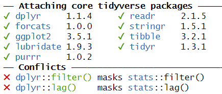
This message informs us that there is a filter()
function in the stats packages which is part of the core
R-installation. That function is masked by the filter()
function from the tidyverse´ packagedplyr`.
If our analysis relies on the way the filter() function
works in the tidyverse, we will get errors if
tidyverse is not loaded.
We might also have data stored in memory. Every time we close RStudio, we are asked if we want to save the environment:
This will save all the objects we have in our environment, in order for RStudio to be able to load them into memory when we open RStudio again.
That can be nice and useful. On the other hand we run the risk of
having the wrong version of the
my_data_that_is_ready_for_analysis dataframe lying around
in memory.
In addition we can experience performance problems. Storing a lot of large objects before closing RStudio can take a lot of time. And loading them into memory when opening RStudio will also take a lot of time.
On modern computers we normally have plenty of storage - but it is entirely possible to fill your harddrive with R-environments to the point where your computer crashes.
Documentation and Metadata
What did we actually do in the analysis? Why did we do it? Why are we reaching the conclusion we’ve arrived at?
Three very good questions. Having good metadata, data that describes your data, often makes understanding your data easier. Documenting the individual steps of your analysis, may not seem necessary right now - you know why you are doing what you are doing. But future you - you in three months, or some one else, might not remember or be able to guess (correctly).
Complex Workflows
Doing data analysis in eg Excel, can involve a lot of pointing and clicking.
And in any piece of software, the analysis will normally always involve more than one step. Those steps will have to be done in the correct order. Calculating a mean of some values, depends heavily on whether it happens before or after deleting irrelevant observations.
The solution to all of this!

Working in RMarkdown allows us to collect the text describing our data, what and why we are doing what we do, the code actually doing it, and the results of that code - all in one document.
Open a new file, choose RMarkdown, and give your document a name:
The code chunks, marked here with a light grey background, contains code, in this case not very advanced code. You can run the entire code chunk by clicking the green arrow on the right. Or by placing your cursor in the line of code you want to run, and pressing ctrl+enter (or command+enter on a Mac).
Outside the code chunks we can add our reasons for actually running
summary on the cars dataframe, and describe
what it contains.
You will see a new button in RStudio:
Clicking this, will “knit” your document; run each chunck of code, add the output to your document, and combine your code, the results and all your explanatory text to one html-document.
If you do not want an HTMl-document, you can knit to a MicroSoft Word document. Depending on your computer, you can knit directly to a pdf.
Having the entirety of your analysis in an RMarkdown document, and then running it, ensures that the individual steps in the analysis are run in the correct order.
It does not ensure that your documentation of what you do is written - it makes it easy to add it, but you still have to do it.
But what about the environment?
So we force ourself to have the steps in our analysis in the correct order, and we make it easy to add documentation. What about the environment?
Working with RMarkdown also adresses this problem. Every time we
knit our document, RStudio opens a new session of R,
without libraries or objects in memory. This ensures that the analysis
is done in the exact same way each and every time.
This, on the other hand, requires us to add code chunks loading libraries and data to our document.
Try it yourself
Make a new RMarkdown document, add library(tidyverse) to
the first chunk, add your own text, and change the plot to plot the
distance variable from the cars data set.
Make a new RMarkdown document - File -> New File -> R Markdown.
Change the final code chunk to include plot(cars$dist)
instead of plot(pressure), and add library(tidyverse).
Key Points
- Use RMarkdown to enforce reproducible analysis
Content from Reading data from file
Last updated on 2025-06-10 | Edit this page
Overview
Questions
- How do you read in data from files?
Objectives
- Explain how to read in data from a selection of different data files.
Introduction
The first step of doing dataanalysis, is normally to read in the data.
Data can come from many different sources, and it is practically impossible to cover every possible format. Here we cover some of the more common.
Use code!
RStudio makes it simple to load most common data formats: Click on the file in the “Files” tab in RStudio, and choose “Import Dataset”:
RStudio will then provide an interface for loading the data:
However in general we prefer to have a script or a document, that can be run without us pointing and clicking. So - instead of importing the data in this way, copy the code that RStudio uses to import the data, and paste it into your script or document.
CSV-files
The most basic file type for storing and transferring data. A “simple” textfile, containing tabular data. One line of text for each row of data, each cell in that row, corresponding to a column, separated with a separator, typically a comma.
Many languages use commas as decimal separators. That neccesitates an option for using something else than a comma. Typically a semicolon.
Truly commaseparated files
Use read.csv() (from base-R) or read_csv()
(from readr, included in tidyverse)
We recommend using read_csv().
Semicolon separated files
Use read.csv2() (from base-R) or
read_csv2() (from readr, included in
tidyverse)
We recommend read_csv2()
What they have in common
read_csv and read_csv2 take a lot of
arguments that can control datatypes, handling of headers etc. For most
use, the default options are enough, but if you need to adjust
something, there are plenty of options for that.
guess_max
read_csv and read_csv2 tries to guess the
datatypes in the file, and will convert the data accordingly. That will
return a dataframe where date-time data is stored as such. The functions
by default reads the first 1000 rows, and makes a guess on the datatype
based on that.
That can lead to problems if the first 1000 rows of a column contain
numbers, and row 1001 contains text. In that case the entire row will be
coerced to numeric, and the following rows will contain
NA values. Adjust the argument guess_max to
something larger to catch this problem.
To include every row in the guess, add guess_max = Inf -
but be careful if you have a very large dataset.
Excel-files
Use the readxl package. Excel comes in two variants,
xls and xlsx. read_excel() makes
a qualified quess of the actual type your excel-file is. Should we need
to specify, we can use read_xls() or
read_xlsx().
Workbooks often contains more than one sheet. We can specify which we want to read in:
read_excel(path = "filename", sheet = 2)
Which will read in sheet number 2 from the workbook “filename”.
Read the documentation for details on how to read in specific cells or ranges.
SPSS
SPSS, originally “Statistical Package for the Social Sciences”, later renamed “Statistical Product and Service Solutions” is a proprietary statistical software suite developed by IBM.
Not surprisingly it is widely used in social science.
The package haven supports reading SPSS (Stata and SAS)
files
Use the package to read in spss files:
R
library(haven)
read_spss("filename")
The function returns at tibble.
Note that SPSS uses a variety of different formats.
read_spss() will make a guess of the correct format, but if
problems arise, try using one of the other functions provided in
haven
Stata
Stata is a proprietary statistical software package, used in a multitude of different fields, primarily biomedicine, epidemiololy, sociology and economics.
As mentioned above, the haven package provides functions
for reading Stata files:
R
library(haven)
read_stata("filename")
The function returns at tibble.
As with SPSS Stata uses a couple of different fileformats, and
read_stata makes a guess as to which format is used. If
problems arise, haven has more specific functions for
reading specific file formats.
SAS
SAS is a proprietary statistical software suite developed by SAS Institute.
The package haven can read SAS-files:
R
library(haven)
read_sas("filename")
The function returns at tibble.
As with SPSS and Stata, SAS uses a couple of different fileformats,
and read_sas tries to guess the correct format.
If problems arise, haven has more specific functions for
reading specific file formats.
JSON
Not all data come in a nice rectangular format, note the multiple phone numbers for the White House:
CountryUSA |
NameNASA |
Phonenumber
|
|
| White House |
(202)-456-1111 |
||
| Russia | Kremlin | 0107-095-295-9051 | |
| Vatican | The Pope | 011-39-6-6982 | |
There are two locations in the US, and one of them have two phone numbers. These kinds of structures, where one row contains data with more than one row (etc), are called nested, and are often stored or distributed in the JSON-format.
JSON can be read using fromJSON() from the
jsonlite library.
R
library(jsonlite)
fromJSON("filename")
Note that you will end up with nested columns - containing lists - which you probably will have to handle afterwards.
Other formats
In general if a piece of software is in widespread enough use that you encounter the weird file-format it uses, someone will have written a package for reading it. Google is your friend here!
Also, if you encounter a really weird dataformat, please send us an example so we can expand our knowledge.
Key Points
- The
readrversion ofread_csv()is preferred - Remember that csv is not always actually separated with commas.
- The
havenpackage contains functions for reading common proprietary file formats. - In general a package will exist for reading strange datatypes. Google is your friend!
- Use code to read in your data
Content from Descriptive Statistics
Last updated on 2025-06-10 | Edit this page
Overview
Questions
- How can we describe a set of data?
Objectives
- Learn about the most common ways of describing a variable
Introduction
Descriptive statistic involves summarising or describing a set of data. It usually presents quantitative descriptions in a short form, and helps to simplify large datasets.
Most descriptive statistical parameters applies to just one variable in our data, and includes:
| Central tendency | Measure of variation | Measure of shape |
|---|---|---|
| Mean | Range | Skewness |
| Median | Quartiles | Kurtosis |
| Mode | Inter Quartile Range | |
| Variance | ||
| Standard deviation | ||
| Percentiles |
Central tendency
The easiest way to get summary statistics on data is to use the
summarise function from the tidyverse
package.
R
library(tidyverse)
In the following we are working with the palmerpenguins
dataset. Note that the actual data is called penguins and
is part of the package palmerpenguins:
R
library(palmerpenguins)
OUTPUT
Attaching package: 'palmerpenguins'OUTPUT
The following objects are masked from 'package:datasets':
penguins, penguins_rawR
head(penguins)
OUTPUT
# A tibble: 6 × 8
species island bill_length_mm bill_depth_mm flipper_length_mm body_mass_g
<fct> <fct> <dbl> <dbl> <int> <int>
1 Adelie Torgersen 39.1 18.7 181 3750
2 Adelie Torgersen 39.5 17.4 186 3800
3 Adelie Torgersen 40.3 18 195 3250
4 Adelie Torgersen NA NA NA NA
5 Adelie Torgersen 36.7 19.3 193 3450
6 Adelie Torgersen 39.3 20.6 190 3650
# ℹ 2 more variables: sex <fct>, year <int>344 penguins have been recorded at three different islands over three years. Three different penguin species are in the dataset, and we have data on their weight, sex, length of their flippers and two measurements of their bill (beak).
 {Copyright Allison
Horst}
{Copyright Allison
Horst}
Specifically we are going to work with the weight of the penguins,
stored in the variable body_mass_g:
R
penguins$body_mass_g
OUTPUT
[1] 3750 3800 3250 NA 3450 3650 3625 4675 3475 4250 3300 3700 3200 3800 4400
[16] 3700 3450 4500 3325 4200 3400 3600 3800 3950 3800 3800 3550 3200 3150 3950
[31] 3250 3900 3300 3900 3325 4150 3950 3550 3300 4650 3150 3900 3100 4400 3000
[46] 4600 3425 2975 3450 4150 3500 4300 3450 4050 2900 3700 3550 3800 2850 3750
[61] 3150 4400 3600 4050 2850 3950 3350 4100 3050 4450 3600 3900 3550 4150 3700
[76] 4250 3700 3900 3550 4000 3200 4700 3800 4200 3350 3550 3800 3500 3950 3600
[91] 3550 4300 3400 4450 3300 4300 3700 4350 2900 4100 3725 4725 3075 4250 2925
[106] 3550 3750 3900 3175 4775 3825 4600 3200 4275 3900 4075 2900 3775 3350 3325
[121] 3150 3500 3450 3875 3050 4000 3275 4300 3050 4000 3325 3500 3500 4475 3425
[136] 3900 3175 3975 3400 4250 3400 3475 3050 3725 3000 3650 4250 3475 3450 3750
[151] 3700 4000 4500 5700 4450 5700 5400 4550 4800 5200 4400 5150 4650 5550 4650
[166] 5850 4200 5850 4150 6300 4800 5350 5700 5000 4400 5050 5000 5100 4100 5650
[181] 4600 5550 5250 4700 5050 6050 5150 5400 4950 5250 4350 5350 3950 5700 4300
[196] 4750 5550 4900 4200 5400 5100 5300 4850 5300 4400 5000 4900 5050 4300 5000
[211] 4450 5550 4200 5300 4400 5650 4700 5700 4650 5800 4700 5550 4750 5000 5100
[226] 5200 4700 5800 4600 6000 4750 5950 4625 5450 4725 5350 4750 5600 4600 5300
[241] 4875 5550 4950 5400 4750 5650 4850 5200 4925 4875 4625 5250 4850 5600 4975
[256] 5500 4725 5500 4700 5500 4575 5500 5000 5950 4650 5500 4375 5850 4875 6000
[271] 4925 NA 4850 5750 5200 5400 3500 3900 3650 3525 3725 3950 3250 3750 4150
[286] 3700 3800 3775 3700 4050 3575 4050 3300 3700 3450 4400 3600 3400 2900 3800
[301] 3300 4150 3400 3800 3700 4550 3200 4300 3350 4100 3600 3900 3850 4800 2700
[316] 4500 3950 3650 3550 3500 3675 4450 3400 4300 3250 3675 3325 3950 3600 4050
[331] 3350 3450 3250 4050 3800 3525 3950 3650 3650 4000 3400 3775 4100 3775How can we describe these values?
Mean
The mean is the average of all datapoints. We add all values
(excluding the missing values encoded with NA), and divide
with the number of observations:
\[\overline{x} = \frac{1}{N}\sum_1^N x_i\] Where N is the number of observations, and \(x_i\) is the individual observations in the sample \(x\).
The easiest way of getting the mean is using the mean()
function:
R
mean(penguins$body_mass_g, na.rm = TRUE)
OUTPUT
[1] 4201.754A slightly more cumbersome way is using the summarise()
function from tidyverse:
R
penguins %>%
summarise(avg_mass = mean(body_mass_g, na.rm = T))
OUTPUT
# A tibble: 1 × 1
avg_mass
<dbl>
1 4202.As we will see below, this function streamlines the process of getting multiple descriptive values.
Barring significant outliers, mean is an expression of
position of the data. This is the weight we would expect a random
penguin in our dataset to have.
However, we have three different species of penguins in the dataset, and they have quite different average weights. There is also a significant difference in the average weight for the two sexes.
We will get to that at the end of this segment.
Median
Similarly to the average/mean, the median is an
expression of the location of the data. If we order our data by size,
from the smallest to the largest value, and locate the middle
observation, we get the median. This is the value that half of the
observations is smaller than. And half the observations is larger.
R
median(penguins$body_mass_g, na.rm = TRUE)
OUTPUT
[1] 4050We can note that the mean is larger than the median. This indicates that the data is skewed, in this case toward the larger penguins.
We can get both median and mean in one go
using the summarise() function:
R
penguins %>%
summarise(median = median(body_mass_g, na.rm = TRUE),
mean = mean(body_mass_g, na.rm = TRUE))
OUTPUT
# A tibble: 1 × 2
median mean
<dbl> <dbl>
1 4050 4202.Mode
Mode is the most common, or frequently occurring, observation. R does not have a build-in function for this, but we can easily find the mode by counting the different observations,and locating the most common one.
We typically do not use this for continous variables. The mode of the
sex variable in this dataset can be found like this:
R
penguins %>%
count(sex) %>%
arrange(desc(n))
OUTPUT
# A tibble: 3 × 2
sex n
<fct> <int>
1 male 168
2 female 165
3 <NA> 11We count the different values in the sex variable, and
arrange the counts in descending order (desc). The mode of
the sex variable is male.
In this specific case, we note that the dataset is pretty evenly balanced regarding the two sexes.
Measures of variance
Knowing where the observations are located is interesting. But how do they vary? How can we describe the variation in the data?
Range
The simplest information about the variation is the range. What is the smallest and what is the largest value? Or, what is the spread?
We can get that by using the min() and
max() functions in a summarise() function:
R
penguins %>%
summarise(min = min(body_mass_g, na.rm = T),
max = max(body_mass_g, na.rm = T))
OUTPUT
# A tibble: 1 × 2
min max
<int> <int>
1 2700 6300There is a dedicated function, range(), that does the
same. However it returns two values (for each row), and the summarise
function expects to get one value.
If we would like to use the range() function, we can add
it using the reframe() function instead of
summarise():
R
penguins %>%
reframe(range = range(body_mass_g, na.rm = T))
OUTPUT
# A tibble: 2 × 1
range
<int>
1 2700
2 6300Variance
The observations varies. They are not all located at the mean (or median), but are spread out on both sides of the mean. Can we get a numerical value describing that?
An obvious way would be to calculate the difference between each of the observations and the mean, and then take the average of those differences.
That will give us the average deviation. But we have a problem. The average weight of penguins was 4202 (rounded). Look at two penguins, one weighing 5000, and another weighing 3425. The differences are:
- 5000 - 4202 = 798
- 3425 - 4202 = -777
The sum of those two differences is: -777 + 798 = 21 g. And the average is then 10.5 gram. That is not a good estimate of a variation from the mean of more than 700 gram.
The problem is, that the differences can be both positive and negative, and might cancel each other out.
We solve that problem by squaring the differences, and calculate the mean of those.
For the population variance, the mathematical notation would be:
\[ \sigma^2 = \frac{\sum_{i=1}^N(x_i - \mu)^2}{N} \]
Population or sample?
Why are we suddenly using \(\mu\) instead of \(\overline{x}\)? Because this definition uses the population mean. The mean, or average, in the entire population of all penguins everywhere in the universe. But we have not weighed all those penguins.
And the sample variance:
\[ s^2 = \frac{\sum_{i=1}^N(x_i - \overline{x})^2}{N-1} \]
Note that we also change the \(\sigma\) to an \(s\).
And again we are not going to do that by hand, but will ask R to do it for us:
R
penguins %>%
summarise(
variance = var(body_mass_g, na.rm = T)
)
OUTPUT
# A tibble: 1 × 1
variance
<dbl>
1 643131.Standard deviation
There is a problem with the variance. It is 643131, completely off scale from the actual values. There is also a problem with the unit which is in \(g^2\).
A measurement of the variation of the data would be the standard deviation, simply defined as the square root of the variance:
R
penguins %>%
summarise(
s = sd(body_mass_g, na.rm = T)
)
OUTPUT
# A tibble: 1 × 1
s
<dbl>
1 802.Since the standard deviation occurs in several statistical tests, it is more frequently used than the variance. It is also more intuitively relateable to the mean.
A histogram
A visual illustration of the data can be nice. Often one of the first we make, is a histogram.
A histogram is a plot or graph where we split the range of observations in a number of “buckets”, and count the number of observations in each bucket:
R
penguins %>%
select(body_mass_g) %>%
filter(!is.na(body_mass_g)) %>%
mutate(buckets = cut(body_mass_g, breaks=seq(2500,6500,500))) %>%
group_by(buckets) %>%
summarise(antal = n())
OUTPUT
# A tibble: 8 × 2
buckets antal
<fct> <int>
1 (2.5e+03,3e+03] 11
2 (3e+03,3.5e+03] 67
3 (3.5e+03,4e+03] 92
4 (4e+03,4.5e+03] 57
5 (4.5e+03,5e+03] 54
6 (5e+03,5.5e+03] 33
7 (5.5e+03,6e+03] 26
8 (6e+03,6.5e+03] 2Typically, rather than counting ourself, we leave the work to R, and make a histogram directly:
R
penguins %>%
ggplot((aes(x=body_mass_g))) +
geom_histogram()
OUTPUT
`stat_bin()` using `bins = 30`. Pick better value with `binwidth`.WARNING
Warning: Removed 2 rows containing non-finite outside the scale range
(`stat_bin()`).By default ggplot chooses 30 bins, typically we should chose a different number:
R
penguins %>%
ggplot((aes(x=body_mass_g))) +
geom_histogram(bins = 25)
WARNING
Warning: Removed 2 rows containing non-finite outside the scale range
(`stat_bin()`).Or, ideally, set the widths of them, manually:
R
penguins %>%
ggplot((aes(x=body_mass_g))) +
geom_histogram(binwidth = 250) +
ggtitle("Histogram with binwidth = 250 g")
WARNING
Warning: Removed 2 rows containing non-finite outside the scale range
(`stat_bin()`).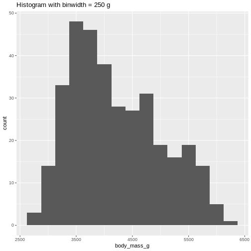 Or even specify the exact intervals we want, here intervals from 0 to 6500 gram in intervals of 250 gram:
R
penguins %>%
ggplot((aes(x=body_mass_g))) +
geom_histogram(breaks = seq(0,6500,250)) +
ggtitle("Histogram with bins in 250 g steps from 0 to 6500 g")
WARNING
Warning: Removed 2 rows containing non-finite outside the scale range
(`stat_bin()`).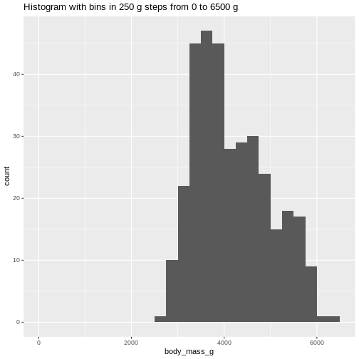 The histogram provides us with a visual indication of both range, the variation of the values, and an idea about where the data is located.
Quartiles
The median can be understood as splitting the data in two equally sized parts, where one is characterized by having values smaller than the median and the other as having values larger than the median. It is the value where 50% of the observations are smaller.
Similary we can calculate the value where 25% of the observations are smaller.
That is often called the first quartile, where the median is the 50%, or second quartile. Quartile implies four parts, and the existence of a third or 75% quartile.
We can calcultate those using the quantile function:
R
quantile(penguins$body_mass_g, probs = .25, na.rm = T)
OUTPUT
25%
3550 and
R
quantile(penguins$body_mass_g, probs = .75, na.rm = T)
OUTPUT
75%
4750 We are often interested in knowing the range in which 50% of the observations fall.
That is used often enough that we have a dedicated function for it:
R
penguins %>%
summarise(iqr = IQR(body_mass_g, na.rm = T))
OUTPUT
# A tibble: 1 × 1
iqr
<dbl>
1 1200The name of the quantile function implies that we might have other quantiles than quartiles. Actually we can calculate any quantile, eg the 2.5% quantile:
R
quantile(penguins$body_mass_g, probs = .025, na.rm = T)
OUTPUT
2.5%
2988.125 The individual quantiles can be interesting in themselves. If we want a visual representation of all quantiles, we can calculate all of them, and plot them.
Instead of doing that by hand, we can use a concept called CDF or cumulative density function:
R
CDF <- ecdf(penguins$body_mass_g)
CDF
OUTPUT
Empirical CDF
Call: ecdf(penguins$body_mass_g)
x[1:94] = 2700, 2850, 2900, ..., 6050, 6300That was not very informative. Lets plot it:
Measures of shape
Skewness
We previously saw a histogram of the data, and noted that the observations were skewed to the left, and that the “tail” on the right was longer than on the left. That skewness can be quantised.
There is no function for skewness build into R, but we can get it
from the library e1071
R
library(e1071)
skewness(penguins$body_mass_g, na.rm = T)
OUTPUT
[1] 0.4662117The skewness is positive, indicating that the data are skewed to the left, just as we saw. A negative skewness would indicate that the data skew to the right.
Kurtosis
Another parameter describing the shape of the data is kurtosis. We can think of that as either “are there too many observations in the tails?” leading to a relatively low peak. Or, as “how pointy is the peak” - because the majority of observations are centered in the peak, rather than appearing in the tails.
We use the e1071 package again:
R
kurtosis(penguins$body_mass_g, na.rm = T)
OUTPUT
[1] -0.73952Kurtosis is defined weirdly, and here we get “excess” kurtosis, the actual kurtosis minus 3. We have negative kurtosis, indicating that the peak is flat, and the tails are fat.
Everything Everywhere All at Once
A lot of these descriptive values can be gotten for every variable in
the dataset using the summary function:
R
summary(penguins)
OUTPUT
species island bill_length_mm bill_depth_mm
Adelie :152 Biscoe :168 Min. :32.10 Min. :13.10
Chinstrap: 68 Dream :124 1st Qu.:39.23 1st Qu.:15.60
Gentoo :124 Torgersen: 52 Median :44.45 Median :17.30
Mean :43.92 Mean :17.15
3rd Qu.:48.50 3rd Qu.:18.70
Max. :59.60 Max. :21.50
NA's :2 NA's :2
flipper_length_mm body_mass_g sex year
Min. :172.0 Min. :2700 female:165 Min. :2007
1st Qu.:190.0 1st Qu.:3550 male :168 1st Qu.:2007
Median :197.0 Median :4050 NA's : 11 Median :2008
Mean :200.9 Mean :4202 Mean :2008
3rd Qu.:213.0 3rd Qu.:4750 3rd Qu.:2009
Max. :231.0 Max. :6300 Max. :2009
NA's :2 NA's :2 Here we get the range, the 1st and 3rd quantiles (and from those the IQR), the median and the mean and, rather useful, the number of missing values in each variable.
We can also get all the descriptive values in one table, by adding more than one summarizing function to the summarise function:
R
penguins %>%
summarise(min = min(body_mass_g, na.rm = T),
max = max(body_mass_g, na.rm = T),
mean = mean(body_mass_g, na.rm = T),
median = median(body_mass_g, na.rm = T),
stddev = sd(body_mass_g, na.rm = T),
var = var(body_mass_g, na.rm = T),
Q1 = quantile(body_mass_g, probs = .25, na.rm = T),
Q3 = quantile(body_mass_g, probs = .75, na.rm = T),
iqr = IQR(body_mass_g, na.rm = T),
skew = skewness(body_mass_g, na.rm = T),
kurtosis = kurtosis(body_mass_g, na.rm = T)
)
OUTPUT
# A tibble: 1 × 11
min max mean median stddev var Q1 Q3 iqr skew kurtosis
<int> <int> <dbl> <dbl> <dbl> <dbl> <dbl> <dbl> <dbl> <dbl> <dbl>
1 2700 6300 4202. 4050 802. 643131. 3550 4750 1200 0.466 -0.740As noted, we have three different species of penguins in the dataset. Their weight varies a lot. If we want to do the summarising on each for the species, we can group the data by species, before summarising:
R
penguins %>%
group_by(species) %>%
summarise(min = min(body_mass_g, na.rm = T),
max = max(body_mass_g, na.rm = T),
mean = mean(body_mass_g, na.rm = T),
median = median(body_mass_g, na.rm = T),
stddev = sd(body_mass_g, na.rm = T)
)
OUTPUT
# A tibble: 3 × 6
species min max mean median stddev
<fct> <int> <int> <dbl> <dbl> <dbl>
1 Adelie 2850 4775 3701. 3700 459.
2 Chinstrap 2700 4800 3733. 3700 384.
3 Gentoo 3950 6300 5076. 5000 504.We have removed some summary statistics in order to get a smaller table.
Boxplots
Finally boxplots offers a way of visualising some of the summary statistics:
R
penguins %>%
ggplot(aes(x=body_mass_g, y = sex)) +
geom_boxplot()
WARNING
Warning: Removed 2 rows containing non-finite outside the scale range
(`stat_boxplot()`).The boxplot shows us the median (the fat line in the middel of each box), the 1st and 3rd quartiles (the ends of the boxes), and the range, with the whiskers at each end of the boxes, illustrating the minimum and maximum. Any observations, more than 1.5 times the IQR from either the 1st or 3rd quartiles, are deemed as outliers and would be plotted as individual points in the plot.
Counting
Most of the descriptive functions above are focused on continuous variables, maybe grouped by one or more categorical variables.
What about the categorical themselves?
The one thing we can do looking only at categorical variables, is counting.
Counting the different values in a single categorical variable in
base-R is done using the table(() function
R
table(penguins$sex)
OUTPUT
female male
165 168 Often we are interested in cross tables, tables where we count the different combinations of the values in more than one categorical variable, eg the distribution of the two different penguin sexes on the three different islands:
R
table(penguins$island, penguins$sex)
OUTPUT
female male
Biscoe 80 83
Dream 61 62
Torgersen 24 23We can event group on three (or more) categorical variables, but the output becomes increasingly difficult to read the mote variables we add:
R
table(penguins$island, penguins$sex, penguins$species)
OUTPUT
, , = Adelie
female male
Biscoe 22 22
Dream 27 28
Torgersen 24 23
, , = Chinstrap
female male
Biscoe 0 0
Dream 34 34
Torgersen 0 0
, , = Gentoo
female male
Biscoe 58 61
Dream 0 0
Torgersen 0 0Aggregate
A different way of doing that in base-R is using the
aggregate() function:
R
aggregate(sex ~ island, data = penguins, FUN = length)
OUTPUT
island sex
1 Biscoe 163
2 Dream 123
3 Torgersen 47Here we construct the crosstable using the formula notation, and
specify which function we want to apply on the results. This can be used
to calculate summary statistics on groups, by adjusting the
FUN argument.
Counting in tidyverse
In tidyverse we will typically group the data by the variables we want to count, and then tallying them:
R
penguins %>%
group_by(sex) %>%
tally()
OUTPUT
# A tibble: 3 × 2
sex n
<fct> <int>
1 female 165
2 male 168
3 <NA> 11group_by works equally well with more than one
group:
R
penguins %>%
group_by(sex, species) %>%
tally()
OUTPUT
# A tibble: 8 × 3
# Groups: sex [3]
sex species n
<fct> <fct> <int>
1 female Adelie 73
2 female Chinstrap 34
3 female Gentoo 58
4 male Adelie 73
5 male Chinstrap 34
6 male Gentoo 61
7 <NA> Adelie 6
8 <NA> Gentoo 5But the output is in a long format, and often requires some manipulation to get into a wider tabular format.
A shortcut exists in tidyverse, count, which combines
group_by and tally:
R
penguins %>%
count(sex, species)
OUTPUT
# A tibble: 8 × 3
sex species n
<fct> <fct> <int>
1 female Adelie 73
2 female Chinstrap 34
3 female Gentoo 58
4 male Adelie 73
5 male Chinstrap 34
6 male Gentoo 61
7 <NA> Adelie 6
8 <NA> Gentoo 5Key Points
- We have access to a lot of summarising descriptive indicators the the location, spread and shape of our data.
Content from Histograms
Last updated on 2025-06-10 | Edit this page
Overview
Questions
- What is a histogram?
- What do we use histograms for?
- What is the connection between number of bins, binwidths and breaks?
- How do we chose a suitable number of bins?
Objectives
- Understand what a histogram is, and what it is used for
- Introduce a number of heuristics for chosing the “correct” number of bins
What even is a histogram?
We use histograms to visualise the distribution of some continuous variable. It have values between a minimum and maximum value (range), but are these values equally probable? Probably not.
In a histogram we divide the range in a number of bins, count the number of observations in each bin, and make a plot with a bar for each bin, where the height is equivalent to the number of observations in each bin.
Normally the bins have equal width - equal to the range of the variable (max - min), divided by the number of bins.
How do we do that?
Let us look at some data - penguin data:
R
library(tidyverse)
library(palmerpenguins)
R has a build-in histogram function, hist(), which will
make a basic histogram, of the data we provide it with:
R
hist(penguins$bill_length_mm)

This is not a very nice looking histogram, and ggplot2
provides us with a more easily customisable
geom_histogram() function:
R
ggplot(penguins, aes(x=bill_length_mm)) +
geom_histogram()
OUTPUT
`stat_bin()` using `bins = 30`. Pick better value with `binwidth`.WARNING
Warning: Removed 2 rows containing non-finite outside the scale range
(`stat_bin()`).This is the distibution of the length, in millimeter, of the bill (or beak) of a selection of penguins.
By default the geom_histogram() function divides the
range of the data (min = 32.1, max = 59.6 mm) into 30 bins. Each bin
therefore have a width of 0.9167 mm. The first bin contains a single
penguin, that has a beak that is between 32.1 and 32.1 + 0.9187 mm
long.
From this plot we get information about the distribution of bill-lengths of penguins.
There appears to be several different “peaks” in the plot. This is to be expected as we have three different species of penguins in the data, in addition to having penguins of both sexes.
If we want to split the histogram into these different groups, we can
use the possibilities available in ggplot2:
R
ggplot(penguins, aes(x=bill_length_mm)) +
geom_histogram() +
facet_grid(sex~species)
OUTPUT
`stat_bin()` using `bins = 30`. Pick better value with `binwidth`.WARNING
Warning: Removed 2 rows containing non-finite outside the scale range
(`stat_bin()`).The data now looks a bit more normally distributed. And we can observe that male penguins tend to have longer beaks than female penguins. We can also see that the different species of penguins have different bill lengths.
How many bins?
Note the warning we get.
“using bins = 30. Pick better value with
binwidth”
The choice of number of bins have a big influence on how the data is
visualised. By providing the geom_histogram() function with
an argument, bins = xx where xx is the number
of bins we can adjust the number of bins:
Try it yourself
Try to plot the bill_length_mm variable in the penguins dataset with different numbers of bins.
R
ggplot(penguins, aes(x=bill_length_mm)) +
geom_histogram(bins = 20)
WARNING
Warning: Removed 2 rows containing non-finite outside the scale range
(`stat_bin()`).By default geom_histogram() choses 30 bins. This default
value has been chosen because it is almost never the correct choice.
ggplot2 is an opinionated package, that tries to force us
to make better plots. And this is the reason for the warning.
How many bins should we chose?
We should chose the number of bins that best tells the story we want to tell about our data. But also the number of bins that does not hide information about our data.
The obvious way to do this is to fiddle with the number of bins, and find the number that best do that.
But that can feel a bit cheaty. How do we rationalise the number of bins in a way that makes sure that this number is not just the one that show what we want the data to show, but the number that actually show the data as it is?
A number of heuristics for chosing the “correct” number of bins exist.
A heuristic is a fancy way of saying “rule of thumb”. “Heuristic” sounds like we know what we are talking about.
Different heuristics for chosing number of bins.
To have an approximately consistent way of describing them, we use these three values:
- k for the number of bins
- h for the width of the bins
- n for the number of observations
We also use a couple of mathematical signs: \(\lceil\) and \(\rceil\). These are “ceiling” functions, and simply mean that we round a number up. Rather than rounding 4.01 to 4, we round up to 5.
Freedman-Diaconis
This heuristic determines the bind-width as:
\[h = 2 \cdot IQR \cdot n^{-1/3}\]
where IQR is the interquartile range of our data, which can be found
using the IQR() function.
The number of bins are then found as
\[ k = \lceil \frac{range}{h} \rceil \] ::::challenge ## Try it yourself
How many bins does Freedman-Diaconis prescribe for making a histogram of the bill length of the penguins?
Get all the lengths of the penguin bills, excluding missing values:
R
bill_lengths <- penguins$bill_length_mm %>%
na.omit()
Find \(n\):
R
n <- length(bill_lengths)
And the inter quartile range:
R
iqr <- IQR(bill_lengths)
Now find the recommended bin-width:
R
h <- 2*iqr*n^(-1/3)
And then the number of bins:
R
k <- (max(bill_lengths) - min(bill_lengths))/h
Remember to take the ceiling:
R
ceiling(k)
OUTPUT
[1] 11::::
Square root rule
The number of bins \(k\) are found directly from the number of observations, n:
\[k = \lceil\sqrt{n}\rceil\]
Try it yourself
According to the Square Root rule, how many bins should we use for a histogram of the length of penguin bills?
Get all the lengths of the penguin bills, excluding missing values:
R
bill_lengths <- penguins$bill_length_mm %>%
na.omit()
Find \(n\):
R
n <- length(bill_lengths)
And calculate the square root of \(n\), rounded up using the
ceiling() function:
R
ceiling(sqrt(n))
OUTPUT
[1] 19The Sturges rule
Here we also find \(k\) directly from the number of observations:
\[ k = \lceil\log_2(n) + 1\rceil \] An implicit assumption is that the data is approximately normally distributed.
\(\log_2\) is found using the
log2() function.
Try it yourself
According to the Sturgess rule, how many bins should we use for a histogram of the length of penguin bills?
Get all the lengths of the penguin bills, excluding missing values:
R
bill_lengths <- penguins$bill_length_mm %>%
na.omit()
Find \(n\):
R
n <- length(bill_lengths)
Now find \(k\)
R
k <- log2(n) + 1
And remember to round up:
R
ceiling(k)
OUTPUT
[1] 10The Rice Rule
Again we get \(k\) directly from \(n\):
\[k = \lceil 2n^{1/3}\rceil\] ::::challenge
According to the Rice rule, how many bins should we use for a histogram of the length of penguin bills? ::::solution
Get all the lengths of the penguin bills, excluding missing values:
R
bill_lengths <- penguins$bill_length_mm %>%
na.omit()
Find \(n\):
R
n <- length(bill_lengths)
And then find \(k\):
R
k <- 2*n^(1/3)
Remember to round up:
R
ceiling(k)
OUTPUT
[1] 14:::: ::::
Doanes Rule
This rule is a bit more complicated:
\[k= 1 + \log_2(n) + \log_2(1+ |g_1|/\sigma_{g1})\]
\(|g_1|\) is the absolute value of
the estimated 3rd moment skewness of the data, found by using the
skewness() function from the e1071 package,
and \(\sigma_{g1}\) is found by:
\[\sigma_{g1} = \sqrt{6(n-2)/((n+1)(n+3))}\]
Doanes rule basically adds extra bins based on how skewed the data is, and works better than Sturges’ rule for non-normal distributions.
Challenge
According to Doanes rule, how many bins should we use for a histogram of the length of penguin bills? ::::solution
Get all the lengths of the penguin bills, excluding missing values:
R
bill_lengths <- penguins$bill_length_mm %>%
na.omit()
Find \(n\):
R
n <- length(bill_lengths)
Find \(g_1\):
R
g1 <- skewness(bill_lengths)
ERROR
Error in skewness(bill_lengths): could not find function "skewness"Find \(\sigma_{g1}\):
R
s_g1 <- sqrt(6*(n-2)/((n+1)*(n+3)))
Now we can find \(k\). Remember to take the absolute value of \(g_1\)
R
k <- 1 + log2(n) + log2(1+abs(g1)/s_g1)
ERROR
Error: object 'g1' not foundAnd then round up \(k\) to get the number of bins:
R
ceiling(k)
OUTPUT
[1] 14::::
Scott’s rule
Here we get the bin-width \(h\) using this expression:
\[h = 3.49 \frac{\sigma}{n^{1/3}}\] Where \(\sigma\) is the standard deviation of the data. This rule implicitly assumes that the data is normally distributed.
Challenge
According to Scott’s rule, how many bins should we use for a histogram of the length of penguin bills? ::::solution
Get all the lengths of the penguin bills, excluding missing values:
R
bill_lengths <- penguins$bill_length_mm %>%
na.omit()
Find \(n\):
R
n <- length(bill_lengths)
Find \(\sigma\):
R
sigma <- sd(bill_lengths)
Now we can find the bin-width \(h\):
R
h <- 3.49*sigma*(n^(-1/3))
And from that, the number of bins \(k\):
R
k <- (max(bill_lengths) - min(bill_lengths))/h
Remember to round up \(k\):
R
ceiling(k)
OUTPUT
[1] 11::::
That is difficult
Rather than doing these calculations on our own, we can read the help
file for the hist() function. The argument
breaks allow us to specify where the breaks in the
histogram - the splits in bins - should occur.
We can see that the default value is “Sturges”. And under details we
can see the other options that hist() can work with,
“Scott” and “FD” for Freedman-Diaconis. We also get a hint of the
functions that can return the number of bins:
R
nclass.Sturges(penguins$bill_length_mm)
OUTPUT
[1] 10nclass.FD and nclass.scott works similarly,
but note that it is necessary to remove missing values. If one of the
other heuristics is needed, we either need to do the calculations
ourself - or try to identify a package that contains functions to do
it.
Another way
With these heuristics, we can calculate the recommended number of bins for making a histogram. And with that number, knowing the range of the data, we can calculate the binwidth.
Either of those can be used as an argument in
geom_histogram(), bins= and
binwidth= respectively.
However, for effective communication, we might consider a third way. The bill length of the penguins ranges from 32.1 to 59.6 mm. With 9 bins we will get a bin width of 3.055556 mm. The first bin will therefore start at 32.1 and end at 35.15556 mm, and the second will start at 35.15556 mm and end at 38.21112. These are the breaks, and they are not very intuitive.
Instead we might consider choosing the breaks ourself. Having a first bin that starts at 32 mm and ends at 35, and the a second bin that starts at 35 mm and ends at 38 might be beneficial for understanding the histogram.
Those breaks can also be provide to the geom_histogram()
function - we just need to calculate them our self.
The seq() function is useful for this.
This function returns a sequence of numbers from a start value, to and end value, in steps that we can chose:
R
seq(from = 30, to = 65, by = 5)
OUTPUT
[1] 30 35 40 45 50 55 60 65You will have to think about the from and the
to arguments, to not exclude any observations, but this
method give us much more natural breaks in the histogram:
R
penguins %>%
ggplot(aes(x=bill_length_mm)) +
geom_histogram(breaks = seq(from = 30, to = 65, by = 5))
WARNING
Warning: Removed 2 rows containing non-finite outside the scale range
(`stat_bin()`).
Do not abuse the option of specifying breaks!
Instead of using the seq() function we could construct
the breaks by hand:
R
c(30, 35, 40, 45, 50, 55, 60, 65)
And it might be tempting enter breaks that would lead to uneven binwidths:
R
c(30, 40, 42, 45, 50, 55, 60, 65)
Do not do this. This will, except in very rare cases, rightfully be considered misleading. Always use a consistent binwidth!
Key Points
- Histograms are used for visualising the distribution of data
- A lot of different rules for chosing number of bins exists
- Binwidth and number of bins are equivalent
- Chose the number of bins that best supports your data story. Without hiding inconvenient truths about your data.
- Never use unequal binwidths
- Consider using natural breaks as an alternative
Content from Table One
Last updated on 2025-06-10 | Edit this page
Overview
Questions
- How do you make a Table One?
Objectives
- Explain what a Table One is
- Know how to make a Tabel One and adjust key parameters
What is a “Table One”?
Primarily used in medical and epidemiological research, a Table One is typically the first table in any publication using data.
It presents the baseline characteristics of the participants in a study, and provides a concise overview of the relevant demographic and clinical variables.
It typically compares different groups (male~female, treatment~control), to highlight similarities and differences.
It can look like this:
|
control
|
case
|
Overall
|
||||
|---|---|---|---|---|---|---|
|
no (N=298) |
yes (N=48) |
no (N=135) |
yes (N=29) |
no (N=433) |
yes (N=77) |
|
| Age (years) | ||||||
| Mean (SD) | 61.3 (4.75) | 58.9 (5.68) | 61.5 (4.85) | 58.1 (5.32) | 61.4 (4.78) | 58.6 (5.53) |
| Median [Min, Max] | 62.0 [46.0, 69.0] | 59.0 [46.0, 68.0] | 62.0 [45.0, 69.0] | 58.0 [49.0, 68.0] | 62.0 [45.0, 69.0] | 58.0 [46.0, 68.0] |
| testost | ||||||
| Mean (SD) | 25.3 (13.2) | 22.2 (10.7) | 27.6 (16.1) | 28.2 (15.6) | 26.0 (14.2) | 24.4 (13.0) |
| Median [Min, Max] | 23.0 [4.00, 111] | 21.5 [8.00, 63.0] | 25.0 [6.00, 144] | 24.0 [10.0, 69.0] | 23.0 [4.00, 144] | 22.0 [8.00, 69.0] |
| Missing | 6 (2.0%) | 2 (4.2%) | 3 (2.2%) | 1 (3.4%) | 9 (2.1%) | 3 (3.9%) |
| prolactn | ||||||
| Mean (SD) | 9.60 (5.10) | 13.7 (12.3) | 10.8 (6.79) | 9.57 (3.29) | 9.99 (5.70) | 12.2 (10.1) |
| Median [Min, Max] | 8.16 [1.96, 37.3] | 8.81 [3.87, 55.8] | 9.30 [2.66, 59.9] | 8.88 [4.49, 17.6] | 8.64 [1.96, 59.9] | 8.84 [3.87, 55.8] |
| Missing | 14 (4.7%) | 0 (0%) | 6 (4.4%) | 1 (3.4%) | 20 (4.6%) | 1 (1.3%) |
Please note that the automatic styling of this site results in a table-one that is not very nice looking.
We have 510 participants in a study, split into control and case groups, and further subdivided into two groups based on PostMenopausal Hormone use. It describes the distribution of sex and concentration of testosterone and prolactin in a blood sample.
How do we make that?
Structuring the data
Most things in R are simple to do (but rarely simple to understand) when the data has the correct structure.
If we follow the general rules of thumb for tidy data, we are off to a good start. This is the structure of the data set we are working with here - after we have made some modifications regarding labels, levels and units.
R
head(blood)
OUTPUT
# A tibble: 6 × 8
ID matchid case curpmh ageblood estradol testost prolactn
<dbl> <dbl> <fct> <fct> <dbl> <dbl> <dbl> <dbl>
1 100013 164594 control yes 46 57 25 11.1
2 100241 107261 control no 65 11 NA 2.8
3 100696 110294 control yes 66 3 8 38
4 101266 101266 case no 57 4 6 8.9
5 101600 101600 case no 66 6 25 6.9
6 102228 155717 control yes 57 10 31 13.9The important thing to note is that when we stratify the summary statistics by some variable, this variable have to be a categorical variable. The variables we want to do summary statistics on also have to have the correct type. Are the values categorical, the column in the dataframe have to actually be categorical. Are they numeric, the data type have to be numeric.
And having the data - how do we actually do it?
A number of packages making it easy to make a Table One exists. Here
we look at the package table1.
The specific way of doing it depends on the data available. If we do not have data on the weight of the participants, we are not able to describe the distribution of their weight.
Let us begin by looking at the data. We begin by loading the two
packages tidyverse and table1. We then read in
the data from the csv-file “BLOOD.csv”, which we have downloaded
from this link.
R
library(tidyverse)
library(table1)
blood <- read_csv("data/BLOOD.csv")
head(blood)
OUTPUT
# A tibble: 6 × 9
ID matchid case curpmh ageblood estradol estrone testost prolactn
<dbl> <dbl> <dbl> <dbl> <dbl> <dbl> <dbl> <dbl> <dbl>
1 100013 164594 0 1 46 57 65 25 11.1
2 100241 107261 0 0 65 11 26 999 2.8
3 100696 110294 0 1 66 3 999 8 38
4 101266 101266 1 0 57 4 18 6 8.9
5 101600 101600 1 0 66 6 18 25 6.9
6 102228 155717 0 1 57 10 999 31 13.9510 rows. Its a case-control study, where the ID represents one individual, and matchid gives us the link between cases and controls. Ageblood is the age of the individual at the time when the blood sample was drawn, and we then have levels of four different hormones.
The data contains missing values, coded as “999.0” for estrone and testost, and 99.99 for prolactin.
Let us fix that:
R
blood <- blood %>%
mutate(estrone = na_if(estrone, 999.0)) %>%
mutate(testost = na_if(testost, 999.0)) %>%
mutate(prolactn = na_if(prolactn, 99.99))
We then ensure that categorical values are stored as categorical values, and adjust the labels of those categorical values:
R
blood <- blood %>%
mutate(case = factor(case, labels = c("control", "case"))) %>%
mutate(curpmh = factor(curpmh, labels = c("no", "yes")))
And now we can make our table one like this. Note that we only include testosterone and prolactin, in order to get a more manageble table 1:
R
table1(~ageblood + testost + prolactn|case + curpmh, data = blood)
|
control
|
case
|
Overall
|
||||
|---|---|---|---|---|---|---|
|
no (N=298) |
yes (N=48) |
no (N=135) |
yes (N=29) |
no (N=433) |
yes (N=77) |
|
| ageblood | ||||||
| Mean (SD) | 61.3 (4.75) | 58.9 (5.68) | 61.5 (4.85) | 58.1 (5.32) | 61.4 (4.78) | 58.6 (5.53) |
| Median [Min, Max] | 62.0 [46.0, 69.0] | 59.0 [46.0, 68.0] | 62.0 [45.0, 69.0] | 58.0 [49.0, 68.0] | 62.0 [45.0, 69.0] | 58.0 [46.0, 68.0] |
| testost | ||||||
| Mean (SD) | 25.3 (13.2) | 22.2 (10.7) | 27.6 (16.1) | 28.2 (15.6) | 26.0 (14.2) | 24.4 (13.0) |
| Median [Min, Max] | 23.0 [4.00, 111] | 21.5 [8.00, 63.0] | 25.0 [6.00, 144] | 24.0 [10.0, 69.0] | 23.0 [4.00, 144] | 22.0 [8.00, 69.0] |
| Missing | 6 (2.0%) | 2 (4.2%) | 3 (2.2%) | 1 (3.4%) | 9 (2.1%) | 3 (3.9%) |
| prolactn | ||||||
| Mean (SD) | 9.60 (5.10) | 13.7 (12.3) | 10.8 (6.79) | 9.57 (3.29) | 9.99 (5.70) | 12.2 (10.1) |
| Median [Min, Max] | 8.16 [1.96, 37.3] | 8.81 [3.87, 55.8] | 9.30 [2.66, 59.9] | 8.88 [4.49, 17.6] | 8.64 [1.96, 59.9] | 8.84 [3.87, 55.8] |
| Missing | 14 (4.7%) | 0 (0%) | 6 (4.4%) | 1 (3.4%) | 20 (4.6%) | 1 (1.3%) |
It is a good idea, and increases readability, to add labels and units
to the variables. The table1 package provides functions for
that:
R
label(blood$curpmh) <- "current_pmh"
label(blood$case) <- "case_control"
label(blood$ageblood) <- "Age"
units(blood$ageblood) <- "years"
This will add labels to the plot, and allow us to give the data more meaningful names and units without changing the date it self. This looks nicer, and is easier to read:
R
table1(~ageblood + testost + prolactn|case + curpmh, data = blood)
|
control
|
case
|
Overall
|
||||
|---|---|---|---|---|---|---|
|
no (N=298) |
yes (N=48) |
no (N=135) |
yes (N=29) |
no (N=433) |
yes (N=77) |
|
| Age (years) | ||||||
| Mean (SD) | 61.3 (4.75) | 58.9 (5.68) | 61.5 (4.85) | 58.1 (5.32) | 61.4 (4.78) | 58.6 (5.53) |
| Median [Min, Max] | 62.0 [46.0, 69.0] | 59.0 [46.0, 68.0] | 62.0 [45.0, 69.0] | 58.0 [49.0, 68.0] | 62.0 [45.0, 69.0] | 58.0 [46.0, 68.0] |
| testost | ||||||
| Mean (SD) | 25.3 (13.2) | 22.2 (10.7) | 27.6 (16.1) | 28.2 (15.6) | 26.0 (14.2) | 24.4 (13.0) |
| Median [Min, Max] | 23.0 [4.00, 111] | 21.5 [8.00, 63.0] | 25.0 [6.00, 144] | 24.0 [10.0, 69.0] | 23.0 [4.00, 144] | 22.0 [8.00, 69.0] |
| Missing | 6 (2.0%) | 2 (4.2%) | 3 (2.2%) | 1 (3.4%) | 9 (2.1%) | 3 (3.9%) |
| prolactn | ||||||
| Mean (SD) | 9.60 (5.10) | 13.7 (12.3) | 10.8 (6.79) | 9.57 (3.29) | 9.99 (5.70) | 12.2 (10.1) |
| Median [Min, Max] | 8.16 [1.96, 37.3] | 8.81 [3.87, 55.8] | 9.30 [2.66, 59.9] | 8.88 [4.49, 17.6] | 8.64 [1.96, 59.9] | 8.84 [3.87, 55.8] |
| Missing | 14 (4.7%) | 0 (0%) | 6 (4.4%) | 1 (3.4%) | 20 (4.6%) | 1 (1.3%) |
More advanced stuff
We might want to be able to precisely control the summary statistics presented in the table.
We can do that by specifying input to the arguments
render.continuous and render.categorical that
control how continuous and categorical data respectively, is shown in
the table.
The simple way of doing that is by using abbrevieated function names. We only include testosterone and prolactin in the the table to save space:
R
table1(~ageblood + testost + prolactn|case + curpmh, data = blood,
render.continuous=c(.="Mean (SD%)", .="Median [Min, Max]",
"Geom. mean (Geo. SD%)"="GMEAN (GSD%)"))
|
control
|
case
|
Overall
|
||||
|---|---|---|---|---|---|---|
|
no (N=298) |
yes (N=48) |
no (N=135) |
yes (N=29) |
no (N=433) |
yes (N=77) |
|
| Age (years) | ||||||
| Mean (SD%) | 61.3 (4.75%) | 58.9 (5.68%) | 61.5 (4.85%) | 58.1 (5.32%) | 61.4 (4.78%) | 58.6 (5.53%) |
| Median [Min, Max] | 62.0 [46.0, 69.0] | 59.0 [46.0, 68.0] | 62.0 [45.0, 69.0] | 58.0 [49.0, 68.0] | 62.0 [45.0, 69.0] | 58.0 [46.0, 68.0] |
| Geom. mean (Geo. SD%) | 61.1 (1.08%) | 58.7 (1.10%) | 61.3 (1.08%) | 57.9 (1.10%) | 61.2 (1.08%) | 58.4 (1.10%) |
| testost | ||||||
| Mean (SD%) | 25.3 (13.2%) | 22.2 (10.7%) | 27.6 (16.1%) | 28.2 (15.6%) | 26.0 (14.2%) | 24.4 (13.0%) |
| Median [Min, Max] | 23.0 [4.00, 111] | 21.5 [8.00, 63.0] | 25.0 [6.00, 144] | 24.0 [10.0, 69.0] | 23.0 [4.00, 144] | 22.0 [8.00, 69.0] |
| Geom. mean (Geo. SD%) | 22.4 (1.65%) | 20.0 (1.58%) | 24.6 (1.60%) | 24.6 (1.69%) | 23.1 (1.64%) | 21.6 (1.63%) |
| Missing | 6 (2.0%) | 2 (4.2%) | 3 (2.2%) | 1 (3.4%) | 9 (2.1%) | 3 (3.9%) |
| prolactn | ||||||
| Mean (SD%) | 9.60 (5.10%) | 13.7 (12.3%) | 10.8 (6.79%) | 9.57 (3.29%) | 9.99 (5.70%) | 12.2 (10.1%) |
| Median [Min, Max] | 8.16 [1.96, 37.3] | 8.81 [3.87, 55.8] | 9.30 [2.66, 59.9] | 8.88 [4.49, 17.6] | 8.64 [1.96, 59.9] | 8.84 [3.87, 55.8] |
| Geom. mean (Geo. SD%) | 8.59 (1.58%) | 10.7 (1.89%) | 9.63 (1.58%) | 9.05 (1.41%) | 8.90 (1.59%) | 10.1 (1.73%) |
| Missing | 14 (4.7%) | 0 (0%) | 6 (4.4%) | 1 (3.4%) | 20 (4.6%) | 1 (1.3%) |
table1 recognizes the following summary statisticis: N,
NMISS, MEAN, SD, CV, GMEAN, GCV, MEDIAN, MIN, MAX, IQR, Q1, Q2, Q3, T1,
T2, FREQ, PCT
Details can be found in the help to the function
stats.default()
Note that they are case-insensitive, and we can write Median or mediAn instead of median.
Also note that we write .="Mean (SD%)" which will be
recognized as the functions mean() and sd(),
but also that the label shown should be “Mean (SD%)”.
If we want to specify the label, we can write
"Geom. mean (Geo. SD%)"="GMEAN (GSD%)"
Change the labels
We have two unusual values in this table - geometric mean and geometric standard deviation. Change the code to write out “Geom.” and “geo.” as geometric.
R
table1(~ageblood + testost + prolactn |case + curpmh, data = blood,
render.continuous=c(.="Mean (SD%)", .="Median [Min, Max]",
"Geometric mean (Geometric SD%)"="GMEAN (GSD%)"))
The geometric mean of two numbers is the squareroot of the product of the two numbers. If we have three numbers, we take the cube root of the product. In general:
\[\left( \prod_{i=1}^{n} x_i \right)^{\frac{1}{n}}\]
The geometric standard deviation is defined by: \[ \exp\left(\sqrt{\frac{1}{n} \sum_{i=1}^{n} \left( \log x_i - \frac{1}{n} \sum_{j=1}^{n} \log x_j \right)^2}\right)\]
Very advanced stuff
If we want to specify the summary statistics very precisely, we have to define a function ourself:
R
my_summary <- function(x){
c("","Median" = sprintf("%.3f", median(x, na.rm = TRUE)),
"Variance" = sprintf("%.1f", var(x, na.rm=TRUE)))
}
table1(~ageblood + testost + prolactn|case + curpmh, data = blood,
render.continuous = my_summary)
|
control
|
case
|
Overall
|
||||
|---|---|---|---|---|---|---|
|
no (N=298) |
yes (N=48) |
no (N=135) |
yes (N=29) |
no (N=433) |
yes (N=77) |
|
| Age (years) | ||||||
| Median | 62.000 | 59.000 | 62.000 | 58.000 | 62.000 | 58.000 |
| Variance | 22.6 | 32.3 | 23.5 | 28.3 | 22.8 | 30.6 |
| testost | ||||||
| Median | 23.000 | 21.500 | 25.000 | 24.000 | 23.000 | 22.000 |
| Variance | 173.6 | 115.0 | 257.7 | 241.9 | 200.4 | 169.0 |
| Missing | 6 (2.0%) | 2 (4.2%) | 3 (2.2%) | 1 (3.4%) | 9 (2.1%) | 3 (3.9%) |
| prolactn | ||||||
| Median | 8.155 | 8.805 | 9.300 | 8.880 | 8.640 | 8.835 |
| Variance | 26.1 | 151.3 | 46.1 | 10.8 | 32.5 | 102.8 |
| Missing | 14 (4.7%) | 0 (0%) | 6 (4.4%) | 1 (3.4%) | 20 (4.6%) | 1 (1.3%) |
We do not need to use the sprintf() function,
but it is a very neat way of combining text with numeric variables
because it allows us to format them directly.
Summary statistics for categorical data can be adjusted similarly, by
specifying render.categorical.
What does %.3f actually do?
Can you guess what the formatting in ´sprintf´ does?
Try to change “%.3f” in the function to “%.2f”.
R
my_summary <- function(x){
c("","Median" = sprintf("%.3f", median(x, na.rm = TRUE)),
"Variance" = sprintf("%.1f", var(x, na.rm=TRUE)))
}
sprintf uses a bit of an arcane way of specifying the
way numbers should be formatted when we combine them with text. The
“%”-sign specifies that “this is where we place the number in the
function”. “.3f” specifies that we are treating the number as a floating
point number (which is just a fancy way of saying that it is a decimal
number), and that we would like three digits after the decimal
point.
Whats up with that blank line?
Note that in the function, we define a vector as output, with three elements:
R
my_summary <- function(x){
c("",
"Median" = sprintf("%.3f", median(x, na.rm = TRUE)),
"Variance" = sprintf("%.1f", var(x, na.rm=TRUE)))
}
Calculating and formatting the median and the varianse is pretty straightforward.
But the first element is an empty string. Whats up with that?
Try to remove the empty string from the function, and use it is a table one as previously shown:
R
my_summary <- function(x){
c("Median" = sprintf("%.3f", median(x, na.rm = TRUE)),
"Variance" = sprintf("%.1f", var(x, na.rm=TRUE)))
}
table1(~ageblood + testost + prolactn|case + curpmh, data = blood,
render.continuous = my_summary)
The line beginning with “Median” does not show up, but the median value is shown next to the “Age” and “Weight” lines.
Key Points
- A Table One provides a compact describtion of the data we are working with
- With a little bit of work we can control the content of the table.
Content from Tidy Data
Last updated on 2025-06-10 | Edit this page
Overview
Questions
- How do we structure our data best?
Objectives
- Explain what tidy data is
Introduction
Most of what we want to do with our data is relatively simple. If the data is structured in the right way.
Working within the paradigm of tidyverse it is
preferable if the data is tidy.

Tidy data is not the opposite of messy data. Data can be nice and well structured, tidy as in non-messy, without being tidy in the way we understand it in this context.

Tidy data in the world of R, especially the dialect of R we call tidyverse, are characterized by:
- Each variable is a column; each column is a variable.
- Each observation is a row; each row is an observation.
- Each value is a cell; each cell is a single value.

This way of structuring our data is useful not only in R, but also in other software packages.
An examples
This is an example of untidy data, on new cases of tubercolosis in Afghanistan. It is well structured, however there are information in the column names.
“new_sp_m014” describes “new” cases. Diagnosed with the “sp” method (culturing a sample of sputum and identifying the presence of Mycobacterium Tuberculosis bacteria). In “m” meaning males, between the ages of 0 and 14.
Picking out information on all new cases eg. distribution between the two sexes is difficult. Similar problems arise if we want to follow the total number of new cases.
OUTPUT
# A tibble: 10 × 6
country year new_sp_m014 new_sp_m1524 new_sp_m2534 new_sp_m3544
<chr> <dbl> <dbl> <dbl> <dbl> <dbl>
1 Afghanistan 2000 52 228 183 149
2 Afghanistan 2001 129 379 349 274
3 Afghanistan 2002 90 476 481 368
4 Afghanistan 2003 127 511 436 284
5 Afghanistan 2004 139 537 568 360
6 Afghanistan 2005 151 606 560 472
7 Afghanistan 2006 193 837 791 574
8 Afghanistan 2007 186 856 840 597
9 Afghanistan 2008 187 941 773 545
10 Afghanistan 2009 200 906 705 499Getting this data on a tidy format is not trivial, but a resulting, tidy, organised dataset would look something like this:
OUTPUT
# A tibble: 40 × 7
country year new method sex age_group cases
<fct> <dbl> <fct> <fct> <fct> <fct> <dbl>
1 Afghanistan 2000 new sp m 0-14 52
2 Afghanistan 2000 new sp m 15-24 228
3 Afghanistan 2000 new sp m 25-34 183
4 Afghanistan 2000 new sp m 35-44 149
5 Afghanistan 2001 new sp m 0-14 129
6 Afghanistan 2001 new sp m 15-24 379
7 Afghanistan 2001 new sp m 25-34 349
8 Afghanistan 2001 new sp m 35-44 274
9 Afghanistan 2002 new sp m 0-14 90
10 Afghanistan 2002 new sp m 15-24 476
# ℹ 30 more rowsThe fact that we are recording “new” cases is now a variable in it self. The method used is also a variable, and the categorical variabel sex is similarly a separate variable as is the age group.
The variables new, method and
sex might appear redundant - all values are identical,
however the entire dataset contains data on non-new cases, other methods
for diagnosis and the other sex, recorded as “f”.
Do’s and dont’s in Excel
Excel is a very useful tool, especially for collecting data.
But even though we are able to do everything we can do in R, in Excel, we will normally do the main part of our work with data in R.
It is therefor a very good idea to think about how we collect and organise the data in Excel, to make our life easier later on.
We have collected some good rules of thumb for structuring data in Excel, based on time-consuming and traumatic experiences wrangling data from Excel to R.
Always
- Use one column for one variable
- Use one row for one observation
- Use one cell for one value
- Begin your data in the upper left corner (cell A1)
- Use one sheet for each type of data
Never (EVER!)
- Modify your raw data - always make a copy before making any change
- Merge cells
- Use colours for information
Illustrations from the Openscapes blog Tidy Data for reproducibility, efficiency, and collaboration by Julia Lowndes and Allison Horst
Key Points
- tidy data provides a consistent way of organizing data
Content from The normal distribution
Last updated on 2025-06-10 | Edit this page
Overview
Questions
- What even is a normal distribution?
Objectives
- Explain how to use markdown with the new lesson template
- Demonstrate how to include pieces of code, figures, and nested challenge blocks
What is the normal distribution
A probability distribution is a mathematical function, that describes the likelihood of different outcomes in a random experiment. It gives us probabilities for all possible outcomes, and is normalised so that the sum of all the probabilities is 1.
Probability distributions can be discrete, or they can be continuous. The normal distribution is just one of several different continuous probability distributions.
The normal distribution is especially important, for a number of reasons:
If we take a lot of samples from a population and calculate the averages of a given variable in those samples, the averages, or means will be normally distributed. This is know as the Central Limit Theorem.
Many natural (and human made) processes follow a normal distribution.
The normal distribution have useful mathematical properties. It might not appear to be simple working with the normal distribution. But the alternative is worse.
Many statistical methods and tests are based on assumptions of normality.
How does it look - mathematically?
The normal distribution follows this formula:
\[ f(x) = \frac{1}{\sqrt{2\pi\sigma^2}} e^{-\frac{(x-\mu)^2}{2\sigma^2}} \]
If a variable in our population is normally distributed, have a mean \(\mu\) and a standard deviation \(\sigma\), we can find the probability of observing the value \(x\) of the varibel by plugging in the values, and calculate \(f(x)\).
Note that we are here working with the population mean and standard deviation. Those are the “true” mean and standard deviation for the entire universe. That is signified by using the greek letters \(\mu\) and \(\sigma\). In practise we do not know what those true values are.
What does it mean that our data is normally distributed
We have an entire section on that - but in short: The probabilities we get from the formula above should match the frequencies we observe in our data.
How does it look- graphically?
It is useful to be able to compare the distributions of different variables. That can be difficult if one have a mean of 1000, and the other have a mean of 2. Therefore we often work with standardized normal distributions, where we transform the data to have a mean of 0 and a standard deviation of 1. So let us look at the standardized normal distribution.
If we plot it, it looks like this:
 The area under the curve is 1,
equivalent to 100%.
The area under the curve is 1,
equivalent to 100%.
The normal distribution have a lot of nice mathematical properties, some of which are indicated on the graph.
So - what is the probability?
The normal distribution curve tell what the probability density for a given observation is. But in general we are interested in the probability that something is larger, or smaller, than something. Or between certain values.
Rather that plotting the probability density, we can plot the cumulative density.
Note that we also find the cumulitive probability in the original plot of the normal distribution - now it is a bit more direct.
This allow us to see that the probability of observing a value that is 2 standard deviations smaller than the mean is rather small.
We can also, more indirectly, note that the probability of observing a value that is 2 standard deviations larger than the mean is rather small. Note that the probability of an observation that is smaller than 2 standard deviations larger than the mean is 97.7% (hard to read on the graph, but we will get to that). Since the total probability is 100%, the probability of an observation being larger than 2 standard deviations is 100 - 97.7 = 2.3%
Do not read the graph - do the calculation
Instead of trying to measure the values on the graph, we can do the calculations directly.
R provides us with a set of functions:
- pnorm returns the probability of having a smaller value than x
- qnorm the value x corresponding to a given probability
- dnorm returns the probability density of the normal distribution at a given x.
We have an additional rnorm that returns a random value, drawn from a normal distribution.
Try it your self!
Assuming that our observations are normally distributed with a mean of 0 and a standard deviation of 1.
What is the probability of an observation x < 2?
R
pnorm(2)
OUTPUT
[1] 0.9772499About 98% of the observations are smaller than 2
Challenge
Making the same assumptions, what is the value of the observation, for which 42% of the observations is smaller?
R
qnorm(0.42)
OUTPUT
[1] -0.201893542% of the observations are smaller than -0.2
What about other means and standard deviations?
Being able to find out what the probablity of some observation being smaller when the mean is 0 and the standard deviation is 1, is nice. But this is not a common problem.
Rather we might know that adult men in a given country have an average height of 183 cm, and that the standard deviation of their height is 9.7 cm.
What is the probability to encounter a man that is taller than 2 meters?
The R-functions handle this easily, we “simply” specify the mean and standard deviation in the function:
R
1 - pnorm(200, mean = 183, sd = 9.7)
OUTPUT
[1] 0.03983729The function calculate the probability of a man being shorter than 200 cm, if the distribution is normal and the mean and standard devation is 183 and 9.7 respectively. The probability of the man having a height is 1 (equivalent to 100%). So if the probability of the man being shorter than 200 cm is 96%, the probability of him being taller than 200 cm is 4%
We have a lot of men with an average height of 183. They all have an individual heigth. If we subtract 183 from their height, and use that as a measurement of their height, that will have a mean of 0.
We are not going into the details, but if we divide all the heights with the original standard deviation, and do all the math, we will discover that the standard deviation of the new heights will be 1.
Therefore, if we subtract 183 from all the individual heights, and divide them by 9.7, the resulting measurements of the heights have a mean of 0 and a standard deviation of 1. Bringing all that together, we get:
R
1 - pnorm((200-183)/9.7)
OUTPUT
[1] 0.03983729How many men are in an interval?
How many men have a height between 170 and 190 cm?
Assume mean = 183 cm and sd = 9.7
What proportion of men are shorter than 190 cm? And what proportion of men are shorter than 170 cm?
R
pnorm(190, mean =183, sd = 9.7 ) - pnorm(170, mean = 183, sd = 9.7)
OUTPUT
[1] 0.6746558CLT
But my data is not normally distributed?
No, it is not. Actually most data is not normally distributed. Often it cannot be normally distributed. Serum molybdenum, an essential trace metal in human physiology has a mean of 1.55 and a standard deviation of 0.74 in normal healthy adult humans.
How many danes have negative serum molybdenum?
Assuming an adult population of 5000000 danes, a mean of 1.55 and a standard deviation of 0.74, how many danes have a negative concentration of Molybdenum (Mo) in their blood?
We begin by calculating the probability of observing a Mo concentration lower than 0:
R
pnorm(0, mean = 1.55, sd = 0.74)
OUTPUT
[1] 0.01810352We then multiply by the number of people:
R
5000000*0.01810352
OUTPUT
[1] 90517.6About 90000 adult danes have not only none, but actually negative amounts of Molybdenum in their blood. Which is impossible.
So - your data is not normally distributed. But the properties of your samples are!
We are not actually measuring the average height of all men in the world ever. We are taking a sample, and calculating the mean. And standard deviation. And proportion.
And those, the mean etc, are normally distributed, even if the underlying distribution of the population is not.
The Central Limit Theorem allow us to assume that, if we take enough random samples, the mean and standard deviation of these samples, will be normally distributed.
This is what we use when doing statistical tests. We posit a null-hypothesis that the “true” mean of some value should be something. We take a sample, and calculate the mean. And using the normal distribution, we can look at the CDF-plot above, and determine the probability of seeing the value we get.
In practice we are usually not using the normal distribution, but rather the t-distribution, to correct for the fact that we do not actually know the true mean and varians/standard deviation of the population. It gives us a more conservative estimate taht is more likely to be “true”.
What is normal?
The normal distribution is normal, because Karl Pearson and Francis Galton in the 19th century took a lot of samples of different phenomenons in the population data. Height, weight, intelligence etc. Calculating the mean (and other descriptive statistical parameters) they noted that these means followed a specific distribution. This was not the case for every phenomenon. But for a lot.
Looking at the distributions describing a lot of phenomenons, the most common was one specific distribution.
In descriptive statistics, the normal observation is simply the most frequent. In this set of numbers:
OUTPUT
[1] 1 2 3 4 5 55 is the normal observation - because it is the most frequent, even if it only represents 20% of the observations. In a statistical sense normal is not normative. The normal colour eye among humans is brown. Not because there is anything wrong with other colours, but simply because brown is the most frequent.
The most frequent, ie normal, distribution found, was named the normal distribution.
Key Points
- Use
.mdfiles for episodes when you want static content - Use
.Rmdfiles for episodes when you need to generate output - Run
sandpaper::check_lesson()to identify any issues with your lesson - Run
sandpaper::build_lesson()to preview your lesson locally
Content from Testing for normality
Last updated on 2025-06-10 | Edit this page
Overview
Questions
- How do we determine if a dataset might be normally distributed?
Objectives
- Explain how to visually estimate normality
- Explain how to get numerical indications of normality
A common question is: Is my data normally distributed?
Before panicking make sure that it actually is a problem that your data might not be normally distributed. Making a linear regression eg does not require the data to be normally distributed.
On the other hand, a linear regression requires the residuals to be normally distributed. So it is useful to be able to determine if it is.
What does it mean that it is normally distributed?
It means that the distribution of our data has the same properties as the normal distribution.
Let us get some data that we can test, first by loading the
palmerpenguins dataset:
R
library(tidyverse)
library(palmerpenguins)
And then by extracting the bill depth of chinstrap penguins:
R
normal_test_data <- penguins %>%
filter(species == "Chinstrap") %>%
select(bill_depth_mm)
Mean and median
One of the properties of the normal distribution is that the mean and median of the data is equal. Let us look at the penguins:
R
summary(normal_test_data)
OUTPUT
bill_depth_mm
Min. :16.40
1st Qu.:17.50
Median :18.45
Mean :18.42
3rd Qu.:19.40
Max. :20.80 This is actually pretty close! But equality between median and mean is a neccesary, not a sufficient condition.
What next. A histogram of the data should look normal. Let us take a closer look at bill_depth_mm where mean and median are closest:
R
normal_test_data %>%
ggplot(aes(x=bill_depth_mm)) +
geom_histogram()
OUTPUT
`stat_bin()` using `bins = 30`. Pick better value with `binwidth`.A normal distribution would have this shape:
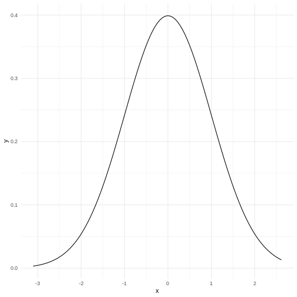 Our histogram does not really look like the theoretical curve. The fact that mean and median are almost identical was not a sufficient criterium for normalcy.
The shape of a histogram is heavily dependent on the bins we choose. Density plots are often a better way of visualizing the distribution:
R
normal_test_data %>%
ggplot(aes(x=bill_depth_mm)) +
geom_density()
We can think of this as a histogram with infinitely small bins.
This does look more normal - but it would be nice to be able to quantize the degree of normalcy.
Percentiels and QQ-plots as a test
We know a lot about the properties of the normal distribution.
- 50% of the observations in the data are smaller than the mean
- conversely 50% are larger.
- We also know that 50% of the observations should be in the interquartile range.
- 2.5% of the observations (the 2.5 percentile) are smaller than the mean minus 1.96 times the standard deviation.
And for each of the observations we actually have, we can calculate which quantile, or percentile it is in. And we can calculate what percentile it should be in.
Comparing those gives us an indication of how well the data conforms to a normal distribution.
Rather than doing that by hand, we can get R to do it for us in a nice graphical way:
R
normal_test_data %>%
ggplot(aes(sample = bill_depth_mm)) +
geom_qq() +
geom_qq_line()
The geom_qq function calculate and plots which
percentile an observation is in.
Rather than being given percentiles, we are given the value that the percentile corresponds to if we calculate it as number of standard deviations from the mean.
This results in plots that are more comparable.
geom_qq_line plots the line corresponding til the values
the percentiles should have, if the data was normally distributed.
A common theme is that the midle of the data falls relatively close to the line, and that there are deviations from the line at both ends. In this case the deviations are largish, indicating that the data is not normally distributed.
We have two tails in the qq-plot, a left and a right. And they can be either above or below the qq-line.
That results in four different cases, that informs us about what is wrong with the data - in regards to how it deviates from normalcy.
| Left tail | Right tail | Name | What |
|---|---|---|---|
| Above | Below | Leptokurtic | Heavier tails - ie. more extreme values. Higher kurtosis |
| Below | Above | Platykurtic | Lighter tails - ie. fewer extreme values. Lower kurtosis |
| Above | Above | Right skewed | A tail that stretches to the higher values - the extreme values are larger. |
| Below | Below | Left skewed | A tail that stretches to the lower values - the extreme values are smaller. |
Numerical measures rather than graphical
With experience the qq-plots can be used to determine if the data is normally distributed - the points are exactly on the line. But only rarely will the points match exactly - even if the data is normally distributed enough. And how much can the tails deviate from the line before the data is not normally distributed enough?
The deviations can be described numerically using two parameters:
Kurtosis and skewness.
Base-R do not have functions for this, but the package
e1071 does:
R
library(e1071)
Skewness
R
skewness(normal_test_data$bill_depth_mm, na.rm = TRUE)
OUTPUT
[1] 0.006578141As a rule of thumb, skewness should be within +/-0.5 if the data is normally distributed. Values between +/-0.5 and +/- 1 indicates a moderate skewness, where data can still be approximately normally distributed. Values larger that +/-1 indicates a significant skewness, and the data is probably not normally distributed.
Kurtosis
R
kurtosis(normal_test_data$bill_depth_mm, na.rm = TRUE)
OUTPUT
[1] -0.960087Evaluating the kurtosis is a bit more complicated as the kurtosis for a normal distribution is 3. We therefore look at excess kurtosis, where we subtract 3 from the calculated kurtosis. * An value of +/-1 excess kurtosis indicates that the data has a ‘tailedness’ close to the normal distribution. * Values between +/-1 and +/-2 indicates a moderate deviation from the normal distribution, but the data can still be approximately normally distributed. * Values larger than +/-2 is in general taken as an indication that the data is not normally distributed.
More direct tests
The question of whether or not data is normally distributed is important in many contexts, and it should come as no surprise that a multitude of tests has been devised for testing exactly that.
Shapiro-Wilk
The Shapiro-Wilk test is especially suited for small sample sizes (<50, some claim it works well up to <2000).
It is a measure of the linear correlation between data and the normally distributed quantiles, what we see in the qqplot.
The null-hypothesis is that data is normally distributed, and the Shapiro-Wilk test returns a p-value reporting the risk of being wrong if we reject the null-hypothesis.
R
shapiro.test(normal_test_data$bill_depth_mm)
OUTPUT
Shapiro-Wilk normality test
data: normal_test_data$bill_depth_mm
W = 0.97274, p-value = 0.1418The p-value in this case is 0.1418 - and we do not have enough evidense to reject the null-hypothesis. The data is probably normally distributed.
Kolmogorov-Smirnov
The KS-test allows us to test if the data is distributed as a lot of different distributions, not only the normal distribution. Because of this, we need to specify the specific distribution we are testing for, in this case a normal distribution with specific values for mean and standard deviation.
Therefore we need to calculate those:
R
mean <- mean(normal_test_data$bill_depth_mm, na.rm = TRUE)
sd <- sd(normal_test_data$bill_depth_mm, na.rm = TRUE)
ks.test(normal_test_data$bill_depth_mm, "pnorm", mean = mean, sd = sd)
WARNING
Warning in ks.test.default(normal_test_data$bill_depth_mm, "pnorm", mean =
mean, : ties should not be present for the one-sample Kolmogorov-Smirnov testOUTPUT
Asymptotic one-sample Kolmogorov-Smirnov test
data: normal_test_data$bill_depth_mm
D = 0.073463, p-value = 0.8565
alternative hypothesis: two-sidedIn this test the null-hypothesis is also that data is normally distributed. The p-values is very high, and therefore we cannot reject the null-hypothesis. Again, this is not the same as the data actually being normally distributed.
This test assumes that there are no repeated values in the data, as that can affect the precision of the test. The p-value is still very high, and we will conclude that we cannot rule out that the data is not normally distributed.
Note that the KS-test assumes that we actually know the true mean and standard deviation. Here we calculate those values based on the sample, which is problematic.
Liliefors test
This is a variation on the KS-test, that is designed specifically for testing for normality. It does not require us to know the true mean and standard deviation for the population.
This test is also not available in base-R, but can be found in the
nortest package:
R
library(nortest)
lillie.test(normal_test_data$bill_depth_mm)
OUTPUT
Lilliefors (Kolmogorov-Smirnov) normality test
data: normal_test_data$bill_depth_mm
D = 0.073463, p-value = 0.483Again the p-value is so high, that we cannot reject the null-hypothesis.
Anderson-Darling test
This test is more sensitive for deviations in the tails.
It is not available in base-R, but can be found in the
nortest package.
R
ad.test(normal_test_data$bill_depth_mm)
OUTPUT
Anderson-Darling normality test
data: normal_test_data$bill_depth_mm
A = 0.44788, p-value = 0.2714In this case the null-hypothesis is also that data is normally distributed, and the p-value indicates that we cannot reject the null-hypothesis.
And is it actually normally distributed?
Probably not. Except for the excess kurtosis, all the tests we have done indicate that the depth of the beaks of chinstrap penguins can be normally distributed. Or rather, that we cannot reject the null-hypothesis that they are normally distributed.
But the fact that we cannot reject this hypothesis is not the same as concluding that the data actually is normally distributed.
Based on the excess kurtosis and the qq-plot, it would be reasonable to conclude that it is not.
Key Points
- Begin by a visual inspection to assess if data is normally distributed
- Use a statistical test to support your conclusion
- Do not fret too much about non-normality. It is quite normal.
Content from How is the data distributed?
Last updated on 2025-06-10 | Edit this page
Overview
Questions
- If my data is not normally distributed - which distribution does it actually follow?
Objectives
- Show how to identify possible distributions describing the data
Introduction
Your data was not normally distributed. Now what?
The process generating your data is probably following some distribution. The size distribution of cities appears to follow a Pareto distibution, as is wealth. The number of mutations in a string of DNA appears to follow a poisson distribution. And the distribution of wind speeds as well as times to failure for technical components both follow the Weibull distribution.
If you have a theoretical foundation for which distribution you data generating function follows, that is nice.
If you do not - we will be interested in figuring out which distribution your data actually follow.
How?
We fit our data to a distribution. Or rather - we fit the data to several different distributions and then choose the best.
Let us look at some data. The faithful data set contains
272 observations of the Old Faithful geyser in Yellowstone National Park
in USA. We only look at eruptions that lasts longer than 3 minutes:
R
library(tidyverse)
eruption_example <- faithful %>%
filter(eruptions > 3) %>%
dplyr::select(eruptions)
Rather than testing a lot of different distributions, we can use the
gamlss package, and two add-ons to that.
R
library(gamlss)
library(gamlss.dist)
library(gamlss.add)
gamlss has the advantage of implementing a lot
of different statistical distributions.
The function fitDist() from gamlss will fit
the data to a selection of different statistical distributions,
calculate a measure of the goodness of fit, and return the best fit (and
information on all the others). Rather than testing against all 97
different distributions supported by gamlss, we can specify
only a selection, in this case realplus, that only includes
the 23 distributions that are defined for positive, real numbers:
R
fit <- fitDist(eruptions, type = "realplus", data = eruption_example)
OUTPUT
| | | 0% | |=== | 4% | |====== | 9% | |========= | 13% | |============ | 17%OUTPUT
| |=============== | 22% | |================== | 26% | |===================== | 30% | |======================== | 35% | |=========================== | 39% | |============================== | 43%OUTPUT
| |================================= | 48% | |===================================== | 52%OUTPUT
| |======================================== | 57% | |=========================================== | 61% | |============================================== | 65%OUTPUT
| |================================================= | 70% | |==================================================== | 74%OUTPUT
| |======================================================= | 78% | |========================================================== | 83%Error in solve.default(oout$hessian) :
Lapack routine dgesv: system is exactly singular: U[4,4] = 0
| |============================================================= | 87%Error in solve.default(oout$hessian) :
Lapack routine dgesv: system is exactly singular: U[4,4] = 0
| |================================================================ | 91% | |=================================================================== | 96% | |======================================================================| 100%If you do this yourself, you will notice a lot of error-messages. It is not possible to fit this particular data to all the distributions, and the ones where the fit fails (enough), we will get an error message.
The output from fitDist() will return the best fit:
R
fit
OUTPUT
Family: c("WEI2", "Weibull type 2")
Fitting method: "nlminb"
Call: gamlssML(formula = y, family = DIST[i])
Mu Coefficients:
[1] -18.69
Sigma Coefficients:
[1] 2.524
Degrees of Freedom for the fit: 2 Residual Deg. of Freedom 173
Global Deviance: 175.245
AIC: 179.245
SBC: 185.574 We are told that the statistical distribution that best fits the data
is Weibull type 2 and that the AIC-measurement of goodness
of fit is 170.245.
Callout
Is that a good fit? That is a good question. It strongly depends on the values in the dataset. In this dataset, the length of the eruptions are measured in minutes If we choose to measure that length in another unit, eg seconds, the distribution should not change. But the AIC will.
We can use the AIC to decide that one distribution fits the data better than another, but not to conclude that that distribution is the correct one.
The fit object containing the output of the
fitDist() function contains quite a bit more.
If we start by getting the errors out of the way,
fit$failed returns the two distributions that failed enough
to cause errors:
R
fit$failed
OUTPUT
[[1]]
[1] "GIG"
[[2]]
[1] "LNO"As mentioned fitDist() fitted the data to 23 different
distributions. We can inspect the rest, and their associated AIC-values
like this:
R
fit$fits
OUTPUT
WEI2 WEI3 WEI GG BCPEo BCPE BCCGo BCCG
179.2449 179.2449 179.2449 181.1349 181.4953 181.4953 183.1245 183.1245
GB2 BCT BCTo exGAUS GA LOGNO2 LOGNO IG
183.1354 185.1245 185.1245 190.2994 194.4665 198.3047 198.3047 198.3558
IGAMMA EXP GP PARETO2o PARETO2
202.6759 861.8066 863.8067 863.8079 863.8081 Here we get WEI2 first, with an AIC of 179.2449, but we
can see that WEI3 and WEI1 have almost exactly
the same AIC. Not that surprising if we guess that
Weibull type 3 is probably rather similar to
Weibull type 2.
The difference in AIC for the first two distributions tested is very
small. Is it large enough for us to think that WEI2 is
significantly better than WEI3?
No. As a general rule of thumb, the difference between the AIC of two distributions have to be larger than 2 for us to see a significant difference.
We can get more details using the summary()
function:
R
summary(fit)
OUTPUT
*******************************************************************
Family: c("WEI2", "Weibull type 2")
Call: gamlssML(formula = y, family = DIST[i])
Fitting method: "nlminb"
Coefficient(s):
Estimate Std. Error t value Pr(>|t|)
eta.mu -18.6934274 1.1306427 -16.5334 < 2.22e-16 ***
eta.sigma 2.5242093 0.0589965 42.7858 < 2.22e-16 ***
---
Signif. codes: 0 '***' 0.001 '**' 0.01 '*' 0.05 '.' 0.1 ' ' 1
Degrees of Freedom for the fit: 2 Residual Deg. of Freedom 173
Global Deviance: 175.245
AIC: 179.245
SBC: 185.574 And we can get at graphical description as well:
R
plot(fit)
OUTPUT
******************************************************************
Summary of the Quantile Residuals
mean = -0.001205749
variance = 0.9953007
coef. of skewness = 0.09022876
coef. of kurtosis = 2.529951
Filliben correlation coefficient = 0.9976953
******************************************************************What about the other options?
General comments
Above we got the “best” fit. But we also noted that in order for us to conclude that one distribution is a better fit than another, the difference in AIC should be at least 2.
What we are looking for might not actually be the probability distribution that best fits our data. Our data might be noisy or there might me systematic errors. The probability distribution we really want, is the one that best matches the underlying data generating function, the mechanisms in the real world that we are studying, that actually is at the hearth of the data we collect.
We might not be able to find that. But we should consider if some of
the other possibilities provided by fitDist() might
actually be better.
First step is to look at the relevant distributions. In the setup
with gamlss, gamlss.dist and
gamlss.add we can test distributions of different types.
The complete list can be found using the help function for
fitDist(), but falls in the following families:
- realline - continuous distributions for all real values
- realplus - continuous distributions for positive real values
- realAll - all continuous distributions - the combination of realline and realplus
- real0to1 - continuous distributions defined for real values between 0 and 1
- counts - distributions for counts
- binom - binomial distributions
Begin by considering which type whatever your data is describing, best matches.
Actually looking at the fits
For the selection of eruptions that we fitted, we chose the “realplus” selection of distibutions to test. We did that, because the eruption times are all positive, and on the real number line.
Behind the scenes fitDist fits the data to the chosen
selection of distributions, and returns the best.
Looking at the result of the fit we see this:
R
fit
OUTPUT
Family: c("WEI2", "Weibull type 2")
Fitting method: "nlminb"
Call: gamlssML(formula = y, family = DIST[i])
Mu Coefficients:
[1] -18.69
Sigma Coefficients:
[1] 2.524
Degrees of Freedom for the fit: 2 Residual Deg. of Freedom 173
Global Deviance: 175.245
AIC: 179.245
SBC: 185.574 In the Call part of the output, we see this:
Call: gamlssML(formula = y, family = DIST[i])
and from that we can deduces that if we want to fit the data to eg the log-normal distribution (in the documentation we find that the abbreviation for that is “LOGNO”), we can do it like this:
R
log_norm_fit <- gamlss(eruptions ~ 1, family = LOGNO, data = eruption_example)
OUTPUT
GAMLSS-RS iteration 1: Global Deviance = 194.3047
GAMLSS-RS iteration 2: Global Deviance = 194.3047 R
summary(log_norm_fit)
OUTPUT
******************************************************************
Family: c("LOGNO", "Log Normal")
Call:
gamlss(formula = eruptions ~ 1, family = LOGNO, data = eruption_example)
Fitting method: RS()
------------------------------------------------------------------
Mu link function: identity
Mu Coefficients:
Estimate Std. Error t value Pr(>|t|)
(Intercept) 1.451832 0.007461 194.6 <2e-16 ***
---
Signif. codes: 0 '***' 0.001 '**' 0.01 '*' 0.05 '.' 0.1 ' ' 1
------------------------------------------------------------------
Sigma link function: log
Sigma Coefficients:
Estimate Std. Error t value Pr(>|t|)
(Intercept) -2.31561 0.05345 -43.32 <2e-16 ***
---
Signif. codes: 0 '***' 0.001 '**' 0.01 '*' 0.05 '.' 0.1 ' ' 1
------------------------------------------------------------------
No. of observations in the fit: 175
Degrees of Freedom for the fit: 2
Residual Deg. of Freedom: 173
at cycle: 2
Global Deviance: 194.3047
AIC: 198.3047
SBC: 204.6343
******************************************************************Key Points
- The data generating function is not necessarily the same as the distribution that best fit the data
- Chose the distribution that best describes your data - not the one that fits best
Content from Linear regression
Last updated on 2025-06-10 | Edit this page
Overview
Questions
- How do I make a linear regression?
- How do I interpret the results of a linear regression?
Objectives
- Explain how to fit data to a linear equation in one dimension
Introduction
Here is some data, observations of the distance (in ft) it takes to stop a car driving at different speeds (in mph):
R
library(tidyverse)
OUTPUT
── Attaching core tidyverse packages ──────────────────────── tidyverse 2.0.0 ──
✔ dplyr 1.1.4 ✔ readr 2.1.5
✔ forcats 1.0.0 ✔ stringr 1.5.1
✔ ggplot2 3.5.2 ✔ tibble 3.3.0
✔ lubridate 1.9.4 ✔ tidyr 1.3.1
✔ purrr 1.0.4
── Conflicts ────────────────────────────────────────── tidyverse_conflicts() ──
✖ dplyr::filter() masks stats::filter()
✖ dplyr::lag() masks stats::lag()
ℹ Use the conflicted package (<http://conflicted.r-lib.org/>) to force all conflicts to become errorsR
cars %>%
ggplot(aes(speed,dist)) +
geom_point()
Not surprisingly the faster the car travels, the longer distance it takes to stop it.
If we want to predict how long a car traveling at 10 mph takes to stop, we could look at the observations at 10 mph and note that there is some variation. We might take the average of those observations, and use that as an estimate of how many feet it takes to stop a car traveling at 10 mph.
But what if we want to predict how long it takes to stop the car if we are driving it at 12.5 mph instead? That would be nice to know, in order to avoid hitting stuff. There are no observations in the data at 12.5 mph! We could estimate it as the average of the (average) stopping distance at 12 mph and at 13 mph (21.5 and 35 ft respectively) and give an estimate of 28.25 ft.
This is easy - 12.5 is exactly at the middle of the interval of 12 to 13 mph. But what if we want the distance at 12.4 mph?
Instead of fiddling with the numbers manually, we note that it appears to be possible to draw a straight line through the points, describing the connection between the two variables.
Let’s do that:
R
cars %>%
ggplot(aes(speed,dist)) +
geom_point() +
geom_smooth(method = "lm", se = F)
OUTPUT
`geom_smooth()` using formula = 'y ~ x'The points do not fall precisely on the line, but it’s not very bad.
When we want to figure out how long it takes to stop a car driving at 12.5 mph, we can locate 12.5 on the x-axis, move vertically up to the line, and read the corresponding value on the y-axis, about 30 mph.
But we can do better. Such a line can be described mathematically. Straight lines in two dimensions can in general be described using the formula:
\[ y = ax + b \] or, in this specific case:
\[ dist = a*speed + b \]
a and b are the coefficients of this
“model”. a is the slope, or how much the distance changes,
if we change speed by one. b is the intercept, the value
where the line crosses the y-axis. Or the distance it takes to stop a
car, traveling at a speed of 0 miles per hour - a value that does not
necessarily make sense, but is still a part of the model.
If we want to be very strict about it, that = is not
really equal. The expression describes the straight line, but the actual
observations do not actually fall on the line. If, for a given dist and
speed, we want the expression to actually be equal, there is some
variation that we need to include. We do that by adding a
residual:
\[ dist = a*speed + b + \epsilon \]
And, if we want to be very mathematical concise, instead of using
aand b for the coefficients in the expression,
we would instead write it like this:
\[ dist = \beta_0 + \beta_1 speed + \epsilon \]
That is all very nice. But how do we find the actual a
and b (or \(\beta_i\))?
What is the “best” line or model for this?
We do that by fitting a and b to values
that minimizes \(\epsilon\), that is,
we need to find the difference between the actual observed values, and
the prediction from the expression or model. Instead of looking at the
individual differences one by one, we look at the sum of the
differences, and minimizes that. However, the observed values can be
larger than the prediction, or smaller. The differences can therefore be
both negative and positive, and the sum can become zero because the
difference might cancel each other out.
To avoid that problem, we square the differences, and then minimize
the sum of the squares. That is the reason for calling the method for
minimizing \(\epsilon\), and by that
finding the optimal a and b, “least
squares”.
In a simple linear model like this, we can calculate the coefficients directly:
\[\beta_1 = \frac{\sum_{i=1}^{n} (x_i - \overline{x})(y_i - \overline{y})}{\sum_{i=1}^{n} (x_i - \overline{x})^2}\]
\[\beta_0 = \overline{y} - \beta_1\overline{x}\]
We do not want to do that - R can do it for us, with the function
lm()
R
lm(y~x, data = data)
y~x is the “formula notation” in R, and describes that y is a function of x.
Using the example from above:
R
linear_model <- lm(dist~speed, data = cars)
We saved the result of the function in an object, in order to be able to work with it. If we just want the coefficients, we can output the result directly:
R
linear_model
OUTPUT
Call:
lm(formula = dist ~ speed, data = cars)
Coefficients:
(Intercept) speed
-17.579 3.932 This gives us the coefficients of the model. The intercept,
b or \(\beta_0\) is
-17.579. And the slope, a or \(\beta_1\) is 3.932.
Having a negative intercept, or in this case any intercept different from 0 does not make physical sense - a car travelling at 0 miles pr hour should have a stopping distance of 0 ft.
The slope tells us, that if we increase the speed of the car by 1 mph, the stopping distance will increase by 3.932 ft.
Challenge 1: Can you do it?
What stopping distance does the model predict if the speed i 12.5 mph?
3.932*12.5 - 17.579 = 31.571 ft
Challenge 2: Might there be a problem with that prediction?
Yep. We might be able to measure the speed with the implied precision. But the prediction implies a precision on the scale of 1/10000 mm.
We can get more details using the summary()
function:
R
summary(linear_model)
OUTPUT
Call:
lm(formula = dist ~ speed, data = cars)
Residuals:
Min 1Q Median 3Q Max
-29.069 -9.525 -2.272 9.215 43.201
Coefficients:
Estimate Std. Error t value Pr(>|t|)
(Intercept) -17.5791 6.7584 -2.601 0.0123 *
speed 3.9324 0.4155 9.464 1.49e-12 ***
---
Signif. codes: 0 '***' 0.001 '**' 0.01 '*' 0.05 '.' 0.1 ' ' 1
Residual standard error: 15.38 on 48 degrees of freedom
Multiple R-squared: 0.6511, Adjusted R-squared: 0.6438
F-statistic: 89.57 on 1 and 48 DF, p-value: 1.49e-12Let us look at that output in detail.
Call simply repeats the model that we build, just in
case we have forgotten it - but also to have the actual model included
in the output, in order for other functions to access it and use it. We
will get to that.
The residuals are included. It is often important to take a look at those, and we will do that shortly.
Now, the coefficients.
The estimates for intercept and speed, that is the intercept and the slope of the line, are given. Those are the same we saw previously. We also get a standard error. We need that for testing how much trust we have in the result.
We are almost certain that the estimates of the values for intercept and slope are not correct. They are estimates after all and we will never know what the true values are. But we can test if they are zero.
The hypothesis we can test is - is the coefficient for the slope actually zero, even though the estimate we get is 3.9? If it is zero, speed will not have any influence on the stopping distance. So; with what certainty can we rule out that it is in fact zero?
We are testing the hypothesis that we have gotten a value for speed of 3.9 by random chance, but that the true value is zero. If it is zero, the value of 3.9 is 9.5 standard errors away from 0: 3.9324/0.4155 = 9.46426. And, using the t-distribution which describes these sorts of things pretty well, that will happen very rarely. The Pr, or p-value, is 1.49e-12. That is the chance, or probability, that we will get a value for the slope in our model that is 9.464 standard errors away from zero, if the true value of the slope is zero.
In general if the p-value is smaller than 0.05, we reject the hypothesis that the true value of the slope is 0.
Since we can assume that the estimates are normally distributed, we can see that, if the true value of the slope was zero, the value we get here, is 3.9324/0.4155 = 9.46426, standard errors away from zero.
RSE is the squareroot of the sum of the squared residuals, divided by the number of observations, \(n\) minus the number of parameters in the model, in this case 2. It is an estimate of the average difference between the observed values, and the values the model predicts. We want RSE to be as small as possible. What is small? That depends on the size of the values. If we predict values in the range of 0 to 2, an RSE of 15 is very large. If we predict values in the range 0 to 1000, it is small.
Multiple R-squared, is a measure of how much of the variation in
dist that our model explains. In this case the model
explains ~65% of the variation. Not that impressive, but acceptable.
The adjusted R-squared adjusts the multiple R-square by the number of independent variables in the model. It becomes an important measure of how good the model is, when we get to multiple linear regression, because we will get a better R-squared by adding independent variables, even if these variables do not actually have any connection to the dependent variables.
The F-statistic is 89.57 and has a p-value of 1.49e-12.
This tests our model against a model where all the slopes (we only have one in this case) are 0; that is, is the overall model significant. In this case it is, and there is overall strong evidence for the claim that the speed of the car influences the stopping distance.
Challenge
Make a model, where you describe the length of the flipper of a
penguin, as a function of its weigth. You find data on penguins in the
library palmerpenguins.
R
library(palmerpenguins)
OUTPUT
Attaching package: 'palmerpenguins'OUTPUT
The following objects are masked from 'package:datasets':
penguins, penguins_rawR
penguin_model <- lm(flipper_length_mm~body_mass_g, data = penguins)
summary(penguin_model)
OUTPUT
Call:
lm(formula = flipper_length_mm ~ body_mass_g, data = penguins)
Residuals:
Min 1Q Median 3Q Max
-23.7626 -4.9138 0.9891 5.1166 16.6392
Coefficients:
Estimate Std. Error t value Pr(>|t|)
(Intercept) 1.367e+02 1.997e+00 68.47 <2e-16 ***
body_mass_g 1.528e-02 4.668e-04 32.72 <2e-16 ***
---
Signif. codes: 0 '***' 0.001 '**' 0.01 '*' 0.05 '.' 0.1 ' ' 1
Residual standard error: 6.913 on 340 degrees of freedom
(2 observations deleted due to missingness)
Multiple R-squared: 0.759, Adjusted R-squared: 0.7583
F-statistic: 1071 on 1 and 340 DF, p-value: < 2.2e-16Testing the assumptions
We can always make a linear model. The questions is: should we?
There are certain assumptions that needs to be met in order to trust a linear model.
There should be a linear connection between the dependent and independent variable. We test that by comparing the observed values with the predicted values (the straight line).
Independence. The observations needs to be independent. If one measurement influences another measurement, we are not allowed to use a linear model.
Normality of residuals. The residuals must be normally distributed.
The three assumptions can be formulated in different ways, and it can be useful to read more than one in order to understand them. This is a different way:
- For any given value of x, the corresponding value of y has an average value of \(\alpha + \beta x\)
- For any two data points, the error terms are independent of each other.
- For any given value of x, the corresponding value of y is normally distributed about \(\alpha + \beta x\) with the same variance \(\sigma^2\) for any x
In general we know our data well enough to determine if the first two
are fulfilled. The third assumptions can be tested using a
qqplot. We begin by extracting the residuals from our
model:
R
residuals <- residuals(linear_model)
And then plotting them:
R
qqnorm(residuals)
qqline(residuals)
The points should be (close to be) on the straight line in the plot. In this case they are close enough.
This is also a handy way to test if our data is normally distributed.
Challenge
Test if the residuals in our penguin model from before, are normally distributed.
R
penguin_residuals <- residuals(penguin_model)
qqnorm(penguin_residuals)
qqline(penguin_residuals)
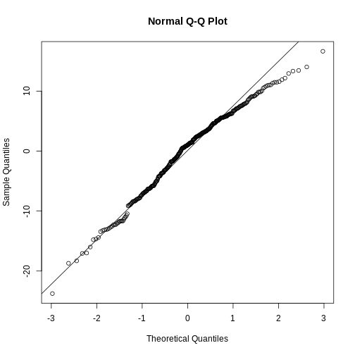 They are relatively close to normal.
Key Points
- Linear regression show the (linear) relationship between variables.
- The assumption of normalcy is on the residuals, not the data!
Content from Multiple Linear Regression
Last updated on 2025-06-10 | Edit this page
Overview
Questions
- How do you run a multiple linear regression?
- What about conditional effects?
Objectives
- Learn how to build and trim a model with multiple independent variabels
- Learn how to build a model with interaction terms
Introduction
A linear regression is relatively simple to understand and visualise. We have a dependent variable that we try to predict - model - using an independent variable. In principle we can change the independent variable, and the model will predict the change in the dependent variable. We can visualise this using a relatively simple graph, plotting the two variables against each other, and adding the line representing the model.
But what if we have reason to believe that the dependent variable depends on more than one independent variable?
Let us find some data for illustrating this.
Before anything else, we load the tidyverse package,
download the data, and read it using read_csv():
R
library(tidyverse)
download.file("https://raw.githubusercontent.com/KUBDatalab/R-toolbox/main/episodes/data/BONEDEN.csv",
destfile = "data/BONEDEN.csv", mode = "wb")
boneden <- read_csv("data/BONEDEN.csv")
The data records the bonedensity in different parts of the skeleton of female monozygotic twins, as well as height, age, weight, smoking, alcohol, tea and coffee-habits. We are going to study the second twins, where all variables are suffixed with the digit “2”:
R
density <- boneden %>% select(age, contains("2"))
head(density)
OUTPUT
# A tibble: 6 × 12
age ht2 wt2 tea2 cof2 alc2 cur2 men2 pyr2 ls2 fn2 fs2
<dbl> <dbl> <dbl> <dbl> <dbl> <dbl> <dbl> <dbl> <dbl> <dbl> <dbl> <dbl>
1 27 160 56 42 21 0 0 0 13.8 0.76 0.68 1.04
2 42 159 72 20 21 1 1 0 48 0.89 0.64 1.11
3 59 156 54 7 28 0 0 1 20.5 0.51 0.64 0.86
4 61 162 58 21 35 0 0 1 29.8 0.85 0.69 1.03
5 47 150 58 91 0 0 1 1 25 0.59 0.54 0.96
6 33 158 54 14 14 0 0 0 5 0.83 0.5 1.06Callout
The package tidyselect is a part of the
tidyverse. It contains functions that allow us to choose
variables/columns based on patterns in their names rather than
specifying the names directly. contains("2") here return
all columns with a name containing the string “2”.
More specically we are trying to model the bone density in the
femoral shaft (lårbensskaft). As an intial hypothesis, we are going to
assume that the density depends on height (ht2), age
(age), weight (wt2), tea (tea2)
and coffee consumption (cof2).
That is, we assume that there is a linear correlation between the bone density and each of the independent variables.
The simple linear regresion between just the bone density and the height, can be done with:
R
lm(fs2 ~ ht2, data = density) %>%
summary()
OUTPUT
Call:
lm(formula = fs2 ~ ht2, data = density)
Residuals:
Min 1Q Median 3Q Max
-0.41406 -0.02810 0.00190 0.07658 0.30722
Coefficients:
Estimate Std. Error t value Pr(>|t|)
(Intercept) -1.78744 0.71928 -2.485 0.017351 *
ht2 0.01766 0.00445 3.969 0.000301 ***
---
Signif. codes: 0 '***' 0.001 '**' 0.01 '*' 0.05 '.' 0.1 ' ' 1
Residual standard error: 0.1315 on 39 degrees of freedom
Multiple R-squared: 0.2877, Adjusted R-squared: 0.2694
F-statistic: 15.75 on 1 and 39 DF, p-value: 0.0003006Where we pipe the output of the regression to the summary function to take a closer look. There is a significant correlation between bone density and height. If we increase the height of a woman by one centimeter, the density of her femoral shaft is expected to increase by 0.0177 \(g/cm^3\). The correlation is significant, that is, we are rather sure that the estimate of this coefficient is different from 0.
Now we would like to add the other independent variables to the model.
The model we are building can be described using math as:
\[ \text{fs2} = w_0 + w_1\text{ht2} + w_2\text{wt2} + w_3\text{tea2} + w_4\text{cof2} + \epsilon \] That is - we would like to figure out which coefficients \(w_1\) to \(w_4\), and which intercept \(w_0\) will give us estimates of fs2, that minimizes the error \(\epsilon\)
This is pretty straight forward. Instead of running
lm(fs2~ht2, data = density, we add the additional
independent variables using the + sign. And again we pipe
the result to the summary function to take a closer look:
R
lm(fs2 ~ ht2 + age + wt2 + tea2 + cof2, data = density) %>%
summary()
OUTPUT
Call:
lm(formula = fs2 ~ ht2 + age + wt2 + tea2 + cof2, data = density)
Residuals:
Min 1Q Median 3Q Max
-0.247601 -0.061517 0.005634 0.067826 0.166474
Coefficients:
Estimate Std. Error t value Pr(>|t|)
(Intercept) -0.2800114 0.7774507 -0.360 0.720887
ht2 0.0090956 0.0046455 1.958 0.058246 .
age -0.0068373 0.0015669 -4.364 0.000108 ***
wt2 0.0038274 0.0014934 2.563 0.014836 *
tea2 -0.0009246 0.0009837 -0.940 0.353677
cof2 -0.0005310 0.0009328 -0.569 0.572778
---
Signif. codes: 0 '***' 0.001 '**' 0.01 '*' 0.05 '.' 0.1 ' ' 1
Residual standard error: 0.1043 on 35 degrees of freedom
Multiple R-squared: 0.5978, Adjusted R-squared: 0.5403
F-statistic: 10.4 on 5 and 35 DF, p-value: 3.566e-06It is that simple. Interpreting the results on the other hand is a bit more complicated.
The bone density, for a newborn woman (0 years old), that is 0 centimeters high, weighing 0 kilogram, who does not drink either tea or coffee, is -0.28 \(g/cm^3\) - which is obviously either impossible, or a discovery that would get you an invitation to Stockholm.
For each centimeter the woman grows, if all other variables are held constant! the bone density is expected to increase by 0.0091 \(g/cm^3\).
For each year the woman grows older, if all other variables are held constant! the bone density is expected to decrease by 0.0068 \(g/cm^3\).
For each kilogram the woman puts on weight, if all other variables are held constant! the bone density is expected to increase by 0.0038 \(g/cm^3\).
The coefficient for the height variable is not significant (if we have decided on a 5% significanse level), and neither consumption of teo nor coffee has a significant influence on bone density. According to this model.
Is this a good model? No. The coefficients for Tea and coffee consumption are not significant, and should not be in the model. Let us remove them.
But let us remove them one by one. First coffee that has the worst p-value:
R
lm(fs2 ~ ht2 + age + wt2 + tea2, data = density) %>% summary()
OUTPUT
Call:
lm(formula = fs2 ~ ht2 + age + wt2 + tea2, data = density)
Residuals:
Min 1Q Median 3Q Max
-0.26036 -0.06261 0.01682 0.06366 0.17393
Coefficients:
Estimate Std. Error t value Pr(>|t|)
(Intercept) -0.2209640 0.7632342 -0.290 0.7739
ht2 0.0085364 0.0044976 1.898 0.0657 .
age -0.0068645 0.0015514 -4.425 8.58e-05 ***
wt2 0.0041140 0.0013927 2.954 0.0055 **
tea2 -0.0007497 0.0009257 -0.810 0.4233
---
Signif. codes: 0 '***' 0.001 '**' 0.01 '*' 0.05 '.' 0.1 ' ' 1
Residual standard error: 0.1034 on 36 degrees of freedom
Multiple R-squared: 0.5941, Adjusted R-squared: 0.5489
F-statistic: 13.17 on 4 and 36 DF, p-value: 1.048e-06Note that not only is the coefficient for tea still not significant, it actually gets “worse”. On the other hand, the coefficient for weight now is larger, ie explains more of the variation.
Callout
Why does this happen?
What the model does is “trying” to explain the variation in
fs2, using the independent variables. We have an underlying
assumption that we can change those variables independently. However,
they are often correlated. In this case there is a relatively large
correlation between cof2 and wt2. When we
remove cof2 from the model, some of the variation explained
by cof2 can now be captured by wt2.
We do not actually explain that much of the variation in
fs2. The R2 value tells us how much of the
variation is explained by the model, and 0.5941 is not that
impressive. We will be able to explain everything, including random
noise in the data. We just need to add enough independent variables to
our model. Some of the random noise will be explained by even a random
varible.
This is called overfitting, and one of ways we try to
identify that, is by looking at the Adjusted R-squared
instead. This adjusts the R2 for the number of variables we
have in the model. This is the measure of how good the model is, that we
prefer.
We continue our “leave-one-out” approach. tea2 is the
“worst” performing variable measured by the p-value, and that is the
next one we will remove:
R
lm(fs2 ~ ht2 + age + wt2 , data = density) %>% summary()
OUTPUT
Call:
lm(formula = fs2 ~ ht2 + age + wt2, data = density)
Residuals:
Min 1Q Median 3Q Max
-0.273490 -0.058038 0.005241 0.067527 0.169512
Coefficients:
Estimate Std. Error t value Pr(>|t|)
(Intercept) -0.569569 0.627355 -0.908 0.36981
ht2 0.010524 0.003751 2.806 0.00796 **
age -0.006489 0.001474 -4.404 8.74e-05 ***
wt2 0.004077 0.001385 2.943 0.00559 **
---
Signif. codes: 0 '***' 0.001 '**' 0.01 '*' 0.05 '.' 0.1 ' ' 1
Residual standard error: 0.1029 on 37 degrees of freedom
Multiple R-squared: 0.5867, Adjusted R-squared: 0.5531
F-statistic: 17.5 on 3 and 37 DF, p-value: 3.078e-07Now we have a model where all coefficients are significant.
Callout
What about the intercept?
The estimate of the intercept is not significant. Is that a problem?
No, not in this case. The intercept is the estimate of what
fs2 would be if all the independent variables are 0. That
might be meaningful for age, but definitely not for height or
weight.
Also the thing we are interested in is not actually making predictions, in that case we would like a better estimate of the intercept, but in studying the effect of height, age and weight on bonedensity.
Challenge
The dataset contains more variables than we have examined here.
Alcohol consumption alc, and how many years the individual
women have been smoking pyr.
We also only studied half of the dataset, the variables ending in “2”. Data on the other twins have variables ending in “1”.
Build a model predicting the bonedensity of the femoral shaft
fs1 using a selection of the variables age,
ht1,wt1,tea1,cof1,alc1andpyr1`.
Make sure that only significant (p<0.05) variables are included.
What is the adjusted R squared value?
R
dens_exercise <- boneden %>%
select(age, contains("1"), -c(cur1, ls1, fn1, men1 ))
model_1 <- lm(fs1~., data = dens_exercise)
model_2 <- lm(fs1 ~ age + ht1 + wt1+ cof1 + alc1 +pyr1, data = dens_exercise)
model_3 <- lm(fs1 ~ age + ht1 + wt1 + alc1 +pyr1, data = dens_exercise)
model_4 <- lm(fs1 ~ age + ht1 + wt1 + pyr1, data = dens_exercise)
model_5 <- lm(fs1 ~ age + ht1 + pyr1, data = dens_exercise)
model_6 <- lm(fs1 ~ age + ht1, data = dens_exercise)
summary(model_6)$adj.r.squared
OUTPUT
[1] 0.2555525Categorical data
We also have categorical variables in the data. Can we use them?
Yes!
First way - categorical values as independent variables
Let us add information about menopausal status,
men2:
R
density <- density %>%
mutate(men2 = factor(men2))
cat_model <- lm(fs2 ~ ht2 + age + wt2 + men2, data = density)
summary(cat_model)
OUTPUT
Call:
lm(formula = fs2 ~ ht2 + age + wt2 + men2, data = density)
Residuals:
Min 1Q Median 3Q Max
-0.282979 -0.049356 -0.006728 0.066710 0.171457
Coefficients:
Estimate Std. Error t value Pr(>|t|)
(Intercept) -0.532553 0.643852 -0.827 0.413764
ht2 0.010650 0.003898 2.732 0.009799 **
age -0.008232 0.002098 -3.924 0.000389 ***
wt2 0.004191 0.001414 2.963 0.005450 **
men21 0.053401 0.051460 1.038 0.306514
men22 -0.026286 0.059796 -0.440 0.662939
---
Signif. codes: 0 '***' 0.001 '**' 0.01 '*' 0.05 '.' 0.1 ' ' 1
Residual standard error: 0.1032 on 35 degrees of freedom
Multiple R-squared: 0.6067, Adjusted R-squared: 0.5505
F-statistic: 10.8 on 5 and 35 DF, p-value: 2.462e-06There are three different categorical values in men2. 0:
premenopausal, 1: Postmenopausal and 2: Unknown or hysterectomy.
If we want to add categorical data to the model, we need to make sure
they are encoded as categorical, otherwise the model will treat them as
continous values. We do that by running factor() on the
relevant variable.
Again this is relatively simple, the interpretation on the other hand
is a bit more complex. The coefficients for ht2,
age and wt2 now tells us how the value of
fs2 changes for the base case 0, premenopausal. The
coefficient of factor(men2)1 tells us that there is an
added “bonus” to the bonedensity to become postmenopausal. And
factor(men2)2 that there is a “penalty” of -0.026286 to
have the “unknown” status. The coefficients are not significant, so this
might be a bad example.
The second way - interaction
Maybe the influence of menopause status is not direct, but rather in
the form that the coefficient for wt2 depends on menopausal
status. Ie increasing weight might lead to increasing bonedensity. But
to different degrees depending on menopausal status.
We can add this interaction term to the model by multiplying the categorical variable to the variabel where we suspect that there might be an interaction:
R
interact_model <- lm(fs2 ~ ht2 + age + wt2*men2, data = density)
summary(interact_model)
OUTPUT
Call:
lm(formula = fs2 ~ ht2 + age + wt2 * men2, data = density)
Residuals:
Min 1Q Median 3Q Max
-0.264590 -0.053534 -0.000568 0.057129 0.168441
Coefficients:
Estimate Std. Error t value Pr(>|t|)
(Intercept) -0.355334 0.648878 -0.548 0.587642
ht2 0.009842 0.004014 2.452 0.019661 *
age -0.007966 0.002084 -3.823 0.000555 ***
wt2 0.003272 0.002281 1.434 0.160913
men21 -0.166698 0.196497 -0.848 0.402355
men22 0.149021 0.264316 0.564 0.576703
wt2:men21 0.003455 0.003070 1.126 0.268439
wt2:men22 -0.002592 0.004025 -0.644 0.524081
---
Signif. codes: 0 '***' 0.001 '**' 0.01 '*' 0.05 '.' 0.1 ' ' 1
Residual standard error: 0.1021 on 33 degrees of freedom
Multiple R-squared: 0.637, Adjusted R-squared: 0.5601
F-statistic: 8.274 on 7 and 33 DF, p-value: 8.211e-06Once again it is “simple” to do, more complicated to interpret.
The (estimated) coefficients for ht2and age
should be understood as before.
But now we have a good deal more coefficients.
factor(men2)1 and factor(men2)2 should also be
understood as before.
wt2 is also still the same as before. But we have two
new. If the specific woman is postmenopausal, there is an additional
term, wt2:men21 that needs to be added to the prediction.
Challenge
What is the prediction for fs2 for a 52 year old, 164
centimeter high, postmenopausal woman weighing 62 kg?
We find it by adding all the terms:
- intercept: -0.355334
- 52 × age: 52 × -0.007966 = -0.414232
- 164 × ht2: 164 × 0.009842 = 1.613488
- 62 × wt2: 62 × 0.003272 = 0.202864
- factor(men2)1 = -0.166698 (because men2 is = 1)
- 65 × wt2:men21 = 62 × 0.003455 = 0.21421
The result is: 1.094298
An alternative way would be to construct a dataframe containing the
values for which we want to make the prediction, and use the
predict function:
R
new_data <- data.frame(
ht2 = 164,
age = 52,
wt2 = 62,
men2 = factor(1, levels = levels(density$men2))
)
predict(interact_model, newdata = new_data)
OUTPUT
1
1.094928 Key Points
- We can do linear regression on multiple independent variables
- Be careful not to overfit - only retain variables that are significant (and sensible)
- We can fit just as well on categorical variables - but make sure they are categorical
- Interpreting linear models with multiple variables are not trivial _ Interpreting linear models with interaction terms are even less trivial
Content from Logistic regression
Last updated on 2025-06-10 | Edit this page
Overview
Questions
- How do you run a logistic regression?
- What is the connection between odds and probabilities?
Objectives
- Learn how to run a logistic regression
OUTPUT
── Attaching core tidyverse packages ──────────────────────── tidyverse 2.0.0 ──
✔ dplyr 1.1.4 ✔ readr 2.1.5
✔ forcats 1.0.0 ✔ stringr 1.5.1
✔ ggplot2 3.5.2 ✔ tibble 3.3.0
✔ lubridate 1.9.4 ✔ tidyr 1.3.1
✔ purrr 1.0.4
── Conflicts ────────────────────────────────────────── tidyverse_conflicts() ──
✖ dplyr::filter() masks stats::filter()
✖ dplyr::lag() masks stats::lag()
ℹ Use the conflicted package (<http://conflicted.r-lib.org/>) to force all conflicts to become errorsLogistic Regression
Using linear regression, or even non-linear multiple regression techniques, we can predict the expected value of a dependent continuous variable given values of one or more independent variables.
But what if the dependent variable we want to predict is not continous, but categorical?
Eg, if we try to predict an outcome like “Healthy/Sick” based on a number of independent variables?
We do that using the logistic regression. Strictly speaking the logistic model does not predict a yes/no answer, but rather the probability that the answer is yes (and conversely that it is no). Rather than the continous outcome the linear methods model for the dependent variable, the logistic regression returns a probability. By definition that lies somewhere between 0 and 1 (or 0% and 100%).
And since the linear methods we would like to use for doing the actual logistic regression does not play nice with those bounds, we need to think about probabilities in a different way.
A new way of thinking about probability.
We often talk about there being a “67%” probability or chance of something. Reading p-values, we do that all the time. A p-value of 0.05, equivalent to 5%, tells us that if we run the test often enough, there is a 5% chance of seeing a result as extreme as the test value purely by chance, if the null-hypothesis is true.
5% is equivalent to 5 instances out of 100 possibilities. As indicated above, we want to convert those 5% to something that does not have a range between 0 and 1.
Therefore, we convert probabilities to odds.
Odds are a different way of representing probabilities. A lot of statistics and probability theory have their roots in gaming and betting, so let us use that as an example.
If two soccer-teams play, and we want to bet on the outcome, the betting company we place our bet at, will give us odds. 1:9 indicates that if the two teams play 10 times, one team will win 1 game, and the other will win 9 times (assuming that a tie is not possible, and glossing over a lot of other details that relates more to the companys profits). That is equivalent to one team having a 10% chance of winning, and the other having a 90% chance of winning.
The connection between the two numbers is found by:
\[odds = \frac{p}{1-p}\]
We have now transformed a probability going between 0 and 1, to odds, that can go between 0 and positive infinity.
Going a step further
Modelling probabilities is difficult, because they can only have values between 0 and 1. Converting them to odds, give us something that can have values between 0 and infinity (positive). If we take one extra step, we can convert those odds to something that is continuous and, can have any value.
We do that by taking the (natural) logarithm of the odds, and the entire conversion from probability to log-odds, is called the logit-function:
\[logit(p) = \log(\frac{p}{1-p})\]
Challenge
Remember the probabilities of the soccer-match? One team had a 10% probability of winning, corresponding to odds 1:9. That means that the other team have a 90% probability of winning, or odds 9:1. Try to run the logit function on both of those probabilities. Do you notice a nice relation between them?
R
log(0.1/(1-0.1))
OUTPUT
[1] -2.197225R
log(0.9/(1-0.9))
OUTPUT
[1] 2.197225The two log-odds values have different signs, but are otherwise identical. This is nice and symmetrical.
So - what are we modelling?
This:
\[\text{logit}(p) = \beta_0 + \beta_1 X_1 + \beta_2 X_2 + \dots + \beta_k X_k\]
And that looks familiar, and the net result of all the stuff about odds, logit-functions etc. have exactly that as their goal; we can now use all the nice techniques from the linear regressions to model categorical values.
It’s not exactly that simple. In the linear regression we fit the data to a line, where we in the logistic regression fits the data to a sigmoid curve:
OK, lets make a fit already!
We start be getting some data. Download the FEV dataset, but start by creating a folder called “data”:
R
download.file("https://raw.githubusercontent.com/KUBDatalab/R-toolbox/main/episodes/data/FEV.csv", "data/FEV.csv", mode = "wb")
OUTPUT
Rows: 654 Columns: 6
── Column specification ────────────────────────────────────────────────────────
Delimiter: ","
dbl (6): Id, Age, FEV, Hgt, Sex, Smoke
ℹ Use `spec()` to retrieve the full column specification for this data.
ℹ Specify the column types or set `show_col_types = FALSE` to quiet this message.R
fev <- read_csv("data/FEV.csv")
The data contains measurements of age, height, sex and lung function for 654 children, as well as an indication of wether or not they smoke.
R
fev
OUTPUT
# A tibble: 654 × 6
Id Age FEV Hgt Sex Smoke
<dbl> <dbl> <dbl> <dbl> <dbl> <dbl>
1 301 9 1.71 57 0 0
2 451 8 1.72 67.5 0 0
3 501 7 1.72 54.5 0 0
4 642 9 1.56 53 1 0
5 901 9 1.90 57 1 0
6 1701 8 2.34 61 0 0
7 1752 6 1.92 58 0 0
8 1753 6 1.42 56 0 0
9 1901 8 1.99 58.5 0 0
10 1951 9 1.94 60 0 0
# ℹ 644 more rowsWe will do a logistic regression, to see if we can predict wether or not a child is smoking, based on all the other variables (except the Id value).
As both Sex and Smoke are categorical values, it is important that they are actually coded as categorical values in the data, in order for R to be able to handle them as such:
R
fev <- fev %>%
mutate(Sex = factor(Sex),
Smoke = factor(Smoke))
We can now build a model. It looks almost like the linear model, but
rather than using the lm() function we use the
glm(), or “generalised linear model”, which is able to
handle logistic models. It is general, so we need to specify
that we are running a binomial (ie two possible outcomes) fit. We save
the result to an object, so we can take a closer look:
R
log_model <- glm(Smoke ~ Age + FEV + Hgt + Sex, family = "binomial", data = fev)
The result in itself looks like this:
R
log_model
OUTPUT
Call: glm(formula = Smoke ~ Age + FEV + Hgt + Sex, family = "binomial",
data = fev)
Coefficients:
(Intercept) Age FEV Hgt Sex1
-18.6141 0.4308 -0.5452 0.2122 -1.1652
Degrees of Freedom: 653 Total (i.e. Null); 649 Residual
Null Deviance: 423.4
Residual Deviance: 300 AIC: 310And if we take a closer look:
R
summary(log_model)
OUTPUT
Call:
glm(formula = Smoke ~ Age + FEV + Hgt + Sex, family = "binomial",
data = fev)
Coefficients:
Estimate Std. Error z value Pr(>|z|)
(Intercept) -18.61406 3.51282 -5.299 1.17e-07 ***
Age 0.43075 0.07098 6.069 1.29e-09 ***
FEV -0.54516 0.31662 -1.722 0.085103 .
Hgt 0.21224 0.06371 3.331 0.000865 ***
Sex1 -1.16517 0.38943 -2.992 0.002772 **
---
Signif. codes: 0 '***' 0.001 '**' 0.01 '*' 0.05 '.' 0.1 ' ' 1
(Dispersion parameter for binomial family taken to be 1)
Null deviance: 423.45 on 653 degrees of freedom
Residual deviance: 300.02 on 649 degrees of freedom
AIC: 310.02
Number of Fisher Scoring iterations: 7Interestingly lungfunction does not actually predict smoking status very well.
But what does the coefficients actually mean?
The intercept is not very interesting in itself, and we do not generally interpret directly on it. It represents the log-odds of smoking if all the predictive variables (Age, FEV, Hgt, and Sex) are 0. And the log-odds in that case is not very informative.
We have a positive coefficient for Age. That means, that for each unit increase in age, here 1 year, the log-odds for smoking increase by 0.43075, if all other variables are kept constant. Since we have log-odds, we can find the increase in odds for smoking by taking the exponential of the log-odds:
R
exp(0.43075)
OUTPUT
[1] 1.538411That is - the odds for smoking increase by 53.8% for each year a child get older.
The coefficients for FEV and Hgt are treated similarly. Note that for FEV, the coefficient is negative. That means the log-odds, and therefore odds, for smoking decreases as lungfunction measured by FEV, increases. As always if all other variables are kept constant.
Sex is a bit different. Because Sex is a categorical variable, the coefficient indicates that there is a difference between the two different sexes. And because it is negative, we can calculate that the odds for smoking if the child is female is
R
exp(-1.16517)
OUTPUT
[1] 0.3118696compared with male childre, equivalent to a reduction in odds by about 68.8%
How to get the odds quickly?
We can get the odds in one go, rather than running the exponential function on them one by one:
R
exp(coef(log_model))
OUTPUT
(Intercept) Age FEV Hgt Sex1
8.241685e-09 1.538413e+00 5.797479e-01 1.236439e+00 3.118701e-01 We use the coef() function to extract the coefficients,
and then take the exponential on all of them.
And what about the probabilities?
Sometimes it would be nice to get probabilities instead of odds. We can get those using this expression:
R
1/(1+exp(-coef(log_model)))
OUTPUT
(Intercept) Age FEV Hgt Sex1
8.241685e-09 6.060530e-01 3.669876e-01 5.528606e-01 2.377294e-01 And interpreting the probabilities?
A probability of 0.606 means that for each unit increase in Age, the probabililty of the the outcome “smoking” increases by 60.6%
A probablity of 0.367 means that for each unit increase in FEV, the probability of that outcome decreases by 36.7%
What about the p-values?
p-values in logistic regression models are interpreted in the same way as p-values in other statistical tests:
Given the NULL-hypothesis that the true value for the coefficient for FEV in our model predicting the odds for smoking/non-smoking, is 0.
What is the probability of getting a value for the coefficient that is as extreme as -0.54516?
If we run the experiment, or take the sample, often enough, we will see a coefficient this large, or larger (in absolute values), 8.5% of the times. If we decide that the criterium for significanse is 5%, this coefficient is not significant.
Predictions
We generally experience that students are not really interested in predicting an outcome. However part of the rationale behind building these models is to be able to predict - outcomes.
Given a certain age, height, FEV and sex of a child, what is the log-odds of that child smoking?
The easiest and most general way of predicting outcomes based on a
model, is to use the predict() function in R.
It takes a model, and some new data, and returns a result.
We begin by building a dataframe containing the new data:
R
new_child <- data.frame(Age = 13, Hgt = 55, FEV = 1.8, Sex = factor(1, levels = c(0,1)))
Here we are predicting on a boy (Sex = 1), aged 13, with a lungvolume of 1.8l and a height of 55 inches.
It is important that we use the same units as the model. That is, we need to use inches for the height, liters for the lung volume, and the correct categorical value for Sex.
Now we plug that into the predict function, along with the model:
R
predict(log_model, newdata = new_child)
OUTPUT
1
-3.487813 This will return the predicted log-odds, and we can either calculate the probability from that. Or we can add a parameter to the predict model, to the the probability directly:_
R
predict(log_model, newdata = new_child, type = "response")
OUTPUT
1
0.02966099 Do the conversion yourself
Convert the predicted log-odds to a probability
We run the prediction:
R
predicted_odds <- predict(log_model, newdata = new_child)
And then:
R
1/(1+exp(-predicted_odds))
OUTPUT
1
0.02966099 What about another child?
What is the probability for smoking for a 10 year old 110 cm tall girl, with a lung volume of 1.1 liter?
Begin by making a dataframe describing the girl:
R
new_girl <- data.frame(Age = 10, Hgt = 110/2.54, FEV = 1.1, Sex = factor(0, levels = c(0,1)))
And use predict() with the correct type
argument to get the result directly:
R
predict(log_model, newdata = new_girl, type = "response")
OUTPUT
1
0.003285539 Key Points
- Using the predict-function to predict results is the easier way
Content from Central Limit Theorem
Last updated on 2025-06-10 | Edit this page
Overview
Questions
- How do you write a lesson using R Markdown and sandpaper?
Objectives
- Explain how to use markdown with the new lesson template
Introduction
An important phenomenon working with data is the “Central Limit Theorem”.
It states that, if we take a lot of samples from a distribution, the mean of those samples will approximate the normal distribution, even though the distribution in it self is not normally distributed.
The uniform distribution is not normally distributed. Without any additional arguments, it will produce x random values between 0 and 1, with equal probability for all possible values. Here we get 100 random values, and plot a histogram of them:
R
random_numbers <- runif(100)
hist(random_numbers)
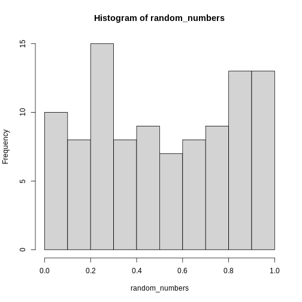 This is definitely not normally distributed.
The mean of these random numbers is:
R
mean(random_numbers)
OUTPUT
[1] 0.4724241The important point of the Central Limit Theorem is, that if we take a large number of random samples, and calculate the mean of each of these samples, the means will be normally distributed.
We could also have found the mean of the 100 random numbers like this:
R
mean(runif(100))
OUTPUT
[1] 0.4911905And we can use the replicate() function to repeat that
calculation several times, in this case 1000 times:
R
repeated_means <- replicate(1000, mean(runif(100)))
When we plot the histogram of these 1000 means of 100 random numbers, we get this result:
R
hist(repeated_means)
The histogram looks quite normally distributed, even though the distribution from which we drew the random samples were not.
This is the essense of the Central Limit Theorem. The distrubution of the means of our samples will approximate the normal distribution, regardless of the underlying distribution.
Because of this, we are able to treat the mean (and a number of other statistical descriptors), as normally distributed - and use the properties we know the normal distribution to have to work with them.
The math required for proving this theorem is relatively complicated, but can be found in the (extra material)[https://kubdatalab.github.io/R-toolbox/CLT-dk.html] on this page. Note that the proof is in Danish, we are working on an english version.
Key Points
- The mean of a sample can be treated as if it is normally distributed
Content from Nicer barcharts
Last updated on 2025-06-10 | Edit this page
Overview
Questions
- How do we style barcharts to look better?
Objectives
- Explain how to use ggplot to make barcharts look better
Introduction
Barcharts are easy to make, but how can we get them to look nicer.
This is a checklist for cleaning up your barchart.
We start by getting some data:
R
library(tidyverse)
OUTPUT
── Attaching core tidyverse packages ──────────────────────── tidyverse 2.0.0 ──
✔ dplyr 1.1.4 ✔ readr 2.1.5
✔ forcats 1.0.0 ✔ stringr 1.5.1
✔ ggplot2 3.5.2 ✔ tibble 3.3.0
✔ lubridate 1.9.4 ✔ tidyr 1.3.1
✔ purrr 1.0.4
── Conflicts ────────────────────────────────────────── tidyverse_conflicts() ──
✖ dplyr::filter() masks stats::filter()
✖ dplyr::lag() masks stats::lag()
ℹ Use the conflicted package (<http://conflicted.r-lib.org/>) to force all conflicts to become errorsR
library(palmerpenguins)
OUTPUT
Attaching package: 'palmerpenguins'
The following objects are masked from 'package:datasets':
penguins, penguins_rawR
penguin_example <- penguins %>%
select(species)
Barcharts and histograms are often confused. Histograms visualizes 1 dimentional data, barcharts 2 dimensional. The easy way to distinguish them is the white space between the columns. Histograms are describing a continious set of data, broken down into bins. Therefore there is no breaks between the columns. Barcharts describes values in discrete categories.
A further distinction in ggplot is between bar charts and column charts.
Bar charts, made with geom_bar() makes the height of the
bar propotional to the number of cases/observations in each group, where
as geom_col makes the heights proportional to a value in
the group - that is just one value pr. group.
Callout
The way this happens is in the inner workings of the ggplot object.
All geoms come with an associated function/argument
stats, that controls the statistical transformation of the
input data. In geom_bar that transformation is
stat_count(), that counts the observations in each group.
In geom_col´ it is ´stat_identity(), which does nothing
with the data.
The us make the first barchart:
R
penguin_example %>%
ggplot(aes(x = species)) +
geom_bar()
This barchart is boring. Grey in grey.
Step 1 - colours and labels
The first step would be to do something about the colours, and add labels and a title to the plot:
R
penguin_example %>%
ggplot(aes(x = species)) +
geom_bar(fill = "darkorchid3") +
labs(
x = element_blank(),
y = "Number of penguins",
title = "Number of penguins at Palmer Station, Antarctica")
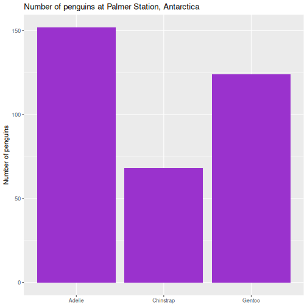 It is not strictly necessary to remove the label of the x-axis, but it is superfluous in this case.
Second step - the order of the bars
Note that the plot orders the species of penguins in alphabetical order. For some purposes this is perfectly fine. But in general we prefer to have the categories ordered by size, that is the number of observations.
The order of categories can be controlled by converting the
observations to a categorical value, and ordering the levels in that
factor by frequency.
The forcats library makes that relatively easy, using
the function fct_infreq(), which converts the character
vector that is species to a factor with levels ordered by
frequency:
R
penguin_example %>%
mutate(species = fct_infreq(species)) %>%
ggplot(aes(x = species)) +
geom_bar(fill = "darkorchid3") +
labs(
x = element_blank(),
y = "Number of penguins",
title = "Number of penguins at Palmer Station, Antarctica")
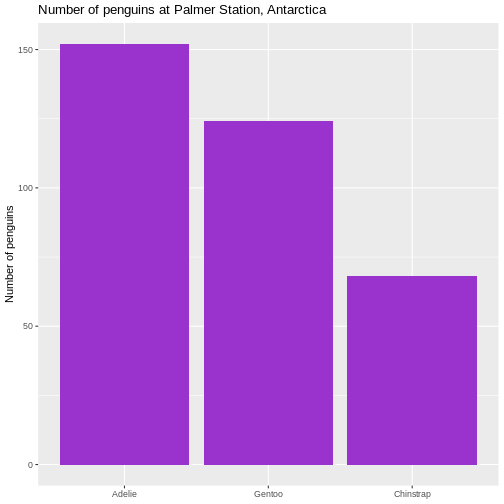 This facilitates the reading of the graph - it becomes very easy to see that the most frequent species of penguin is Adelie penguins.
Rotating the plot
We only have three here, but if we have a lot of categories, it is
often preferable to have the columns as bars on the y-axis. We do that
by changing the x in the aes() function to
y:
R
penguin_example %>%
mutate(species = fct_infreq(species)) %>%
ggplot(aes(y = species)) +
geom_bar(fill = "darkorchid3") +
labs(
y = element_blank(),
x = "Number of penguins",
title = "Number of penguins at Palmer Station, Antarctica")
Size of text
The default size of the text on labels, title etc is a bit to the small side. To improve readability, we change the base_size parameter in the default theme of ggplot to 14. You might need to play around with the value, depending on the number of categories.
R
penguin_example %>%
mutate(species = fct_infreq(species)) %>%
ggplot(aes(y = species)) +
geom_bar(fill = "darkorchid3") +
labs(
y = element_blank(),
x = "Number of penguins",
title = "Number of penguins at Palmer Station, Antarctica") +
theme_grey(base_size = 14) +
theme(plot.title = element_text(size = rel(1.1)))
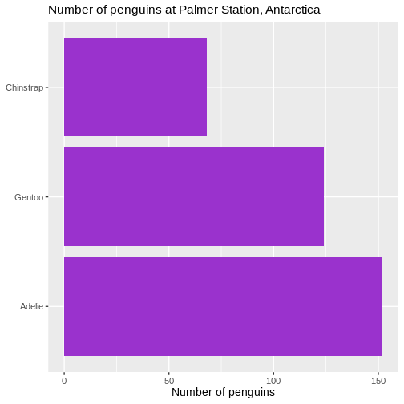
We also changed the scaling of the title of the plot. The size of that
is now 10% larger than the base size. We can do that by specifying a
specific size, but here we have done it using the rel()
function which changes the size relative to the base font size in the
plot.
Removing unnecessary space
There is a bit of empty space between the columns and the labels on the y-axis.
Let us get rid of that:
R
penguin_example %>%
mutate(species = fct_infreq(species)) %>%
ggplot(aes(y = species)) +
geom_bar(fill = "darkorchid3") +
labs(
y = element_blank(),
x = "Number of penguins",
title = "Number of penguins at Palmer Station, Antarctica") +
theme_grey(base_size = 14) +
theme(plot.title = element_text(size = rel(1.1))) +
scale_x_continuous(expand = expansion(mult = c(0, 0.01)))
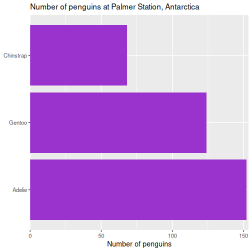
We control what is happening on the x-scale by using the family of
scale_x functions. Because it is a continuous scale, more
specifically scale_x_continuous().
What is happening by default is that the scale is expanded relative to the minimum and maximum values of the data. If we want to change that, we cab either add absolute values (or subtract by using negative values), or we can make a change relative to the data. That makes the change robust to changes in the underlying data.
The mult() function in this case add 0 expansion to the left side of the scale, and 1% ~ 0.01 to the righthand side of the scale.
Remove clutter
There ar horizontal lines in the plot background that are unnessecary. And the grey background we get by default is not very nice. Remove them:
R
penguin_example %>%
mutate(species = fct_infreq(species)) %>%
ggplot(aes(y = species)) +
geom_bar(fill = "darkorchid3") +
labs(
y = element_blank(),
x = "Number of penguins",
title = "Number of penguins at Palmer Station, Antarctica") +
theme(plot.title = element_text(size = rel(1.1))) +
scale_x_continuous(expand = expansion(mult = c(0, 0.01))) +
theme_minimal(base_size = 14) +
theme(
panel.grid.major.y = element_blank(),
panel.grid.minor.y = element_blank(),
)
First we change the default theme of the plot from
theme_grey to theme_minimal, which gets rid of
the grey background. In the additional theme() function we
remove the gridlines, both major and minor gridlines, on the y-axis, by
setting them to the speciel plot element
element_blank()
Add raw numbers to the plot
Especially for barcharts, it can make sense to add the raw values to the columns, rather than relying on reading the values from the x-axis.
That can be done, but a more general, and easier to understand, approach is to construct a dataframe with the data:
R
penguin_count <- count(penguin_example, species)
penguin_example %>%
mutate(species = fct_infreq(species)) %>%
ggplot(aes(y = species)) +
geom_bar(fill = "darkorchid3") +
labs(
y = element_blank(),
x = element_blank(),
title = "Number of penguins at Palmer Station, Antarctica") +
theme(plot.title = element_text(size = rel(1.1))) +
theme_minimal(base_size = 14) +
theme(
panel.grid.major = element_blank(),
panel.grid.minor = element_blank() ) +
geom_text(data = penguin_count, mapping = aes(x = n, y = species, label = n),
hjust = 1,
nudge_x = -0.25,
colour = "white") +
geom_vline(xintercept = 0) +
scale_x_continuous(breaks = NULL, expand = expansion(mult = c(0, 0.01)))
In general it is a good idea to remove all extraneous pixels in the graph. And when we add the counts directly to the plot, we can get rid of the x-axis entirely.
On the other hand, it can be a good idea in this specific example, to
add a vertical indication of where the x=0 intercept is:
geom_vline(xintercept = 0).
And: Always remember to think about the contrast between the colour of the bars and the text!
Add labels to the plot
We can do the same with labels if we want:
R
penguin_example %>%
mutate(species = fct_infreq(species)) %>%
ggplot(aes(y = species)) +
geom_bar(fill = "darkorchid3") +
labs(
y = NULL,
x = "Number of penguins",
title = "Number of penguins at Palmer Station, Antarctica" ) +
theme_minimal(base_size = 14) +
theme(
plot.title = element_text(size = rel(1.1)),
panel.grid.major.y = element_blank(),
panel.grid.minor.y = element_blank(),
panel.grid.major.x = element_blank(),
panel.grid.minor.x = element_blank() ) +
scale_x_continuous(expand = expansion(mult = c(0, 0.01)), breaks = NULL) +
scale_y_discrete(breaks = NULL) +
geom_text(
data = penguin_count,
mapping = aes(x = n, y = species, label = n),
hjust = 1,
nudge_x = -0.25,
colour = "white" ) +
geom_text(
data = penguin_count,
mapping = aes(x = 0, y = species, label = species),
hjust = 0,
nudge_x = 0.25,
colour = "white",
fontface = "bold",
size = 4.5 ) +
geom_vline(xintercept = 0)
Slimmer bars
Depending on aspect ratio of the final plot, number of categories etc, we might want to adjust the width of the bars:
R
penguin_example %>%
mutate(species = fct_infreq(species)) %>%
ggplot(aes(y = species)) +
geom_bar(
fill = "darkorchid3",
width = 0.4 ) +
labs(
y = NULL,
x = "Number of penguins",
title = "Number of penguins at Palmer Station, Antarctica" ) +
theme_minimal(base_size = 14) +
theme(
plot.title = element_text(size = rel(1.1)),
panel.grid.major.y = element_blank(),
panel.grid.minor.y = element_blank(),
panel.grid.major.x = element_blank(),
panel.grid.minor.x = element_blank() ) +
scale_x_continuous(expand = expansion(mult = c(0, 0.01)), breaks = NULL) +
scale_y_discrete(breaks = NULL) +
geom_text(
data = penguin_count,
mapping = aes(x = n, y = species, label = n),
hjust = 1,
nudge_y = 0.1,
colour = "white",
size = 5.5 ) +
geom_text(
data = penguin_count,
mapping = aes(x = 0, y = species, label = species),
hjust = 0,
nudge_x = 0.5,
nudge_y = 0.1,
colour = "white",
fontface = "bold",
size = 4.5 ) +
geom_vline(xintercept = 0)
Key Points
- Relatively small changes to a bar chart can make it look much more professional
Content from Power Calculations
Last updated on 2025-06-10 | Edit this page
Overview
Questions
- How large of a sample do I need to identify a result?
- How much confidence can I get using a specific sample size?
- How much power can I get using a specific sample size?
Objectives
- Explain how to use markdown with the new lesson template
Introduction
We have some data on the lung volume of children, and want to see if there is a difference between the (mean) lung volume of the two sexes. Ie if the mean for boys is 1.87 and for girls is 1.84, there obviously is a difference. But is it significant?
We would do that by running at two-sample t-test. The null-hypothesis is that there is no difference between the mean of the two samples, and if the p-value is smaller than (typically) 0.05, we will reject the null-hypothesis.
That is not the same as concluding that there is a difference, just that the risk of of observing such a difference by random chance, if there really were no difference, is low (less than 5%).
This can go wrong in two ways. There might actually be no difference, but we reject the null-hypothesis anyway, and conclude that a difference exist. That is a false positive; we see a difference where none is. We also call it a type I error.
On the other hand, there might really be a diffence, but we fail to reject the null hypothesis, that is we conclude that no difference exist, even though there is a difference. That is a false negative, or a type II error.
The risk of a type I error is \(\alpha\) - which is what we specify choosing a level of significance, typically 0.05.
The risk of a type II error is related to the concept of “power”, or \(\beta\). Thas is the chance of seeing a difference where such a difference actually exists. And the risk of not seeing it is therefore \(1-\beta\).
These two concepts are combined in power-calculations.
How many children do we need to test?
We begin by loading the data. You can download the data from this link.
R
library(tidyverse)
OUTPUT
── Attaching core tidyverse packages ──────────────────────── tidyverse 2.0.0 ──
✔ dplyr 1.1.4 ✔ readr 2.1.5
✔ forcats 1.0.0 ✔ stringr 1.5.1
✔ ggplot2 3.5.2 ✔ tibble 3.3.0
✔ lubridate 1.9.4 ✔ tidyr 1.3.1
✔ purrr 1.0.4
── Conflicts ────────────────────────────────────────── tidyverse_conflicts() ──
✖ dplyr::filter() masks stats::filter()
✖ dplyr::lag() masks stats::lag()
ℹ Use the conflicted package (<http://conflicted.r-lib.org/>) to force all conflicts to become errorsR
data <- read_csv("data/FEV.csv")
OUTPUT
Rows: 654 Columns: 6
── Column specification ────────────────────────────────────────────────────────
Delimiter: ","
dbl (6): Id, Age, FEV, Hgt, Sex, Smoke
ℹ Use `spec()` to retrieve the full column specification for this data.
ℹ Specify the column types or set `show_col_types = FALSE` to quiet this message.The dataset have measurements of the lung capacity (FEV) for boys and girls between the ages of 3 and 19. Since we know that there are significant differences between the two sexes once they reach puberty, we will be looking at the data for prepubescent children.
R
test_data <- data %>%
filter(Age < 10)
The means and standard deviations can be calculated like this:
R
test_data %>%
group_by(Sex) %>%
summarise(mean = mean(FEV),
sd = sd(FEV))
OUTPUT
# A tibble: 2 × 3
Sex mean sd
<dbl> <dbl> <dbl>
1 0 2.00 0.508
2 1 2.07 0.514In this dataset the girls are coded as “0” and the boys as “1”. We see a difference of 0.0757019.
Is there a difference? The null-hypothesis is that there is not. We have two independent samples, so we are running a two-sample-t-test:
R
girls <- test_data %>%
filter(Sex == 0)
boys <- test_data %>%
filter(Sex == 1)
t.test(boys$FEV, girls$FEV)
OUTPUT
Welch Two Sample t-test
data: boys$FEV and girls$FEV
t = 1.3021, df = 306.88, p-value = 0.1939
alternative hypothesis: true difference in means is not equal to 0
95 percent confidence interval:
-0.03870191 0.19010577
sample estimates:
mean of x mean of y
2.070799 1.995097 The p-value is larger than 0.05, so we do not reject the null-hypothesis, and conclude that even though there might be a difference, we cannot rule out the possibility that the difference we see between the two means is happening by chance.
How many children should we measure, if we wanted to see a difference of 0.0757019?
That is, how large a sample should we have, if we want to detect an actual difference as small as this? This difference is often called the effect-size.
The effect size is relative to the absolute size of the means. A difference of 0.08 is easier to detect when it is between 1.99 and 2.07 than if it is between 5461.31 and 5461.39.
Therefore we measure the effect size in standard deviations rather
than in absolute values. We denote that as d or Cohen’s
d. Often we want to see a specific effect size: 0.2 is considered small,
0.5 as medium and 0.8 as large.
In this case we have an effect size, but needs to convert it to standard deviations:
\[d = \frac{\mu_{boys} - \mu_{girls}}{\sigma_{pooled}}\]
Where the pooled standard deviation is calculated with:
\[\sigma_{pooled} = \sqrt{\frac{(n_{boys}-1)s_{boys}^2 + (n_{girls}-1)s_{girls}^2}{n_{boys}+n_{girls} -2}}\]
Which is a weighted average of the two standard deviations.
We need the following values:
R
test_data %>%
group_by(Sex) %>%
summarise(n = n(), mean = mean(FEV), sd = sd(FEV))
OUTPUT
# A tibble: 2 × 4
Sex n mean sd
<dbl> <int> <dbl> <dbl>
1 0 155 2.00 0.508
2 1 154 2.07 0.514And now get the pooled standard deviation with:
R
s_p <- sqrt(((154-1)*0.5144072^2 + (155-1)*0.5075533^2)/(154+155-2))
And can then calculate Cohen’s d, or, the effect size in standard deviations:
R
d <- (2.070799-1.995097)/s_p
d
OUTPUT
[1] 0.1481504Now we almost have all our ducks in a row. There is only one number we need to decide on - the power. In this example we decide that it should be 0.9. To reiterate: If the difference exists, we want to have a 90% chance of detecting it.
Or, conversely, we are willing to accept a 10% chance of a type II error, where we fail to detect the difference.
R has a built in function for doing the final calculation for a two
sample t test. But we are going to use the pwr library. The
results are the same, but the calculations are different for different
tests, and pwr provides functions for handling other
tests.
The function we are going to use is pwr.t.test:
R
library(pwr)
pwr.t.test(d=d, sig.level = 0.05, power = 0.9, type = "two.sample")
OUTPUT
Two-sample t test power calculation
n = 958.4203
d = 0.1481504
sig.level = 0.05
power = 0.9
alternative = two.sided
NOTE: n is number in *each* groupWe specify the effect size (d), the significanse level (0.05), the power we want (0.9), and the type of test we want to be able to do on the data (“two.sample”).
And get the result that we need (at least) 959 observations in each group, in order to see the wanted effect size, with at a 5% significanse level and with a power of 0.9.
How large effect sizes can we see?
The function is smart. There are four numbers involved: The effect size, the significanse level, the power and the number of observations. They are all connected, and if we specify three of them, we will get the fourth.
Given the number of observations we have, we can calculate the power of the test:
R
pwr.t.test(n = 155, d=d, sig.level = 0.05, type = "two.sample")
OUTPUT
Two-sample t test power calculation
n = 155
d = 0.1481504
sig.level = 0.05
power = 0.2552478
alternative = two.sided
NOTE: n is number in *each* groupThere is ~75% chance of getting a type II error.
Key Points
- Use
.mdfiles for episodes when you want static content
Content from k-means
Last updated on 2025-06-10 | Edit this page
Overview
Questions
- What is k-means?
Objectives
- Explain how to run a kmeans-clustering on data
- Demonstrate the importance of scaling
Imagine we have a set of data. We might have a lot of data on the orders from different customers in our bookshop. We would like to target our email-campaigns to them.
We do not want to go through all our customers manually. We want something automated, that partitions all our customers into eg. 10 different groups (or clusters) that are similar. Our email-campaign should focus on books about cars and WW2 when we target customers in the cluster that tend to buy that kind of books. And on other topics to other clusters.
This is a real example from a major, danish online bookseller.
This is also an example of an unsupervised clustering. We do not know the true group any given customer belongs to, and we do not want to predict which group she will end up in. We simply want to partition our data/customers into 10 groups.
In the case of the online bookseller the number was chosen to get a relatively small number of clusters, in order not to have to manage 20 or more different marketing mails. But large enough to have a decent differentation between the groups.
The number is often chose arbitrarily, but methods for choosing an “optimal” number exists.
kmeans is a way of doing this
Many unsupervised clustering algorithms exist. kmeans is just one. We provide the data, and specify the number of clusters we want to get. The algorithm will automatically provide us with them. And it will assign the datapoints to individual clusters, in a way where the datapoints have some sort of similarity of their features.
Wine as an example
We might normally use the kmeans algorithm to cluster data where we do not know the “true” clusters the data points belongs to.
In order to demonstrate the method, it is useful to have a dataset where we know the true clusters.
Here we have a dataset, where different variables, have been measured on wine made from three different types of grapes (cultivars).
The terminology differs. We have a set of columns with variables. But these variables are also often called parameters or features. Or dimensions
The dataset can be downloaded here
R
library(tidyverse)
vin <- read_csv("data/win/wine.data", col_names = F)
names(vin) <- c("cultivar",
"Alcohol",
"Malicacid",
"Ash",
"Alcalinityofash",
"Magnesium",
"Totalphenols",
"Flavanoids",
"Nonflavanoidphenols",
"Proanthocyanins",
"Colorintensity",
"Hue",
"OD280OD315ofdilutedwines",
"Proline")
What does it do?
Before actually running the algorithm, we should probably take a look at what it does.
K-means works by chosing K - the number of clusters we want. That is a choice entirely up to us. In this example we will chose 3. Primarily because we know that there are three different cultivars.
The algorithm then choses K random points, also called centroids. In this case these centroids are in 13 dimensions, because we have 13 features in the dataset.
That makes it a bit difficult to visualize.
It then calculates the distance from each observation in the data, to each of the K centroids. After that, each observation is assigned to the centroid it is closest to. Each data point will therefore be assigned to a specific cluster, described by the relevant centroid.
The algorithm then calculates three new centroids. All the observations assigned to centroid A are averaged, and we get a new centroid. The same calculations are done for the other two centroids, and we now have three new centroids. They now actually have a relation to the data - before they were assigned randomly, now they are based on the data.
Now the algorithm repeats the calculation of distance. For each observation in the data, which of the new centroids is it closest to it. Since we calculated new centroids, some of the observations will switch and will be assigned to a new centroid.
Again the new assignments of observations are used to calculate new centroids for the three clusters, and all these calculations are repeated until no observations swithces between clusters, or we have repeated the algorithm a set number of times (by default 10 times).
After that, we have clustered our data in three (or whatever K we chose) clusters, based on the features of the data.
How do we actually do that?
The algorithm only works with numerical data.
Let us begin by removing the variable containing the true answers.
R
cluster_data <- vin %>%
select(-cultivar)
There are only numerical values in this example, so we do not have to remove other variables.
After that, we can run the function kmeans, and specify
that we want three centers (K), and save the result to an object, that
we can work with afterwards:
R
clustering <- kmeans(cluster_data, centers = 3)
clustering
OUTPUT
K-means clustering with 3 clusters of sizes 28, 50, 100
Cluster means:
Alcohol Malicacid Ash Alcalinityofash Magnesium Totalphenols Flavanoids
1 13.82214 1.773929 2.4900 16.96429 105.3571 2.923929 3.111429
2 13.33680 2.396800 2.3718 18.51000 108.6000 2.432400 2.214800
3 12.60250 2.463600 2.3293 20.69600 93.7400 2.050400 1.633500
Nonflavanoidphenols Proanthocyanins Colorintensity Hue
1 0.2985714 1.986786 6.202857 1.103571
2 0.3236000 1.707200 5.143600 0.966720
3 0.3987000 1.421900 4.694800 0.911900
OD280OD315ofdilutedwines Proline
1 2.984643 1301.50
2 2.862800 894.60
3 2.381700 517.75
Clustering vector:
[1] 2 2 1 1 2 1 1 1 2 2 1 1 1 1 1 1 1 1 1 2 2 2 2 2 2 2 1 1 2 2 1 1 2 1 2 2 2
[38] 1 2 2 2 2 2 3 2 2 2 2 2 1 1 1 1 1 2 1 2 1 1 3 3 3 3 3 3 3 3 3 2 2 2 3 3 2
[75] 2 3 3 3 2 3 3 2 3 3 3 3 3 3 3 3 3 3 3 3 3 2 3 3 3 3 2 3 3 3 3 3 3 3 3 3 3
[112] 3 3 3 3 3 3 3 3 3 3 3 3 3 3 3 3 3 3 3 3 3 3 3 3 3 2 3 3 3 3 2 3 3 2 2 3 3
[149] 3 3 3 3 3 3 3 2 3 2 3 3 3 3 3 3 3 3 3 3 2 3 3 3 3 2 2 2 2 3
Within cluster sum of squares by cluster:
[1] 550201.0 815783.7 1263330.5
(between_SS / total_SS = 85.1 %)
Available components:
[1] "cluster" "centers" "totss" "withinss" "tot.withinss"
[6] "betweenss" "size" "iter" "ifault" This is a bit overwhelming. The centroids in the three clusters are defined by their mean values of all the dimensions/variables in them. We can see that there appears to be a difference between the alcohol content between all of the three clusters. Whereas the difference between cluster 1 and 3 for malicacid is very close.
We also get at clustering vector, that gives the number of the cluster each datapoint is assigned to. And we get some values for the variation between the clusters.
How well did it do?
We know the true values, so we extract the clusters the algorithm found, and match them with the true values:
R
testing_clusters <- tibble(quess = clustering$cluster,
true = vin$cultivar)
And count the matches:
R
table(testing_clusters)
OUTPUT
true
quess 1 2 3
1 28 0 0
2 30 9 11
3 1 62 37The algorithm have no idea about how the true groups are numbered, so the numbering does not match. But it appears that i does a relatively good job on two of the types of grapes. and is a bit confused about the third.
Does that mean the algorithm does a bad job?
Preprocessing is necessary!
Looking at the data give a hint about the problems:
R
head(vin)
OUTPUT
# A tibble: 6 × 14
cultivar Alcohol Malicacid Ash Alcalinityofash Magnesium Totalphenols
<dbl> <dbl> <dbl> <dbl> <dbl> <dbl> <dbl>
1 1 14.2 1.71 2.43 15.6 127 2.8
2 1 13.2 1.78 2.14 11.2 100 2.65
3 1 13.2 2.36 2.67 18.6 101 2.8
4 1 14.4 1.95 2.5 16.8 113 3.85
5 1 13.2 2.59 2.87 21 118 2.8
6 1 14.2 1.76 2.45 15.2 112 3.27
# ℹ 7 more variables: Flavanoids <dbl>, Nonflavanoidphenols <dbl>,
# Proanthocyanins <dbl>, Colorintensity <dbl>, Hue <dbl>,
# OD280OD315ofdilutedwines <dbl>, Proline <dbl>Note the differences between the values of “Malicacid” and “Magnesium”. One have values between 0.74 and 5.8 and the other bewtten 70 and 162. The latter influences the means much more that the former.
It is therefore good practice to scale the features to have the same
range and standard deviation. A function scale() that does
exactly that exists in R:
R
scaled_data <- scale(cluster_data)
If we now do the same clustering as before, but now on the scaled data, we get much better results:
R
set.seed(42)
clustering <- kmeans(scaled_data, centers = 3)
tibble(quess = clustering$cluster, true = vin$cultivar) %>%
table()
OUTPUT
true
quess 1 2 3
1 59 3 0
2 0 65 0
3 0 3 48By chance, the numbering of the clusters now matches the “true” cluster numbers.
The clustering is not perfect. 3 observations belonging to cluster 2, are assigned to cluster 1 by the algorithm (and 3 more to cluster 3).
In this caase we know the true values. Had we not, we would still have gotten the same groups, and could have correctly grouped the different data points.
What are those distances?
It is easy to measure the distance between two observations when we only have two features/dimensions: Plot them on a piece of paper, and bring out the ruler.
But what is the distance between this point:
1, 14.23, 1.71, 2.43, 15.6, 127, 2.8, 3.06, 0.28, 2.29, 5.64, 1.04, 3.92, 1065
and this one:
1, 13.2, 1.78, 2.14, 11.2, 100, 2.65, 2.76, 0.26, 1.28, 4.38, 1.05, 3.4, 1050?
Rather than plotting and measuring, if we only have two observations with two features, and we call the the observations \((x_1, y_1)\) and \((x_2,y_2)\) we can get the distance using this formula:
\[d = \sqrt{(x_2 - x_1)^2 + (y_2 - y_1)^2} \]
For an arbitrary number of dimensions we get this: \[d = \sqrt{\sum_{i=1}^{n} \left(x_2^{(i)} - x_1^{(i)}\right)^2}\]
Where the weird symbol under the squareroot sign indicates that we add all the squared differences between the pairs of observations.
Is the clustering reproducible?
Not nessecarily. If there are very clear clusters, in general it will be.
But the algorithm is able to find clusters even if there are none:
Here we have 1000 observations of two features:
R
test_data <- data.frame(x = rnorm(1000), y = rnorm(1000))
They are as random as the random number generator can do it.
Let us make one clustering, and then another:
R
set.seed(47)
kmeans_model1 <- kmeans(test_data, 5)
kmeans_model2 <- kmeans(test_data, 5)
And then extract the clustering and match them like before:
R
tibble(take_one = kmeans_model1$cluster,
take_two = kmeans_model2$cluster) %>%
table()
OUTPUT
take_two
take_one 1 2 3 4 5
1 2 132 0 23 0
2 2 0 217 0 2
3 0 0 11 1 124
4 127 73 9 0 0
5 0 68 1 121 87Two clusterings on the exact same data. And they are pretty different.
Do not be confused by the fact that take_one-group-4 matches rather well with take_two-group-1. The numbering is arbitrary.
Visualizing it makes it even more apparent:
R
tibble(take_one = kmeans_model1$cluster,
take_two = kmeans_model2$cluster) %>%
cbind(test_data) %>%
ggplot(aes(x,y,colour= factor(take_one))) +
geom_point()
R
tibble(take_one = kmeans_model1$cluster,
take_two = kmeans_model2$cluster) %>%
cbind(test_data) %>%
ggplot(aes(x,y,colour= factor(take_two))) +
geom_point()
In other words - the algorithm will find clusters. And the clustering depends, to a certain degree on the random choice of initial centroids.
Can it be use on any data?
No. Even though there might actually be clusters in the data, the algorithm is not necessarily able to find them. Consider this data: 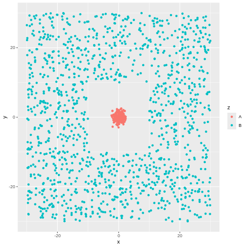 There is obviously a cluster centered around (0,0). And another cluster more or lesss evenly spread around it.
The algorithm will find two clusters:
R
library(tidymodels)
kmeans_model3 <- kmeans(test_data[,-3], 2)
cluster3 <- augment(kmeans_model3, test_data[,-3])
ggplot(cluster3, aes(x,y,colour=.cluster)) +
geom_point()
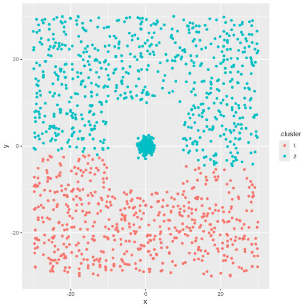 But not the ones we want.
Key Points
- kmeans is an unsupervised technique, that will find the hidden structure in our data that we do not know about
- kmeans will find the number of clusters we ask for. Even if there is no structure in the data at all
Content from ANOVA
Last updated on 2025-06-10 | Edit this page
Overview
Questions
- How do you perform an ANOVA?
- What even is ANOVA?
Objectives
- Explain how to run an analysis of variance on models
- Explain the requisites for runnin an ANOVA
- Explain what an ANOVA is
Introduction
Studying the length of penguin flippers, we notice that there is a difference between the average length between three different species of penguins:
R
library(tidyverse)
library(palmerpenguins)
penguins %>%
group_by(species) %>%
summarise(mean_flipper_length = mean(flipper_length_mm, na.rm = TRUE))
OUTPUT
# A tibble: 3 × 2
species mean_flipper_length
<fct> <dbl>
1 Adelie 190.
2 Chinstrap 196.
3 Gentoo 217.If we only had two groups, we would use a t-test to determine if
there is a significant difference between the two groups. But here we
have three. And when we have three, or more, we use the ANOVA-method, or
rather the aov() function:
R
aov(flipper_length_mm ~ species, data = penguins) %>%
summary()
OUTPUT
Df Sum Sq Mean Sq F value Pr(>F)
species 2 52473 26237 594.8 <2e-16 ***
Residuals 339 14953 44
---
Signif. codes: 0 '***' 0.001 '**' 0.01 '*' 0.05 '.' 0.1 ' ' 1
2 observations deleted due to missingnessWe are testing if there is a difference in flipper_length_mm when we explain it as a function of species. Or, in other words, we analyse how much of the variation in flipper length is caused by variation between the groups, and how much is caused by variation within the groups. If the difference between those two parts of the variation is large enough, we conclude that there is a significant difference between the groups.
In this case, the p-value is very small, and we reject the NULL-hypothesis that there is no difference in the variance between the groups, and conversely that we accept the alternative hypothesis that there is a difference.
Are we allowed to run an ANOVA?
There are some conditions that needs to be fullfilled.
- The observations must be independent.
In this example that we can safely assume that the length of the flipper of a penguin is not influenced by the length of another penguin.
- The residuals have to be normally distributed
Typically we also test if the data is normally distributed. Let us look at both:
Is the data normally distributed?
R
penguins %>%
ggplot(aes(x=flipper_length_mm)) +
geom_histogram() +
facet_wrap(~species)
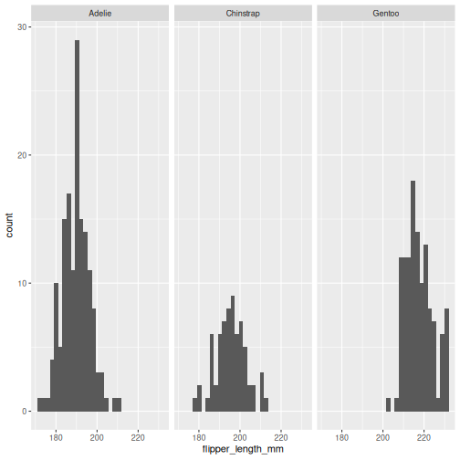 That looks reasonable.
And the residuals?
R
aov(flipper_length_mm ~ species, data = penguins)$residuals %>%
hist(.)
That looks fine - if we want a more specific test, those exists, but will not be covered here.
- Homoskedacity
A weird name, it simply means that the variance in the different groups are more or less the same. We can calculate the variance and compare:
R
penguins %>%
group_by(species) %>%
summarise(variance = var(flipper_length_mm, na.rm = TRUE))
OUTPUT
# A tibble: 3 × 2
species variance
<fct> <dbl>
1 Adelie 42.8
2 Chinstrap 50.9
3 Gentoo 42.1Are the variances too different? As a rule of thumb, we have a problem if the largest variance is more than 4-5 times larger than the smallest variance. This is OK for this example.
If there is too large difference in the size of the three groups, smaller differences in variance can be problematic.
There are probably more than than three tests for homoskedacity, here are three:
Fligner-Killeen test:
R
fligner.test(flipper_length_mm ~ species, data = penguins)
OUTPUT
Fligner-Killeen test of homogeneity of variances
data: flipper_length_mm by species
Fligner-Killeen:med chi-squared = 0.69172, df = 2, p-value = 0.7076Bartlett’s test:
R
bartlett.test(flipper_length_mm ~ species, data = penguins)
OUTPUT
Bartlett test of homogeneity of variances
data: flipper_length_mm by species
Bartlett's K-squared = 0.91722, df = 2, p-value = 0.6322Levene test:
R
library(car)
OUTPUT
Loading required package: carDataOUTPUT
Attaching package: 'car'OUTPUT
The following object is masked from 'package:dplyr':
recodeOUTPUT
The following object is masked from 'package:purrr':
someR
leveneTest(flipper_length_mm ~ species, data = penguins)
OUTPUT
Levene's Test for Homogeneity of Variance (center = median)
Df F value Pr(>F)
group 2 0.3306 0.7188
339 For all three tests - if the p-value is >0.05, there is a significant difference in the variance - and we are not allowed to use the ANOVA-method. In this case we are on the safe side.
But where is the difference?
Yes, there is a difference between the average flipper length of the three species. But that might arise from one of the species having extremely long flippers, and there not being much difference between the two other species.
So we do a posthoc analysis to confirm where the differences are.
The most common is the tukeyHSD test, HSD standing for “Honest
Significant Differences”. We do that by saving the result of our
ANOVa-analysis and run the TukeyHSD() function on the
result:
R
aov_model <- aov(flipper_length_mm ~ species, data = penguins)
TukeyHSD(aov_model)
OUTPUT
Tukey multiple comparisons of means
95% family-wise confidence level
Fit: aov(formula = flipper_length_mm ~ species, data = penguins)
$species
diff lwr upr p adj
Chinstrap-Adelie 5.869887 3.586583 8.153191 0
Gentoo-Adelie 27.233349 25.334376 29.132323 0
Gentoo-Chinstrap 21.363462 19.000841 23.726084 0We get the estimate of the pair-wise differences and lower and upper 95% confidence intervals for those differences.
Try it on your own
The iris dataset, build into R, contains measurements of
three different species of the iris-family of flowers.
Is there a significant difference between the
Sepal.Width of the three species?
R
aov(Sepal.Width ~Species, data = iris) %>%
summary()
OUTPUT
Df Sum Sq Mean Sq F value Pr(>F)
Species 2 11.35 5.672 49.16 <2e-16 ***
Residuals 147 16.96 0.115
---
Signif. codes: 0 '***' 0.001 '**' 0.01 '*' 0.05 '.' 0.1 ' ' 1Try it on your own (continued)
The result only reveal that there is a difference. Or rather that we can reject the hypothesis that there is no difference.
Which species differ?
R
aov(Sepal.Width ~Species, data = iris) %>%
TukeyHSD()
OUTPUT
Tukey multiple comparisons of means
95% family-wise confidence level
Fit: aov(formula = Sepal.Width ~ Species, data = iris)
$Species
diff lwr upr p adj
versicolor-setosa -0.658 -0.81885528 -0.4971447 0.0000000
virginica-setosa -0.454 -0.61485528 -0.2931447 0.0000000
virginica-versicolor 0.204 0.04314472 0.3648553 0.0087802Key Points
- Use
.mdfiles for episodes when you want static content
Content from Cohens Kappa
Last updated on 2025-06-10 | Edit this page
Overview
Questions
- How can agrement on classification be quantised?
- How is Cohens \(\kappa\) calculated?
Objectives
- Learn to calculate Cohens \(\kappa\)
- Become familiar with the usecases for Cohens \(\kappa\)
- Know the limitations of Cohens \(\kappa\)
What do we use it for?
We use Cohens Kappa (or \(\kappa\)), to compare if two sets of categorisations is done reliably.
Imagine a set of images. We ask two persons to answer a simple question - is there a cat on the images. To what degree do the two persons agree on the presence or absence of cats?
That seems simple enough. However if they agree that there is a cat, this might indicate that they are both good at identifying cats, and of course agrees. But they might just as well be very bad at recognizing cats - but agree by random chance.
Where is it used?
Inter-Rater Reliability. That is the example from earlier. To what degree do two “raters” agree on their rating or classification of something? This is useful in subjects and research where subjective assessments are important, such as psychology, medicine and languages.
Intra-Rater Reliability. Here we test how consistent a single rater is. Are my ratings from a week ago, consistent with the ratings I make today?
Comparison of diagnostic tests. It can be used to compare the results of two different diagnostic tests for some medical condition. Does the cheaper, less invasive test, give the same results as the more expensive invasive test?
Natural language processing (NLP). When we categorise textual data, eg, evaluating the sentiment of a text, or identify named entities - how well does two methods or persons agree?
Educational research. Will two teachers give the same grade to the same papers turned in by students.
In humanities we are concerned with intersubjectively transferability - based on available data, are the subjective evaluation of two different persons in agreement.
Limitations
Cohens \(\kappa\) can be used directly for two nominal (no order of the classes) categorical variables. The main limitation is that Cohens \(\kappa\) only applies for exactly two raters.
How do we calculate it?
The library vcd contains a function Kappa()
that does the heavy lifting.
It needs a so called confusion matrix. Let us begin by constructing one.
Ja, dette bør ligge i et datasæt der kan indlæses.
R
library(tidyverse)
OUTPUT
── Attaching core tidyverse packages ──────────────────────── tidyverse 2.0.0 ──
✔ dplyr 1.1.4 ✔ readr 2.1.5
✔ forcats 1.0.0 ✔ stringr 1.5.1
✔ ggplot2 3.5.2 ✔ tibble 3.3.0
✔ lubridate 1.9.4 ✔ tidyr 1.3.1
✔ purrr 1.0.4
── Conflicts ────────────────────────────────────────── tidyverse_conflicts() ──
✖ dplyr::filter() masks stats::filter()
✖ dplyr::lag() masks stats::lag()
ℹ Use the conflicted package (<http://conflicted.r-lib.org/>) to force all conflicts to become errorsR
diagnoses <- tribble(~rater1, ~rater2,
"dep", "dep",
"dep", "dep",
"dep", "dep",
"dep", "dep",
"dep", "dep",
"dep", "dep",
"dep", "dep",
"dep", "dis",
"dep", "sch",
"dep", "sch",
"dep", "neu",
"dep", "neu",
"dep", "neu",
"dis", "dis",
"dis", "dis",
"dis", "dis",
"dis", "dis",
"dis", "dis",
"dis", "dis",
"dis", "dis",
"dis", "dis",
"dis", "sch",
"dis", "sch",
"sch", "sch",
"sch", "sch",
"neu", "neu",
"oth", "oth",
"oth", "oth",
"oth", "oth",
"oth", "oth"
)
The object diagnoses now contains 30 observations.
Imagine two psychiatrists both evaluating 30 patients. They diagnose one
of these disorders: Depression (dep), Schizophrenia (sch), Dissociative
disorder (dis), Neurosis (neu) and Other (oth). To what degree do they
agree?
R
head(diagnoses)
OUTPUT
# A tibble: 6 × 2
rater1 rater2
<chr> <chr>
1 dep dep
2 dep dep
3 dep dep
4 dep dep
5 dep dep
6 dep dep R
conf_table <- table(diagnoses)
conf_table
OUTPUT
rater2
rater1 dep dis neu oth sch
dep 7 1 3 0 2
dis 0 8 0 0 2
neu 0 0 1 0 0
oth 0 0 0 4 0
sch 0 0 0 0 2This is the confusion matrix. 7 patients are diagnosed with depression by both raters (psychiatrists). But looking at Schizophrenia, we see that two patients are diagnosed with Schizophrenia by rater2, but with Depression by rater1.
This is the table we need to provide to the Kappa()
function:
R
library(vcd)
OUTPUT
Loading required package: gridR
res.k <- Kappa(conf_table)
res.k
OUTPUT
value ASE z Pr(>|z|)
Unweighted 0.6507 0.0999 6.513 7.372e-11
Weighted 0.5588 0.1282 4.359 1.304e-05For some use cases it does not really matter what kind of disagreement the two raters have. They of course should agree, but the disagreement of classifying a Golden Retriver as a Labrador Retriver, is not as serious as mistaking it for a Chihuahua.
The Unweighted \(\kappa\) is calculated with the assumption that the different disagreements are of equal seriousness.
The Weighted \(\kappa\) assumes that some disagreements are worse than others.
How confident are we in \(\kappa\)?
The function confint() will give us the 95% confidence
interval of the \(\kappa\)
calculated:
R
confint(res.k)
OUTPUT
Kappa lwr upr
Unweighted 0.4548491 0.8464610
Weighted 0.3075771 0.8100699Interpretation
Cohens \(\kappa\) takes into account the possibility that the two raters agree by chance. This makes it a more robust measure of agreement than simply looking at the precent agreement. It returns a value between -1 and 1, 1 indicating perfect agreement, 0 no agreement besides random chance, and negative values less agreement than we would expect by chance.
So. Is an unweighted \(\kappa\) of 0.6507 good or bad?
That depends on what we are actually classifying. Classifying psychiatric disorders is obviously more important than classifying dog breeds.
Fleiss et al (2003), argues that the rules-of-thumb in this table are good indications:
| Value of K | Level of agreement |
|---|---|
| >0.75 | Excellent agreement beyond chance |
| 0.4> value < 0.75 | Fair to good agreement beyond chance |
| <0.4 | Poor agreement beyond chance |
Whereas McHugh (2012) presents this table:
| Value of K | Level of agreement | % of data that are reliable |
|---|---|---|
| 0 - 0.20 | None | 0 - 4% |
| 0.21 - 0.39 | Minimal | 4 - 15% |
| 0.40 - 0.59 | Weak | 15 - 35% |
| 0.60 - 0.79 | Moderate | 35 - 63% |
| 0.80 - 0.90 | Strong | 64 - 81% |
| Above 0.90 | Almost Perfect | 82 - 100% |
The estimates of the % of data that are reliable depends on the distribution of the classifications, and the values in this table should be taken with a grain of salt.
Assumptions
Cohens \(\kappa\) have the following requirements:
Two raters (or coders). No more, no less.
Nominal scale – there are no order to the classifications.
Same set of items – both raters rate the exact same cases.
Independence of ratings – the two ratings must not influence each other.
Mutually exclusive categories – an arbitrary case can only get one classification.
The math
We define \(\kappa\) as:
\[\kappa = \frac{P_0 - P_e}{1-P_e}\] Where \(P_0\) is the degree of agreement we observe, and \(P_e\) is the degree of agreement that is random.
The null hypothesis declares that any agreement is random, and \(\kappa\) is 0. If \(\kappa\) is different from 0, the agreement is not random.
If we are looking at two raters, in this example doctors, determining if a patient is sick, a simple yes/no question in this case we will get these results:
R
## Doctor2
## Doctor1 Yes No Total
## Yes a b R1
## No c d R2
## Total C1 C2 N
\(P_0\), the observed percentage of agreement is now easy to calculate. It is the sum of “a” and “d”, divided by the number of patients:
\[P_0 = \frac{a + d}{N}\]
The random agreement \(P_e\) takes a bit more math:
- Doctor 1 answers “yes” in \(\frac{R_1}{N}\) cases.
- Doctor 2 answers “yes” in \(\frac{C_1}{N}\) cases.
Based on this, the probability that they both, randomly and by chance, answers “yes” is:
\[\frac{R1}{N} \frac{C1}{N}\]
And for the random agreement of “no”:
Doctor1 answers “no” in \(\frac{R2}{N}\) cases Doctor2 answers “no” in \(\frac{C2}{N}\) cases
And the probability that they both, again randomly and by chance, answers “no” is:
\[\frac{R2}{N} \frac{C2}{N}\]
We then calculate the total probability that the two raters agree by chance by adding the two ways they can do that:
\[P_e = \frac{R1}{N} \frac{C1}{N}+ \frac{R2}{N} \frac{C2}{N}\]
Now that we have both \(P_0\) and \(P_e\), we can calculate \(\kappa\), and confidence intervals: \(\kappa \pm Z_{\alpha/2} SE_\kappa\) based on the Z-distribution (if normality is assured, otherwise the t-distribution).
If you have ever looked at how the math in a \(\chi^2\) test works, this might look familiar. Thats because it actually is.
With two raters and two categories, that \(\kappa\) statistic is the same. And if you want to delve deeper into that, you can look up this paper:
Feingold, Marcia (1992). “The Equivalence of Cohen’s Kappa and Pearson’s Chi-Square Statistics in the 2 × 2 Table.” Educational and Psychological Measurement 52(1): 57-61. https://hdl.handle.net/2027.42/67443
Alternatives
Cohens \(\kappa\) only works (directly) for nominal values, and two raters. The option of weighting the data give us some options for using it on ordinal values, but more direct options exist.
- Weighted \(\kappa\) is used for
ordinal values. We use the function
kappa2()from theirrpackage. - Light’s \(\kappa\) is used for
studying interrater agreement between more than 2 raters. We use the
function
kappamlight()from theirrpackage. - Fleiss \(\kappa\) is also used when having more than 2 raters. But does not require the same raters for each subject.
Key Points
- With two raters Cohens \(\kappa\) can be used as a measure of interrater agreement on categorical, nominal classes.
- Other methods exists for ordinal classes, and more than two raters.
Content from R on Ucloud
Last updated on 2025-06-10 | Edit this page
Overview
Questions
- What is Ucloud?
- How do we use R and RStudio on Ucloud?
Objectives
- Explain how to acces RStudio and R on Ucloud
- Demonstrate how to setup drives and additional software working with Ucloud
You need to run R on a computer that have more muscles than you own.
If you are a student at UCPH, you are in luck, because you have access to a High Performance Computing (HPC) facility; ucloud. It can be acessed at cloud.sdu.dk using the normal UCPH login and password.
Depending on the user allowances, it will look something like this.
Ucloud provides access to a multitude of different applications organized in the application store:
Amongst the more popular picks from the store is RStudio:
This allow us to start a session of RStudio, accessible in the browser.
Note that we can chose different machine types. Parallel processing is not the solution to every problem, but sometimes it is, and here we get access to a lot of cores.
You select a suitable type of machine, chose how long you want it to run, click submit, and after a short wait, you can click “Interface”, and you will have, in your browser, something that looks almost exactly like RStudio.
This is not a computer as such
What we can start is not a computer. It is a virtual machine. A virtual machine is not a real computer, it is a simulation of a computer, that runs on a larger computer. Rather than installing an operating system and software on a real computer, we ask the larger computer to start a simulation of a computer. Since we interact with it through the web, we might not discover the difference. But there are some, which are important to know about.
Compute
Running a virtual computer on a HPC-facility gives us access to a lot of resources, primarily “CPU”s and “RAM”.
Your own computer have a CPU. It is the physical unit that actually
runs your code. When we ask R to calculate 1+1, it is the
CPU that does the calculation.
Most modern CPU have multiple “cores”. So in reality it is not the CPU that actually performs the calculation, it is one of the cores in the CPU.
The computer used for writing this text have 20 cores.
This is nice, for the core can - in principle - only do one
calculation at a time. When we calculate 1+1, that is the
only thing the core can do at that precise moment.
The thruth is a lot more complicated, but the analogy is useful in order to understand why it can be nice to have more than one.
Having access to more than one core allow us to run some of our calculations in parallel. If you are asked to do 10 simple multiplications, you are finished when you have done 10 multiplications. Ask a friend to help, and do 5 yourself, and let your friend do 5 - you will be done in half the time.
Some calculations we want to do in R can be parallelized, where we ask one core to distribute the tasks to 10 different cores. The calculation will then be done much faster, than if only one core worked on the problem.
Chosing a machine on Ucloud with a lot of cores will not necesarily speed up your work. The code you run will have to be written to make use of all the cores. And sometimes it takes longer to do that, than just leaving all the work to a single core.
How do we find out how many cores we have? It should be simple. The
library parallel have a function detectCores()
that returns the number of cores we have access to:
R
parallel::detectCores()
Reading the documentation reveals that it is not that simple:
“Where virtual machines are in use, one would hope that the result for logical = TRUE represents the number of CPUs available (or potentially available) to that particular VM.”
Or use this:
R
future::availableCores()
Memory
Looking at the interface, we see that we also get access to more memory, or RAM.
RAM is the short term memory of the computer. If we want to manipulate 10 Gb data, we need to be able to have 10 Gb of data in the memory of the computer. And we probably need to have access to much more than 10 Gb, because R likes to use a lot of memory, and tends to make a copy of the data it manipulates.
We might therefore have to chose a certain size of virtual machine, not because we actually need 64 cores, but because we need the memory.
It will go away!
Because we are running a virtual computer, rather than a real computer, most of what we do will disappear when we restart the computer. In R we typically installs a number of libraries or packages. Those will vanish into thin air when the virtual machine is closed down. In a section below we will cover access to drives on Ucloud which to a certain degree can help us. But if we do not take precautions, we will have to install R-packages every time we start up a new virtual machine on Ucloud
Cost
We might be tempted to let the virtual machine run forever, instead of only for 1 hour. But Ucloud is a limited resource, and we only have a specific allowance in total. Running a machine with one virutal CPU for one hour consumes 1 “core-hour” of our allowance. Running a machine with 64 virtual CPUs for one hour consumes 64 core-hours. And when we run out of allowance - the machine will close down.
It will also close down when the time we chose ran out.
Therefore, do not request more cores than you actually need.
On the other hand, do not request less than you need. If you chose 1 CPU, with 6 Gb RAM, and discover that you actually needed 12 Gb RAM - you will have to shut down the virtual machine, and start a larger.
And because we are not running on a real computer, everything will be lost.
Your drive
Not all is lost when you restart a virtual machine. Ucloud provides you with a drive:
In it we find a listing of what is in our drive:
The folder “Jobs” contains data from the individual runs of virtual machines you have done. And Trash contains deleted files.
Note that the content of both these folders counts towards the total storage you have available - so consider deleting them regularly.
It is recommended to create a folder for your work. Choose “Create folder” and give it a name. For this example we will call it “ml-course”.
Caution
Do not use white spaces in your folder or file names. Most programming languages are able to handle them, but will almost always require special steps to be taken. Having white spaces in file names introduces a potential for problems that can be difficult to identify and fix.
Lets get started!
Go to the app-store as shown above, and chose RStudio.
Chose the “u1-standard-2” machinetype with 2 virtual CPUs and 12 GB memory.
In order to be able to access our files, go to “Select folders to use” and click add folder:
Click in “No directory selected” and then on “Use” to choose “ml-course”:

And than click “Submit”
Your request is being processed:
And after a short while, you get this:
We can see what type of machine we chose, and how much time is remaining. We chose 1 hour, and we can extend the runtime by 1, 8 or 24 hours.
We can also see the “Open interface” button.
If we click that, RStudio opens and we can begin working with R.
The very first thing we should always do, is to create a project. At the upper right hand corner we see where we can do that:
Click new project, create it in a “new Directory” and change the subdirectory in which the project is created to the directory we made earlier. THIS IS IMPORTANT!
We now have a project running in RStudio on a virtual machine on UCloud, and we are ready to work!
Housekeeping
What to do if RStudio appears to freeze?
First of all - have patience. RStudio appears almost the same when it is frozen and if it is working on something that takes time. But take advantadge of the fact that this is just a web interface to what is actually running on a virtual remote machine. Close the interface, and open it again. R will still be there.
Where can I find the job again?
Sometimes we close a window, or nagivate away from it. Where can we find it again? In the navigationbar to the left in Ucloud we find this icon. It provides us with a list or running jobs (yes, we can have more than one). Click on the job, and we get back to the job, where we can extend time or open the interface again.
I’m done early - how do I stop the job?
If you are done with your work, and there is no reason to continue running the machine, you can stop it early. Find the job (see above), and click and hold the “Stop application” button. Remember to save your scripts in RStudio first!
- how to download an entire folder, so they can download their work at the end of the semester (without having to learn how to sync folders, which I imagine will be too much to ask from this workshop) archiver…
How do I get files out of UCloud?
This can be done in several different ways. Ucloud provides guides on how to syncronise files. And there are archiving tools that can zip and download your files.
The easy way is to do it through RStudio. Select the folder and/or files you want to save, click on the little cogwheel saying “More” and chose “Export”. RStudio will now zip the files, and ask you where to save them.
How do I get files into UCloud
Again - Ucloud have services that can assist. But the easiest way is to note that there is an “Upload” button in the Files pane in RStudio. Use that.
What types of machines did I have access to?
UCloud offers the possibility of “projects” where you choices might be different. If you’re not in a “project” these will be the default options:
| name | vcpu | memory (GB) |
|---|---|---|
| u1-standard-1 | 1 | 6 |
| u1-standard-2 | 2 | 12 |
| u1-standard-4 | 4 | 24 |
| u1-standard-8 | 8 | 48 |
| u1-standard-16 | 16 | 96 |
| u1-standard-32 | 32 | 192 |
| u1-standard-64 | 64 | 384 |
Setup issues
We can save our work, and as long as we do not delete it again, we have access to it. And keeping stuff in a project in R makes everything easy(ish) to locate.
That, in general works nicely on a “real” computer, where libraries and other elements of what we work with is saved locally.
On a virtual computer, locally is in the memory of a larger computer, and as hinted at, these locally stored files disappear when the virtual machine is restarted.
If you usually start your code with library(tidyverse),
you will, on a virtual machine, have to start with
install.packages("tidyverse") instead. Every
time!
Working with machine learning makes this even worse. Many of the algorithms we work with requires us to have specific Python libraries installed, and available to R. They also disappear.
And to complicate matters even more, some of them require specific versions of Python, and are unable to run on the newest version. And by default the version of Python on Ucloud is the newest.
Below we present two ways of handling this. First “The Good Solution”. Which could be better. And “The Sledgehammer Solution”. Which is the reason we call “The Good Solution” good.
The Good Solution
First of all, and this is important! you chose the folder we demonstrated how to use earlier:
The method requires the setup to know exactly where your files are.
Secondly, and for the same reason, you must create a project in the folder you attached to the run of the virtual machine.
Then make a script-file. It is not important what you call it, here we call it “setup.R”
Copy the code below into that file, and run the code line-by-line.
Some of the lines of code restart R. This is necessary for R to read-in new options and settings. And when R is restarted, it does not know where to continue.
R
# Set path to renv cache
writeLines('RENV_PATHS_CACHE = "renv/cache"', ".Renviron")
# restart R in order to set the environment variable
.rs.restartR()
# Initializing renv. You will be asked if you want to do it. You do.
renv::init()
# Yes, it should be possible to do this in one go.
# It fails. So, three lines of code...
renv::install("reticulate", prompt = FALSE)
renv::install('rstudio/tensorflow', prompt = FALSE)
renv::install("rstudio/keras", prompt = FALSE)
# Install miniconda - control where
reticulate::install_miniconda(path = "python_env")
# Storing information about installed packages
# You might be asked if you want to proceed. You do.
renv::snapshot()
# restart R to ensure that R knows where miniconda is installed
.rs.restartR()
# Create python environment
reticulate::conda_create(
envname = "my_project_env",
packages = c("python=3.10", "openssl=3.3.0"),
channels = c("conda-forge")
)
# Install Python packages in the environment
reticulate::conda_install(envname = "my_project_env",
packages = c("numpy>=1.24",
"pandas>=2.1",
"tensorflow>=2.13",
"keras>=2.13"))
reticulate::conda_install(envname = "my_project_env", packages = c("transformers>=4.30"))
reticulate::conda_install(envname = "my_project_env", packages = c("pytorch"))
# Restart R - this might not be necessary - we do it anyway
.rs.restartR()
# Specify which environment is to be used
reticulate::use_condaenv("my_project_env", required = TRUE)
# Storing information about installed packages
# You might be asked if you want to proceed. You do.
renv::snapshot()
One way to check that everything worked, is to run the following script:
R
.rs.restartR()
reticulate::use_condaenv("my_project_env", required = TRUE)
library(keras3)
model <- keras_model_sequential() %>%
layer_dense(units = 32, input_shape = c(784)) %>%
layer_activation("relu") %>%
layer_dense(units = 10) %>%
layer_activation("softmax")
summary(model)
#importing the transformers python module
transformers <- reticulate::import("transformers")
autotoken <- transformers$AutoTokenizer
autoModelClass <- transformers$AutoModelForSequenceClassification
modelname <- "distilbert-base-uncased-finetuned-sst-2-english"
model <- autoModelClass$from_pretrained(modelname)
If you get a nice summary, everything worked. You might get messages about “ssl not installed”. Those can be ignored. And you will also get warnings about tensorflow not being compiled for working with “GPU”s. Since we do not have access to GPU on the kind of virtual machines we can run RStudio on, on UCloud, these can safely be ignored.
Do I have to do this every time?
Good news everybody! No.
If you start a new virtual machine, and add the same folder in you drive on Ucloud to the run, you can open your project again: Navigate to the project folder (you did remember the name, right?), and click on the .Rproj file with the same name as your project.
Due to the way Renv works, it might take some time to open the project:¨
And for reasons we do not entirely understand at KUB Datalab (yet), we also have to run the
R
.rs.restartR()
reticulate::use_condaenv("my_project_env", required = TRUE)
Before actually doing anything.
What about other packages?
When you have run the setup above, and opened the project,
renv is running and keeping track of stuff.
That also means that if you need another package -
tidyverse comes to mind as a frequently used set of
packages, you simply install tidyverse running
install.packages("tidyverse") just as you would normally
do. These new packages are now installed in your project and will be
available without having to install them repeatedly.
But remember to run renv::snapshot() afterwards to
update the registration renv keeps of installed
packages.
Other issues
Renv is a bit finicky. You might get messages about packages being in “an inconsistent state”. Try running this first:
R
renv::restore()
And if that does not solve the problem, try:
R
renv::rehash()
renv::snapshot()
renv::restore()
Sometimes renv forgets that a library is installed…
Fortunately the libraries are easily available, so an
R
renv::install("rstudio/keras3")
is fast. The example shows keras3 - exchange the package name for what is actually missing.
The sledgehammer solution
This has worked consistently. But take a long time and needs to be repeated every time you start a new machine. It will work, but only by being pretty violent with the virtual machine.
When you have started the virtual machine, and opened a project, make a new R-script in the project, copy the following code (or download it from here), and run it line by line.
R
# Run shell commands from R
system2("sudo", args = c("add-apt-repository", "-y", "ppa:deadsnakes/ppa"))
system2("sudo", args = c("apt-get", "update"))
system2("sudo", args = c("apt-get", "install", "-y", "python3.9", "python3.9-venv", "python3.9-dev"))
# Python setup
system2("python3.9", args = c("-m", "ensurepip", "--upgrade"))
system2("python3.9", args = c("-m", "pip", "install", "--upgrade", "pip"))
system2("python3.9", args = c("-m", "pip", "install", "numpy"))
# Create and activate environment
system2("python3.9", args = c("-m", "venv", "~/r-tensorflow"))
# Activate virtual environment and install packages
system2("bash", args = c("-c", "source ~/r-tensorflow/bin/activate && pip install numpy tensorflow keras spacy && python -m spacy download en_core_web_sm && deactivate"))
# R packages and setup
Sys.unsetenv('RETICULATE_PYTHON')
library(reticulate)
use_virtualenv('~/r-tensorflow', required = TRUE)
install.packages('remotes')
remotes::install_github('rstudio/tensorflow', upgrade = 'always')
library(tensorflow)
install_tensorflow(envname = '~/r-tensorflow', restart_session = FALSE)
remotes::install_github('rstudio/keras')
library(keras3)
install_keras(envname = '~/r-tensorflow')
You can check that it is working similarly to the better solution above.
Data analysis is not worth much, if we are not able to reproduce our results. A significant amount of work have therefore gone into providing infrastructure for exactly that. One issue is the question of which libraries are used for the analysis.
Enter renv. renv is a library that
establishes scaffolding for installing libraries in a specific location
in an R-project, making it self contained and easy to distribute.
Normally we would distribute a “lock file” that describes exactly which
versions of which packages are used in a project.
You will see a lot of stuff in the “files” tab. A folder called “renv”, a file “renv.lock”, and probably a file “.Rprofile”.
Looking into that, we will find a line of code “source(”renv/activate.R”)”
When ever we start the project, what ever we have written to .Rprofile will be run. What will be run in this case is the script “activate.R” which does a lot of interesting stuff. The important thing is, that the renv-library is started. And whenever we now install a package, it will be installed in the renv folder. Do not delve too deep into that, leave it to the machine.
One issue with this is, that there are still installed packages weird places on the machine. Caches of the packages are stored outside our project. The idea is that other projects might use these cached packages, and cut down on install time.
In our case, that is not helpful. This cache will disappear when the virtual machine is stopped.
In order to handle this, we can specify where the cache should be stored. We can do that manually. Or, and this is the preffered solution, make a file .Renviron where we specify where renv should place the cache. Having done that we need to restart R, and now we can install packages to our hearts delight, and renv will place both the libraries and the cache in our local project.
Key Points
- Ucloud provide access to a multitude of advanced software that we are not able to run locally
- Running RStudio on Ucloud give us access to more compute and memory than we have on our own computer
- More advanced work might require a quite complicated setup
- Restarting a virtual machine means all our work and setup might be lost, unless we take certain precautions.
Content from A deeper dive into pipes
Last updated on 2025-06-10 | Edit this page
Overview
Questions
- What are the differences between the two pipes?
Objectives
- Explain some of the differences between the two families of pipes
Almost everywhere in this course material, you will see the pipe.
But the story about the pipe is larger than %>%.
The %>% version come from the magrittr
package, and was introduced to the R-world in 2014. It became one of the
defining features of the R-dialect “tidyverse”. It proved useful enough
that a similar pipe |> was introduced in “base-R” with
version 4.1 in May 2021.
R-programmers tend to write in one dialect of R, small variations that are understandable - but still different. The three common dialects are “base R”, the tidyverse and data.table. One of the defining features of the tidyverse dialect has been the magrittr pipe. This differences is eroding with the introduction of the native pipe in base R.
KUB Datalab speaks the tidyverse dialect, and will continue to use the magrittr pipe until the default keyboard shortcut to the pipe in RStudio changes
The base-R pipe function in a similar way to the magrittr pipe. But there are differences:
| Topic | Magrittr 2.0.3 | Base 4.3.0 | note |
|---|---|---|---|
| Operator | %\>% %\<\>% %$% %!>% %T>% |
|> |
1 |
| Function calls | 1:2 %>% sum() |
1:2 |> sum() |
|
1:2 %>% sum |
Needs the parentheses | ||
1:3 %>%`+` 4
|
Not every function is supported | ||
| Insert on first empty place | mtcars %>% lm(formula=mpg ~ disp) |
mtcars |> lm(formula = mpg ~ disp) |
2 |
| placeholder | . | _ | |
mtcars %>% lm(mpg~disp, data = .) |
mtcars |> lm(mpg ~ disp, data = _) |
||
mtcars %>% lm(mpg~disp, .) |
Needs named argument | 3 | |
1:3 %>% setNames(., .) |
Can only appear once | ||
1:3 %>% {sum(sqrt(.))} |
Nested calls not allowed | 4 | |
| Extraction call |
|
|
|
| Environment |
%>% has additional function environment. Use:
"x" %!> assign(1)
|
"x" |> assign(1) |
4 |
| Create Function | top6 <- . %>% sort() %>% tail() |
Not possible | |
| Speed | Slower because overhead of function call | Faster because syntax transformation | 5 |
- Unless we explicitly import the
magrittrpackage, we typically only have access to the simple pipe,%>%which is included in many packages. This however is only one of several pipes available from themagrittrpackage. See below. - Note that both pipes insert the input from the left-hand-side at the first unnamed argument. Naming other arguments allow us to handle functions that do not take data as the first argument.
- The placeholder allow us to reference the input in functions. One important difference is that the base-R pipe need to be specified with a named argument. Which is probably best practice anyway.
- This is related to the way the pipes actually work, see also 5.
- The magrittr pipe works by rewriting the right-hand-side in a function, with its own environment - where the left-hand-side is available with the symbol `.`
The other pipes
As indicated in the comparative table, the magrittr pipe
have a number of siblings.
The tee-pipe %T>%
This pipe allow us to inject a function into a longer set of pipes, without affecting the rest of the flow.
The tee-pipe sends data to two functions. The immediate next, which we want to run for plotting, logging or printing data, and to the next function over, which get the original input data, rather than what is returned by the intermediate function.
We are here using an intermediate function, not for what it does to the data, but for its side effects.
Try it yourself
Use the tee-pipe to send the dataset mtcars to a view
function, and then filter to only show rows where am is
equal to 1.
Assignment pipen
After constructing a longer pipe in order to get at specific result, we end up assigning the result to a new object. Sometimes the same object:
R
my_data <- my_data %>%
filter(lending > 10) %>%
mutate(area = lenght * width)
The assignment pipe can shorten this:
R
my_data %<>%
filter(lending > 10) %>%
mutate(area = lenght * width)
It needs to be the first pipe in the flow, and will pass the data from its left hand side to the flow on the right hand side. And assign the result of the entire pipe back into the original left hand side.
This will shorten your code. But it is generally recommended not to use it.
Reading R-code can be difficult enough as it is, and
%>% is visually rather close to %<>%
which makes it easy to overlook.
The eager pipe %!>%
We definitely need an episode in this material that cover the concept
of lazy evaluation. But currently we are too lazy to write
it.
But. The usual pipe %>% i “lazy”. An expression in a
set of pipes is only evaluated when R absolutely have to. This can do
weird things, especially if we run functions for their side effects,
e.g. when we use the tee-pipe to do logging of intermediate results.
Enter the eager pipe, %!>%. This will force the
evaluation rather than postpone it to later.
Let us define three functions. The code is not that important, but they take an input, prints a text indicating their name (ie function f prints “function f”), and return the input unchanged. This printing is the side effect.
Take a look below if you are curious:
R
f <- function(x) {
print("function f")
x
}
g <- function(x) {
print("function g")
x
}
h <- function(x) {
print("function h")
invisible(x)
}
invisible() returns x, but withou printing it.
We can now run these three functions in a pipe:
R
library(magrittr)
NULL %>% f() %>% g() %>% h()
OUTPUT
[1] "function h"
[1] "function g"
[1] "function f"This is the lazy evaluation. The first print come from the last function, and function g is only evaluated when it has to be. Because function h needs it. The last function to be evaluated is function f - the first we actually have in the pipes. Because it is only evaluated when needed. That is, when function g needs it.
Eager evaluation, where the functions are not evaluated when needed, but immediately, can be achieved using the eager pipe:
R
NULL %!>% f() %!>% g() %!>% h()
OUTPUT
[1] "function f"
[1] "function g"
[1] "function h"Now the first message printed is from function f. Becaus function f is the first, and we are using the eager pipe rather than the lazy.
R use lazy evaluation for a reason
It might be tempting to use the eager pipe every time. After all, it is bad to be lazy and the evaluation have to be done at one point, right. But! R, and especially the tidyverse functions use lazy evaluation because it improves performance. If something in the pipe is not actually used, it is not evaluated. This saves time.
The exposition pipe
The power of the pipes comes from the fact that we can use them to forward data to a function that use a dataframe.
But not all functions have an argument that allow them to take a dataframe as input. And because the pipe inserts whatever is on the lefthand side of it, into the first empty argument in the function on the right hand side, this can lead to problems.
Try it yourself
You will fail!
Use the cor() function in conjunction with the ordinary
pipe (%>%), to find the correlation between the Sepal.Length and the
Sepal.Width in the iris dataset.
Something like this:
R
iris %>%
cor(x = .$Sepal.Length, y = .$Sepal.Width)
Might be tempting. Try to add other named arguments to the function (look at the help file) if you do not succeed at first.
This cannot be done.
In this attempt:
R
iris %>%
cor(x = .$Sepal.Length, y = .$Sepal.Width,
use = "everything")
We add more and more named arguments to the function. In this code,
we will get an error, telling us that we are supplying a dataframe to
the argument “method”. Looking at the help, we can see that
cor besides the arguments we have already named in the
function call, take a final argument “method”. That is the first empty
argument in the function, and the pipe will place the dataframe
iris on that place, leading to an error. If we supply the
method argument inserting method = "pearson", the pipe will
still add the dataframe to the function, resulting in an error telling
us that we are supplying an argument that is unused.
The exposition pipe, %$% exposes the variables in the
left hand side, and does not insert anything anywhere unless we specify
it:
R
iris %$%
cor(x = Sepal.Length, y = Sepal.Width)
OUTPUT
[1] -0.1175698That weird note about function calls
In the table comparing the native pipe (|>) and the
magrittr pipe (%>%) it was noted that the latter was
slower than the first, because of “overhead of function call”. Or
conversely that the first was faster because of “syntax transformation”.
What does that actually mean?
The magrittr pipe, as are other operators, is a function.
Conceptually this a %>% b(), is the same as
%>%(a, b())
Or:
R
data %>%
filter(x > 0) %>%
summarise(mean = mean(y))
become this:
R
`%>%`(`%>%`(data, filter(x > 0)), summarize(mean = mean(y)))
We can count 5 functions, 2 of them the pipe function.
The native pipe on the other hand is not a function. The R-parser,
which interprets our code befor actually evaluating it, rewrites code
containg the native pipe. That means, that a |> b()
becomes b(a)
Or that:
R
data |>
filter(x > 0) |>
summarize(mean = mean(y))
become:
R
summarize(filter(data, x > 0), mean = mean(y))
We can count 3 functions in this expression. Intuitively this should be faster. And it is.
What if I want the other pipe?
The keyboard shortcut to get a pipe operator in RStudio is ctrl+shift+m on windows and cmd+shift+m on macos.
This default can be changed:
Tools → Global Options → Code
Place a tickmark in the box next to “Use native pipe operator, |>”.
Key Points
- The base-R, native, pipe |> is faster than the magrittr pipe, %>%
- The magrittr package provides a selection of other useful pipes
Content from Setup for GIS
Last updated on 2025-06-10 | Edit this page
Overview
Questions
- How do I get ready for working with geospatial data in R?
Objectives
- Get your R-environment prepared for working with geospatial data
This workshop is designed to be run on your local machine. First, you will need to download the data we use in the workshop. Then, you need to set up your machine to analyse and process geospatial data. We provide instructions below to install all components manually.
Data
For a full description of the data used in this workshop see the data page.
Note that the page includes a lot of other datasets, not just GIS-related.
Local Installation
Software
| Software | Install | Manual | Available for | Description |
|---|---|---|---|---|
| R | Link | Link | Linux, MacOS | Software environment for statistical and scientific computing |
| RStudio | Link | Linux, MacOS | GUI for R |
We provide quick instructions below for installing the various software needed for this workshop. At points, they assume familiarity with the command line and with installation in general. As there are different operating systems and many different versions of operating systems and environments, these may not work on your computer. If an installation doesn’t work for you, please refer to the installation instructions for that software listed in the table above.
UDUNITS
Linux users will have to install UDUNITS separately. Like the
geospatial libraries discussed above, this is a dependency for the
R package sf. Due to conflicts, it does not
install properly on Linux machines when installed as part of the
sf installation process. It is therefore necessary to
install it using the command line ahead of time.
Steps for installing the geospatial will vary based on which form of
Linux you are using. These instructions are adapted from the sf package’s
README.
For Ubuntu:
For Fedora:
For Arch:
For Debian:
R Packages
The following R packages are used in the various
geospatial lessons. If you have taken other of our cources, you probably
have a number of them installed already.
To install these packages in RStudio, copy the following into the console and hit enter.
R
install.packages(c("dplyr", "ggplot2", "raster", "rasterVis", "RColorBrewer", "remotes", "reshape", "scales", "sf", , "tidyr", "maps"))
You should see a status message starting with: terra skal nok også være der et sted. men det fejler i git-actions.
OUTPUT
trying URL 'https://cran.rstudio.com/bin/macosx/el-capitan/contrib/3.5/dplyr_0.7.6.tgz'
Content type 'application/x-gzip' length 5686536 bytes (5.4 MB)
==================================================
downloaded 5.4 MB
trying URL 'https://cran.rstudio.com/bin/macosx/el-capitan/contrib/3.5/ggplot2_3.0.0.tgz'
Content type 'application/x-gzip' length 3577658 bytes (3.4 MB)
==================================================
downloaded 3.4 MBWhen the installation is complete, you will see a status message like:
OUTPUT
The downloaded binary packages are in
/var/folders/7g/r8_n81y534z0vy5hxc6dx1t00000gn/T//RtmpJECKXM/downloaded_packagesYou are now ready for the workshop!
Key Points
- Working with geospatial data requires additional software
Content from Fences på vores undervisningssider
Last updated on 2025-06-10 | Edit this page
Overview
Questions
- Hvilke fences har vi til rådighed i det her setup?
Objectives
- Lever en oversigt over fences vi kan bruge i undervisningsmaterialet.
Fences. Det vi bruger til at indsætte de små (eller ikke så små) farvede blokke på siderne. De starter alle med mindst fire “:” og derefter ordet; eksempelvis “callout”. Og når man er færdig med indholdet, skal der være mindst fire “:” igen.
Hvad er ordet så? Ordet er altid det der står på position X i: “dette er en X fence”.
dette er en callout fence
dette er en prereq fence
dette er en checklist fence
Bemærk at hint-fencen mangler en ikon til venstre.
dette er en discussion fence
dette er en testimonial fence
Dette er en caution fence
Bemærk at sandpaper vil insistere på ikke at kende til denne fence. Men den fungerer altså fint alligevel, så det er fejl under bygningen af siden man roligt kan ignorere.
dette er en challenge fence
Og den er “inde i” challenge fencen.
Fanegruppe Eksempel
Vi starter med en group-tab fence, og så har vi nogen overskrifter til de forskellige tabs, og deres indhold. Vær opmærksom på at når man skifter til eksempelvis “Mac” i en group-tab, så skifter de andre group-tabs også til “Mac”.
Key Points
- Brug fences til at fremhæve eller skjule indhold på siderne.
Content from Make a new course
Last updated on 2025-06-10 | Edit this page
Overview
Questions
- How do I make a new course-page based on this??
Objectives
- Explain how to make a new lesson based on this template
- Provide a checklist for doing so
This page is defined as a template-repo at GitHub. That means, that you can easily initialize a new repository based on this page.
Go to the main page of the repo you want to make a template.
Click “settings”, and, just under the box where you can change the repository name, you will find a tick-box called “Template repository”. Tick it.
Go to the github-repo, and click on the green button “Use this template”. Choose “Create a new repository”.
Giv the new repository a name. We prefer to let our R-courses begin with “R-”.
Make sure the repository is placed under “KUBDatalab”, if you want it to be part of our eco-system. Otherwise, place it wherever you want.
Also make sure that the repository is “Public”.
After GitHub have initialized the new repository based on this template, you need to edit the “config.yaml” file.
- title - selfexplanatory
- created - the date you did all this.
- source - change it to the url of the new github-repo. This makes it easier to edit the page in the future.
- episodes - remove all episodes not to be included in your new course. Change the order if necessary.
Either do this directly on GitHub, or follow the usual process of forking to your own GitHub account, and cloning the repo to your computer.
You will also need to update the CITATION.cff file, otherwise the citation will point to this site, rather than your own.
You can use https://citation-file-format.github.io/cff-initializer-javascript/#/ to edit the existing, or make a new one.
Consider deleting stuff
When the page is generated, the scripts identifies all libraries used in all episodes. Even if these episodes will not be shown on the page.
This requires the scripts to download and install all these libraries. And that takes time!
If you delete all unused episodes, you will speed up the following step considerably.
After you have committed your changes to config.yaml, actions begins building the site. Have patience! The first build of the R-PUFF site took 54 minutes.
Don’t worry, future changes are a lot faster. An update of the page you are currently reading, took 6 minutes. The scripts only rebuild the pages that are changed.
You can follow the process under “Actions” on the repo.
When all actions have run - look for the green checkmarks, go to “Settings”, choose “Pages”.
renv messes things up!
Sandpaper uses the renv environment manager to handle dependencies in the packages you use. But that handling appears to be different on a windows machine and on the virtual Linux machine that GitHub actions uses.
So: DO NOT COMMIT AND PUSH ANY renv TO GITHUB. IT WILL BREAK THE GENERATION OF THE PAGES.
If you do - delete the renv directory.
Under “Build and deployment”, we are told that the page is “deployed from a branch”, and below that, you can choose which branch. Chose “gh-pages”.
Click “Save”. GitHub actions begins again, but do not worry, this step is very fast (depending on a lot of things, we are not paying GitHub, so we depend on shared ressources).
Changes are local
You have made a new repo based on the master-version of the toolbox. Any changes made to R-toolbox, will not affect your new page.
Changes made on your new page are similarly not affecting R-toolbox.
Editing
There are a lot of useful information on https://carpentries.github.io/sandpaper-docs
Updating
You have a course based on this. Time have passed and there is an update here, that you would like to incorporate in your course.
The easiest way to update is to simply copy the relevant episode from here, to your own local repo. Then commit, push etc.
Remember that any changes you have made will be gone!
Key Points
- It is fairly easy to make a new course page
- Have patience!
Content from Statistical tests
Last updated on 2025-06-10 | Edit this page
Overview
Questions
- How do you write a lesson using R Markdown and sandpaper?
Objectives
- Explain how to use markdown with the new lesson template
A collection of statistical tests
For all tests, the approach is:
- Formulate hypotheses
- Calculate test statistic
- Determine p-value
- Make decision
The cutoff chosen for all tests is a p-value of 0.05 unless otherwise indicated.
If a specific test is prefaced with “EJ KORREKTURLÆST” the text, examples etc have not been checked.
One sample tests
One-sample chi-square test
Used for
Testing whether observed categorical frequencies differ from expected frequencies under a specified distribution.
Real-world example: Mars Inc. claims a specific distribution of colours in their M&M bags. Does the observed proportions in a given bag match their claim?
Assumptions
- Observations are independent.
- Categories are mutually exclusive and collectively exhaustive.
- Expected count in each category is at least 5 (for the chi-square approximation to be valid). The observed counts can be smaller.
Strengths
- Simple to compute and interpret.
- Does not require the data to be normally distributed.
- Applicable to any number of categories.
Weaknesses
- Sensitive to small expected counts.
- Does not indicate which categories contribute most to the discrepancy without further investigation.
- Requires independence; cannot be used for paired or repeated measures.
Example
Hypothesis
-
Null hypothesis (H₀): The proportions of M&M
colours equal the manufacturer’s claimed distribution.
- Alternative hypothesis (H₁): The proportion of at least one colour differs from the claimed distribution.
R
# Observed counts of M&M colors:
observed <- c(red = 20, blue = 25, green = 15, brown = 18, orange = 12, yellow = 10)
# Manufacturer's claimed proportions:
p_expected <- c(red = 0.20, blue = 0.20, green = 0.20, brown = 0.20, orange = 0.10, yellow = 0.10)
# Perform one-sample chi-square goodness-of-fit test:
test_result <- chisq.test(x = observed, p = p_expected)
# Display results:
test_result
OUTPUT
Chi-squared test for given probabilities
data: observed
X-squared = 3.1, df = 5, p-value = 0.6846Interpretation: The test yields χ² = 3.1 with a p-value = 0.685. We fail to reject the null hypothesis”, and there is no evidence to conclude a difference from the claimed distribution.
Used for
- Testing whether the mean of a single sample differs from a known
population mean when the population standard deviation is known.
- Real-world example: Checking if the average diameter of manufactured ball bearings equals the specified 5.00 cm when σ is known. This checks if the average is different, ie either smaller or larger. We can also test if it is smaller or larger.
Assumptions
- Sample is a simple random sample from the population.
- Observations are independent.
- Population standard deviation (σ) is known.
- The sampling distribution of the mean is approximately normal (either the population is normal or n is large, e.g. ≥ 30).
Strengths
- More powerful than the t-test when σ is truly known.
- Simple calculation and interpretation.
- Relies on the normal distribution, which is well understood.
Weaknesses
- The true population σ is only very rarely known in practice.
- Sensitive to departures from normality for small samples.
- Misspecification of σ leads to incorrect inferences.
Example
Hypothesis
-
Null hypothesis (H₀): The true mean diameter μ =
5.00 cm.
- Alternative hypothesis (H₁): μ ≠ 5.00 cm.
R
# Sample of diameters (cm) for 25 ball bearings:
diameters <- c(5.03, 4.97, 5.01, 5.05, 4.99, 5.02, 5.00, 5.04, 4.96, 5.00,
5.01, 4.98, 5.02, 5.03, 4.94, 5.00, 5.02, 4.99, 5.01, 5.03,
4.98, 5.00, 5.04, 4.97, 5.02)
# Known population standard deviation:
sigma <- 0.05
# Hypothesized mean:
mu0 <- 5.00
# Compute test statistic:
n <- length(diameters)
xbar <- mean(diameters)
z_stat <- (xbar - mu0) / (sigma / sqrt(n))
# Two-sided p-value:
p_value <- 2 * (1 - pnorm(abs(z_stat)))
# Larger p-value
larger_p_value <- 1- pnorm(z_stat)
# Smaller p-value
smaller_p_value <- pnorm(z_stat)
# Output results:
z_stat; p_value; larger_p_value; smaller_p_value
OUTPUT
[1] 0.44OUTPUT
[1] 0.6599371OUTPUT
[1] 0.3299686OUTPUT
[1] 0.6700314Interpretation: The sample mean is 5.004 cm. The z-statistic is 0.44 with a two-sided p-value of 0.66. We fail to reject the null hypothesis. Thus, there is no evidence to conclude a difference from the specified diameter of 5.00 cm.
We can similarly reject the hypothesis that the average diameter is larger (p = 0.3299686) or that it is smaller (p = 0.6700314)
EJ KORREKTURLÆST!
Her kan vi nok med fordel bruge samme eksempel som i z-testen.
Used for
- Testing whether the mean of a single sample differs from a known or
hypothesized population mean when the population standard deviation is
unknown.
- Real-world example: Determining if the average exam score of a class differs from the passing threshold of 70%.
Assumptions
- Sample is a simple random sample from the population.
- Observations are independent.
- The data are approximately normally distributed (especially important for small samples; n ≥ 30 reduces sensitivity).
Strengths
- Does not require knowing the population standard deviation.
- Robust to mild departures from normality for moderate-to-large
sample sizes.
- Widely applicable and easily implemented.
Weaknesses
- Sensitive to outliers in small samples.
- Performance degrades if normality assumption is seriously violated
and n is small.
- Degrees of freedom reduce power relative to z-test.
Example
Hypothesis
-
Null hypothesis (H₀): The true mean exam score μ =
70.
- Alternative hypothesis (H₁): μ ≠ 70.
R
# Sample of exam scores for 20 students:
scores <- c(68, 74, 71, 69, 73, 65, 77, 72, 70, 66,
75, 68, 71, 69, 74, 67, 72, 70, 73, 68)
# Hypothesized mean:
mu0 <- 70
# Perform one-sample t-test:
test_result <- t.test(x = scores, mu = mu0)
# Display results:
test_result
OUTPUT
One Sample t-test
data: scores
t = 0.84675, df = 19, p-value = 0.4077
alternative hypothesis: true mean is not equal to 70
95 percent confidence interval:
69.1169 72.0831
sample estimates:
mean of x
70.6 Interpretation: The sample mean is 70.6. The t-statistic is 0.85 with 19 degrees of freedom and a two-sided p-value of 0.408. We fail to reject the null hypothesis. Thus, there is no evidence to conclude the average score differs from the passing threshold of 70.
EJ KORREKTURLÆST!
Used for
- Testing whether the observed count of events in a fixed period
differs from a hypothesized Poisson rate.
- Real-world example: Checking if the number of customer arrivals per hour at a call center matches the expected rate of 30 calls/hour.
Assumptions
- Events occur independently.
- The rate of occurrence (λ) is constant over the observation
period.
- The count of events in non-overlapping intervals is independent.
Strengths
- Exact test based on the Poisson distribution (no large-sample
approximation needed).
- Valid for small counts and rare events.
- Simple to implement in R via
poisson.test().
Weaknesses
- Sensitive to violations of the Poisson assumptions (e.g.,
overdispersion or time-varying rate).
- Only assesses the overall rate, not the dispersion or clustering of
events.
- Cannot handle covariates or more complex rate structures.
Example
Hypothesis
-
Null hypothesis (H₀): The event rate λ = 30
calls/hour.
- Alternative hypothesis (H₁): λ ≠ 30 calls/hour.
R
# Observed number of calls in one hour:
observed_calls <- 36
# Hypothesized rate (calls per hour):
lambda0 <- 30
# Perform one-sample Poisson test (two-sided):
test_result <- poisson.test(x = observed_calls, T = 1, r = lambda0, alternative = "two.sided")
# Display results:
test_result
OUTPUT
Exact Poisson test
data: observed_calls time base: 1
number of events = 36, time base = 1, p-value = 0.272
alternative hypothesis: true event rate is not equal to 30
95 percent confidence interval:
25.21396 49.83917
sample estimates:
event rate
36 Interpretation: The test reports an observed count of 36 calls versus an expected 30 calls, yielding a p-value of 0.272. We fail to reject the null hypothesis. Thus, there is no evidence to conclude the call rate differs from 30 calls/hour.
EJ KORREKTURLÆST
Used for
- Testing whether a sample comes from a normally distributed
population.
- Real-world example: Checking if the distribution of daily blood glucose measurements in a patient cohort is approximately normal.
Assumptions
- Observations are independent.
- Data are continuous.
- No extreme ties or many identical values.
Strengths
- Good power for detecting departures from normality in small to
moderate samples (n ≤ 50).
- Widely implemented and easy to run in R.
- Provides both a test statistic (W) and p-value.
Weaknesses
- Very sensitive to even slight deviations from normality in large
samples (n > 2000).
- Does not indicate the nature of the departure (e.g., skewness
vs. kurtosis).
- Ties or repeated values can invalidate the test.
Example
Hypothesis
-
Null hypothesis (H₀): The sample is drawn from a
normal distribution.
- Alternative hypothesis (H₁): The sample is not drawn from a normal distribution.
R
# Simulate a sample of 30 observations from a normal distribution:
set.seed(123)
sample_data <- rnorm(30, mean = 100, sd = 15)
# Perform Shapiro–Wilk test:
sw_result <- shapiro.test(sample_data)
# Display results:
sw_result
OUTPUT
Shapiro-Wilk normality test
data: sample_data
W = 0.97894, p-value = 0.7966Interpretation: The Shapiro–Wilk statistic W = 0.979 with p-value = 0.797. We fail to reject the null hypothesis. Thus, there is no evidence to conclude a departure from normality.
EJ KORREKTURLÆST
Used for
- Testing whether a sample comes from a specified continuous
distribution.
- Real-world example: Checking if patient systolic blood pressures follow a normal distribution with mean 120 mmHg and SD 15 mmHg.
Assumptions
- Observations are independent.
- Data are continuous (no ties).
- The null distribution is fully specified (parameters known, not estimated from the data).
Strengths
- Nonparametric: makes no assumption about distribution shape beyond
continuity.
- Sensitive to any kind of departure (location, scale, shape).
- Exact distribution of the test statistic under H₀.
Weaknesses
- Requires that distribution parameters (e.g., mean, SD) are known a
priori; if estimated from data, p-values are invalid.
- Less powerful than parametric tests when the parametric form is
correct.
- Sensitive to ties and discrete data.
Example
Hypothesis
-
Null hypothesis (H₀): The blood pressure values
follow a Normal(μ = 120, σ = 15) distribution.
- Alternative hypothesis (H₁): The blood pressure values do not follow Normal(120, 15).
R
set.seed(2025)
# Simulate systolic blood pressure for 40 patients:
sample_bp <- rnorm(40, mean = 120, sd = 15)
# Perform one-sample Kolmogorov–Smirnov test against N(120,15):
ks_result <- ks.test(sample_bp, "pnorm", mean = 120, sd = 15)
# Show results:
ks_result
OUTPUT
Exact one-sample Kolmogorov-Smirnov test
data: sample_bp
D = 0.11189, p-value = 0.6573
alternative hypothesis: two-sidedInterpretation: The KS statistic D = 0.112 with p-value = 0.657. We fail to reject the null hypothesis. Thus, there is no evidence to conclude deviation from Normal(120,15).
EJ KORREKTURLÆST
Used for
- Testing whether observed categorical frequencies differ from
expected categorical proportions.
- Real-world example: Comparing the distribution of blood types in a sample of donors to known population proportions.
Assumptions
- Observations are independent.
- Categories are mutually exclusive and exhaustive.
- Expected count in each category is at least 5 for the chi-square approximation to hold.
Strengths
- Simple to compute and interpret.
- Nonparametric: no requirement of normality.
- Flexible for any number of categories.
Weaknesses
- Sensitive to small expected counts (invalidates
approximation).
- Doesn’t identify which categories drive the discrepancy without
further post-hoc tests.
- Requires independence—unsuitable for paired or repeated measures.
Example
Hypothesis
-
Null hypothesis (H₀): The sample blood type
proportions equal the known population proportions (A=0.42, B=0.10,
AB=0.04, O=0.44).
- Alternative hypothesis (H₁): At least one blood type proportion differs from its known value.
R
# Observed counts of blood types in 200 donors:
observed <- c(A = 85, B = 18, AB = 6, O = 91)
# Known population proportions:
p_expected <- c(A = 0.42, B = 0.10, AB = 0.04, O = 0.44)
# Perform chi-square goodness-of-fit test:
test_result <- chisq.test(x = observed, p = p_expected)
# Display results:
test_result
OUTPUT
Chi-squared test for given probabilities
data: observed
X-squared = 0.81418, df = 3, p-value = 0.8461Interpretation: The test yields χ² = 0.81 with p-value = 0.846. We fail to reject the null hypothesis. Thus, there is no evidence to conclude the sample proportions differ from the population.
To-prøve-tests og parrede tests
EJ KORREKTURLÆST
We use this when we want to determine if two independent samples originate from populations with the same variance.
Used for
- Testing whether two independent samples have equal variances.
- Real-world example: Comparing the variability in systolic blood pressure measurements between two clinics.
Assumptions
- Both samples consist of independent observations.
- Each sample is drawn from a normally distributed population.
- Samples are independent of one another.
Strengths
- Simple calculation and interpretation.
- Directly targets variance equality, a key assumption in many
downstream tests (e.g., t-test).
- Exact inference under normality.
Weaknesses
- Highly sensitive to departures from normality.
- Only compares variance—doesn’t assess other distributional
differences.
- Not robust to outliers.
Example
Hypothesis
-
Null hypothesis (H₀): σ₁² = σ₂² (the two population
variances are equal).
- Alternative hypothesis (H₁): σ₁² ≠ σ₂² (the variances differ).
R
# Simulate systolic BP (mmHg) from two clinics:
set.seed(2025)
clinicA <- rnorm(30, mean = 120, sd = 8)
clinicB <- rnorm(25, mean = 118, sd = 12)
# Perform two-sample F-test for variances:
f_result <- var.test(clinicA, clinicB, alternative = "two.sided")
# Display results:
f_result
OUTPUT
F test to compare two variances
data: clinicA and clinicB
F = 0.41748, num df = 29, denom df = 24, p-value = 0.02606
alternative hypothesis: true ratio of variances is not equal to 1
95 percent confidence interval:
0.1882726 0.8992623
sample estimates:
ratio of variances
0.4174837 The F statistic is 0.417 with numerator df = 29 and denominator df = 24, and p-value = 0.0261. We
reject the null hypothesis. Thus, there is evidence that the variability in blood pressure differs between the two clinics.
EJ KORREKTURLÆST #### Used for - Testing whether the mean difference
between two related (paired) samples differs from zero.
- Real-world example: Comparing patients’ blood
pressure before and after administering a new medication.
Assumptions
- Paired observations are independent of other pairs.
- Differences between pairs are approximately normally
distributed.
- The scale of measurement is continuous (interval or ratio).
Strengths
- Controls for between‐subject variability by using each subject as
their own control.
- More powerful than unpaired tests when pairs are truly
dependent.
- Easy to implement and interpret.
Weaknesses
- Sensitive to outliers in the difference scores.
- Requires that differences be approximately normal, especially for
small samples.
- Not appropriate if pairing is not justified or if missing data break pairs.
Example
Hypothesis
-
Null hypothesis (H₀): The mean difference Δ = 0 (no
change in blood pressure).
- Alternative hypothesis (H₁): Δ ≠ 0 (blood pressure changes after medication).
R
# Simulated systolic blood pressure (mmHg) for 15 patients before and after treatment:
before <- c(142, 138, 150, 145, 133, 140, 147, 139, 141, 136, 144, 137, 148, 142, 139)
after <- c(135, 132, 144, 138, 128, 135, 142, 133, 136, 130, 139, 132, 143, 137, 133)
# Perform paired t-test:
test_result <- t.test(before, after, paired = TRUE)
# Display results:
test_result
OUTPUT
Paired t-test
data: before and after
t = 29.437, df = 14, p-value = 5.418e-14
alternative hypothesis: true mean difference is not equal to 0
95 percent confidence interval:
5.19198 6.00802
sample estimates:
mean difference
5.6 Interpretation: The mean difference (before – after) is 5.6 mmHg. The
t‐statistic is 29.44 with 14 degrees of freedom and a two‐sided p‐value
ofr signif(test_result$p.value, 3). We reject the null
hypothesis. Thus, there is evidence that the medication significantly
changed blood pressure.
EJ KORREKTURLÆST
Used for
- Testing whether the means of two independent samples differ,
assuming equal variances.
- Real-world example: Comparing average systolic blood pressure between male and female patients when variability is similar.
Assumptions
- Observations in each group are independent.
- Both populations are normally distributed (especially important for
small samples).
- The two populations have equal variances (homoscedasticity).
Strengths
- More powerful than Welch’s t-test when variances truly are
equal.
- Simple computation and interpretation via pooled variance.
- Widely implemented and familiar to practitioners.
Weaknesses
- Sensitive to violations of normality in small samples.
- Incorrect if variances differ substantially—can inflate Type I
error.
- Assumes homogeneity of variance, which may not hold in practice.
Example
Hypothesis
-
Null hypothesis (H₀): μ₁ = μ₂ (the two population
means are equal).
- Alternative hypothesis (H₁): μ₁ ≠ μ₂ (the means differ).
R
set.seed(2025)
# Simulate systolic BP (mmHg):
groupA <- rnorm(25, mean = 122, sd = 10) # e.g., males
groupB <- rnorm(25, mean = 118, sd = 10) # e.g., females
# Perform two-sample t-test with equal variances:
test_result <- t.test(groupA, groupB, var.equal = TRUE)
# Display results:
test_result
OUTPUT
Two Sample t-test
data: groupA and groupB
t = 2.6245, df = 48, p-value = 0.0116
alternative hypothesis: true difference in means is not equal to 0
95 percent confidence interval:
1.733091 13.086377
sample estimates:
mean of x mean of y
125.2119 117.8021 Interpretation: The pooled estimate of the difference in means is 7.41 mmHg. The t-statistic is 2.62 with df = 48 and p-value = 0.0116. We reject the null hypothesis. Thus, there is evidence that the average systolic blood pressure differs between the two groups.
EJ KORREKTURLÆST
Used for
- Testing whether the means of two independent samples differ when
variances are unequal.
- Real-world example: Comparing average recovery times for two different therapies when one therapy shows more variable outcomes.
Assumptions
- Observations in each group are independent.
- Each population is approximately normally distributed (especially
important for small samples).
- Does not assume equal variances across groups.
Strengths
- Controls Type I error when variances differ.
- More reliable than the pooled‐variance t‐test under
heteroskedasticity.
- Simple to implement via
t.test(..., var.equal = FALSE)in R.
Weaknesses
- Slight loss of power compared to equal-variance t‐test when
variances truly are equal.
- Sensitive to departures from normality in small samples.
- Degrees of freedom are approximated (Welch–Satterthwaite), which can reduce interpretability.
Example
Hypothesis
-
Null hypothesis (H₀): μ₁ = μ₂ (the two population
means are equal).
- Alternative hypothesis (H₁): μ₁ ≠ μ₂ (the means differ).
R
set.seed(2025)
# Simulate recovery times (days) for two therapies:
therapyA <- rnorm(20, mean = 10, sd = 2) # Therapy A
therapyB <- rnorm(25, mean = 12, sd = 4) # Therapy B (more variable)
# Perform two-sample t-test with unequal variances:
test_result <- t.test(therapyA, therapyB, var.equal = FALSE)
# Display results:
test_result
OUTPUT
Welch Two Sample t-test
data: therapyA and therapyB
t = -1.7792, df = 32.794, p-value = 0.08449
alternative hypothesis: true difference in means is not equal to 0
95 percent confidence interval:
-3.8148079 0.2558875
sample estimates:
mean of x mean of y
10.41320 12.19266 Interpretation: The estimated difference in means is -1.78 days. The
Welch t‐statistic isr round(test_result$statistic, 2) with
df ≈ 32.8 and two‐sided p‐value
=r signif(test_result$p.value, 3). We fail to reject the
null hypothesis. Thus, there is no evidence of a difference in average
recovery times..
EJ KORREKTURLÆST
Used for
- Comparing the central tendencies of two independent samples when the
data are ordinal or not normally distributed.
- Real-world example: Testing whether pain scores (0–10) differ between patients receiving Drug A versus Drug B when scores are skewed.
Assumptions
- Observations are independent both within and between groups.
- The response variable is at least ordinal.
- The two distributions have the same shape (so that differences reflect location shifts).
Strengths
- Nonparametric: does not require normality or equal variances.
- Robust to outliers and skewed data.
- Simple rank-based calculation.
Weaknesses
- Less powerful than t-test when data are truly normal.
- If distributions differ in shape as well as location, interpretation
becomes ambiguous.
- Only tests for location shift, not differences in dispersion.
Example
Hypothesis
-
Null hypothesis (H₀): The distributions of pain
scores are identical for Drug A and Drug B.
- Alternative hypothesis (H₁): The distributions differ in location (median pain differs between drugs).
R
# Simulate pain scores (0–10) for two independent groups:
set.seed(2025)
drugA <- c(2,3,4,5,4,3,2,6,5,4, # skewed lower
3,4,5,4,3,2,3,4,5,3)
drugB <- c(4,5,6,7,6,5,7,8,6,7, # skewed higher
6,7,5,6,7,6,8,7,6,7)
# Perform Mann–Whitney U test (Wilcoxon rank-sum):
mw_result <- wilcox.test(drugA, drugB, alternative = "two.sided", exact = FALSE)
# Display results:
mw_result
OUTPUT
Wilcoxon rank sum test with continuity correction
data: drugA and drugB
W = 20.5, p-value = 9.123e-07
alternative hypothesis: true location shift is not equal to 0Interpretation: The Wilcoxon rank-sum statistic W = 20.5 with p-value = 9.12^{-7}. We reject the null hypothesis. Thus, there is evidence that median pain scores differ between Drug A and Drug B.
EJ KORREKTURLÆST
Used for
- Testing whether the median difference between paired observations is
zero.
- Real-world example: Comparing patients’ pain scores before and after a new analgesic treatment when differences may not be normally distributed.
Assumptions
- Observations are paired and the pairs are independent.
- Differences are at least ordinal and symmetrically distributed
around the median.
- No large number of exact zero differences (ties).
Strengths
- Nonparametric: does not require normality of differences.
- Controls for within‐subject variability by using paired
design.
- Robust to outliers in the paired differences.
Weaknesses
- Less powerful than the paired t-test when differences are truly
normal.
- Requires symmetry of the distribution of differences.
- Cannot easily handle many tied differences.
Example
Hypothesis
-
Null hypothesis (H₀): The median difference in pain
score (before – after) = 0 (no change).
- Alternative hypothesis (H₁): The median difference ≠ 0 (pain changes after treatment).
R
# Simulated pain scores (0–10) for 12 patients:
before <- c(6, 7, 5, 8, 6, 7, 9, 5, 6, 8, 7, 6)
after <- c(4, 6, 5, 7, 5, 6, 8, 4, 5, 7, 6, 5)
# Perform Wilcoxon signed-rank test:
wsr_result <- wilcox.test(before, after, paired = TRUE,
alternative = "two.sided", exact = FALSE)
# Display results:
wsr_result
OUTPUT
Wilcoxon signed rank test with continuity correction
data: before and after
V = 66, p-value = 0.001586
alternative hypothesis: true location shift is not equal to 0Interpretation: The Wilcoxon signed‐rank test statistic V =66 with
p-value =r signif(wsr_result$p.value, 3). We reject the
null hypothesis. Thus, there is evidence that median pain scores change
after treatment..
EJ KORREKTURLÆST
Used for
- Testing whether two independent samples come from the same
continuous distribution.
- Real-world example: Comparing the distribution of recovery times for patients receiving Drug A versus Drug B.
Assumptions
- Observations in each sample are independent.
- Data are continuous with no ties.
- The two samples are drawn from fully specified continuous distributions (no parameters estimated from the same data).
Strengths
- Nonparametric: makes no assumption about the shape of the
distribution.
- Sensitive to differences in location, scale, or overall shape.
- Exact distribution under the null when samples are not too large.
Weaknesses
- Less powerful than parametric alternatives if the true form is known
(e.g., t-test for normal data).
- Invalid p-values if there are ties or discrete data.
- Does not indicate how distributions differ—only that they do.
Example
Hypothesis
-
Null hypothesis (H₀): The two samples come from the
same distribution.
- Alternative hypothesis (H₁): The two samples come from different distributions.
R
# Simulate recovery times (days) for two therapies:
set.seed(2025)
therapyA <- rnorm(30, mean = 10, sd = 2) # Therapy A
therapyB <- rnorm(30, mean = 12, sd = 3) # Therapy B
# Perform two-sample Kolmogorov–Smirnov test:
ks_result <- ks.test(therapyA, therapyB, alternative = "two.sided", exact = FALSE)
# Display results:
ks_result
OUTPUT
Asymptotic two-sample Kolmogorov-Smirnov test
data: therapyA and therapyB
D = 0.43333, p-value = 0.007153
alternative hypothesis: two-sidedInterpretation: The KS statistic D = 0.433 with p-value = 0.00715. We reject the null hypothesis. Thus, there is evidence that the distribution of recovery times differs between therapies.
EJ KORREKTURLÆST
Used for
- Testing whether multiple groups have equal variances.
- Real-world example: Checking if the variability in patient blood pressure differs between three different clinics.
Assumptions
- Observations are independent.
- The underlying distributions within each group are approximately symmetric (Levene’s test is robust to non-normality but assumes no extreme skew).
Strengths
- More robust to departures from normality than Bartlett’s test.
- Applicable to two or more groups.
- Simple to implement and interpret.
Weaknesses
- Less powerful than tests that assume normality when data truly are
normal.
- Can be sensitive to extreme outliers despite its robustness.
- Does not indicate which groups differ in variance without follow-up comparisons.
Example
Hypothesis
-
Null hypothesis (H₀): All groups have equal
variances (σ₁² = σ₂² = … = σₖ²).
- Alternative hypothesis (H₁): At least one group’s variance differs.
R
# Simulate data for three groups (n = 10 each):
set.seed(123)
group <- factor(rep(c("ClinicA", "ClinicB", "ClinicC"), each = 10))
scores <- c(rnorm(10, mean = 120, sd = 5),
rnorm(10, mean = 120, sd = 8),
rnorm(10, mean = 120, sd = 5))
df <- data.frame(group, scores)
# Perform Levene’s test for homogeneity of variances:
library(car)
OUTPUT
Loading required package: carDataR
levene_result <- leveneTest(scores ~ group, data = df)
# Show results:
levene_result
OUTPUT
Levene's Test for Homogeneity of Variance (center = median)
Df F value Pr(>F)
group 2 0.872 0.4296
27 Interpretation: Levene’s test yields an F-statistic of 0.87 with a p-value of 0.43. We fail to reject the null hypothesis. This means there is no evidence of differing variances across clinics.
EJ KORREKTURLÆST
Used for
- Testing whether multiple groups have equal variances under the
assumption of normality.
- Real-world example: Checking if the variability in laboratory test results differs across three different laboratories.
Assumptions
- Observations within each group are independent.
- Each group is drawn from a normally distributed population.
- Groups are independent of one another.
Strengths
- More powerful than Levene’s test when normality holds.
- Directly targets equality of variances under the normal model.
- Simple to compute in R via
bartlett.test().
Weaknesses
- Highly sensitive to departures from normality—small deviations can
inflate Type I error.
- Does not indicate which groups differ without further pairwise
testing.
- Not robust to outliers.
Example
Hypothesis
-
Null hypothesis (H₀): All group variances are equal
(σ₁² = σ₂² = σ₃²).
- Alternative hypothesis (H₁): At least one group variance differs.
R
# Simulate data for three laboratories (n = 12 each):
set.seed(456)
lab <- factor(rep(c("LabA", "LabB", "LabC"), each = 12))
values <- c(rnorm(12, mean = 100, sd = 5),
rnorm(12, mean = 100, sd = 8),
rnorm(12, mean = 100, sd = 5))
df <- data.frame(lab, values)
# Perform Bartlett’s test for homogeneity of variances:
bartlett_result <- bartlett.test(values ~ lab, data = df)
# Display results:
bartlett_result
OUTPUT
Bartlett test of homogeneity of variances
data: values by lab
Bartlett's K-squared = 10.387, df = 2, p-value = 0.005552Interpretation: Bartlett’s K-squared = 10.39 with df = 2 and p-value = 0.00555. We reject the null hypothesis. Thus, there is evidence that at least one laboratory’s variance differs from the others.
Variansanalyse (ANOVA/ANCOVA)
EJ KORREKTURLÆST
Used for
- Testing whether the means of three or more independent groups
differ.
- Real-world example: Comparing average test scores among students taught by three different teaching methods.
Assumptions
- Observations are independent.
- Each group’s residuals are approximately normally distributed.
- Homogeneity of variances across groups.
Strengths
- Controls Type I error rate when comparing multiple groups.
- Simple to compute and interpret via F-statistic.
- Foundation for many extensions (e.g., factorial ANOVA, mixed models).
Weaknesses
- Sensitive to heterogeneity of variances, especially with unequal
group sizes.
- Only tells you that at least one mean differs—does not indicate
which groups differ without post-hoc tests.
- Assumes normality; moderately robust for large samples, but small samples can be problematic.
Example
Hypothesis
-
Null hypothesis (H₀): μ₁ = μ₂ = μ₃ (all three group
means are equal).
- Alternative hypothesis (H₁): At least one group mean differs.
R
# Simulate exam scores for three teaching methods (n = 20 each):
set.seed(2025)
method <- factor(rep(c("Lecture", "Online", "Hybrid"), each = 20))
scores <- c(rnorm(20, mean = 75, sd = 8),
rnorm(20, mean = 80, sd = 8),
rnorm(20, mean = 78, sd = 8))
df <- data.frame(method, scores)
# Fit one-way ANOVA:
anova_fit <- aov(scores ~ method, data = df)
# Summarize ANOVA table:
anova_summary <- summary(anova_fit)
anova_summary
OUTPUT
Df Sum Sq Mean Sq F value Pr(>F)
method 2 146 72.79 1.184 0.314
Residuals 57 3505 61.48 Interpretation: The ANOVA yields F = 1.18 with df₁
=r anova_summary[[1]]["method","Df"] and df₂
=r anova_summary[[1]]["Residuals","Df"], and p-value =
0.314. We fail to reject the null hypothesis. Thus, there is no evidence
of a difference in mean scores among methods.
EJ KORREKTURLÆST
Used for
- Comparing group means on a continuous outcome while adjusting for
one continuous covariate.
- Real-world example: Evaluating whether three different teaching methods lead to different final exam scores after accounting for students’ prior GPA.
Assumptions
- Observations are independent.
- The relationship between the covariate and the outcome is linear and
the same across groups (homogeneity of regression slopes).
- Residuals are normally distributed with equal variances across
groups.
- Covariate is measured without error and is independent of group assignment.
Strengths
- Removes variability due to the covariate, increasing power to detect
group differences.
- Controls for confounding by the covariate.
- Simple extension of one-way ANOVA with interpretation familiar to ANOVA users.
Weaknesses
- Sensitive to violation of homogeneity of regression slopes.
- Mis‐specification of the covariate‐outcome relationship biases
results.
- Requires accurate measurement of the covariate.
- Does not accommodate multiple covariates without extension to factorial ANCOVA or regression.
Example
Hypothesis
-
Null hypothesis (H₀): After adjusting for prior
GPA, the mean final exam scores are equal across the three teaching
methods (μ_Lecture = μ_Online = μ_Hybrid).
- Alternative hypothesis (H₁): At least one adjusted group mean differs.
R
set.seed(2025)
n <- 20
method <- factor(rep(c("Lecture","Online","Hybrid"), each = n))
prior_gpa <- rnorm(3*n, mean = 3.0, sd = 0.3)
# Simulate final exam scores with a covariate effect:
# true intercepts 75, 78, 80; slope = 5 points per GPA unit; noise sd = 5
final_score <- 75 +
ifelse(method=="Online", 3, 0) +
ifelse(method=="Hybrid", 5, 0) +
5 * prior_gpa +
rnorm(3*n, sd = 5)
df <- data.frame(method, prior_gpa, final_score)
# Fit one-way ANCOVA:
ancova_fit <- aov(final_score ~ prior_gpa + method, data = df)
ancova_summary <- summary(ancova_fit)
ancova_summary
OUTPUT
Df Sum Sq Mean Sq F value Pr(>F)
prior_gpa 1 166.5 166.5 5.967 0.01775 *
method 2 296.8 148.4 5.320 0.00767 **
Residuals 56 1562.4 27.9
---
Signif. codes: 0 '***' 0.001 '**' 0.01 '*' 0.05 '.' 0.1 ' ' 1Interpretation: After adjusting for prior GPA, the effect of teaching
method yields F = 5.32 (df₁
=r ancova_summary[[1]]["method","Df"], df₂
=r ancova_summary[[1]]["Residuals","Df"]) with p
=r signif(ancova_summary[[1]]["method","Pr(>F)"], 3). We
reject the null hypothesis. Thus, there is evidence that, controlling
for prior GPA, at least one teaching method leads to a different average
final score..
EJ KORREKTURLÆST
Used for
- Testing whether the means of three or more independent groups differ
when variances are unequal.
- Real-world example: Comparing average systolic blood pressure across three clinics known to have different measurement variability.
Assumptions
- Observations are independent.
- Each group’s residuals are approximately normally distributed.
- Does not assume equal variances across groups.
Strengths
- Controls Type I error under heteroskedasticity better than ordinary
ANOVA.
- Simple to implement via
oneway.test(..., var.equal = FALSE).
- More powerful than nonparametric alternatives when normality holds.
Weaknesses
- Sensitive to departures from normality, especially with small sample
sizes.
- Does not provide post-hoc comparisons by default; requires
additional tests.
- Still assumes independence and approximate normality within each group.
Example
Hypothesis
-
Null hypothesis (H₀): All group means are equal (μ₁
= μ₂ = μ₃).
- Alternative hypothesis (H₁): At least one group mean differs.
R
set.seed(2025)
# Simulate systolic BP (mmHg) for three clinics with unequal variances:
clinic <- factor(rep(c("A","B","C"), times = c(15, 20, 12)))
bp_values <- c(
rnorm(15, mean = 120, sd = 5),
rnorm(20, mean = 125, sd = 10),
rnorm(12, mean = 118, sd = 7)
)
df <- data.frame(clinic, bp_values)
# Perform Welch’s one-way ANOVA:
welch_result <- oneway.test(bp_values ~ clinic, data = df, var.equal = FALSE)
# Display results:
welch_result
OUTPUT
One-way analysis of means (not assuming equal variances)
data: bp_values and clinic
F = 2.7802, num df = 2.000, denom df = 23.528, p-value = 0.08244Interpretation: The Welch statistic = 2.78 with df ≈ 2, 23.53, and p-value = 0.0824. We fail to reject the null hypothesis. Thus, there is no evidence of a difference in mean blood pressure among the clinics.
EJ KORREKTURLÆST
Used for
- Testing whether the means of three or more related (within‐subject)
conditions differ.
- Real-world example: Assessing whether students’ reaction times change across three levels of sleep deprivation (0 h, 12 h, 24 h) measured on the same individuals.
Assumptions
- Observations (subjects) are independent.
- The dependent variable is approximately normally distributed in each
condition.
- Sphericity: variances of the pairwise differences between conditions are equal.
Strengths
- Controls for between‐subject variability by using each subject as
their own control.
- More powerful than independent‐groups ANOVA when measures are
correlated.
- Can model complex within‐subject designs (e.g. time × treatment interactions).
Weaknesses
- Sensitive to violations of sphericity (inflates Type I error).
- Missing data in any condition drops the entire subject (unless using
more advanced mixed‐model methods).
- Interpretation can be complex when there are many levels or interactions.
Example
Hypothesis
-
Null hypothesis (H₀): The mean reaction time is the
same across 0 h, 12 h, and 24 h sleep deprivation.
- Alternative hypothesis (H₁): At least one condition’s mean reaction time differs.
R
set.seed(2025)
n_subj <- 12
subject <- factor(rep(1:n_subj, each = 3))
condition <- factor(rep(c("0h","12h","24h"), times = n_subj))
# Simulate reaction times (ms):
rt <- c(rnorm(n_subj, mean = 300, sd = 20),
rnorm(n_subj, mean = 320, sd = 20),
rnorm(n_subj, mean = 340, sd = 20))
df <- data.frame(subject, condition, rt)
# Fit repeated-measures ANOVA:
rm_fit <- aov(rt ~ condition + Error(subject/condition), data = df)
rm_summary <- summary(rm_fit)
# Display results:
rm_summary
OUTPUT
Error: subject
Df Sum Sq Mean Sq F value Pr(>F)
Residuals 11 9892 899.3
Error: subject:condition
Df Sum Sq Mean Sq F value Pr(>F)
condition 2 1000 500 1.188 0.324
Residuals 22 9262 421 Interpretation: The within‐subjects effect of sleep deprivation
yields F = 1.19 with df₁ = 2 and df₂ =
r rm_summary[[2]][[1]]["Residuals","Df"], p = 0.324. We
fail to reject the null hypothesis. Thus, there is no evidence that
reaction times differ across sleep deprivation conditions.
EJ KORREKTURLÆST
Used for
- Testing for differences on multiple continuous dependent variables
across one or more grouping factors simultaneously.
- Real-world example: Evaluating whether three different diets lead to different patterns of weight loss and cholesterol reduction.
Assumptions
- Multivariate normality of the dependent variables within each
group.
- Homogeneity of covariance matrices across groups.
- Observations are independent.
- Linear relationships among dependent variables.
Strengths
- Controls family-wise Type I error by testing all DVs together.
- Can detect patterns that univariate ANOVAs might miss.
- Provides multiple test statistics (Pillai, Wilks, Hotelling–Lawley, Roy) for flexibility.
Weaknesses
- Sensitive to violations of multivariate normality and homogeneity of
covariances.
- Requires larger sample sizes as the number of DVs increases.
- Interpretation can be complex; follow-up analyses often needed to determine which DVs drive effects.
Example
Hypothesis
-
Null hypothesis (H₀): The vector of means for
weight loss and cholesterol change is equal across the three diet
groups.
- Alternative hypothesis (H₁): At least one diet group differs on the combination of weight loss and cholesterol change.
R
set.seed(2025)
n_per_group <- 15
diet <- factor(rep(c("LowFat", "LowCarb", "Mediterranean"), each = n_per_group))
# Simulate outcomes:
weight_loss <- c(rnorm(n_per_group, mean = 5, sd = 1.5),
rnorm(n_per_group, mean = 8, sd = 1.5),
rnorm(n_per_group, mean = 7, sd = 1.5))
cholesterol <- c(rnorm(n_per_group, mean = 10, sd = 2),
rnorm(n_per_group, mean = 12, sd = 2),
rnorm(n_per_group, mean = 9, sd = 2))
df <- data.frame(diet, weight_loss, cholesterol)
# Fit MANOVA:
manova_fit <- manova(cbind(weight_loss, cholesterol) ~ diet, data = df)
# Summarize using Pillai’s trace:
manova_summary <- summary(manova_fit, test = "Pillai")
manova_summary
OUTPUT
Df Pillai approx F num Df den Df Pr(>F)
diet 2 0.58953 8.7773 4 84 5.708e-06 ***
Residuals 42
---
Signif. codes: 0 '***' 0.001 '**' 0.01 '*' 0.05 '.' 0.1 ' ' 1Interpretation: Pillai’s trace = 0.59, F = 8.78 with df = 42, and p-value = 5.71^{-6}. We reject the null hypothesis. This indicates that there is
a significant multivariate effect of diet on weight loss and cholesterol change.
Pillai?
Der er fire almindeligt brugte taststatistikker i MANOVA. Pillai, Wilks’ lambd, Hotelling-Lawleys trace og Roys largest root.
Pillai’s trace (også kaldet Pillai–Bartlett’s trace) er én af fire almindeligt brugte multivariate test-statistikker i MANOVA (ud over Wilks’ lambda, Hotelling–Lawley’s trace og Roy’s largest root). Kort om Pillai:
Definition: Summen af egenværdierne divideret med (1 + egenværdierne) for hver kanonisk variabel. Det giver en samlet målestok for, hvor stor en andel af den totale variation der forklares af gruppetilhørsforholdet på tværs af alle afhængige variable.
Fortolkning: Højere Pillai-værdi (op til 1) indikerer stærkere multivariat effekt.
Hvorfor vælge Pillai?
Robusthed: Pillai’s trace er den mest robuste over for overtrædelser af antagelserne om homogen kovarians og multivariat normalitet. Hvis dine data har ulige gruppe-størrelser eller let skæve fordelinger, er Pillai ofte det sikreste valg.
Type I-kontrol: Den holder typisk kontrol med falsk positive (Type I-fejl) bedre end de andre, når antagelser brydes.
Er det altid det bedste valg?
Ikke nødvendigvis. Hvis dine data strengt opfylder antagelserne (multivariat normalitet, homogen kovarians og rimeligt store, ensartede grupper), kan de andre statistikker være mere “kraftfulde” (dvs. give større chance for at opdage en ægte effekt).
Wilks’ lambda er mest brugt i traditionel litteratur og har ofte god power under idéelle forhold.
Hotelling–Lawley’s trace kan være særligt følsom, når få kanoniske dimensioner bærer meget af effekten.
Roy’s largest root er ekstremt kraftfuld, hvis kun én kanonisk variabel adskiller grupperne, men er også mest sårbar gruppe-størrelser.over for antagelsesovertrædelser.
Kort anbefaling:
Brug Pillai’s trace som standard, især hvis du er usikker på antagelsesopfyldelsen eller har små/ulige
Overvej Wilks’ lambda eller andre, hvis dine data opfylder alle antagelser solidt, og du ønsker maksimal statistisk power.
Tjek altid flere tests; hvis de konkluderer ens, styrker det din konklusion.
Wilks’ lambda
-
Definition: Ratio of the determinant of the
within‐groups SSCP (sum of squares and cross‐products) matrix to the
determinant of the total SSCP matrix:
\[ \Lambda = \frac{\det(W)}{\det(T)} = \prod_{i=1}^s \frac{1}{1 + \lambda_i} \]
hvor \(\lambda_i\) er de canoniske egenværdier.
-
Fortolkning: Værdier nær 0 indikerer stor
multivariat effekt (mellem‐grupper‐variation >>
inden‐gruppe‐variation), værdier nær 1 indikerer lille eller ingen
effekt.
-
Styrker:
- Klassisk og mest udbredt i litteraturen.
- God power under ideal antagelsesopfyldelse (multivariat normalitet,
homogene kovarianser).
- Klassisk og mest udbredt i litteraturen.
-
Svagheder:
- Mindre robust ved skæve fordelinger eller ulige
gruppe‐størrelser.
- Kan undervurdere effektstørrelse, hvis én eller flere kanoniske
variabler bærer effekten ujævnt.
- Mindre robust ved skæve fordelinger eller ulige
gruppe‐størrelser.
-
Anbefaling:
- Brug Wilks’ lambda, når du er sikker på, at antagelserne er opfyldt, og du ønsker en velkendt statistisk test med god power under idealforhold.
Hotelling–Lawley’s trace
-
Definition: Summen af de canoniske
egenværdier:
\[ T = \sum_{i=1}^s \lambda_i \]
-
Fortolkning: Højere værdi betyder større samlet
multivariat effekt.
-
Styrker:
- Sensitiv over for effekter fordelt over flere kanoniske
dimensioner.
- Kan være mere kraftfuld end Wilks’ lambda, hvis flere dimensioner
bidrager til forskellen.
- Sensitiv over for effekter fordelt over flere kanoniske
dimensioner.
-
Svagheder:
- Mindre robust over for antagelsesbrud end Pillai’s trace.
- Kan overvurdere effektstørrelse, hvis én dimension dominerer
kraftigt.
- Mindre robust over for antagelsesbrud end Pillai’s trace.
-
Anbefaling:
- Overvej Hotelling–Lawley’s trace, når du forventer, at effekten spreder sig over flere kanoniske variabler, og antagelserne er rimeligt dækket.
Roy’s largest root
-
Definition: Den største canoniske egenværdi
alene:
\[ \Theta = \max_i \lambda_i \]
-
Fortolkning: Måler den stærkeste
enkeltdimensionseffekt.
-
Styrker:
- Højest power, når én kanonisk variabel står for størstedelen af
gruppedifferensen.
- Let at beregne og fortolke, hvis fokus er på “den stærkeste
effekt”.
- Højest power, når én kanonisk variabel står for størstedelen af
gruppedifferensen.
-
Svagheder:
- Meget følsom over for antagelsesbrud (normalitet, homogene
kovarianser).
- Ikke informativ, hvis flere dimensioner bidrager jævnt.
- Meget følsom over for antagelsesbrud (normalitet, homogene
kovarianser).
-
Anbefaling:
- Brug Roy’s largest root, når du har en stærk a priori mistanke om én dominerende kanonisk dimension og er komfortabel med forudsætningerne.
Tips: Sammenlign altid flere test‐statistikker – hvis de peger i samme retning, styrker det din konklusion. Pillai’s trace er generelt mest robust, Wilks’ lambda mest almindelig, Hotelling–Lawley god til flere dimensioner, og Roy’s largest root bedst, når én dimension dominerer.
EJ KORREKTURLÆST
Used for
- Testing for differences in central tendency across three or more
related (paired) groups when assumptions of repeated‐measures ANOVA are
violated.
- Real-world example: Comparing median pain scores at baseline, 1 hour, and 24 hours after surgery in the same patients.
Assumptions
- Observations are paired and the sets of scores for each condition
are related (e.g., repeated measures on the same subjects).
- Data are at least ordinal.
- The distribution of differences across pairs need not be normal.
Strengths
- Nonparametric: does not require normality or sphericity.
- Controls for between‐subject variability by using each subject as
their own block.
- Robust to outliers and skewed data.
Weaknesses
- Less powerful than repeated‐measures ANOVA when normality and
sphericity hold.
- Only indicates that at least one condition differs—post‐hoc tests
are needed to locate differences.
- Assumes similar shaped distributions across conditions.
Example
Hypothesis
-
Null hypothesis (H₀): The distributions of scores
are the same across all conditions (no median differences).
- Alternative hypothesis (H₁): At least one condition’s distribution (median) differs.
R
# Simulate pain scores (0–10) for 12 patients at 3 time points:
set.seed(2025)
patient <- factor(rep(1:12, each = 3))
timepoint <- factor(rep(c("Baseline","1hr","24hr"), times = 12))
scores <- c(
rpois(12, lambda = 5), # Baseline
rpois(12, lambda = 3), # 1 hour post-op
rpois(12, lambda = 4) # 24 hours post-op
)
df <- data.frame(patient, timepoint, scores)
# Perform Friedman test:
friedman_result <- friedman.test(scores ~ timepoint | patient, data = df)
# Display results:
friedman_result
OUTPUT
Friedman rank sum test
data: scores and timepoint and patient
Friedman chi-squared = 1.6364, df = 2, p-value = 0.4412Interpretation: The Friedman chi-squared = 1.64 with df = 2 and p-value = 0.441. We fail to reject the null hypothesis. Thus, there is no evidence that pain scores differ across time points.
EJ KORREKTURLÆST
Used for
- Performing pairwise comparisons of group means after a significant
one‐way ANOVA to identify which groups differ.
- Real-world example: Determining which teaching methods (Lecture, Online, Hybrid) differ in average exam scores after finding an overall effect.
Assumptions
- A significant one‐way ANOVA has been obtained.
- Observations are independent.
- Residuals from the ANOVA are approximately normally
distributed.
- Homogeneity of variances across groups (though Tukey’s HSD is fairly robust).
Strengths
- Controls the family‐wise error rate across all pairwise tests.
- Provides confidence intervals for each mean difference.
- Widely available and simple to interpret.
Weaknesses
- Requires balanced or nearly balanced designs for optimal
power.
- Less powerful than some alternatives if variances are highly
unequal.
- Only applies after a significant omnibus ANOVA.
Example
Hypothesis
-
Null hypothesis (H₀): All pairwise mean differences
between teaching methods are zero (e.g., μ_Lecture – μ_Online = 0,
etc.).
- Alternative hypothesis (H₁): At least one pairwise mean difference ≠ 0.
R
set.seed(2025)
# Simulate exam scores for three teaching methods (n = 20 each):
method <- factor(rep(c("Lecture", "Online", "Hybrid"), each = 20))
scores <- c(rnorm(20, mean = 75, sd = 8),
rnorm(20, mean = 80, sd = 8),
rnorm(20, mean = 78, sd = 8))
df <- data.frame(method, scores)
# Fit one-way ANOVA:
anova_fit <- aov(scores ~ method, data = df)
# Perform Tukey HSD post-hoc:
tukey_result <- TukeyHSD(anova_fit, "method")
# Display results:
tukey_result
OUTPUT
Tukey multiple comparisons of means
95% family-wise confidence level
Fit: aov(formula = scores ~ method, data = df)
$method
diff lwr upr p adj
Lecture-Hybrid -2.542511 -8.509478 3.424457 0.5640694
Online-Hybrid 1.192499 -4.774468 7.159467 0.8805866
Online-Lecture 3.735010 -2.231958 9.701978 0.2956108Interpretation: Each row of the output gives the estimated difference in means, a 95% confidence interval, and an adjusted p‐value. For example, if the Lecture–Online comparison shows a mean difference of –5.0 (95% CI: –8.0 to –2.0, p adj = 0.002), we conclude that the Online method yields significantly higher scores than Lecture. Comparisons with p adj < 0.05 indicate significant mean differences between those teaching methods.
EJ KORREKTURLÆST
Used for
- Comparing multiple treatment groups to a single control while
controlling the family‐wise error rate.
- Real-world example: Testing whether two new fertilizers (Fertilizer A, Fertilizer B) improve crop yield compared to the standard fertilizer (Control).
Assumptions
- Observations are independent.
- Residuals from the ANOVA are approximately normally
distributed.
- Homogeneity of variances across groups.
- A significant overall ANOVA (omnibus F-test) has been observed or intended.
Strengths
- Controls the family-wise error rate when making multiple comparisons
to a control.
- More powerful than Tukey HSD when only control comparisons are of
interest.
- Provides simultaneous confidence intervals and adjusted p-values.
Weaknesses
- Only compares each group to the control; does not test all pairwise
contrasts.
- Sensitive to violations of normality and homogeneity of
variances.
- Requires a pre-specified control group.
Example
Hypothesis
-
Null hypothesis (H₀): Each treatment mean equals
the control mean (e.g., μ_A = μ_Control, μ_B = μ_Control).
- Alternative hypothesis (H₁): At least one treatment mean differs from the control mean (e.g., μ_A ≠ μ_Control, μ_B ≠ μ_Control).
R
# Simulate crop yields (kg/plot) for Control and two new fertilizers:
set.seed(2025)
treatment <- factor(rep(c("Control", "FertilizerA", "FertilizerB"), each = 20))
yield <- c(
rnorm(20, mean = 50, sd = 5), # Control
rnorm(20, mean = 55, sd = 5), # Fertilizer A
rnorm(20, mean = 53, sd = 5) # Fertilizer B
)
df <- data.frame(treatment, yield)
# Fit one-way ANOVA:
fit_anova <- aov(yield ~ treatment, data = df)
# Perform Dunnett's test (each treatment vs. Control):
library(multcomp)
OUTPUT
Loading required package: mvtnormOUTPUT
Loading required package: survivalOUTPUT
Loading required package: TH.dataOUTPUT
Loading required package: MASSOUTPUT
Attaching package: 'TH.data'OUTPUT
The following object is masked from 'package:MASS':
geyserOUTPUT
Attaching package: 'multcomp'OUTPUT
The following object is masked _by_ '.GlobalEnv':
cholesterolR
dunnett_result <- glht(fit_anova, linfct = mcp(treatment = "Dunnett"))
# Summary with adjusted p-values:
summary(dunnett_result)
OUTPUT
Simultaneous Tests for General Linear Hypotheses
Multiple Comparisons of Means: Dunnett Contrasts
Fit: aov(formula = yield ~ treatment, data = df)
Linear Hypotheses:
Estimate Std. Error t value Pr(>|t|)
FertilizerA - Control == 0 4.209 1.550 2.716 0.0165 *
FertilizerB - Control == 0 2.714 1.550 1.751 0.1503
---
Signif. codes: 0 '***' 0.001 '**' 0.01 '*' 0.05 '.' 0.1 ' ' 1
(Adjusted p values reported -- single-step method)R
confint(dunnett_result)
OUTPUT
Simultaneous Confidence Intervals
Multiple Comparisons of Means: Dunnett Contrasts
Fit: aov(formula = yield ~ treatment, data = df)
Quantile = 2.2682
95% family-wise confidence level
Linear Hypotheses:
Estimate lwr upr
FertilizerA - Control == 0 4.2094 0.6942 7.7246
FertilizerB - Control == 0 2.7141 -0.8011 6.2292Interpretation: The Dunnett contrasts compare each fertilizer to Control. For example, if the contrast FertilizerA–Control shows an estimate of r round(coef(dunnett_result)[1], 2) kg with a 95% simultaneous CI [4.21, 0.69] and adjusted p-value = 0.0165, we reject the null for Fertilizer A vs. Control—i.e., Fertilizer A yields significantly different crop output. Similarly, for FertilizerB vs. Control (contrast index 2), the estimate is 2.71 kg (CI [2.71, -0.8], p-value = 0.15, so we fail to reject the null for Fertilizer B vs. Control.
EJ KORREKTURLÆST
Used for
- Adjusting p-values when performing multiple hypothesis tests to
control the family-wise error rate.
- Real-world example: Comparing mean blood pressure between four different diets with all six pairwise t-tests, using Bonferroni to adjust for multiple comparisons.
Assumptions
- The individual tests (e.g., pairwise t-tests) satisfy their own
assumptions (independence, normality, equal variances if
applicable).
- Tests are independent or positively dependent (Bonferroni remains valid under any dependency but can be conservative).
Strengths
- Simple to calculate: multiply each p-value by the number of
comparisons.
- Guarantees control of the family-wise error rate at the chosen α
level.
- Applicable to any set of p-values regardless of test type.
Weaknesses
- Very conservative when many comparisons are made, reducing
power.
- Can inflate Type II error (miss true effects), especially with large
numbers of tests.
- Does not take into account the magnitude of dependency among tests.
Example
Hypothesis
-
Null hypotheses (H₀): For each pair of diets, the
mean blood pressure is equal (e.g., μ_A = μ_B, μ_A = μ_C, …).
- Alternative hypotheses (H₁): For at least one pair, the means differ.
R
set.seed(2025)
# Simulate blood pressure for four diet groups (n = 15 each):
diet <- factor(rep(c("A","B","C","D"), each = 15))
bp <- c(
rnorm(15, mean = 120, sd = 8),
rnorm(15, mean = 125, sd = 8),
rnorm(15, mean = 130, sd = 8),
rnorm(15, mean = 135, sd = 8)
)
# Perform all pairwise t-tests with Bonferroni adjustment:
pairwise_result <- pairwise.t.test(bp, diet, p.adjust.method = "bonferroni")
# Display results:
pairwise_result
OUTPUT
Pairwise comparisons using t tests with pooled SD
data: bp and diet
A B C
B 0.4313 - -
C 0.0432 1.0000 -
D 1.7e-05 0.0083 0.1154
P value adjustment method: bonferroni Interpretation: The output shows adjusted p-values for each pair of diets. For example, if the A vs D comparison has p adj = 0.004 (< 0.05), we reject H₀ for that pair and conclude a significant mean difference. Comparisons with p adj ≥ 0.05 fail to reject H₀, indicating no evidence of difference after correction.
Ikke-parametriske k-prøve-tests
EJ KORREKTURLÆST
Used for
- Comparing the central tendency of three or more independent groups
when the outcome is ordinal or not normally distributed.
- Real-world example: Testing whether median pain scores differ across four treatment groups in a clinical trial when scores are skewed.
Assumptions
- Observations are independent both within and between groups.
- The response variable is at least ordinal.
- The distributions of the groups have the same shape (so differences reflect shifts in location).
Strengths
- Nonparametric: does not require normality or equal variances.
- Handles ordinal data and skewed continuous data.
- Controls Type I error when comparing multiple groups without assuming normality.
Weaknesses
- Less powerful than one-way ANOVA when normality holds.
- If group distributions differ in shape, interpretation of a location
shift is ambiguous.
- Only indicates that at least one group differs—post-hoc tests needed to identify which.
Example
Hypothesis
-
Null hypothesis (H₀): The distributions (medians)
of the four treatment groups are equal.
- Alternative hypothesis (H₁): At least one group’s median pain score differs.
R
# Simulate pain scores (0–10) for four treatment groups (n = 15 each):
set.seed(2025)
group <- factor(rep(c("Placebo","DrugA","DrugB","DrugC"), each = 15))
scores <- c(
rpois(15, lambda = 5), # Placebo
rpois(15, lambda = 4), # Drug A
rpois(15, lambda = 3), # Drug B
rpois(15, lambda = 2) # Drug C
)
df <- data.frame(group, scores)
# Perform Kruskal–Wallis rank‐sum test:
kw_result <- kruskal.test(scores ~ group, data = df)
# Display results:
kw_result
OUTPUT
Kruskal-Wallis rank sum test
data: scores by group
Kruskal-Wallis chi-squared = 21.621, df = 3, p-value = 7.82e-05Interpretation: The Kruskal–Wallis chi-squared = 21.62 with df = 3 and p-value = 7.82^{-5}. We reject the null hypothesis. Thus, there is evidence that at least one treatment group’s median pain score differs.
EJ KORREKTURLÆST HAV SÆRLIGT FOKUS PÅ OM DER ER FORSKEL PÅ DENNE OG SPEARMAN-RANK CORRELATION SENERE
Used for
- Assessing the strength and direction of a monotonic association
between two variables using their ranks.
- Real-world example: Evaluating whether patients’ pain rankings correlate with their anxiety rankings.
Assumptions
- Observations are independent.
- Variables are at least ordinal.
- The relationship is monotonic (but not necessarily linear).
Strengths
- Nonparametric: does not require normality.
- Robust to outliers in the original measurements.
- Captures any monotonic relationship, not limited to linear.
Weaknesses
- Less powerful than Pearson’s correlation when data are bivariate
normal and relationship is linear.
- Does not distinguish between different monotonic shapes (e.g.,
concave vs. convex).
- Ties reduce the effective sample size and complicate exact p-value calculation.
Example
Hypothesis
-
Null hypothesis (H₀): There is no monotonic
association between X and Y (ρ = 0).
- Alternative hypothesis (H₁): There is a nonzero monotonic association (ρ ≠ 0).
R
# Simulate two variables with a monotonic relationship:
set.seed(2025)
x <- sample(1:100, 30)
y <- x + rnorm(30, sd = 10) # roughly increasing with x
# Perform Spearman rank correlation test:
spearman_result <- cor.test(x, y, method = "spearman", exact = FALSE)
# Display results:
spearman_result
OUTPUT
Spearman's rank correlation rho
data: x and y
S = 300, p-value = 5.648e-14
alternative hypothesis: true rho is not equal to 0
sample estimates:
rho
0.9332592 Interpretation: Spearman’s ρ = 0.933 with p-value = 5.65^{-14}. We reject the null hypothesis. Thus, there is evidence of a monotonic association between X and Y.
EJ KORREKTURLÆST
Used for
- Testing whether a sample comes from a specified continuous
distribution (most commonly normal).
- Real-world example: Checking if daily measurement errors from a laboratory instrument follow a normal distribution.
Assumptions
- Observations are independent.
- Data are continuous (no excessive ties).
- For goodness‐of‐fit to a non‐normal distribution (e.g. exponential), the distribution’s parameters must be fully specified a priori.
Strengths
- More sensitive than the Shapiro–Wilk test to departures in the tails
of the distribution.
- Applicable to a wide range of target distributions (with the
appropriate implementation).
- Provides both a test statistic (A²) and p-value.
Weaknesses
- Very sensitive in large samples—small deviations can yield
significant results.
- If parameters are estimated from the data (e.g. normal mean/SD),
p-values may be conservative.
- Does not indicate the form of the departure (e.g. skew vs. kurtosis).
Example
Hypothesis
-
Null hypothesis (H₀): The sample is drawn from a
Normal distribution.
- Alternative hypothesis (H₁): The sample is not drawn from a Normal distribution.
R
# Install and load nortest if necessary:
# install.packages("nortest")
library(nortest)
# Simulate a sample of 40 observations:
set.seed(123)
sample_data <- rnorm(40, mean = 100, sd = 15)
# Perform Anderson–Darling test for normality:
ad_result <- ad.test(sample_data)
# Display results:
ad_result
OUTPUT
Anderson-Darling normality test
data: sample_data
A = 0.13614, p-value = 0.9754Interpretation: The Anderson–Darling statistic A² = 0.136 with p-value = 0.975. We fail to reject the null hypothesis. Thus, there is no evidence to conclude a departure from normality.
Regression og korrelation
EJ KORREKTURLÆST
Used for
- Modeling and quantifying the linear relationship between a
continuous predictor and a continuous outcome.
- Real-world example: Predicting house sale price based on living area in square feet.
Assumptions
- A linear relationship between predictor and outcome.
- Residuals are independent and normally distributed with mean
zero.
- Homoscedasticity: constant variance of residuals across values of
the predictor.
- No influential outliers or high-leverage points.
Strengths
- Provides an interpretable estimate of the change in outcome per unit
change in predictor.
- Inference on slope and intercept via hypothesis tests and confidence
intervals.
- Basis for more complex regression models and diagnostics.
Weaknesses
- Only captures linear patterns; will miss nonlinear
relationships.
- Sensitive to outliers, which can distort estimates and
inference.
- Extrapolation beyond observed predictor range is unreliable.
Example
Hypothesis
-
Null hypothesis (H₀): The slope β₁ = 0 (no linear
association between x and y).
- Alternative hypothesis (H₁): β₁ ≠ 0 (a linear association exists).
R
set.seed(2025)
# Simulate data:
n <- 50
x <- runif(n, min = 0, max = 10)
y <- 2 + 1.5 * x + rnorm(n, sd = 2)
df <- data.frame(x, y)
# Fit simple linear regression:
model <- lm(y ~ x, data = df)
# Show summary of model:
summary(model)
OUTPUT
Call:
lm(formula = y ~ x, data = df)
Residuals:
Min 1Q Median 3Q Max
-4.6258 -1.4244 -0.0462 1.6635 3.6410
Coefficients:
Estimate Std. Error t value Pr(>|t|)
(Intercept) 1.5009 0.6267 2.395 0.0206 *
x 1.5554 0.1023 15.210 <2e-16 ***
---
Signif. codes: 0 '***' 0.001 '**' 0.01 '*' 0.05 '.' 0.1 ' ' 1
Residual standard error: 2.057 on 48 degrees of freedom
Multiple R-squared: 0.8282, Adjusted R-squared: 0.8246
F-statistic: 231.3 on 1 and 48 DF, p-value: < 2.2e-16R
# Plot data with regression line:
library(ggplot2)
ggplot(df, aes(x = x, y = y)) +
geom_point() +
geom_smooth(method = "lm", se = FALSE) +
labs(title = "Simple Linear Regression of y on x",
x = "Predictor (x)",
y = "Outcome (y)")
OUTPUT
`geom_smooth()` using formula = 'y ~ x'Interpretation: The estimated slope is 1.555, with a p-value of 5.51^{-20}. We reject the null hypothesis, indicating that there is evidence of a significant linear association between x and y.
EJ KORREKTURLÆST
Used for
- Modeling the relationship between one continuous outcome and two or
more predictors (continuous or categorical).
- Real-world example: Predicting house sale price based on living area, number of bedrooms, and neighborhood quality.
Assumptions
- Correct specification: linear relationship between each predictor
and the outcome (additivity).
- Residuals are independent and normally distributed with mean
zero.
- Homoscedasticity: constant variance of residuals for all predictor
values.
- No perfect multicollinearity among predictors.
- No influential outliers unduly affecting the model.
Strengths
- Can adjust for multiple confounders or risk factors
simultaneously.
- Provides estimates and inference (CI, p-values) for each predictor’s
unique association with the outcome.
- Basis for variable selection, prediction, and causal modeling in observational data.
Weaknesses
- Sensitive to multicollinearity, which inflates variances of
coefficient estimates.
- Assumes a linear, additive form; interactions or nonlinearity
require extension.
- Outliers and high-leverage points can distort estimates and
inference.
- Interpretation can be complex when including many predictors or interactions.
Example
Hypothesis
-
Null hypothesis (H₀): All regression coefficients
for predictors (β₁, β₂, β₃) are zero (no association).
- Alternative hypothesis (H₁): At least one βᵢ ≠ 0.
R
set.seed(2025)
n <- 100
# Simulate predictors:
living_area <- runif(n, 800, 3500) # in square feet
bedrooms <- sample(2:6, n, replace = TRUE)
neighborhood <- factor(sample(c("Low","Medium","High"), n, replace = TRUE))
# Simulate price with true model:
price <- 50000 +
30 * living_area +
10000 * bedrooms +
ifelse(neighborhood=="Medium", 20000,
ifelse(neighborhood=="High", 50000, 0)) +
rnorm(n, sd = 30000)
df <- data.frame(price, living_area, bedrooms, neighborhood)
# Fit multiple linear regression:
model_mlr <- lm(price ~ living_area + bedrooms + neighborhood, data = df)
# Show model summary:
summary(model_mlr)
OUTPUT
Call:
lm(formula = price ~ living_area + bedrooms + neighborhood, data = df)
Residuals:
Min 1Q Median 3Q Max
-76016 -17437 1258 20097 72437
Coefficients:
Estimate Std. Error t value Pr(>|t|)
(Intercept) 119719.729 12445.109 9.620 1.07e-15 ***
living_area 26.498 3.685 7.190 1.47e-10 ***
bedrooms 8292.136 2147.637 3.861 0.000206 ***
neighborhoodLow -59241.209 7084.797 -8.362 5.18e-13 ***
neighborhoodMedium -34072.271 6927.394 -4.918 3.65e-06 ***
---
Signif. codes: 0 '***' 0.001 '**' 0.01 '*' 0.05 '.' 0.1 ' ' 1
Residual standard error: 28490 on 95 degrees of freedom
Multiple R-squared: 0.5891, Adjusted R-squared: 0.5718
F-statistic: 34.05 on 4 and 95 DF, p-value: < 2.2e-16Interpretation:
The overall F-test (in 34.05 on df₁ = 4, df₂ = 95 has p-value = 1.3^{-17}, so reject the null hypothesis.
Individual coefficients: for example, living_area’s estimate is 26.5 (p = 1.47^{-10}), indicating a significant positive association: each additional square foot increases price by about $30 on average.
Similar interpretation applies to bedrooms and neighborhood indicators.
EJ KORREKTURLÆST
Used for
- Assessing the strength and direction of a linear relationship
between two continuous variables.
- Real-world example: Examining whether students’ hours of study correlate with their exam scores.
Assumptions
- Observations are independent pairs.
- Both variables are approximately normally distributed (bivariate
normality).
- Relationship is linear.
- No extreme outliers.
Strengths
- Provides both a correlation coefficient (r) and hypothesis test
(t‐statistic, p‐value).
- Confidence interval for the true correlation can be obtained.
- Well understood and widely used.
Weaknesses
- Sensitive to outliers, which can distort r.
- Only measures linear association—will miss non‐linear
relationships.
- Reliant on normality; departures can affect Type I/II error rates.
Example
Hypothesis
-
Null hypothesis (H₀): The true Pearson correlation
ρ = 0 (no linear association).
- Alternative hypothesis (H₁): ρ ≠ 0 (a linear association exists).
R
set.seed(2025)
# Simulate data:
n <- 30
hours_studied <- runif(n, min = 0, max = 20)
# Make exam_scores roughly increase with hours_studied + noise:
exam_scores <- 50 + 2.5 * hours_studied + rnorm(n, sd = 5)
# Perform Pearson correlation test:
pearson_result <- cor.test(hours_studied, exam_scores, method = "pearson")
# Display results:
pearson_result
OUTPUT
Pearson's product-moment correlation
data: hours_studied and exam_scores
t = 14.086, df = 28, p-value = 3.108e-14
alternative hypothesis: true correlation is not equal to 0
95 percent confidence interval:
0.8689058 0.9694448
sample estimates:
cor
0.9361291 Interpretation: The sample Pearson correlation is 0.936, with t = 14.09 on df = 28 and p-value = 3.11^{-14}. We reject the null hypothesis, indicating that there is evidence of a significant linear association between hours studied and exam scores.
EJ KORREKTURLÆST #### Used for - Assessing the strength and direction
of a monotonic association between two variables using their
ranks.
- Real-world example: Evaluating whether patients’ pain
rankings correlate with their anxiety rankings.
Assumptions
- Observations are independent pairs.
- Variables are at least ordinal.
- The relationship is monotonic (consistently increasing or decreasing).
Strengths
- Nonparametric: does not require normality of the underlying
data.
- Robust to outliers in the original measurements.
- Captures any monotonic relationship, not limited to linear.
Weaknesses
- Less powerful than Pearson’s correlation when the true relationship
is linear and data are bivariate normal.
- Does not distinguish between different monotonic shapes
(e.g. concave vs. convex).
- Tied ranks reduce effective sample size and can complicate exact p-value calculation.
Example
Hypothesis
-
Null hypothesis (H₀): The true Spearman rank
correlation ρ = 0 (no monotonic association).
- Alternative hypothesis (H₁): ρ ≠ 0 (a monotonic association exists).
R
# Simulate two variables with a monotonic relationship:
set.seed(2025)
x <- sample(1:100, 30) # e.g., anxiety scores ranked
y <- x + rnorm(30, sd = 15) # roughly increasing with x, plus noise
# Perform Spearman rank correlation test:
spearman_result <- cor.test(x, y, method = "spearman", exact = FALSE)
# Display results:
spearman_result
OUTPUT
Spearman's rank correlation rho
data: x and y
S = 486, p-value = 3.73e-11
alternative hypothesis: true rho is not equal to 0
sample estimates:
rho
0.8918799 Interpretation: Spearman’s rho = 0.892 with p-value = 3.73^{-11}. We reject the null hypothesis. This indicates that there is evidence of a significant monotonic association between the two variables.
EJ KORREKTURLÆST
Used for
- Assessing the strength and direction of a monotonic association
between two variables based on concordant and discordant pairs.
- Real-world example: Evaluating whether the ranking of students by homework completion correlates with their ranking by final exam performance.
Assumptions
- Observations are independent pairs.
- Variables are measured on at least an ordinal scale.
- The relationship is monotonic (but not necessarily linear).
Strengths
- Nonparametric: does not require any distributional
assumptions.
- Robust to outliers and tied values (with appropriate
corrections).
- Directly interprets probability of concordance vs. discordance.
Weaknesses
- Less powerful than Spearman’s rho when the relationship is strictly
monotonic and no ties.
- Tied ranks reduce effective sample size and require tie
corrections.
- Only measures monotonic association, not form or magnitude of change.
Example
Hypothesis
-
Null hypothesis (H₀): Kendall’s τ = 0 (no
association between the two rankings).
- Alternative hypothesis (H₁): τ ≠ 0 (a monotonic association exists).
R
# Simulate two sets of rankings for 25 students:
set.seed(2025)
homework_rank <- sample(1:25, 25) # ranking by homework completion
exam_rank <- homework_rank + rpois(25, lambda=2) - 1 # roughly related with some noise
# Perform Kendall’s tau test:
kendall_result <- cor.test(homework_rank, exam_rank,
method = "kendall",
exact = FALSE)
# Display results:
kendall_result
OUTPUT
Kendall's rank correlation tau
data: homework_rank and exam_rank
z = 6.3518, p-value = 2.129e-10
alternative hypothesis: true tau is not equal to 0
sample estimates:
tau
0.9203643 Interpretation: Kendall’s τ = 0.92 with a two-sided p-value = 2.13^{-10}. We reject the null hypothesis. Thus, there is evidence of a significant monotonic association between homework and exam rankings.
EJ KORREKTURLÆST
Used for
- Modeling the probability of a binary outcome as a function of two or
more predictors.
- Real-world example: Predicting whether a patient has heart disease (yes/no) based on age, cholesterol level, and smoking status.
Assumptions
- Outcome is binary (0/1) and observations are independent.
- Log-odds of the outcome are a linear function of the predictors
(linearity in the logit).
- No perfect multicollinearity among predictors.
- Large enough sample so that maximum likelihood estimates are stable (rule of thumb: ≥10 events per predictor).
Strengths
- Adjusts for multiple confounders simultaneously.
- Coefficients have clear interpretation as log‐odds (or odds
ratios).
- Flexible: handles continuous, categorical, and interaction terms.
Weaknesses
- Sensitive to complete or quasi‐complete separation (can prevent
convergence).
- Assumes linearity in the logit—requires transformation or splines if
violated.
- Interpretation of interactions and higher‐order terms can be
complex.
- Requires adequate sample size, especially when events are rare.
Example
Hypothesis
-
Null hypothesis (H₀): All predictor coefficients β₁
= β₂ = β₃ = 0 (none of the variables affect disease odds).
- Alternative hypothesis (H₁): At least one βᵢ ≠ 0 (at least one predictor affects odds).
R
set.seed(2025)
n <- 200
# Simulate predictors:
age <- rnorm(n, mean = 60, sd = 10)
cholesterol <- rnorm(n, mean = 200, sd = 30)
smoker <- factor(rbinom(n, 1, 0.3), labels = c("No", "Yes"))
# Simulate binary outcome via logistic model:
logit_p <- -5 + 0.04 * age + 0.01 * cholesterol + 1.2 * (smoker=="Yes")
p <- 1 / (1 + exp(-logit_p))
disease <- rbinom(n, 1, p)
df <- data.frame(disease = factor(disease, labels = c("No","Yes")),
age, cholesterol, smoker)
# Fit multiple logistic regression:
model <- glm(disease ~ age + cholesterol + smoker,
data = df,
family = binomial)
# Show summary and odds ratios:
summary(model)
OUTPUT
Call:
glm(formula = disease ~ age + cholesterol + smoker, family = binomial,
data = df)
Coefficients:
Estimate Std. Error z value Pr(>|z|)
(Intercept) -7.016100 1.712922 -4.096 4.20e-05 ***
age 0.075418 0.017734 4.253 2.11e-05 ***
cholesterol 0.008465 0.005440 1.556 0.11971
smokerYes 0.998927 0.360721 2.769 0.00562 **
---
Signif. codes: 0 '***' 0.001 '**' 0.01 '*' 0.05 '.' 0.1 ' ' 1
(Dispersion parameter for binomial family taken to be 1)
Null deviance: 265.63 on 199 degrees of freedom
Residual deviance: 237.72 on 196 degrees of freedom
AIC: 245.72
Number of Fisher Scoring iterations: 3R
exp(coef(model))
OUTPUT
(Intercept) age cholesterol smokerYes
0.000897318 1.078334765 1.008500725 2.715367476 R
exp(confint(model))
OUTPUT
Waiting for profiling to be done...OUTPUT
2.5 % 97.5 %
(Intercept) 2.650867e-05 0.02260073
age 1.042852e+00 1.11825331
cholesterol 9.979236e-01 1.01955252
smokerYes 1.347682e+00 5.57661867Interpretation:
The Wald test for each coefficient (from summary(model)) gives a z-statistic and p-value. For example, if the coefficient for age is β̂ = 0.04 (p = 0.01), its odds ratio is exp(0.04) ≈ 1.04 (95% CI from exp(confint(model))), meaning each additional year of age multiplies the odds of disease by about 1.04.
A significant p-value (e.g., p < 0.05) for cholesterol indicates that higher cholesterol is associated with increased odds (OR = exp(β̂_cholesterol)).
A significant positive coefficient for smoker (β̂ ≈ 1.2, OR ≈ 3.3) implies smokers have about 3.3 times the odds of disease compared to non-smokers, adjusting for age and cholesterol.
You would reject the null hypothesis overall, concluding that at least one predictor is significantly associated with the outcome.
EJ KORREKTURLÆST
Used for
- Modeling count data (events per unit time or space) as a function of
one or more predictors.
- Real-world example: Predicting the number of daily emergency room visits based on average daily temperature.
Assumptions
- Counts follow a Poisson distribution (mean = variance).
- Events occur independently.
- The log of the expected count is a linear function of the
predictors.
- No excessive zero‐inflation (if present, consider zero‐inflated models).
Strengths
- Naturally handles non‐negative integer outcomes.
- Estimates incidence rate ratios (IRRs) that are easy to
interpret.
- Can include both categorical and continuous predictors.
Weaknesses
- Sensitive to overdispersion (variance > mean); may need
quasi‐Poisson or negative binomial.
- Assumes log‐linear relationship—misspecification leads to
bias.
- Influential observations (e.g., days with extreme counts) can distort estimates.
Example
Hypothesis
-
Null hypothesis (H₀): Temperature has no effect on
the expected number of ER visits (β₁ = 0).
- Alternative hypothesis (H₁): Temperature affects the expected number of ER visits (β₁ ≠ 0).
R
set.seed(2025)
# Simulate 100 days of data:
n_days <- 100
temp <- runif(n_days, min = 0, max = 30) # average daily temperature (°C)
# True model: log(rate) = 1 + 0.05 * temp
log_rate <- 1 + 0.05 * temp
expected <- exp(log_rate)
er_visits <- rpois(n_days, lambda = expected) # simulated counts
df <- data.frame(er_visits, temp)
# Fit Poisson regression:
pois_fit <- glm(er_visits ~ temp, family = poisson(link = "log"), data = df)
# Display summary:
summary(pois_fit)
OUTPUT
Call:
glm(formula = er_visits ~ temp, family = poisson(link = "log"),
data = df)
Coefficients:
Estimate Std. Error z value Pr(>|z|)
(Intercept) 0.982531 0.101027 9.725 <2e-16 ***
temp 0.052793 0.004823 10.945 <2e-16 ***
---
Signif. codes: 0 '***' 0.001 '**' 0.01 '*' 0.05 '.' 0.1 ' ' 1
(Dispersion parameter for poisson family taken to be 1)
Null deviance: 233.15 on 99 degrees of freedom
Residual deviance: 104.41 on 98 degrees of freedom
AIC: 463.81
Number of Fisher Scoring iterations: 4Interpretation: The estimated coefficient for temperature is 0.053, giving an incidence rate ratio IRR = 1.054. With a p-value = 7.01^{-28}, we reject the null hypothesis. This means each 1 °C increase in average daily temperature is associated with a multiplicative change of approximately 1.054 in the expected number of ER visits.
EJ KORREKTURLÆST
Used for
- Modeling overdispersed count data (variance > mean) as a function
of one or more predictors.
- Real-world example: Predicting the number of daily asthma attacks per patient based on air pollution level when counts show extra-Poisson variation.
Assumptions
- Counts follow a negative binomial distribution (allows variance >
mean).
- Events occur independently.
- The log of the expected count is a linear function of the
predictors.
- Overdispersion parameter is constant across observations.
Strengths
- Handles overdispersion naturally without biasing standard
errors.
- Estimates incidence rate ratios (IRRs) with correct inference.
- Can include both continuous and categorical predictors.
Weaknesses
- Requires estimation of an extra dispersion parameter, which may be
unstable in small samples.
- Sensitive to model misspecification (link function, omitted
covariates).
- Influential observations can still distort estimates if extreme.
Example
Hypothesis
-
Null hypothesis (H₀): Air pollution level has no
effect on the expected number of asthma attacks (β₁ = 0).
- Alternative hypothesis (H₁): Air pollution level affects the expected number of asthma attacks (β₁ ≠ 0).
R
# install.packages("MASS") # if necessary
library(MASS)
set.seed(2025)
n_patients <- 150
# Simulate predictor: average daily PM2.5 level (µg/m³)
pm25 <- runif(n_patients, min = 5, max = 50)
# True model: log(µ) = 0.5 + 0.04 * pm25, dispersion theta = 2
log_mu <- 0.5 + 0.04 * pm25
mu <- exp(log_mu)
attacks <- rnbinom(n_patients, mu = mu, size = 2)
df_nb <- data.frame(attacks, pm25)
# Fit negative binomial regression:
nb_fit <- glm.nb(attacks ~ pm25, data = df_nb)
# Display summary:
summary(nb_fit)
OUTPUT
Call:
glm.nb(formula = attacks ~ pm25, data = df_nb, init.theta = 2.392967844,
link = log)
Coefficients:
Estimate Std. Error z value Pr(>|z|)
(Intercept) 0.418832 0.170421 2.458 0.014 *
pm25 0.045102 0.005085 8.869 <2e-16 ***
---
Signif. codes: 0 '***' 0.001 '**' 0.01 '*' 0.05 '.' 0.1 ' ' 1
(Dispersion parameter for Negative Binomial(2.393) family taken to be 1)
Null deviance: 250.51 on 149 degrees of freedom
Residual deviance: 167.61 on 148 degrees of freedom
AIC: 823.46
Number of Fisher Scoring iterations: 1
Theta: 2.393
Std. Err.: 0.410
2 x log-likelihood: -817.455 Interpretation: The estimated coefficient for PM2.5 is 0.045, giving an incidence rate ratio IRR = 1.046. With p-value = 7.38^{-19}, we reject the null hypothesis. This means each 1 µg/m³ increase in PM2.5 is associated with a multiplicative change of approximately 1.046 in the expected number of asthma attacks, accounting for overdispersion.
EJ KORREKTURLÆST
Used for
- Modeling an ordinal outcome (with more than two ordered categories)
as a function of one or more predictors.
- Real-world example: Predicting customer satisfaction levels (Low, Medium, High) based on service wait time and price.
Assumptions
- The dependent variable is ordinal with a meaningful order.
-
Proportional odds (parallel lines): the effect of
each predictor is the same across all thresholds between outcome
categories.
- Observations are independent.
- No multicollinearity among predictors.
Strengths
- Makes efficient use of the ordering information in the
outcome.
- Provides interpretable odds‐ratios for cumulative
probabilities.
- More powerful than nominal models (e.g., multinomial logit) when the order matters.
Weaknesses
- Relies on the proportional‐odds assumption; violation can bias
estimates.
- Interpretation can be less intuitive than linear regression.
- Cannot easily accommodate non‐proportional effects without extension.
Example
Hypothesis
-
Null hypothesis (H₀): Waiting time has no effect on
the odds of higher satisfaction (\(\beta_{\text{wait}} = 0\)).
- Alternative hypothesis (H₁): Waiting time affects the odds of higher satisfaction (\(\beta_{\text{wait}} \neq 0\)).
R
# Load data and package
library(MASS)
set.seed(2025)
n <- 120
# Simulate predictors:
wait_time <- runif(n, 5, 60) # waiting time in minutes
price <- runif(n, 10, 100) # price in dollars
# Simulate an ordinal outcome via latent variable:
latent <- 2 - 0.03 * wait_time - 0.01 * price + rnorm(n)
# Define thresholds for three satisfaction levels:
# latent ≤ 0: Low; 0 < latent ≤ 1: Medium; latent > 1: High
satisfaction <- cut(latent,
breaks = c(-Inf, 0, 1, Inf),
labels = c("Low","Medium","High"),
ordered_result = TRUE)
df <- data.frame(satisfaction, wait_time, price)
# Fit proportional‐odds (ordinal logistic) model:
model_polr <- polr(satisfaction ~ wait_time + price, data = df, Hess = TRUE)
# Summarize coefficients and compute p‐values:
ctable <- coef(summary(model_polr))
pvals <- pnorm(abs(ctable[,"t value"]), lower.tail = FALSE) * 2
results <- cbind(ctable, "p value" = round(pvals, 3))
# Display thresholds and predictor effects:
results
OUTPUT
Value Std. Error t value p value
wait_time -0.04036665 0.011844352 -3.408093 0.001
price -0.02267858 0.006578292 -3.447488 0.001
Low|Medium -3.34230915 0.625031561 -5.347425 0.000
Medium|High -1.78229869 0.564771833 -3.155785 0.002Interpretation:
The estimated coefficient for wait_time is -0.04.
The odds‐ratio is 0.96, meaning each additional minute of wait changes the odds of being in a higher satisfaction category by that factor.
A p‐value of 0.001 for wait_time indicates rejecting H₀: wait time significantly affects satisfaction odds.
Similar interpretation applies to price.
EJ KORREKTURLÆST #### Used for - Modeling continuous outcomes with
both fixed effects (predictors of interest) and random effects (to
account for grouped or repeated measures).
- Real-world example: Evaluating the effect of a new
teaching method on student test scores, while accounting for variability
between classrooms and schools.
Assumptions
- Linear relationship between predictors and outcome.
- Residuals are independent and normally distributed with mean
zero.
- Random effects are normally distributed.
- Homoscedasticity: constant variance of residuals.
- Random effects structure correctly specified (e.g., intercepts and/or slopes).
Strengths
- Accounts for correlation within clusters (e.g., pupils within the
same classroom).
- Can handle unbalanced data and missing observations within
clusters.
- Flexibly models complex hierarchical or longitudinal data structures.
Weaknesses
- Model specification (random effects structure) can be
challenging.
- Parameter estimation can be computationally intensive and may fail
to converge.
- Inference (p-values) often relies on approximations or additional packages.
Example
Hypothesis
-
Null hypothesis (H₀): The new teaching method has
no effect on student test scores (fixed effect β_method = 0).
- Alternative hypothesis (H₁): The new teaching method affects student test scores (β_method ≠ 0).
R
# Install/load necessary packages
# install.packages("lme4"); install.packages("lmerTest")
library(lme4)
OUTPUT
Loading required package: MatrixR
library(lmerTest)
OUTPUT
Attaching package: 'lmerTest'OUTPUT
The following object is masked from 'package:lme4':
lmerOUTPUT
The following object is masked from 'package:stats':
stepR
set.seed(2025)
# Simulate data: 100 students in 10 classrooms within 3 schools
n_schools <- 3
n_classes <- 10
students_pc <- 10
school <- factor(rep(1:n_schools, each = n_classes * students_pc))
class <- factor(rep(1:(n_schools * n_classes), each = students_pc))
method <- factor(rep(rep(c("Control","NewMethod"), each = students_pc/2), times = n_schools * n_classes))
# True model: intercept = 70, method effect = 5 points, random intercepts for class & school, residual sd = 8
score <- 70 +
ifelse(method=="NewMethod", 5, 0) +
rnorm(n_schools * n_classes * students_pc, sd = 8) +
rep(rnorm(n_schools * n_classes, sd = 4), each = students_pc) +
rep(rnorm(n_schools, sd = 6), each = n_classes * students_pc)
df <- data.frame(score, method, class, school)
# Fit linear mixed-effects model with random intercepts for school and class:
lme_fit <- lmer(score ~ method + (1 | school/class), data = df)
# Summarize model (includes p-values via lmerTest):
summary(lme_fit)
OUTPUT
Linear mixed model fit by REML. t-tests use Satterthwaite's method [
lmerModLmerTest]
Formula: score ~ method + (1 | school/class)
Data: df
REML criterion at convergence: 2132.4
Scaled residuals:
Min 1Q Median 3Q Max
-2.69138 -0.67244 0.04868 0.66053 2.86344
Random effects:
Groups Name Variance Std.Dev.
class:school (Intercept) 20.88 4.570
school (Intercept) 91.42 9.561
Residual 61.31 7.830
Number of obs: 300, groups: class:school, 30; school, 3
Fixed effects:
Estimate Std. Error df t value Pr(>|t|)
(Intercept) 64.6076 5.6194 2.0276 11.497 0.00712 **
methodNewMethod 5.9555 0.9042 268.9993 6.587 2.35e-10 ***
---
Signif. codes: 0 '***' 0.001 '**' 0.01 '*' 0.05 '.' 0.1 ' ' 1
Correlation of Fixed Effects:
(Intr)
methdNwMthd -0.080Interpretation: The fixed-effect estimate for NewMethod is 5.96 points (SE = 0.9), with p = 2.35^{-10}. We reject the null hypothesis. Thus, there is evidence that the new teaching method significantly changes test scores, accounting for classroom and school variability.
EJ KORREKTURLÆST
Used for
- Modeling non-normal outcomes (e.g. binary, counts) with both fixed
effects and random effects.
- Real-world example: Predicting whether patients are readmitted (yes/no) based on age and comorbidity score, with random intercepts for each hospital.
Assumptions
- Observations within each cluster (e.g. hospital) are correlated, but
clusters are independent.
- The conditional distribution of the outcome given predictors and
random effects follows a specified exponential‐family distribution
(e.g. binomial, Poisson).
- The link function (e.g. logit, log) correctly relates the linear
predictor to the mean of the outcome.
- Random effects are normally distributed.
Strengths
- Can accommodate hierarchical or longitudinal data and non-Gaussian
outcomes.
- Estimates both population‐level (fixed) effects and cluster‐specific
(random) variation.
- Flexible: supports a variety of link functions and distributions.
Weaknesses
- Computationally intensive; convergence can fail with complex
random‐effects structures.
- Inference (especially p-values for fixed effects) relies on
approximations.
- Model specification (random slopes, link choice) can be challenging.
Example
Hypothesis
-
Null hypothesis (H₀): The log-odds of readmission
do not depend on age (β_age = 0).
- Alternative hypothesis (H₁): Age affects the log-odds of readmission (β_age ≠ 0).
R
# Load packages
library(lme4)
set.seed(2025)
# Simulate data for 2000 patients in 20 hospitals:
n_hospitals <- 20
patients_per <- 100
hospital <- factor(rep(1:n_hospitals, each = patients_per))
age <- rnorm(n_hospitals * patients_per, mean = 65, sd = 10)
comorbidity<- rpois(n_hospitals * patients_per, lambda = 2)
# True model: logit(p) = -2 + 0.03*age + 0.5*comorbidity + random intercept by hospital
logit_p <- -2 + 0.03 * age + 0.5 * comorbidity + rnorm(n_hospitals, 0, 0.5)[hospital]
p_readmit <- plogis(logit_p)
readmit <- rbinom(n_hospitals * patients_per, size = 1, prob = p_readmit)
df_glmm <- data.frame(readmit = factor(readmit, levels = c(0,1)),
age, comorbidity, hospital)
# Fit a binomial GLMM with random intercepts for hospital:
glmm_fit <- glmer(readmit ~ age + comorbidity + (1 | hospital),
data = df_glmm, family = binomial(link = "logit"))
# Display summary:
summary(glmm_fit)
OUTPUT
Generalized linear mixed model fit by maximum likelihood (Laplace
Approximation) [glmerMod]
Family: binomial ( logit )
Formula: readmit ~ age + comorbidity + (1 | hospital)
Data: df_glmm
AIC BIC logLik -2*log(L) df.resid
2200.4 2222.8 -1096.2 2192.4 1996
Scaled residuals:
Min 1Q Median 3Q Max
-3.9499 -0.9147 0.4555 0.6420 1.7336
Random effects:
Groups Name Variance Std.Dev.
hospital (Intercept) 0.1931 0.4395
Number of obs: 2000, groups: hospital, 20
Fixed effects:
Estimate Std. Error z value Pr(>|z|)
(Intercept) -2.132901 0.370427 -5.758 8.51e-09 ***
age 0.035056 0.005317 6.593 4.30e-11 ***
comorbidity 0.457562 0.044238 10.343 < 2e-16 ***
---
Signif. codes: 0 '***' 0.001 '**' 0.01 '*' 0.05 '.' 0.1 ' ' 1
Correlation of Fixed Effects:
(Intr) age
age -0.932
comorbidity -0.293 0.101Interpretation: The fixed‐effect estimate for age is 0.035 (SE = 0.005), giving an odds ratio of 1.036 per year of age. With a z‐value = 6.59 and p ≈ 4.3^{-11}, we reject the null hypothesis. This indicates that age is significantly associated with higher odds of readmission, accounting for hospital clustering.
EJ KORREKTURLÆST
Used for
- Modeling correlated or clustered data (e.g., repeated measures,
longitudinal, or clustered observations) when interest lies in
population‐averaged effects rather than subject‐specific effects.
- Real-world example: Estimating the effect of a diabetes education program on the probability of glycemic control (A1C < 7%) over multiple clinic visits per patient.
Assumptions
- Clustered or repeated observations per subject/cluster with some
“working” correlation structure (e.g., exchangeable,
autoregressive).
- Correct specification of the link function and the mean model (e.g.,
logit link for binary outcomes).
- Missing data are missing completely at random (MCAR) or missing at
random (MAR), assuming missingness only depends on observed
covariates.
- Large‐sample inference: GEE relies on asymptotic properties (number of clusters ≫ 1).
Strengths
- Robust (“sandwich”) standard errors even if the working correlation
structure is mis‐specified.
- Provides marginal (population‐averaged) estimates, often of direct
interest in public health/epidemiology.
- Accommodates a variety of outcomes (binary, count, continuous) via appropriate link and family.
Weaknesses
- Efficiency can be lost if the working correlation is far from the
truth (though estimates remain consistent).
- Inference is asymptotic—small numbers of clusters can lead to biased
standard errors.
- Does not model subject‐specific trajectories; cannot estimate random‐effects variance components.
Example
Hypothesis
-
Null hypothesis (H₀): The education program has no
effect on odds of glycemic control over time (β_edu = 0).
- Alternative hypothesis (H₁): The education program changes the odds of glycemic control over time (β_edu ≠ 0).
R
# Install/load necessary package:
# install.packages("geepack")
library(geepack)
set.seed(2025)
# Simulate data: 100 patients (clusters), each with 4 visits
n_patients <- 100
visits_per <- 4
patient_id <- rep(1:n_patients, each = visits_per)
visit_number <- rep(1:visits_per, times = n_patients)
# Simulate a binary program indicator (0=no program, 1=received education), randomly assigned at baseline
edu_program <- rbinom(n_patients, 1, 0.5)
edu <- rep(edu_program, each = visits_per)
# Simulate time effect (visits 1–4 coded 0–3) and baseline covariate (e.g., age)
age_cont <- rnorm(n_patients, mean = 60, sd = 10)
age <- rep(age_cont, each = visits_per)
# True population‐averaged logistic model:
# logit(p_ij) = -1 + 0.4 * edu_i - 0.02 * age_i + 0.3 * visit_number_j
# For simplicity, ignore cluster‐specific random effect; correlation introduced via GEE working structure.
lin_pred <- -1 +
0.4 * edu +
-0.02 * age +
0.3 * visit_number
prob <- plogis(lin_pred)
# Simulate binary outcome: glycemic control (1=yes, 0=no)
gly_control <- rbinom(n_patients * visits_per, 1, prob)
df_gee <- data.frame(
patient_id = factor(patient_id),
visit_number = visit_number,
edu = factor(edu, labels = c("NoEdu","Edu")),
age = age,
gly_control = gly_control
)
# Fit GEE with exchangeable working correlation:
gee_fit <- geeglm(
gly_control ~ edu + age + visit_number,
id = patient_id,
family = binomial(link = "logit"),
corstr = "exchangeable",
data = df_gee
)
# Display summary:
summary(gee_fit)
OUTPUT
Call:
geeglm(formula = gly_control ~ edu + age + visit_number, family = binomial(link = "logit"),
data = df_gee, id = patient_id, corstr = "exchangeable")
Coefficients:
Estimate Std.err Wald Pr(>|W|)
(Intercept) -1.84098 0.87073 4.470 0.0345 *
eduEdu 0.55189 0.24796 4.954 0.0260 *
age -0.01791 0.01287 1.934 0.1643
visit_number 0.55376 0.10903 25.795 3.8e-07 ***
---
Signif. codes: 0 '***' 0.001 '**' 0.01 '*' 0.05 '.' 0.1 ' ' 1
Correlation structure = exchangeable
Estimated Scale Parameters:
Estimate Std.err
(Intercept) 0.9761 0.1171
Link = identity
Estimated Correlation Parameters:
Estimate Std.err
alpha 0.00166 0.03069
Number of clusters: 100 Maximum cluster size: 4 Interpretation:
The estimated coefficient for edu (Edu vs. NoEdu) is 0.552 . Its robust (“sandwich”) standard error is 0.248
, yielding a Wald‐type z = 2.23, with p = 0.026. We reject the null hypothesis. This indicates that, across all visits and patients, those in the education program have significantly difference in odds of glycemic control compared to those without education.
The coefficient for age equals -0.0179 (p = 0.164), indicating each additional year of age multiplies the odds of control by exp(-0.0179).
The visit_number effect is 0.554 per visit (p = 3.8^{-7}), showing whether odds of control change over successive visits.
Because GEE uses a sandwich estimator, these inferences remain valid even if “exchangeable” correlation is not exactly correct, provided we have a sufficiently large number of patients.
Kontingenstabel- og proportions-tests
EJ KORREKTURLÆST HVOR KATTEN KOMMER DET HER EGENTLIG FRA?
EJ KORREKTURLÆST
Used for
- Testing whether the proportions of paired binary outcomes differ
(i.e., detecting marginal changes in a 2×2 paired table).
- Real-world example: Determining if a new diagnostic test classification (Positive/Negative) differs from an existing “gold standard” classification on the same patients.
Assumptions
- Data consist of paired binary observations (e.g., before/after,
test1/test2) on the same subjects.
- Discordant cell counts (subjects where Test A=Positive & Test
B=Negative or vice versa) are sufficiently large (≥ 10) for the χ²
approximation; otherwise use exact McNemar.
- Each pair is independent of all other pairs.
Strengths
- Simple to implement for paired binary data.
- Specifically tests for a change in proportion rather than overall
association.
- Does not require marginal homogeneity for concordant pairs (only discordant pairs matter).
Weaknesses
- Ignores concordant pairs (those where both methods agree), focusing
only on discordant counts.
- χ² approximation can be invalid if discordant counts are
small—requires exact test.
- Only applicable to 2×2 paired tables (binary outcomes).
Example
Hypothesis
-
Null hypothesis (H₀): The probability of discordant
outcomes is the same in both directions (b = c).
- Alternative hypothesis (H₁): The probability of discordant outcomes differs (b ≠ c).
R
# Simulated paired binary data: OldTest vs. NewTest (n = 100 patients)
# NewTest
# OldTest Positive Negative
# Positive 30 20 (b = 20)
# Negative 10 40 (c = 10)
ctab <- matrix(c(30, 20,
10, 40),
nrow = 2,
byrow = TRUE,
dimnames = list(
OldTest = c("Positive","Negative"),
NewTest = c("Positive","Negative")
))
# Perform McNemar’s test (χ² approximation):
mcnemar_result <- mcnemar.test(ctab, correct = FALSE)
# Display results:
mcnemar_result
OUTPUT
McNemar's Chi-squared test
data: ctab
McNemar's chi-squared = 3.3, df = 1, p-value = 0.07Interpretation: The McNemar χ² statistic is 3.33 with p-value = 0.0679. We fail to reject the null hypothesis. Since b (OldTest Positive, NewTest Negative) = 20 and c (OldTest Negative, NewTest Positive) = 10, a significant result would indicate that the switch in classifications is not symmetric—i.e., the new test’s positive/negative calls differ from the old test more often in one direction than the other.
EJ KORREKTURLÆST
Used for
- Testing independence between two categorical variables in a
small-sample 2×2 contingency table.
- Real-world example: Examining whether a new antibiotic leads to cure versus failure in 15 patients (small sample where χ² might be invalid).
Assumptions
- Observations are independent.
- Data form a 2×2 table (binary outcome × binary exposure).
- Marginal totals are fixed (conditional inference on margins).
Strengths
- Exact p-value without relying on large-sample approximations.
- Valid even when expected cell counts are very small or zero.
- Simple to implement in R via
fisher.test().
Weaknesses
- Only directly applies to 2×2 tables; extensions to larger tables
exist but are computationally intensive.
- Does not provide an effect-size estimate beyond the odds ratio
(which must be computed separately).
- Can be conservative (lower power) compared to asymptotic tests with moderate sample sizes.
Example
Hypothesis
-
Null hypothesis (H₀): Treatment and outcome are
independent (odds ratio = 1).
- Alternative hypothesis (H₁): Treatment and outcome are not independent (odds ratio ≠ 1).
R
# Construct a 2×2 contingency table:
# Outcome
# Treatment Cure Failure
# New 7 3
# Standard 2 3
ctab <- matrix(c(7, 3,
2, 3),
nrow = 2,
byrow = TRUE,
dimnames = list(
Treatment = c("New", "Standard"),
Outcome = c("Cure", "Failure")
))
# Perform Fisher’s exact test:
fisher_result <- fisher.test(ctab, alternative = "two.sided")
# Display results:
fisher_result
OUTPUT
Fisher's Exact Test for Count Data
data: ctab
p-value = 0.3
alternative hypothesis: true odds ratio is not equal to 1
95 percent confidence interval:
0.2329 59.0957
sample estimates:
odds ratio
3.196 Interpretation: Fisher’s exact test yields an odds ratio estimate of 3.2 with a two-sided p-value = 0.329. We fail to reject the null hypothesis. Thus, there is no evidence of a difference in cure rates between the two treatments.
EJ KORREKTURLÆST VÆR SÆRLIGT OPMÆRKSOM HER - DER VAR STORE
UDFORDRINGER… #### Used for - Testing independence in a 2×2 contingency
table via an unconditional exact test.
- Real-world example: Determining if a new pain
medication and placebo differ in adverse event rates when sample sizes
are small.
Assumptions
- Observations are independent and each subject contributes exactly
one cell in the 2×2 table.
- Only one margin (row or column totals) is fixed; the other margin is
free.
- Binary outcome (e.g., “Adverse Event: Yes/No”) and binary grouping (“Medication vs. Placebo”).
Strengths
- More powerful than Fisher’s exact test because it does not condition
on both margins.
- Provides an exact p-value without relying on large‐sample
approximations.
- Particularly advantageous when margins are not fixed by design.
Weaknesses
- Computationally slower than Fisher’s exact test for larger sample
sizes.
- Only applies to 2×2 tables (binary × binary).
- Requires installation of the Barnard package (not in base R).
Example
Hypothesis
-
Null hypothesis (H₀): The probability of an adverse
event is the same in the Medication and Placebo groups (no
association).
- Alternative hypothesis (H₁): The probability of an adverse event differs between Medication and Placebo.
R
# Install and load the Barnard package (only once if not already installed):
# install.packages("Barnard")
library(Barnard)
# Define the 2×2 counts:
# AdverseEvent
# Treatment Yes No
# Medication 2 8
# Placebo 7 3
n1 <- 2 # Medication & Yes
n2 <- 8 # Medication & No
n3 <- 7 # Placebo & Yes
n4 <- 3 # Placebo & No
# Run Barnard's unconditional exact test:
barnard_result <- barnard.test(n1, n2, n3, n4, pooled = TRUE)
OUTPUT
Barnard's Unconditional Test
Treatment I Treatment II
Outcome I 2 8
Outcome II 7 3
Null hypothesis: Treatments have no effect on the outcomes
Score statistic = 2.24733
Nuisance parameter = 0.666 (One sided), 0.5 (Two sided)
P-value = 0.0167869 (One sided), 0.0334587 (Two sided)R
# Display the test result:
barnard_result
OUTPUT
$statistic.table
n1 n2 statistic include.in.p.value
[1,] 0 1 0.92803 0
[2,] 0 2 1.34840 0
[3,] 0 3 1.69932 0
[4,] 0 4 2.02260 0
[5,] 0 5 2.33550 1
[6,] 0 6 2.64820 1
[7,] 0 7 2.96836 1
[8,] 0 8 3.30289 1
[9,] 0 9 3.65902 1
[10,] 0 10 4.04520 1
[11,] 0 11 4.47214 1
[12,] 1 0 -1.13426 0
[13,] 1 1 -0.14982 0
[14,] 1 2 0.44057 0
[15,] 1 3 0.89893 0
[16,] 1 4 1.29750 0
[17,] 1 5 1.66739 0
[18,] 1 6 2.02603 0
[19,] 1 7 2.38542 1
[20,] 1 8 2.75556 1
[21,] 1 9 3.14627 1
[22,] 1 10 3.56867 1
[23,] 1 11 4.03687 1
[24,] 2 0 -1.64804 0
[25,] 2 1 -0.81819 0
[26,] 2 2 -0.22473 0
[27,] 2 3 0.25950 0
[28,] 2 4 0.68657 0
[29,] 2 5 1.08369 0
[30,] 2 6 1.46795 0
[31,] 2 7 1.85210 0
[32,] 2 8 2.24733 1
[33,] 2 9 2.66521 1
[34,] 2 10 3.11940 1
[35,] 2 11 3.62800 1
[36,] 3 0 -2.07695 0
[37,] 3 1 -1.34840 0
[38,] 3 2 -0.77850 0
[39,] 3 3 -0.29424 0
[40,] 3 4 0.14135 0
[41,] 3 5 0.55048 0
[42,] 3 6 0.94863 0
[43,] 3 7 1.34840 0
[44,] 3 8 1.76175 0
[45,] 3 9 2.20193 0
[46,] 3 10 2.68566 1
[47,] 3 11 3.23669 1
[48,] 4 0 -2.47207 2
[49,] 4 1 -1.81650 0
[50,] 4 2 -1.27506 0
[51,] 4 3 -0.80099 0
[52,] 4 4 -0.36699 0
[53,] 4 5 0.04517 0
[54,] 4 6 0.44947 0
[55,] 4 7 0.85829 0
[56,] 4 8 1.28446 0
[57,] 4 9 1.74333 0
[58,] 4 10 2.25588 1
[59,] 4 11 2.85450 1
[60,] 5 0 -2.85450 2
[61,] 5 1 -2.25588 2
[62,] 5 2 -1.74333 0
[63,] 5 3 -1.28446 0
[64,] 5 4 -0.85829 0
[65,] 5 5 -0.44947 0
[66,] 5 6 -0.04517 0
[67,] 5 7 0.36699 0
[68,] 5 8 0.80099 0
[69,] 5 9 1.27506 0
[70,] 5 10 1.81650 0
[71,] 5 11 2.47207 1
[72,] 6 0 -3.23669 2
[73,] 6 1 -2.68566 2
[74,] 6 2 -2.20193 0
[75,] 6 3 -1.76175 0
[76,] 6 4 -1.34840 0
[77,] 6 5 -0.94863 0
[78,] 6 6 -0.55048 0
[79,] 6 7 -0.14135 0
[80,] 6 8 0.29424 0
[81,] 6 9 0.77850 0
[82,] 6 10 1.34840 0
[83,] 6 11 2.07695 0
[84,] 7 0 -3.62800 2
[85,] 7 1 -3.11940 2
[86,] 7 2 -2.66521 2
[87,] 7 3 -2.24733 2
[88,] 7 4 -1.85210 0
[89,] 7 5 -1.46795 0
[90,] 7 6 -1.08369 0
[91,] 7 7 -0.68657 0
[92,] 7 8 -0.25950 0
[93,] 7 9 0.22473 0
[94,] 7 10 0.81819 0
[95,] 7 11 1.64804 0
[96,] 8 0 -4.03687 2
[97,] 8 1 -3.56867 2
[98,] 8 2 -3.14627 2
[99,] 8 3 -2.75556 2
[100,] 8 4 -2.38542 2
[101,] 8 5 -2.02603 0
[102,] 8 6 -1.66739 0
[103,] 8 7 -1.29750 0
[104,] 8 8 -0.89893 0
[105,] 8 9 -0.44057 0
[106,] 8 10 0.14982 0
[107,] 8 11 1.13426 0
[108,] 9 0 -4.47214 2
[109,] 9 1 -4.04520 2
[110,] 9 2 -3.65902 2
[111,] 9 3 -3.30289 2
[112,] 9 4 -2.96836 2
[113,] 9 5 -2.64820 2
[114,] 9 6 -2.33550 2
[115,] 9 7 -2.02260 0
[116,] 9 8 -1.69932 0
[117,] 9 9 -1.34840 0
[118,] 9 10 -0.92803 0
$nuisance.matrix
[,1] [,2] [,3]
[1,] 0.000 0.000e+00 0.000e+00
[2,] 0.001 4.556e-13 1.246e-10
[3,] 0.002 1.438e-11 1.971e-09
[4,] 0.003 1.076e-10 9.865e-09
[5,] 0.004 4.473e-10 3.083e-08
[6,] 0.005 1.346e-09 7.441e-08
[7,] 0.006 3.302e-09 1.526e-07
[8,] 0.007 7.038e-09 2.795e-07
[9,] 0.008 1.353e-08 4.714e-07
[10,] 0.009 2.404e-08 7.466e-07
[11,] 0.010 4.014e-08 1.125e-06
[12,] 0.011 6.374e-08 1.629e-06
[13,] 0.012 9.709e-08 2.281e-06
[14,] 0.013 1.428e-07 3.106e-06
[15,] 0.014 2.040e-07 4.131e-06
[16,] 0.015 2.840e-07 5.383e-06
[17,] 0.016 3.866e-07 6.890e-06
[18,] 0.017 5.161e-07 8.681e-06
[19,] 0.018 6.772e-07 1.079e-05
[20,] 0.019 8.748e-07 1.324e-05
[21,] 0.020 1.115e-06 1.608e-05
[22,] 0.021 1.402e-06 1.932e-05
[23,] 0.022 1.745e-06 2.301e-05
[24,] 0.023 2.148e-06 2.718e-05
[25,] 0.024 2.620e-06 3.186e-05
[26,] 0.025 3.167e-06 3.709e-05
[27,] 0.026 3.798e-06 4.290e-05
[28,] 0.027 4.522e-06 4.933e-05
[29,] 0.028 5.347e-06 5.641e-05
[30,] 0.029 6.281e-06 6.418e-05
[31,] 0.030 7.335e-06 7.268e-05
[32,] 0.031 8.519e-06 8.193e-05
[33,] 0.032 9.842e-06 9.198e-05
[34,] 0.033 1.131e-05 1.029e-04
[35,] 0.034 1.295e-05 1.146e-04
[36,] 0.035 1.475e-05 1.272e-04
[37,] 0.036 1.674e-05 1.408e-04
[38,] 0.037 1.892e-05 1.554e-04
[39,] 0.038 2.131e-05 1.709e-04
[40,] 0.039 2.392e-05 1.875e-04
[41,] 0.040 2.676e-05 2.051e-04
[42,] 0.041 2.984e-05 2.238e-04
[43,] 0.042 3.318e-05 2.437e-04
[44,] 0.043 3.678e-05 2.648e-04
[45,] 0.044 4.067e-05 2.870e-04
[46,] 0.045 4.484e-05 3.104e-04
[47,] 0.046 4.933e-05 3.351e-04
[48,] 0.047 5.414e-05 3.611e-04
[49,] 0.048 5.928e-05 3.884e-04
[50,] 0.049 6.476e-05 4.171e-04
[51,] 0.050 7.061e-05 4.470e-04
[52,] 0.051 7.683e-05 4.784e-04
[53,] 0.052 8.343e-05 5.112e-04
[54,] 0.053 9.044e-05 5.455e-04
[55,] 0.054 9.785e-05 5.812e-04
[56,] 0.055 1.057e-04 6.184e-04
[57,] 0.056 1.140e-04 6.571e-04
[58,] 0.057 1.227e-04 6.973e-04
[59,] 0.058 1.319e-04 7.391e-04
[60,] 0.059 1.416e-04 7.824e-04
[61,] 0.060 1.517e-04 8.273e-04
[62,] 0.061 1.624e-04 8.739e-04
[63,] 0.062 1.736e-04 9.220e-04
[64,] 0.063 1.853e-04 9.718e-04
[65,] 0.064 1.975e-04 1.023e-03
[66,] 0.065 2.103e-04 1.076e-03
[67,] 0.066 2.237e-04 1.131e-03
[68,] 0.067 2.376e-04 1.188e-03
[69,] 0.068 2.521e-04 1.246e-03
[70,] 0.069 2.673e-04 1.306e-03
[71,] 0.070 2.830e-04 1.367e-03
[72,] 0.071 2.993e-04 1.431e-03
[73,] 0.072 3.163e-04 1.496e-03
[74,] 0.073 3.338e-04 1.563e-03
[75,] 0.074 3.521e-04 1.631e-03
[76,] 0.075 3.710e-04 1.702e-03
[77,] 0.076 3.905e-04 1.774e-03
[78,] 0.077 4.107e-04 1.848e-03
[79,] 0.078 4.316e-04 1.923e-03
[80,] 0.079 4.532e-04 2.001e-03
[81,] 0.080 4.755e-04 2.080e-03
[82,] 0.081 4.985e-04 2.161e-03
[83,] 0.082 5.222e-04 2.244e-03
[84,] 0.083 5.466e-04 2.329e-03
[85,] 0.084 5.717e-04 2.415e-03
[86,] 0.085 5.975e-04 2.503e-03
[87,] 0.086 6.241e-04 2.593e-03
[88,] 0.087 6.514e-04 2.684e-03
[89,] 0.088 6.795e-04 2.778e-03
[90,] 0.089 7.083e-04 2.873e-03
[91,] 0.090 7.378e-04 2.970e-03
[92,] 0.091 7.681e-04 3.068e-03
[93,] 0.092 7.991e-04 3.169e-03
[94,] 0.093 8.309e-04 3.271e-03
[95,] 0.094 8.635e-04 3.374e-03
[96,] 0.095 8.968e-04 3.480e-03
[97,] 0.096 9.309e-04 3.587e-03
[98,] 0.097 9.657e-04 3.696e-03
[99,] 0.098 1.001e-03 3.806e-03
[100,] 0.099 1.038e-03 3.918e-03
[101,] 0.100 1.075e-03 4.032e-03
[102,] 0.101 1.113e-03 4.147e-03
[103,] 0.102 1.151e-03 4.264e-03
[104,] 0.103 1.191e-03 4.383e-03
[105,] 0.104 1.231e-03 4.503e-03
[106,] 0.105 1.272e-03 4.624e-03
[107,] 0.106 1.314e-03 4.747e-03
[108,] 0.107 1.356e-03 4.872e-03
[109,] 0.108 1.399e-03 4.998e-03
[110,] 0.109 1.443e-03 5.126e-03
[111,] 0.110 1.488e-03 5.255e-03
[112,] 0.111 1.533e-03 5.385e-03
[113,] 0.112 1.580e-03 5.517e-03
[114,] 0.113 1.626e-03 5.650e-03
[115,] 0.114 1.674e-03 5.785e-03
[116,] 0.115 1.722e-03 5.921e-03
[117,] 0.116 1.771e-03 6.058e-03
[118,] 0.117 1.821e-03 6.197e-03
[119,] 0.118 1.872e-03 6.337e-03
[120,] 0.119 1.923e-03 6.478e-03
[121,] 0.120 1.975e-03 6.621e-03
[122,] 0.121 2.027e-03 6.764e-03
[123,] 0.122 2.080e-03 6.909e-03
[124,] 0.123 2.134e-03 7.055e-03
[125,] 0.124 2.189e-03 7.202e-03
[126,] 0.125 2.244e-03 7.350e-03
[127,] 0.126 2.300e-03 7.499e-03
[128,] 0.127 2.356e-03 7.650e-03
[129,] 0.128 2.413e-03 7.801e-03
[130,] 0.129 2.471e-03 7.953e-03
[131,] 0.130 2.529e-03 8.107e-03
[132,] 0.131 2.588e-03 8.261e-03
[133,] 0.132 2.647e-03 8.416e-03
[134,] 0.133 2.708e-03 8.572e-03
[135,] 0.134 2.768e-03 8.729e-03
[136,] 0.135 2.829e-03 8.887e-03
[137,] 0.136 2.891e-03 9.045e-03
[138,] 0.137 2.953e-03 9.205e-03
[139,] 0.138 3.016e-03 9.365e-03
[140,] 0.139 3.079e-03 9.525e-03
[141,] 0.140 3.143e-03 9.687e-03
[142,] 0.141 3.207e-03 9.849e-03
[143,] 0.142 3.272e-03 1.001e-02
[144,] 0.143 3.337e-03 1.017e-02
[145,] 0.144 3.403e-03 1.034e-02
[146,] 0.145 3.469e-03 1.050e-02
[147,] 0.146 3.535e-03 1.067e-02
[148,] 0.147 3.602e-03 1.083e-02
[149,] 0.148 3.670e-03 1.100e-02
[150,] 0.149 3.737e-03 1.117e-02
[151,] 0.150 3.806e-03 1.133e-02
[152,] 0.151 3.874e-03 1.150e-02
[153,] 0.152 3.943e-03 1.167e-02
[154,] 0.153 4.012e-03 1.184e-02
[155,] 0.154 4.082e-03 1.200e-02
[156,] 0.155 4.152e-03 1.217e-02
[157,] 0.156 4.222e-03 1.234e-02
[158,] 0.157 4.292e-03 1.251e-02
[159,] 0.158 4.363e-03 1.268e-02
[160,] 0.159 4.434e-03 1.285e-02
[161,] 0.160 4.505e-03 1.302e-02
[162,] 0.161 4.577e-03 1.318e-02
[163,] 0.162 4.648e-03 1.335e-02
[164,] 0.163 4.720e-03 1.352e-02
[165,] 0.164 4.793e-03 1.369e-02
[166,] 0.165 4.865e-03 1.386e-02
[167,] 0.166 4.938e-03 1.403e-02
[168,] 0.167 5.010e-03 1.420e-02
[169,] 0.168 5.083e-03 1.437e-02
[170,] 0.169 5.156e-03 1.454e-02
[171,] 0.170 5.229e-03 1.471e-02
[172,] 0.171 5.303e-03 1.488e-02
[173,] 0.172 5.376e-03 1.504e-02
[174,] 0.173 5.450e-03 1.521e-02
[175,] 0.174 5.523e-03 1.538e-02
[176,] 0.175 5.597e-03 1.555e-02
[177,] 0.176 5.671e-03 1.571e-02
[178,] 0.177 5.744e-03 1.588e-02
[179,] 0.178 5.818e-03 1.605e-02
[180,] 0.179 5.892e-03 1.621e-02
[181,] 0.180 5.966e-03 1.638e-02
[182,] 0.181 6.040e-03 1.655e-02
[183,] 0.182 6.114e-03 1.671e-02
[184,] 0.183 6.187e-03 1.687e-02
[185,] 0.184 6.261e-03 1.704e-02
[186,] 0.185 6.335e-03 1.720e-02
[187,] 0.186 6.409e-03 1.737e-02
[188,] 0.187 6.482e-03 1.753e-02
[189,] 0.188 6.556e-03 1.769e-02
[190,] 0.189 6.630e-03 1.785e-02
[191,] 0.190 6.703e-03 1.801e-02
[192,] 0.191 6.776e-03 1.817e-02
[193,] 0.192 6.850e-03 1.833e-02
[194,] 0.193 6.923e-03 1.849e-02
[195,] 0.194 6.996e-03 1.865e-02
[196,] 0.195 7.069e-03 1.880e-02
[197,] 0.196 7.141e-03 1.896e-02
[198,] 0.197 7.214e-03 1.912e-02
[199,] 0.198 7.286e-03 1.927e-02
[200,] 0.199 7.359e-03 1.942e-02
[201,] 0.200 7.431e-03 1.958e-02
[202,] 0.201 7.502e-03 1.973e-02
[203,] 0.202 7.574e-03 1.988e-02
[204,] 0.203 7.646e-03 2.003e-02
[205,] 0.204 7.717e-03 2.018e-02
[206,] 0.205 7.788e-03 2.033e-02
[207,] 0.206 7.859e-03 2.048e-02
[208,] 0.207 7.929e-03 2.063e-02
[209,] 0.208 8.000e-03 2.077e-02
[210,] 0.209 8.070e-03 2.092e-02
[211,] 0.210 8.140e-03 2.106e-02
[212,] 0.211 8.209e-03 2.120e-02
[213,] 0.212 8.278e-03 2.135e-02
[214,] 0.213 8.347e-03 2.149e-02
[215,] 0.214 8.416e-03 2.163e-02
[216,] 0.215 8.485e-03 2.177e-02
[217,] 0.216 8.553e-03 2.191e-02
[218,] 0.217 8.621e-03 2.204e-02
[219,] 0.218 8.688e-03 2.218e-02
[220,] 0.219 8.756e-03 2.232e-02
[221,] 0.220 8.823e-03 2.245e-02
[222,] 0.221 8.889e-03 2.258e-02
[223,] 0.222 8.956e-03 2.272e-02
[224,] 0.223 9.022e-03 2.285e-02
[225,] 0.224 9.087e-03 2.298e-02
[226,] 0.225 9.153e-03 2.311e-02
[227,] 0.226 9.218e-03 2.323e-02
[228,] 0.227 9.282e-03 2.336e-02
[229,] 0.228 9.347e-03 2.348e-02
[230,] 0.229 9.411e-03 2.361e-02
[231,] 0.230 9.474e-03 2.373e-02
[232,] 0.231 9.537e-03 2.385e-02
[233,] 0.232 9.600e-03 2.398e-02
[234,] 0.233 9.663e-03 2.410e-02
[235,] 0.234 9.725e-03 2.421e-02
[236,] 0.235 9.787e-03 2.433e-02
[237,] 0.236 9.848e-03 2.445e-02
[238,] 0.237 9.909e-03 2.456e-02
[239,] 0.238 9.970e-03 2.468e-02
[240,] 0.239 1.003e-02 2.479e-02
[241,] 0.240 1.009e-02 2.490e-02
[242,] 0.241 1.015e-02 2.501e-02
[243,] 0.242 1.021e-02 2.512e-02
[244,] 0.243 1.027e-02 2.523e-02
[245,] 0.244 1.033e-02 2.534e-02
[246,] 0.245 1.038e-02 2.544e-02
[247,] 0.246 1.044e-02 2.555e-02
[248,] 0.247 1.050e-02 2.565e-02
[249,] 0.248 1.056e-02 2.576e-02
[250,] 0.249 1.061e-02 2.586e-02
[251,] 0.250 1.067e-02 2.596e-02
[252,] 0.251 1.073e-02 2.606e-02
[253,] 0.252 1.078e-02 2.616e-02
[254,] 0.253 1.084e-02 2.625e-02
[255,] 0.254 1.089e-02 2.635e-02
[256,] 0.255 1.094e-02 2.644e-02
[257,] 0.256 1.100e-02 2.654e-02
[258,] 0.257 1.105e-02 2.663e-02
[259,] 0.258 1.111e-02 2.672e-02
[260,] 0.259 1.116e-02 2.681e-02
[261,] 0.260 1.121e-02 2.690e-02
[262,] 0.261 1.126e-02 2.699e-02
[263,] 0.262 1.131e-02 2.707e-02
[264,] 0.263 1.137e-02 2.716e-02
[265,] 0.264 1.142e-02 2.724e-02
[266,] 0.265 1.147e-02 2.733e-02
[267,] 0.266 1.152e-02 2.741e-02
[268,] 0.267 1.157e-02 2.749e-02
[269,] 0.268 1.162e-02 2.757e-02
[270,] 0.269 1.167e-02 2.765e-02
[271,] 0.270 1.171e-02 2.773e-02
[272,] 0.271 1.176e-02 2.781e-02
[273,] 0.272 1.181e-02 2.788e-02
[274,] 0.273 1.186e-02 2.796e-02
[275,] 0.274 1.191e-02 2.803e-02
[276,] 0.275 1.195e-02 2.811e-02
[277,] 0.276 1.200e-02 2.818e-02
[278,] 0.277 1.204e-02 2.825e-02
[279,] 0.278 1.209e-02 2.832e-02
[280,] 0.279 1.214e-02 2.839e-02
[281,] 0.280 1.218e-02 2.846e-02
[282,] 0.281 1.223e-02 2.852e-02
[283,] 0.282 1.227e-02 2.859e-02
[284,] 0.283 1.232e-02 2.866e-02
[285,] 0.284 1.236e-02 2.872e-02
[286,] 0.285 1.240e-02 2.878e-02
[287,] 0.286 1.245e-02 2.885e-02
[288,] 0.287 1.249e-02 2.891e-02
[289,] 0.288 1.253e-02 2.897e-02
[290,] 0.289 1.257e-02 2.903e-02
[291,] 0.290 1.262e-02 2.909e-02
[292,] 0.291 1.266e-02 2.915e-02
[293,] 0.292 1.270e-02 2.920e-02
[294,] 0.293 1.274e-02 2.926e-02
[295,] 0.294 1.278e-02 2.931e-02
[296,] 0.295 1.282e-02 2.937e-02
[297,] 0.296 1.286e-02 2.942e-02
[298,] 0.297 1.290e-02 2.948e-02
[299,] 0.298 1.294e-02 2.953e-02
[300,] 0.299 1.298e-02 2.958e-02
[301,] 0.300 1.302e-02 2.963e-02
[302,] 0.301 1.306e-02 2.968e-02
[303,] 0.302 1.309e-02 2.973e-02
[304,] 0.303 1.313e-02 2.978e-02
[305,] 0.304 1.317e-02 2.983e-02
[306,] 0.305 1.321e-02 2.987e-02
[307,] 0.306 1.324e-02 2.992e-02
[308,] 0.307 1.328e-02 2.997e-02
[309,] 0.308 1.332e-02 3.001e-02
[310,] 0.309 1.335e-02 3.006e-02
[311,] 0.310 1.339e-02 3.010e-02
[312,] 0.311 1.343e-02 3.014e-02
[313,] 0.312 1.346e-02 3.018e-02
[314,] 0.313 1.350e-02 3.023e-02
[315,] 0.314 1.353e-02 3.027e-02
[316,] 0.315 1.357e-02 3.031e-02
[317,] 0.316 1.360e-02 3.035e-02
[318,] 0.317 1.364e-02 3.039e-02
[319,] 0.318 1.367e-02 3.043e-02
[320,] 0.319 1.371e-02 3.046e-02
[321,] 0.320 1.374e-02 3.050e-02
[322,] 0.321 1.377e-02 3.054e-02
[323,] 0.322 1.381e-02 3.058e-02
[324,] 0.323 1.384e-02 3.061e-02
[325,] 0.324 1.387e-02 3.065e-02
[326,] 0.325 1.390e-02 3.068e-02
[327,] 0.326 1.394e-02 3.072e-02
[328,] 0.327 1.397e-02 3.075e-02
[329,] 0.328 1.400e-02 3.078e-02
[330,] 0.329 1.403e-02 3.082e-02
[331,] 0.330 1.406e-02 3.085e-02
[332,] 0.331 1.410e-02 3.088e-02
[333,] 0.332 1.413e-02 3.091e-02
[334,] 0.333 1.416e-02 3.094e-02
[335,] 0.334 1.419e-02 3.097e-02
[336,] 0.335 1.422e-02 3.101e-02
[337,] 0.336 1.425e-02 3.104e-02
[338,] 0.337 1.428e-02 3.106e-02
[339,] 0.338 1.431e-02 3.109e-02
[340,] 0.339 1.434e-02 3.112e-02
[341,] 0.340 1.437e-02 3.115e-02
[342,] 0.341 1.440e-02 3.118e-02
[343,] 0.342 1.443e-02 3.121e-02
[344,] 0.343 1.446e-02 3.123e-02
[345,] 0.344 1.448e-02 3.126e-02
[346,] 0.345 1.451e-02 3.129e-02
[347,] 0.346 1.454e-02 3.131e-02
[348,] 0.347 1.457e-02 3.134e-02
[349,] 0.348 1.460e-02 3.137e-02
[350,] 0.349 1.462e-02 3.139e-02
[351,] 0.350 1.465e-02 3.142e-02
[352,] 0.351 1.468e-02 3.144e-02
[353,] 0.352 1.471e-02 3.147e-02
[354,] 0.353 1.473e-02 3.149e-02
[355,] 0.354 1.476e-02 3.152e-02
[356,] 0.355 1.479e-02 3.154e-02
[357,] 0.356 1.481e-02 3.156e-02
[358,] 0.357 1.484e-02 3.159e-02
[359,] 0.358 1.487e-02 3.161e-02
[360,] 0.359 1.489e-02 3.163e-02
[361,] 0.360 1.492e-02 3.166e-02
[362,] 0.361 1.494e-02 3.168e-02
[363,] 0.362 1.497e-02 3.170e-02
[364,] 0.363 1.500e-02 3.172e-02
[365,] 0.364 1.502e-02 3.174e-02
[366,] 0.365 1.505e-02 3.177e-02
[367,] 0.366 1.507e-02 3.179e-02
[368,] 0.367 1.509e-02 3.181e-02
[369,] 0.368 1.512e-02 3.183e-02
[370,] 0.369 1.514e-02 3.185e-02
[371,] 0.370 1.517e-02 3.187e-02
[372,] 0.371 1.519e-02 3.189e-02
[373,] 0.372 1.522e-02 3.191e-02
[374,] 0.373 1.524e-02 3.193e-02
[375,] 0.374 1.526e-02 3.195e-02
[376,] 0.375 1.529e-02 3.197e-02
[377,] 0.376 1.531e-02 3.199e-02
[378,] 0.377 1.533e-02 3.201e-02
[379,] 0.378 1.536e-02 3.203e-02
[380,] 0.379 1.538e-02 3.205e-02
[381,] 0.380 1.540e-02 3.207e-02
[382,] 0.381 1.542e-02 3.209e-02
[383,] 0.382 1.544e-02 3.211e-02
[384,] 0.383 1.547e-02 3.213e-02
[385,] 0.384 1.549e-02 3.215e-02
[386,] 0.385 1.551e-02 3.217e-02
[387,] 0.386 1.553e-02 3.219e-02
[388,] 0.387 1.555e-02 3.221e-02
[389,] 0.388 1.557e-02 3.222e-02
[390,] 0.389 1.559e-02 3.224e-02
[391,] 0.390 1.562e-02 3.226e-02
[392,] 0.391 1.564e-02 3.228e-02
[393,] 0.392 1.566e-02 3.230e-02
[394,] 0.393 1.568e-02 3.231e-02
[395,] 0.394 1.570e-02 3.233e-02
[396,] 0.395 1.572e-02 3.235e-02
[397,] 0.396 1.574e-02 3.237e-02
[398,] 0.397 1.576e-02 3.239e-02
[399,] 0.398 1.577e-02 3.240e-02
[400,] 0.399 1.579e-02 3.242e-02
[401,] 0.400 1.581e-02 3.244e-02
[402,] 0.401 1.583e-02 3.245e-02
[403,] 0.402 1.585e-02 3.247e-02
[404,] 0.403 1.587e-02 3.249e-02
[405,] 0.404 1.589e-02 3.251e-02
[406,] 0.405 1.590e-02 3.252e-02
[407,] 0.406 1.592e-02 3.254e-02
[408,] 0.407 1.594e-02 3.256e-02
[409,] 0.408 1.596e-02 3.257e-02
[410,] 0.409 1.597e-02 3.259e-02
[411,] 0.410 1.599e-02 3.261e-02
[412,] 0.411 1.601e-02 3.262e-02
[413,] 0.412 1.603e-02 3.264e-02
[414,] 0.413 1.604e-02 3.265e-02
[415,] 0.414 1.606e-02 3.267e-02
[416,] 0.415 1.607e-02 3.269e-02
[417,] 0.416 1.609e-02 3.270e-02
[418,] 0.417 1.611e-02 3.272e-02
[419,] 0.418 1.612e-02 3.273e-02
[420,] 0.419 1.614e-02 3.275e-02
[421,] 0.420 1.615e-02 3.276e-02
[422,] 0.421 1.617e-02 3.278e-02
[423,] 0.422 1.618e-02 3.279e-02
[424,] 0.423 1.620e-02 3.281e-02
[425,] 0.424 1.621e-02 3.282e-02
[426,] 0.425 1.623e-02 3.284e-02
[427,] 0.426 1.624e-02 3.285e-02
[428,] 0.427 1.625e-02 3.287e-02
[429,] 0.428 1.627e-02 3.288e-02
[430,] 0.429 1.628e-02 3.290e-02
[431,] 0.430 1.629e-02 3.291e-02
[432,] 0.431 1.631e-02 3.292e-02
[433,] 0.432 1.632e-02 3.294e-02
[434,] 0.433 1.633e-02 3.295e-02
[435,] 0.434 1.634e-02 3.297e-02
[436,] 0.435 1.636e-02 3.298e-02
[437,] 0.436 1.637e-02 3.299e-02
[438,] 0.437 1.638e-02 3.301e-02
[439,] 0.438 1.639e-02 3.302e-02
[440,] 0.439 1.640e-02 3.303e-02
[441,] 0.440 1.641e-02 3.304e-02
[442,] 0.441 1.642e-02 3.306e-02
[443,] 0.442 1.644e-02 3.307e-02
[444,] 0.443 1.645e-02 3.308e-02
[445,] 0.444 1.646e-02 3.309e-02
[446,] 0.445 1.647e-02 3.311e-02
[447,] 0.446 1.648e-02 3.312e-02
[448,] 0.447 1.649e-02 3.313e-02
[449,] 0.448 1.650e-02 3.314e-02
[450,] 0.449 1.650e-02 3.315e-02
[451,] 0.450 1.651e-02 3.316e-02
[452,] 0.451 1.652e-02 3.318e-02
[453,] 0.452 1.653e-02 3.319e-02
[454,] 0.453 1.654e-02 3.320e-02
[455,] 0.454 1.655e-02 3.321e-02
[456,] 0.455 1.656e-02 3.322e-02
[457,] 0.456 1.656e-02 3.323e-02
[458,] 0.457 1.657e-02 3.324e-02
[459,] 0.458 1.658e-02 3.325e-02
[460,] 0.459 1.659e-02 3.326e-02
[461,] 0.460 1.659e-02 3.327e-02
[462,] 0.461 1.660e-02 3.328e-02
[463,] 0.462 1.661e-02 3.328e-02
[464,] 0.463 1.661e-02 3.329e-02
[465,] 0.464 1.662e-02 3.330e-02
[466,] 0.465 1.663e-02 3.331e-02
[467,] 0.466 1.663e-02 3.332e-02
[468,] 0.467 1.664e-02 3.333e-02
[469,] 0.468 1.664e-02 3.333e-02
[470,] 0.469 1.665e-02 3.334e-02
[471,] 0.470 1.665e-02 3.335e-02
[472,] 0.471 1.666e-02 3.336e-02
[473,] 0.472 1.666e-02 3.336e-02
[474,] 0.473 1.667e-02 3.337e-02
[475,] 0.474 1.667e-02 3.338e-02
[476,] 0.475 1.668e-02 3.338e-02
[477,] 0.476 1.668e-02 3.339e-02
[478,] 0.477 1.668e-02 3.339e-02
[479,] 0.478 1.669e-02 3.340e-02
[480,] 0.479 1.669e-02 3.340e-02
[481,] 0.480 1.670e-02 3.341e-02
[482,] 0.481 1.670e-02 3.341e-02
[483,] 0.482 1.670e-02 3.342e-02
[484,] 0.483 1.670e-02 3.342e-02
[485,] 0.484 1.671e-02 3.343e-02
[486,] 0.485 1.671e-02 3.343e-02
[487,] 0.486 1.671e-02 3.343e-02
[488,] 0.487 1.671e-02 3.344e-02
[489,] 0.488 1.672e-02 3.344e-02
[490,] 0.489 1.672e-02 3.344e-02
[491,] 0.490 1.672e-02 3.345e-02
[492,] 0.491 1.672e-02 3.345e-02
[493,] 0.492 1.672e-02 3.345e-02
[494,] 0.493 1.672e-02 3.345e-02
[495,] 0.494 1.673e-02 3.345e-02
[496,] 0.495 1.673e-02 3.346e-02
[497,] 0.496 1.673e-02 3.346e-02
[498,] 0.497 1.673e-02 3.346e-02
[499,] 0.498 1.673e-02 3.346e-02
[500,] 0.499 1.673e-02 3.346e-02
[501,] 0.500 1.673e-02 3.346e-02
[502,] 0.501 1.673e-02 3.346e-02
[503,] 0.502 1.673e-02 3.346e-02
[504,] 0.503 1.673e-02 3.346e-02
[505,] 0.504 1.673e-02 3.346e-02
[506,] 0.505 1.673e-02 3.346e-02
[507,] 0.506 1.673e-02 3.345e-02
[508,] 0.507 1.673e-02 3.345e-02
[509,] 0.508 1.673e-02 3.345e-02
[510,] 0.509 1.673e-02 3.345e-02
[511,] 0.510 1.673e-02 3.345e-02
[512,] 0.511 1.673e-02 3.344e-02
[513,] 0.512 1.672e-02 3.344e-02
[514,] 0.513 1.672e-02 3.344e-02
[515,] 0.514 1.672e-02 3.343e-02
[516,] 0.515 1.672e-02 3.343e-02
[517,] 0.516 1.672e-02 3.343e-02
[518,] 0.517 1.672e-02 3.342e-02
[519,] 0.518 1.672e-02 3.342e-02
[520,] 0.519 1.672e-02 3.341e-02
[521,] 0.520 1.671e-02 3.341e-02
[522,] 0.521 1.671e-02 3.340e-02
[523,] 0.522 1.671e-02 3.340e-02
[524,] 0.523 1.671e-02 3.339e-02
[525,] 0.524 1.671e-02 3.339e-02
[526,] 0.525 1.671e-02 3.338e-02
[527,] 0.526 1.670e-02 3.338e-02
[528,] 0.527 1.670e-02 3.337e-02
[529,] 0.528 1.670e-02 3.336e-02
[530,] 0.529 1.670e-02 3.336e-02
[531,] 0.530 1.670e-02 3.335e-02
[532,] 0.531 1.669e-02 3.334e-02
[533,] 0.532 1.669e-02 3.333e-02
[534,] 0.533 1.669e-02 3.333e-02
[535,] 0.534 1.669e-02 3.332e-02
[536,] 0.535 1.668e-02 3.331e-02
[537,] 0.536 1.668e-02 3.330e-02
[538,] 0.537 1.668e-02 3.329e-02
[539,] 0.538 1.668e-02 3.328e-02
[540,] 0.539 1.668e-02 3.328e-02
[541,] 0.540 1.667e-02 3.327e-02
[542,] 0.541 1.667e-02 3.326e-02
[543,] 0.542 1.667e-02 3.325e-02
[544,] 0.543 1.667e-02 3.324e-02
[545,] 0.544 1.666e-02 3.323e-02
[546,] 0.545 1.666e-02 3.322e-02
[547,] 0.546 1.666e-02 3.321e-02
[548,] 0.547 1.666e-02 3.320e-02
[549,] 0.548 1.666e-02 3.319e-02
[550,] 0.549 1.665e-02 3.318e-02
[551,] 0.550 1.665e-02 3.316e-02
[552,] 0.551 1.665e-02 3.315e-02
[553,] 0.552 1.665e-02 3.314e-02
[554,] 0.553 1.664e-02 3.313e-02
[555,] 0.554 1.664e-02 3.312e-02
[556,] 0.555 1.664e-02 3.311e-02
[557,] 0.556 1.664e-02 3.309e-02
[558,] 0.557 1.664e-02 3.308e-02
[559,] 0.558 1.664e-02 3.307e-02
[560,] 0.559 1.663e-02 3.306e-02
[561,] 0.560 1.663e-02 3.304e-02
[562,] 0.561 1.663e-02 3.303e-02
[563,] 0.562 1.663e-02 3.302e-02
[564,] 0.563 1.663e-02 3.301e-02
[565,] 0.564 1.663e-02 3.299e-02
[566,] 0.565 1.662e-02 3.298e-02
[567,] 0.566 1.662e-02 3.297e-02
[568,] 0.567 1.662e-02 3.295e-02
[569,] 0.568 1.662e-02 3.294e-02
[570,] 0.569 1.662e-02 3.292e-02
[571,] 0.570 1.662e-02 3.291e-02
[572,] 0.571 1.662e-02 3.290e-02
[573,] 0.572 1.662e-02 3.288e-02
[574,] 0.573 1.661e-02 3.287e-02
[575,] 0.574 1.661e-02 3.285e-02
[576,] 0.575 1.661e-02 3.284e-02
[577,] 0.576 1.661e-02 3.282e-02
[578,] 0.577 1.661e-02 3.281e-02
[579,] 0.578 1.661e-02 3.279e-02
[580,] 0.579 1.661e-02 3.278e-02
[581,] 0.580 1.661e-02 3.276e-02
[582,] 0.581 1.661e-02 3.275e-02
[583,] 0.582 1.661e-02 3.273e-02
[584,] 0.583 1.661e-02 3.272e-02
[585,] 0.584 1.661e-02 3.270e-02
[586,] 0.585 1.661e-02 3.269e-02
[587,] 0.586 1.661e-02 3.267e-02
[588,] 0.587 1.661e-02 3.265e-02
[589,] 0.588 1.661e-02 3.264e-02
[590,] 0.589 1.661e-02 3.262e-02
[591,] 0.590 1.661e-02 3.261e-02
[592,] 0.591 1.661e-02 3.259e-02
[593,] 0.592 1.662e-02 3.257e-02
[594,] 0.593 1.662e-02 3.256e-02
[595,] 0.594 1.662e-02 3.254e-02
[596,] 0.595 1.662e-02 3.252e-02
[597,] 0.596 1.662e-02 3.251e-02
[598,] 0.597 1.662e-02 3.249e-02
[599,] 0.598 1.662e-02 3.247e-02
[600,] 0.599 1.662e-02 3.245e-02
[601,] 0.600 1.663e-02 3.244e-02
[602,] 0.601 1.663e-02 3.242e-02
[603,] 0.602 1.663e-02 3.240e-02
[604,] 0.603 1.663e-02 3.239e-02
[605,] 0.604 1.663e-02 3.237e-02
[606,] 0.605 1.663e-02 3.235e-02
[607,] 0.606 1.664e-02 3.233e-02
[608,] 0.607 1.664e-02 3.231e-02
[609,] 0.608 1.664e-02 3.230e-02
[610,] 0.609 1.664e-02 3.228e-02
[611,] 0.610 1.665e-02 3.226e-02
[612,] 0.611 1.665e-02 3.224e-02
[613,] 0.612 1.665e-02 3.222e-02
[614,] 0.613 1.665e-02 3.221e-02
[615,] 0.614 1.666e-02 3.219e-02
[616,] 0.615 1.666e-02 3.217e-02
[617,] 0.616 1.666e-02 3.215e-02
[618,] 0.617 1.666e-02 3.213e-02
[619,] 0.618 1.667e-02 3.211e-02
[620,] 0.619 1.667e-02 3.209e-02
[621,] 0.620 1.667e-02 3.207e-02
[622,] 0.621 1.668e-02 3.205e-02
[623,] 0.622 1.668e-02 3.203e-02
[624,] 0.623 1.668e-02 3.201e-02
[625,] 0.624 1.668e-02 3.199e-02
[626,] 0.625 1.669e-02 3.197e-02
[627,] 0.626 1.669e-02 3.195e-02
[628,] 0.627 1.669e-02 3.193e-02
[629,] 0.628 1.670e-02 3.191e-02
[630,] 0.629 1.670e-02 3.189e-02
[631,] 0.630 1.670e-02 3.187e-02
[632,] 0.631 1.671e-02 3.185e-02
[633,] 0.632 1.671e-02 3.183e-02
[634,] 0.633 1.671e-02 3.181e-02
[635,] 0.634 1.672e-02 3.179e-02
[636,] 0.635 1.672e-02 3.177e-02
[637,] 0.636 1.672e-02 3.174e-02
[638,] 0.637 1.673e-02 3.172e-02
[639,] 0.638 1.673e-02 3.170e-02
[640,] 0.639 1.673e-02 3.168e-02
[641,] 0.640 1.674e-02 3.166e-02
[642,] 0.641 1.674e-02 3.163e-02
[643,] 0.642 1.674e-02 3.161e-02
[644,] 0.643 1.675e-02 3.159e-02
[645,] 0.644 1.675e-02 3.156e-02
[646,] 0.645 1.675e-02 3.154e-02
[647,] 0.646 1.675e-02 3.152e-02
[648,] 0.647 1.676e-02 3.149e-02
[649,] 0.648 1.676e-02 3.147e-02
[650,] 0.649 1.676e-02 3.144e-02
[651,] 0.650 1.677e-02 3.142e-02
[652,] 0.651 1.677e-02 3.139e-02
[653,] 0.652 1.677e-02 3.137e-02
[654,] 0.653 1.677e-02 3.134e-02
[655,] 0.654 1.677e-02 3.131e-02
[656,] 0.655 1.678e-02 3.129e-02
[657,] 0.656 1.678e-02 3.126e-02
[658,] 0.657 1.678e-02 3.123e-02
[659,] 0.658 1.678e-02 3.121e-02
[660,] 0.659 1.678e-02 3.118e-02
[661,] 0.660 1.678e-02 3.115e-02
[662,] 0.661 1.678e-02 3.112e-02
[663,] 0.662 1.679e-02 3.109e-02
[664,] 0.663 1.679e-02 3.106e-02
[665,] 0.664 1.679e-02 3.104e-02
[666,] 0.665 1.679e-02 3.101e-02
[667,] 0.666 1.679e-02 3.097e-02
[668,] 0.667 1.679e-02 3.094e-02
[669,] 0.668 1.679e-02 3.091e-02
[670,] 0.669 1.679e-02 3.088e-02
[671,] 0.670 1.679e-02 3.085e-02
[672,] 0.671 1.678e-02 3.082e-02
[673,] 0.672 1.678e-02 3.078e-02
[674,] 0.673 1.678e-02 3.075e-02
[675,] 0.674 1.678e-02 3.072e-02
[676,] 0.675 1.678e-02 3.068e-02
[677,] 0.676 1.678e-02 3.065e-02
[678,] 0.677 1.677e-02 3.061e-02
[679,] 0.678 1.677e-02 3.058e-02
[680,] 0.679 1.677e-02 3.054e-02
[681,] 0.680 1.676e-02 3.050e-02
[682,] 0.681 1.676e-02 3.046e-02
[683,] 0.682 1.675e-02 3.043e-02
[684,] 0.683 1.675e-02 3.039e-02
[685,] 0.684 1.675e-02 3.035e-02
[686,] 0.685 1.674e-02 3.031e-02
[687,] 0.686 1.673e-02 3.027e-02
[688,] 0.687 1.673e-02 3.023e-02
[689,] 0.688 1.672e-02 3.018e-02
[690,] 0.689 1.672e-02 3.014e-02
[691,] 0.690 1.671e-02 3.010e-02
[692,] 0.691 1.670e-02 3.006e-02
[693,] 0.692 1.669e-02 3.001e-02
[694,] 0.693 1.668e-02 2.997e-02
[695,] 0.694 1.668e-02 2.992e-02
[696,] 0.695 1.667e-02 2.987e-02
[697,] 0.696 1.666e-02 2.983e-02
[698,] 0.697 1.665e-02 2.978e-02
[699,] 0.698 1.664e-02 2.973e-02
[700,] 0.699 1.663e-02 2.968e-02
[701,] 0.700 1.661e-02 2.963e-02
[702,] 0.701 1.660e-02 2.958e-02
[703,] 0.702 1.659e-02 2.953e-02
[704,] 0.703 1.658e-02 2.948e-02
[705,] 0.704 1.656e-02 2.942e-02
[706,] 0.705 1.655e-02 2.937e-02
[707,] 0.706 1.654e-02 2.931e-02
[708,] 0.707 1.652e-02 2.926e-02
[709,] 0.708 1.651e-02 2.920e-02
[710,] 0.709 1.649e-02 2.915e-02
[711,] 0.710 1.647e-02 2.909e-02
[712,] 0.711 1.646e-02 2.903e-02
[713,] 0.712 1.644e-02 2.897e-02
[714,] 0.713 1.642e-02 2.891e-02
[715,] 0.714 1.640e-02 2.885e-02
[716,] 0.715 1.638e-02 2.878e-02
[717,] 0.716 1.636e-02 2.872e-02
[718,] 0.717 1.634e-02 2.866e-02
[719,] 0.718 1.632e-02 2.859e-02
[720,] 0.719 1.630e-02 2.852e-02
[721,] 0.720 1.628e-02 2.846e-02
[722,] 0.721 1.625e-02 2.839e-02
[723,] 0.722 1.623e-02 2.832e-02
[724,] 0.723 1.620e-02 2.825e-02
[725,] 0.724 1.618e-02 2.818e-02
[726,] 0.725 1.615e-02 2.811e-02
[727,] 0.726 1.613e-02 2.803e-02
[728,] 0.727 1.610e-02 2.796e-02
[729,] 0.728 1.607e-02 2.788e-02
[730,] 0.729 1.604e-02 2.781e-02
[731,] 0.730 1.602e-02 2.773e-02
[732,] 0.731 1.599e-02 2.765e-02
[733,] 0.732 1.596e-02 2.757e-02
[734,] 0.733 1.593e-02 2.749e-02
[735,] 0.734 1.589e-02 2.741e-02
[736,] 0.735 1.586e-02 2.733e-02
[737,] 0.736 1.583e-02 2.724e-02
[738,] 0.737 1.579e-02 2.716e-02
[739,] 0.738 1.576e-02 2.707e-02
[740,] 0.739 1.572e-02 2.699e-02
[741,] 0.740 1.569e-02 2.690e-02
[742,] 0.741 1.565e-02 2.681e-02
[743,] 0.742 1.561e-02 2.672e-02
[744,] 0.743 1.558e-02 2.663e-02
[745,] 0.744 1.554e-02 2.654e-02
[746,] 0.745 1.550e-02 2.644e-02
[747,] 0.746 1.546e-02 2.635e-02
[748,] 0.747 1.542e-02 2.625e-02
[749,] 0.748 1.537e-02 2.616e-02
[750,] 0.749 1.533e-02 2.606e-02
[751,] 0.750 1.529e-02 2.596e-02
[752,] 0.751 1.524e-02 2.586e-02
[753,] 0.752 1.520e-02 2.576e-02
[754,] 0.753 1.515e-02 2.565e-02
[755,] 0.754 1.511e-02 2.555e-02
[756,] 0.755 1.506e-02 2.544e-02
[757,] 0.756 1.501e-02 2.534e-02
[758,] 0.757 1.496e-02 2.523e-02
[759,] 0.758 1.491e-02 2.512e-02
[760,] 0.759 1.486e-02 2.501e-02
[761,] 0.760 1.481e-02 2.490e-02
[762,] 0.761 1.476e-02 2.479e-02
[763,] 0.762 1.471e-02 2.468e-02
[764,] 0.763 1.465e-02 2.456e-02
[765,] 0.764 1.460e-02 2.445e-02
[766,] 0.765 1.454e-02 2.433e-02
[767,] 0.766 1.449e-02 2.421e-02
[768,] 0.767 1.443e-02 2.410e-02
[769,] 0.768 1.438e-02 2.398e-02
[770,] 0.769 1.432e-02 2.385e-02
[771,] 0.770 1.426e-02 2.373e-02
[772,] 0.771 1.420e-02 2.361e-02
[773,] 0.772 1.414e-02 2.348e-02
[774,] 0.773 1.408e-02 2.336e-02
[775,] 0.774 1.402e-02 2.323e-02
[776,] 0.775 1.395e-02 2.311e-02
[777,] 0.776 1.389e-02 2.298e-02
[778,] 0.777 1.382e-02 2.285e-02
[779,] 0.778 1.376e-02 2.272e-02
[780,] 0.779 1.369e-02 2.258e-02
[781,] 0.780 1.363e-02 2.245e-02
[782,] 0.781 1.356e-02 2.232e-02
[783,] 0.782 1.349e-02 2.218e-02
[784,] 0.783 1.342e-02 2.204e-02
[785,] 0.784 1.335e-02 2.191e-02
[786,] 0.785 1.328e-02 2.177e-02
[787,] 0.786 1.321e-02 2.163e-02
[788,] 0.787 1.314e-02 2.149e-02
[789,] 0.788 1.307e-02 2.135e-02
[790,] 0.789 1.300e-02 2.120e-02
[791,] 0.790 1.292e-02 2.106e-02
[792,] 0.791 1.285e-02 2.092e-02
[793,] 0.792 1.277e-02 2.077e-02
[794,] 0.793 1.270e-02 2.063e-02
[795,] 0.794 1.262e-02 2.048e-02
[796,] 0.795 1.254e-02 2.033e-02
[797,] 0.796 1.246e-02 2.018e-02
[798,] 0.797 1.239e-02 2.003e-02
[799,] 0.798 1.231e-02 1.988e-02
[800,] 0.799 1.223e-02 1.973e-02
[801,] 0.800 1.215e-02 1.958e-02
[802,] 0.801 1.207e-02 1.942e-02
[803,] 0.802 1.198e-02 1.927e-02
[804,] 0.803 1.190e-02 1.912e-02
[805,] 0.804 1.182e-02 1.896e-02
[806,] 0.805 1.173e-02 1.880e-02
[807,] 0.806 1.165e-02 1.865e-02
[808,] 0.807 1.157e-02 1.849e-02
[809,] 0.808 1.148e-02 1.833e-02
[810,] 0.809 1.139e-02 1.817e-02
[811,] 0.810 1.131e-02 1.801e-02
[812,] 0.811 1.122e-02 1.785e-02
[813,] 0.812 1.113e-02 1.769e-02
[814,] 0.813 1.104e-02 1.753e-02
[815,] 0.814 1.096e-02 1.737e-02
[816,] 0.815 1.087e-02 1.720e-02
[817,] 0.816 1.078e-02 1.704e-02
[818,] 0.817 1.069e-02 1.687e-02
[819,] 0.818 1.060e-02 1.671e-02
[820,] 0.819 1.051e-02 1.655e-02
[821,] 0.820 1.041e-02 1.638e-02
[822,] 0.821 1.032e-02 1.621e-02
[823,] 0.822 1.023e-02 1.605e-02
[824,] 0.823 1.014e-02 1.588e-02
[825,] 0.824 1.004e-02 1.571e-02
[826,] 0.825 9.951e-03 1.555e-02
[827,] 0.826 9.857e-03 1.538e-02
[828,] 0.827 9.763e-03 1.521e-02
[829,] 0.828 9.668e-03 1.504e-02
[830,] 0.829 9.573e-03 1.488e-02
[831,] 0.830 9.478e-03 1.471e-02
[832,] 0.831 9.382e-03 1.454e-02
[833,] 0.832 9.286e-03 1.437e-02
[834,] 0.833 9.190e-03 1.420e-02
[835,] 0.834 9.094e-03 1.403e-02
[836,] 0.835 8.997e-03 1.386e-02
[837,] 0.836 8.900e-03 1.369e-02
[838,] 0.837 8.803e-03 1.352e-02
[839,] 0.838 8.706e-03 1.335e-02
[840,] 0.839 8.608e-03 1.318e-02
[841,] 0.840 8.510e-03 1.302e-02
[842,] 0.841 8.413e-03 1.285e-02
[843,] 0.842 8.315e-03 1.268e-02
[844,] 0.843 8.216e-03 1.251e-02
[845,] 0.844 8.118e-03 1.234e-02
[846,] 0.845 8.020e-03 1.217e-02
[847,] 0.846 7.921e-03 1.200e-02
[848,] 0.847 7.823e-03 1.184e-02
[849,] 0.848 7.724e-03 1.167e-02
[850,] 0.849 7.626e-03 1.150e-02
[851,] 0.850 7.527e-03 1.133e-02
[852,] 0.851 7.429e-03 1.117e-02
[853,] 0.852 7.330e-03 1.100e-02
[854,] 0.853 7.231e-03 1.083e-02
[855,] 0.854 7.133e-03 1.067e-02
[856,] 0.855 7.034e-03 1.050e-02
[857,] 0.856 6.936e-03 1.034e-02
[858,] 0.857 6.838e-03 1.017e-02
[859,] 0.858 6.740e-03 1.001e-02
[860,] 0.859 6.642e-03 9.849e-03
[861,] 0.860 6.544e-03 9.687e-03
[862,] 0.861 6.446e-03 9.525e-03
[863,] 0.862 6.349e-03 9.365e-03
[864,] 0.863 6.251e-03 9.205e-03
[865,] 0.864 6.154e-03 9.045e-03
[866,] 0.865 6.057e-03 8.887e-03
[867,] 0.866 5.961e-03 8.729e-03
[868,] 0.867 5.865e-03 8.572e-03
[869,] 0.868 5.769e-03 8.416e-03
[870,] 0.869 5.673e-03 8.261e-03
[871,] 0.870 5.578e-03 8.107e-03
[872,] 0.871 5.483e-03 7.953e-03
[873,] 0.872 5.388e-03 7.801e-03
[874,] 0.873 5.294e-03 7.650e-03
[875,] 0.874 5.200e-03 7.499e-03
[876,] 0.875 5.106e-03 7.350e-03
[877,] 0.876 5.013e-03 7.202e-03
[878,] 0.877 4.921e-03 7.055e-03
[879,] 0.878 4.829e-03 6.909e-03
[880,] 0.879 4.737e-03 6.764e-03
[881,] 0.880 4.646e-03 6.621e-03
[882,] 0.881 4.555e-03 6.478e-03
[883,] 0.882 4.465e-03 6.337e-03
[884,] 0.883 4.376e-03 6.197e-03
[885,] 0.884 4.287e-03 6.058e-03
[886,] 0.885 4.199e-03 5.921e-03
[887,] 0.886 4.111e-03 5.785e-03
[888,] 0.887 4.024e-03 5.650e-03
[889,] 0.888 3.938e-03 5.517e-03
[890,] 0.889 3.852e-03 5.385e-03
[891,] 0.890 3.767e-03 5.255e-03
[892,] 0.891 3.682e-03 5.126e-03
[893,] 0.892 3.599e-03 4.998e-03
[894,] 0.893 3.516e-03 4.872e-03
[895,] 0.894 3.434e-03 4.747e-03
[896,] 0.895 3.352e-03 4.624e-03
[897,] 0.896 3.272e-03 4.503e-03
[898,] 0.897 3.192e-03 4.383e-03
[899,] 0.898 3.113e-03 4.264e-03
[900,] 0.899 3.034e-03 4.147e-03
[901,] 0.900 2.957e-03 4.032e-03
[902,] 0.901 2.880e-03 3.918e-03
[903,] 0.902 2.805e-03 3.806e-03
[904,] 0.903 2.730e-03 3.696e-03
[905,] 0.904 2.656e-03 3.587e-03
[906,] 0.905 2.583e-03 3.480e-03
[907,] 0.906 2.511e-03 3.374e-03
[908,] 0.907 2.440e-03 3.271e-03
[909,] 0.908 2.369e-03 3.169e-03
[910,] 0.909 2.300e-03 3.068e-03
[911,] 0.910 2.232e-03 2.970e-03
[912,] 0.911 2.165e-03 2.873e-03
[913,] 0.912 2.098e-03 2.778e-03
[914,] 0.913 2.033e-03 2.684e-03
[915,] 0.914 1.969e-03 2.593e-03
[916,] 0.915 1.905e-03 2.503e-03
[917,] 0.916 1.843e-03 2.415e-03
[918,] 0.917 1.782e-03 2.329e-03
[919,] 0.918 1.722e-03 2.244e-03
[920,] 0.919 1.663e-03 2.161e-03
[921,] 0.920 1.605e-03 2.080e-03
[922,] 0.921 1.548e-03 2.001e-03
[923,] 0.922 1.492e-03 1.923e-03
[924,] 0.923 1.437e-03 1.848e-03
[925,] 0.924 1.383e-03 1.774e-03
[926,] 0.925 1.331e-03 1.702e-03
[927,] 0.926 1.279e-03 1.631e-03
[928,] 0.927 1.229e-03 1.563e-03
[929,] 0.928 1.180e-03 1.496e-03
[930,] 0.929 1.131e-03 1.431e-03
[931,] 0.930 1.084e-03 1.367e-03
[932,] 0.931 1.039e-03 1.306e-03
[933,] 0.932 9.937e-04 1.246e-03
[934,] 0.933 9.500e-04 1.188e-03
[935,] 0.934 9.075e-04 1.131e-03
[936,] 0.935 8.660e-04 1.076e-03
[937,] 0.936 8.257e-04 1.023e-03
[938,] 0.937 7.865e-04 9.718e-04
[939,] 0.938 7.484e-04 9.220e-04
[940,] 0.939 7.115e-04 8.739e-04
[941,] 0.940 6.756e-04 8.273e-04
[942,] 0.941 6.408e-04 7.824e-04
[943,] 0.942 6.072e-04 7.391e-04
[944,] 0.943 5.746e-04 6.973e-04
[945,] 0.944 5.431e-04 6.571e-04
[946,] 0.945 5.127e-04 6.184e-04
[947,] 0.946 4.833e-04 5.812e-04
[948,] 0.947 4.550e-04 5.455e-04
[949,] 0.948 4.278e-04 5.112e-04
[950,] 0.949 4.016e-04 4.784e-04
[951,] 0.950 3.764e-04 4.470e-04
[952,] 0.951 3.523e-04 4.171e-04
[953,] 0.952 3.291e-04 3.884e-04
[954,] 0.953 3.070e-04 3.611e-04
[955,] 0.954 2.858e-04 3.351e-04
[956,] 0.955 2.656e-04 3.104e-04
[957,] 0.956 2.463e-04 2.870e-04
[958,] 0.957 2.280e-04 2.648e-04
[959,] 0.958 2.105e-04 2.437e-04
[960,] 0.959 1.940e-04 2.238e-04
[961,] 0.960 1.783e-04 2.051e-04
[962,] 0.961 1.635e-04 1.875e-04
[963,] 0.962 1.496e-04 1.709e-04
[964,] 0.963 1.364e-04 1.554e-04
[965,] 0.964 1.241e-04 1.408e-04
[966,] 0.965 1.125e-04 1.272e-04
[967,] 0.966 1.016e-04 1.146e-04
[968,] 0.967 9.154e-05 1.029e-04
[969,] 0.968 8.214e-05 9.198e-05
[970,] 0.969 7.341e-05 8.193e-05
[971,] 0.970 6.534e-05 7.268e-05
[972,] 0.971 5.790e-05 6.418e-05
[973,] 0.972 5.107e-05 5.641e-05
[974,] 0.973 4.481e-05 4.933e-05
[975,] 0.974 3.910e-05 4.290e-05
[976,] 0.975 3.392e-05 3.709e-05
[977,] 0.976 2.924e-05 3.186e-05
[978,] 0.977 2.503e-05 2.718e-05
[979,] 0.978 2.127e-05 2.301e-05
[980,] 0.979 1.792e-05 1.932e-05
[981,] 0.980 1.496e-05 1.608e-05
[982,] 0.981 1.237e-05 1.324e-05
[983,] 0.982 1.011e-05 1.079e-05
[984,] 0.983 8.165e-06 8.681e-06
[985,] 0.984 6.503e-06 6.890e-06
[986,] 0.985 5.099e-06 5.383e-06
[987,] 0.986 3.927e-06 4.131e-06
[988,] 0.987 2.963e-06 3.106e-06
[989,] 0.988 2.184e-06 2.281e-06
[990,] 0.989 1.565e-06 1.629e-06
[991,] 0.990 1.085e-06 1.125e-06
[992,] 0.991 7.225e-07 7.466e-07
[993,] 0.992 4.579e-07 4.714e-07
[994,] 0.993 2.724e-07 2.795e-07
[995,] 0.994 1.493e-07 1.526e-07
[996,] 0.995 7.307e-08 7.441e-08
[997,] 0.996 3.038e-08 3.083e-08
[998,] 0.997 9.757e-09 9.865e-09
[999,] 0.998 1.956e-09 1.971e-09
[1000,] 0.999 1.241e-10 1.246e-10
[1001,] 1.000 0.000e+00 0.000e+00
$dp
[1] 0.001
$contingency.matrix
Treatment I Treatment II
Outcome I 2 8
Outcome II 7 3
$alternative
[1] "One sided" "Two sided"
$statistic
[1] 2.247
$nuisance.parameter
[1] 0.666 0.500
$p.value
[1] 0.01679 0.03346
$pooled
[1] TRUEInterpretation: The output includes:
A score statistic (here ≈ 2.24733).
Two nuisance parameter estimates (0.666 for one-sided, 0.500 for two-sided).
Two p-values in $p.value:
barnard_result$p.value[1] = 0.0167869 (one‐sided)
barnard_result$p.value[2] = 0.0334587 (two‐sided)
Two‐sided p‐value (0.0335): Tests whether the adverse‐event probabilities differ in either direction. Since 0.0335 < 0.05, we reject H0
and conclude there is a significant difference in adverse‐event rates between Medication and Placebo.
One‐sided p‐value (0.0168): Tests specifically whether the Medication adverse‐event rate is greater than the Placebo rate. Because 0.0168 < 0.05, we also conclude that Medication has a higher adverse‐event probability than Placebo.
EJ KORREKTURLÆST #### Used for - Testing for a linear trend in
proportions across ordered categories in a 2×k contingency table.
- Real-world example: Assessing whether increasing
levels of prenatal vitamin dose (Low, Medium, High) correspond to higher
rates of healthy birth outcomes (Yes/No).
Assumptions
- Observations are independent.
- Categories of the ordinal predictor have a natural order (e.g., Low
< Medium < High).
- The response is binary within each category (success/failure).
- Expected counts for successes and failures in each category are sufficiently large for the χ² approximation (generally ≥ 5).
Strengths
- Specifically targets a monotonic (linear) increase or decrease in
the success probability across ordered groups.
- More powerful than a general χ² test of independence when a linear
trend is present.
- Straightforward to compute via
prop.trend.test()in R.
Weaknesses
- Only detects a linear trend; non-monotonic patterns (e.g., U-shaped)
will be missed.
- Requires correct ordering and spacing of category scores;
misordering invalidates the test.
- Sensitive to small expected counts in any group, which can distort the chi-square approximation.
Example
Hypothesis
-
Null hypothesis (H₀): No linear trend in the
probability of a healthy birth outcome across dose levels (slope =
0).
- Alternative hypothesis (H₁): A positive linear trend exists: higher dose levels correspond to higher healthy birth rates (slope > 0).
R
# Define counts of healthy outcomes by dose:
# Low: 30 healthy, 20 unhealthy
# Medium: 40 healthy, 10 unhealthy
# High: 45 healthy, 5 unhealthy
successes <- c(30, 40, 45) # number of healthy births in Low, Medium, High
totals <- c(50, 50, 50) # total births in each dose group
scores <- c(1, 2, 3) # equally spaced scores for Low, Medium, High
# Perform Cochran–Armitage trend test via prop.trend.test:
trend_result <- prop.trend.test(successes, totals, score = scores)
# Display results:
trend_result
OUTPUT
Chi-squared Test for Trend in Proportions
data: successes out of totals ,
using scores: 1 2 3
X-squared = 13, df = 1, p-value = 4e-04Interpretation: The Cochran–Armitage test statistic χ² = 12.578 with p-value = 3.9^{-4}. Because the p-value is < 0.05, we reject the null hypothesis. Thus, there is evidence of a positive linear trend: higher prenatal vitamin doses are associated with higher healthy birth rates.
EJ KORREKTURLÆST
Used for
- Testing whether proportions of a binary outcome differ across three
or more related (matched) groups.
- Real-world example: Checking if three different allergy medications have different proportions of symptom relief in the same set of patients.
Assumptions
- Each subject is measured on the same binary outcome under each
condition (matched/paired design).
- Observations (subjects) are independent of one another.
- The outcome for each subject in each group is binary (e.g., “relief” vs. “no relief”).
Strengths
- Extends McNemar’s test to more than two matched proportions.
- Controls for subject‐level variability by using each subject as
their own block.
- Simple test statistic and interpretation via χ² distribution.
Weaknesses
- Only addresses overall difference; does not indicate which pairs of
groups differ (post‐hoc tests required).
- Sensitive to missing data: any subject missing a response in one
condition must be excluded.
- Assumes no interactions or clustering beyond the matched sets.
Example
Hypothesis
-
Null hypothesis (H₀): The proportion of patients
experiencing symptom relief is the same across all three medications (p₁
= p₂ = p₃).
- Alternative hypothesis (H₁): At least one medication’s relief proportion differs from the others.
R
# Install and load DescTools if not already installed:
# install.packages("DescTools")
library(DescTools)
OUTPUT
Attaching package: 'DescTools'OUTPUT
The following object is masked from 'package:car':
RecodeR
# Simulate binary relief outcomes for 12 patients on three medications:
# 1 = relief, 0 = no relief
set.seed(2025)
relief_med1 <- c(1, 0, 1, 1, 0, 1, 0, 0, 1, 1, 0, 1)
relief_med2 <- c(1, 1, 1, 0, 0, 1, 0, 1, 1, 0, 0, 1)
relief_med3 <- c(1, 0, 0, 1, 0, 0, 0, 0, 1, 1, 1, 1)
# Combine into a matrix: rows = subjects, columns = medications
relief_matrix <- cbind(relief_med1, relief_med2, relief_med3)
# Perform Cochran’s Q test:
cq_result <- CochranQTest(relief_matrix)
# Display results:
cq_result
OUTPUT
Cochran's Q test
data: y
Q = 0.29, df = 2, p-value = 0.9Interpretation: Cochran’s Q statistic = 0.286 with df = 2 and p-value = 0.867. We fail to reject the null hypothesis. Thus, there is no evidence that relief proportions differ across the three medications.
EJ KORREKTURLÆST
Used for
- Testing marginal homogeneity in a square contingency table of paired
categorical outcomes (k ≥ 3 categories).
- Real-world example: Assessing whether patients’ self‐rated pain levels (None, Mild, Moderate, Severe) before and after a new analgesic are distributed the same way.
Assumptions
- Data consist of paired observations on the same subjects, each
classified into one of k categories at two time points or under two
conditions.
- The contingency table is square (same set of k categories for
“before” and “after”).
- Observations (pairs) are independent of one another.
- No cell has zero counts that prevent the necessary sums for the test (ideally none of the off‐diagonal cell sums are zero across all pairs).
Strengths
- Generalizes McNemar’s test to k > 2 categories.
- Specifically tests whether the overall marginal (row vs. column)
distributions are the same.
- Computes a χ²‐statistic based on off‐diagonal discordances, summarizing all category shifts.
Weaknesses
- Only detects overall marginal changes; does not indicate which
category pairs drive the difference (post‐hoc needed).
- Sensitive to small sample sizes or sparse off‐diagonal entries (may
lack power or violate asymptotic χ² approximation).
- Assumes symmetry under the null; if many pairs move in one direction but not the reverse, marginal sums can still balance, potentially masking certain shifts.
Example
Hypothesis
-
Null hypothesis (H₀): The marginal distribution of
pain levels is the same before and after treatment.
- Alternative hypothesis (H₁): The marginal distributions differ (some shifts in categories occurred).
R
# Install and load DescTools if not already installed:
# install.packages("DescTools")
library(DescTools)
# Simulate paired pain ratings for 50 patients:
# Categories: 1=None, 2=Mild, 3=Moderate, 4=Severe
set.seed(123)
before <- sample(1:4, 50, replace = TRUE, prob = c(0.10, 0.30, 0.40, 0.20))
# After treatment: some improvement for many, some unchanged or worse
after <- pmin(pmax(before + sample(c(-1, 0, 1), 50, replace = TRUE, prob = c(0.4, 0.4, 0.2)), 1), 4)
# Create a square contingency table of before vs. after:
pain_table <- table(factor(before, levels = 1:4),
factor(after, levels = 1:4))
dimnames(pain_table) <- list(
Before = c("None", "Mild", "Moderate", "Severe"),
After = c("None", "Mild", "Moderate", "Severe")
)
# Perform Stuart–Maxwell test for marginal homogeneity:
stuart_result <- StuartMaxwellTest(pain_table)
# Display the table and test result:
pain_table
OUTPUT
After
Before None Mild Moderate Severe
None 6 0 0 0
Mild 8 8 1 0
Moderate 0 4 9 5
Severe 0 0 6 3R
stuart_result
OUTPUT
Stuart-Maxwell test
data: pain_table
chi-squared = 9.9, df = 3, p-value = 0.02Interpretation: The Stuart–Maxwell χ² statistic = 9.89 with df = 3 and p-value = 0.0195. We reject the null hypothesis. Since the p-value is r round(stuart_result$p.value, 3), we conclude that the marginal distribution of pain levels differs before vs. after treatment (some patients shifted categories).
EJ KORREKTURLÆST
Used for
- Comparing two independent binomial proportions, possibly stratified
by a third variable (Mantel–Haenszel).
- Real-world example: Assessing whether a new vaccine reduces infection rates compared to placebo across multiple clinics.
Assumptions
- Observations within each group (and stratum, if stratified) are
independent.
- Each observation has a binary outcome (success/failure).
- In the unstratified case, the two groups are independent and sample
sizes are sufficiently large for the normal approximation (if using a
z-test or
prop.test()).
- For the Mantel–Haenszel test: effects are assumed homogeneous across strata (common odds ratio).
Strengths
- Simple two‐sample z‐test or χ²‐based test (
prop.test()) for unstratified comparisons.
- Mantel–Haenszel test controls for confounding by stratification,
providing an overall test of association and a pooled odds ratio.
- Exact or asymptotic inference available (Fisher’s exact for small counts, Mantel–Haenszel χ² for larger).
Weaknesses
- The unstratified z‐test/χ² test can give misleading results if
confounders are present.
- Mantel–Haenszel requires the common‐odds‐ratio assumption; if this
fails (effect modification), the pooled estimate may be invalid.
- Both methods rely on adequate sample sizes in each cell (especially for asymptotic approximations).
Example
Hypothesis
-
Null hypothesis (H₀): The infection rates in
Vaccine and Placebo groups are equal across clinics (common odds ratio =
1).
- Alternative hypothesis (H₁): The infection rates differ between Vaccine and Placebo groups (common odds ratio ≠ 1).
R
# Simulated data from two clinics (strata):
# Clinic A: Vaccine (5 infections / 100), Placebo (15 infections / 100)
# Clinic B: Vaccine (8 infections / 120), Placebo (20 infections / 120)
# Create a 3‐dimensional array: 2 × 2 × 2 (Treatment × Outcome × Clinic)
# Dimension names: Treatment = Vaccine, Placebo; Outcome = Infected, NotInfected; Clinic = A, B
mh_table <- array(
c( 5, 95, # Clinic A, Vaccine
15, 85, # Clinic A, Placebo
8, 112, # Clinic B, Vaccine
20, 100 ), # Clinic B, Placebo
dim = c(2, 2, 2),
dimnames = list(
Treatment = c("Vaccine", "Placebo"),
Outcome = c("Infected", "NotInfected"),
Clinic = c("A", "B")
)
)
# Perform Mantel–Haenszel test:
mh_result <- mantelhaen.test(mh_table, correct = FALSE)
# Display results:
mh_result
OUTPUT
Mantel-Haenszel chi-squared test without continuity correction
data: mh_table
Mantel-Haenszel X-squared = 11, df = 1, p-value = 8e-04
alternative hypothesis: true common odds ratio is not equal to 1
95 percent confidence interval:
0.1702 0.6463
sample estimates:
common odds ratio
0.3316 Interpretation: The Mantel–Haenszel χ² statistic = 11.275 with df = 1 and p‐value = 7.86^{-4}. We reject the null hypothesis. Thus, since the p‐value is 0.001, we conclude there is a significant difference in infection rates between Vaccine and Placebo after controlling for clinic.
EJ KORREKTURLÆST
Used for
- Testing whether two categorical variables (with R rows and C
columns) are independent in an R×C contingency table.
- Real-world example: Assessing if education level (High School, Bachelor’s, Master’s, PhD) is associated with preferred news source (TV, Online, Print) in a survey.
Assumptions
- Observations are independent (each subject contributes to exactly
one cell).
- The table is R×C with mutually exclusive and exhaustive
categories.
- Expected count in each cell is at least 5 for the χ² approximation to be valid; otherwise consider collapsing categories or using an exact test.
Strengths
- Simple to compute and interpret via a single χ² statistic and
p-value.
- Applicable to any R×C table, not just 2×2.
- Nonparametric: does not assume any distribution of underlying continuous variables.
Weaknesses
- Sensitive to small expected counts—cells with expected < 5 can
invalidate the approximation.
- Does not indicate which specific cells contribute most to the
dependence; follow-up residual analysis or post-hoc tests are
required.
- Requires sufficiently large sample sizes; for sparse tables consider Fisher’s exact or Monte Carlo methods.
Example
Hypothesis
-
Null hypothesis (H₀): Education level and preferred
news source are independent.
- Alternative hypothesis (H₁): There is an association between education level and preferred news source (they are not independent).
R
# Simulate a 4×3 contingency table: Education × NewsSource
# Rows: High School, Bachelor’s, Master’s, PhD
# Columns: TV, Online, Print
edu_levels <- c("HighSchool", "Bachelors", "Masters", "PhD")
news_sources <- c("TV", "Online", "Print")
# Observed counts from a survey of 360 respondents:
# TV Online Print
# HighSchool 50 40 10
# Bachelors 45 70 15
# Masters 30 80 30
# PhD 10 30 10
obs_matrix <- matrix(
c(50, 40, 10,
45, 70, 15,
30, 80, 30,
10, 30, 10),
nrow = 4,
byrow = TRUE,
dimnames = list(Education = edu_levels,
NewsSource = news_sources)
)
# Perform chi-square test of independence:
chi2_result <- chisq.test(obs_matrix)
# Display results:
chi2_result
OUTPUT
Pearson's Chi-squared test
data: obs_matrix
X-squared = 29, df = 6, p-value = 7e-05Interpretation: The test yields χ² = 28.71 with df = 6 and p-value = 6.91^{-5}. We reject the null hypothesis. Since the p-value is 0, we conclude there is a significant association between education level and preferred news source.
If the null is rejected, examine standardized residuals: Standardized
residuals identify which cells contribute most:
rround(chi2_result$stdres, 2)` Cells with |residual| > 2
indicate categories where the observed count deviates substantially from
the expected under independence.
EJ KORREKTURLÆST
Used for
- Testing for a linear (monotonic) association between two ordinal
variables in an R×C contingency table (Mantel’s extension of the χ²
test).
- Real-world example: Assessing whether increasing pain‐severity category (None < Mild < Moderate < Severe) is associated with increasing level of inflammation marker (Low < Medium < High) in the same patients.
Assumptions
- Observations are independent.
- Both row and column variables are ordinal with a meaningful
order.
- Expected counts in all cells are sufficiently large (≈ ≥ 5) for the
χ² approximation to hold.
- The association between row and column scores is (approximately) linear on the log‐odds scale.
Strengths
- Specifically targets a linear trend across ordered categories rather
than any arbitrary departure from independence.
- More powerful than a general χ² test of independence when the true
association is monotonic.
- Accommodates arbitrary R×C tables (not limited to 2×k or k×2).
Weaknesses
- Only detects linear-by-linear association; non‐monotonic patterns
(e.g. U‐shaped) may be missed.
- Requires correct ordering of both row and column
categories—misordering invalidates the test.
- Sensitive to small expected counts in any cell, which can bias the χ² approximation.
Example
Hypothesis
-
Null hypothesis (H₀): No linear trend in the
log‐odds of inflammation level across pain‐severity categories (row and
column are independent in a linear sense).
- Alternative hypothesis (H₁): A positive (or negative) linear trend exists: higher pain severity is associated with higher inflammation levels.
R
# Install and load the vcd package if not already installed:
# install.packages("vcd")
library(vcd)
OUTPUT
Loading required package: gridR
# Simulate a 4×3 table of PainSeverity (rows) vs. InflammationLevel (columns)
# PainSeverity: 1=None, 2=Mild, 3=Moderate, 4=Severe
# InflammationLevel: 1=Low, 2=Medium, 3=High
ctab <- matrix(
c(30, 10, 5, # None
20, 25, 10, # Mild
10, 30, 20, # Moderate
5, 15, 35), # Severe
nrow = 4,
byrow = TRUE,
dimnames = list(
PainSeverity = c("None", "Mild", "Moderate", "Severe"),
InflammationLevel = c("Low", "Medium", "High")
)
)
# Assign equally spaced scores for each ordinal category:
row_scores <- c(1, 2, 3, 4) # PainSeverity scores
col_scores <- c(1, 2, 3) # InflammationLevel scores
# Perform Mantel’s linear‐by‐linear association test via CMHtest:
mantel_result <- CMHtest(
x = ctab,
score = list(row = row_scores, col = col_scores)
)
ERROR
Error in CMHtest(x = ctab, score = list(row = row_scores, col = col_scores)): could not find function "CMHtest"R
# Display results:
mantel_result
ERROR
Error: object 'mantel_result' not foundInterpretation: The output shows:
A Mantel χ² statistic (linear‐by‐linear association) and its degrees of freedom (df = 1).
A p‐value testing H₀: “no linear trend in log‐odds of inflammation across pain severity.”
For example, if you see something like:
Mantel chi‐square statistic = 25.47 on df = 1, p‐value < 0.0001 Because p‐value < 0.05, we reject H₀ and conclude there is a significant positive linear trend: higher pain‐severity categories are associated with higher inflammation levels.
If p‐value ≥ 0.05, we would fail to reject H₀, concluding no evidence of a linear association between pain severity and inflammation level.
EJ KORREKTURLÆST
Used for
- Testing whether two groups have the same distribution across k
categories (heterogeneity of proportions in a 2×k table).
- Real-world example: Comparing the distribution of smoking status (Never, Former, Current, Occasional) between males and females.
Assumptions
- Observations are independent.
- Categories (columns) are mutually exclusive and exhaustive.
- Expected count in each cell is at least 5 for the χ² approximation
to be valid.
- The table is 2×k (two groups by k categories).
Strengths
- Simple to compute via
chisq.test()in R.
- Tests whether proportions differ across all k categories
simultaneously.
- Does not require any parametric distribution beyond categorical counts.
Weaknesses
- Sensitive to small expected counts; if many cells have expected <
5, approximation may be invalid.
- Only indicates that distributions differ, not which categories drive
the difference (follow‐up residual or post‐hoc tests needed).
- Requires independence; not suitable for paired or repeated measures.
Example
Hypothesis
-
Null hypothesis (H₀): The two groups have the same
distribution across the k categories (no heterogeneity).
- Alternative hypothesis (H₁): At least one category’s proportion differs between the two groups.
R
# Simulate a 2×4 table: Sex (Male/Female) × SmokingStatus (Never, Former, Current, Occasional)
# Observed counts:
# Never Former Current Occasional
# Male 80 30 50 20
# Female 90 40 30 10
obs_matrix <- matrix(
c(80, 30, 50, 20,
90, 40, 30, 10),
nrow = 2,
byrow = TRUE,
dimnames = list(
Sex = c("Male", "Female"),
SmokingStatus = c("Never", "Former", "Current", "Occasional")
)
)
# Perform chi-square test for heterogeneity:
chihet_result <- chisq.test(obs_matrix)
# Display results:
chihet_result
OUTPUT
Pearson's Chi-squared test
data: obs_matrix
X-squared = 10, df = 3, p-value = 0.02Interpretation: The χ² statistic = 10.07 with df = 3 and p-value = 0.018. We reject the null hypothesis. Thus, there is evidence that the distribution of smoking status differs between males and females.
To see which categories contribute most, examine standardized residuals:
-1.59, 1.59, -1.6, 1.6, 2.26, -2.26, 1.75, -1.75 Cells with |residual| > 2 indicate categories where observed counts deviate substantially from expected under homogeneity.
Incidens- og rate-tests
EJ KORREKTURLÆST
Used for
- Testing whether an observed incidence rate (events per unit
person‐time) differs from a specified rate.
- Real-world example: Determining if a hospital’s rate of catheter‐associated infections (per 1,000 patient‐days) equals the national benchmark.
Assumptions
- Events occur independently and follow a Poisson process.
- The incidence rate is constant over the observation period.
- Person‐time is measured accurately and non‐overlapping.
Strengths
- Exact test based on the Poisson distribution—no large‐sample
approximation needed.
- Naturally accounts for differing follow‐up times via
person‐time.
- Valid for rare events and small counts.
Weaknesses
- Sensitive to overdispersion (variance > mean) and violation of
Poisson assumptions.
- Cannot adjust for covariates or time‐varying rates.
- Assumes homogeneity of the rate across the period.
Example
Hypothesis
-
Null hypothesis (H₀): The true incidence rate λ = 2
infections per 1,000 patient‐days.
- Alternative hypothesis (H₁): λ ≠ 2 infections per 1,000 patient‐days.
R
# Observed infections and total patient‐days:
events <- 8
patient_days <- 3500 # total follow‐up time in patient‐days
# Hypothesized rate (infections per 1 patient‐day):
# 2 per 1,000 patient‐days = 0.002 per patient‐day
rate0 <- 2 / 1000
# Perform one‐sample incidence‐rate test:
test_result <- poisson.test(x = events,
T = patient_days,
r = rate0,
alternative = "two.sided")
# Display results:
test_result
OUTPUT
Exact Poisson test
data: events time base: patient_days
number of events = 8, time base = 3500, p-value = 0.7
alternative hypothesis: true event rate is not equal to 0.002
95 percent confidence interval:
0.0009868 0.0045038
sample estimates:
event rate
0.002286 Interpretation: The test compares the observed 8 infections over 3,500 patient‐days to the expected rate of 2/1,000 patient‐days (i.e., 7 infections). With a p‐value of r signif(test_result\(p.value, 3), we r if(test_result\)p.value < 0.05) “reject the null hypothesis” else “fail to reject the null hypothesis”. Thus, there is r if(test_result$p.value < 0.05) “evidence that the hospital’s infection rate differs from 2 per 1,000 patient‐days.” else “no evidence that the infection rate differs from the benchmark.”
EJ KORREKTURLÆST
Used for
- Comparing incidence rates (events per unit person‐time) between two
independent groups.
- Real-world example: Determining if Hospital A’s rate of central‐line infections (per 1,000 catheter‐days) differs from Hospital B’s rate.
Assumptions
- Events in each group follow a Poisson process.
- The incidence rate is constant over person‐time within each
group.
- Person‐time is measured accurately and non‐overlapping.
- Groups are independent and there is no unaccounted confounding.
Strengths
- Accounts for differing follow‐up times via person‐time
denominators.
- Provides an exact test (via Poisson) for comparing rates without
relying on large‐sample normal approximations.
- Outputs both a rate‐ratio estimate and confidence interval.
Weaknesses
- Sensitive to violations of the Poisson assumption (e.g.,
overdispersion or clustering of events).
- Does not adjust for covariates—only a crude two‐group
comparison.
- Assumes constant risk over time within each group; if rates change, inference may be biased.
Example
Hypothesis
-
Null hypothesis (H₀): The two incidence rates are
equal (\(\lambda_A =
\lambda_B\)).
- Alternative hypothesis (H₁): The incidence rates differ (\(\lambda_A \neq \lambda_B\)).
R
# Observed events and person-time:
events_A <- 15 # e.g., central-line infections in Hospital A
person_days_A <- 2000 # total catheter-days in Hospital A
events_B <- 25 # e.g., central-line infections in Hospital B
person_days_B <- 3000 # total catheter-days in Hospital B
# Perform two-sample Poisson test comparing rates:
test_result <- poisson.test(
x = c(events_A, events_B),
T = c(person_days_A, person_days_B),
ratio = 1,
alternative = "two.sided"
)
ERROR
Error in poisson.test(x = c(events_A, events_B), T = c(person_days_A, : unused argument (ratio = 1)R
# Display results:
test_result
OUTPUT
Exact Poisson test
data: events time base: patient_days
number of events = 8, time base = 3500, p-value = 0.7
alternative hypothesis: true event rate is not equal to 0.002
95 percent confidence interval:
0.0009868 0.0045038
sample estimates:
event rate
0.002286 Interpretation: The test reports a rate ratio (Hospital A vs. Hospital B) = 0.002, with a 95% CI = [0.001, 0.005], and p-value = 0.702. We fail to reject the null hypothesis. Thus, there is no evidence to conclude a difference in infection rates between the two hospitals.
EJ KORREKTURLÆST
Used for
- Testing whether there is a linear trend in incidence rates across
ordered exposure groups.
- Real-world example: Evaluating whether lung cancer incidence per 1,000 person‐years increases across smoking intensity categories (Non‐smoker, Light‐smoker, Heavy‐smoker).
Assumptions
- Events in each group follow a Poisson process.
- The exposure groups have a natural order and can be assigned numeric
scores (e.g., 0, 1, 2).
- Person‐time denominators are measured accurately and
non‐overlapping.
- The log‐rate of events is linearly related to the numeric score of the exposure groups.
Strengths
- Directly tests for a dose‐response (linear) relationship in
rates.
- Accounts for differing person‐time across groups via an offset in
Poisson regression.
- Provides an estimate of the rate‐ratio per one‐unit increase in the exposure score.
Weaknesses
- Only detects a linear trend; non‐linear patterns across groups may
be missed.
- Sensitive to misclassification of exposure group ordering or
scoring.
- Assumes no overdispersion; if variance > mean, inference may be invalid unless corrected.
Example
Hypothesis
-
Null hypothesis (H₀): There is no linear trend in
incidence rates across exposure groups (β = 0).
- Alternative hypothesis (H₁): β ≠ 0 (the log‐rate changes linearly with the exposure score).
R
# Simulated data for three smoking categories:
# Category labels and numeric scores:
# 0 = Non‐smoker
# 1 = Light‐smoker
# 2 = Heavy‐smoker
data <- data.frame(
smoke_cat = factor(c("Non", "Light", "Heavy"),
levels = c("Non","Light","Heavy")),
score = c(0, 1, 2),
events = c(12, 30, 55), # number of lung cancer cases
person_years = c(5000, 4000, 3000) # total person‐years in each category
)
# Fit Poisson regression with offset(log(person_years)):
trend_fit <- glm(events ~ score + offset(log(person_years)),
family = poisson(link = "log"),
data = data)
# Display summary (including coefficient and Wald test for trend):
summary(trend_fit)
OUTPUT
Call:
glm(formula = events ~ score + offset(log(person_years)), family = poisson(link = "log"),
data = data)
Coefficients:
Estimate Std. Error z value Pr(>|z|)
(Intercept) -5.949 0.228 -26.10 < 2e-16 ***
score 0.984 0.141 6.96 3.3e-12 ***
---
Signif. codes: 0 '***' 0.001 '**' 0.01 '*' 0.05 '.' 0.1 ' ' 1
(Dispersion parameter for poisson family taken to be 1)
Null deviance: 56.44269 on 2 degrees of freedom
Residual deviance: 0.25604 on 1 degrees of freedom
AIC: 19.69
Number of Fisher Scoring iterations: 3Interpretation:
The estimated coefficient for score is 0.984.
Exponentiating gives a rate ratio per one‐unit increase in exposure score:
\[\text{RR per category} = \exp\bigl(\beta_{\text{score}}\bigr)\]
From summary(trend_fit), the Wald‐type \(z\)‐value for score has p‐value = 3.35^{-12}.
If this p‐value \(< 0.05\), we reject \(H_{0}\), indicating a significant linear trend in incidence rates across exposure categories.
If the p‐value \(\ge 0.05\), we fail to reject \(H_{0}\), indicating no evidence of a linear trend.
For example, if \(\widehat{\beta}_{\text{score}} = 0.45\) (p = 0.002), then
\(\text{RR} = \exp(0.45) \approx 1.57\) per category increase, and since p \(<0.05\), we conclude that incidence rises significantly from Non‐smoker → Light‐smoker → Heavy‐smoker.
EJ KORREKTURLÆST
Used for
- Testing whether the incidence rate in one group differs from that in
another group using an exact (Poisson) method for the rate ratio.
- Real-world example: Comparing ICU infection rates between two antibiotic regimens (A vs. B) when event counts and person‐time are relatively small.
Assumptions
- Events in each group follow a Poisson process.
- The rate within each group is constant over the observed
person‐time.
- Person‐time denominators are measured accurately and
non‐overlapping.
- Groups are independent (no shared person‐time or overlapping exposure).
Strengths
- Provides an exact confidence interval for the rate ratio and an
exact test p‐value without relying on large‐sample normal
approximations.
- Valid for small counts or rare events.
- Directly tests the null hypothesis \(\text{RR} = 1\) (where \(\text{RR} = \lambda_1 / \lambda_2\)).
Weaknesses
- Sensitive to overdispersion (variance > mean) or
clustering—assumes Poisson variance equals the mean.
- Only compares two groups at a time; cannot easily adjust for
covariates.
- Assumes constant rate over time; if rates vary, inference can be biased.
Example
Hypothesis
- Null hypothesis (\(H_{0}\)): The rate in group A equals the rate in group B, i.e. \(\text{RR} = 1\)
- Alternative hypothesis (\(H_{1}\)): The rate in group A differs from the rate in group B, i.e. \(\text{RR} \neq 1\)
R
# Observed events and person-time for two antibiotic regimens:
# Observed events and person-time for two antibiotic regimens:
events_A <- 10 # infections under Regimen A
person_days_A <- 1200 # total patient‐days for Regimen A
events_B <- 18 # infections under Regimen B
person_days_B <- 1500 # total patient‐days for Regimen B
# Perform exact test for comparing two Poisson rates:
# Note: the argument name for the null ratio is 'r', not 'ratio'.
rr_test <- poisson.test(
x = c(events_A, events_B),
T = c(person_days_A, person_days_B),
r = 1,
alternative = "two.sided"
)
# Display results:
rr_test
OUTPUT
Comparison of Poisson rates
data: c(events_A, events_B) time base: c(person_days_A, person_days_B)
count1 = 10, expected count1 = 12, p-value = 0.4
alternative hypothesis: true rate ratio is not equal to 1
95 percent confidence interval:
0.2864 1.5867
sample estimates:
rate ratio
0.6944 Interpretation:
The estimated rate ratio is
\(\widehat{\text{RR}} = \dfrac{\lambda_{A}}{\lambda_{B}} = \dfrac{10/1200}{18/1500} = \dfrac{0.00833}{0.01200} \approx 0.694\) The 95 % exact confidence interval for \(\text{RR}\) is
\([\text{CI}_{\text{lower}},\,\text{CI}_{\text{upper}}]\)
as reported by rr_test$conf.int.
The two‐sided p‐value is 0.448.
If \(p < 0.05\), we reject \(H_{0}\) and conclude \(\text{RR} \neq 1\) (i.e., infection rates differ between Regimen A and B).
If \(p \ge 0.05\), we fail to reject \(H_{0}\), indicating no evidence of a difference in infection rates.
For example, if the output shows
rate ratio estimate = 0.694
95 % CI = [0.318, 1.515]
p‐value = 0.289
then, since \(p = 0.289 \ge 0.05\), we
fail to reject \(H_{0}\). There is no
evidence that the infection rate for Regimen A differs from Regimen
B.
Overlevelsesanalyse
EJ KORREKTURLÆST
Used for
- Comparing the survival distributions of two or more groups in
time-to-event data.
- Real-world example: Testing whether patients receiving Drug A have different overall survival than patients receiving Drug B after cancer diagnosis.
Assumptions
- Censoring is independent of survival (noninformative).
- Survival times are continuously distributed.
- The hazard functions are proportional over time (i.e., the ratio of hazard rates between groups is constant).
Strengths
- Nonparametric: does not assume any specific survival
distribution.
- Accommodates right-censoring.
- Widely used and easy to implement via
survdiff().
Weaknesses
- Sensitive to violations of proportional hazards—if hazards cross,
test may mislead.
- Only tests for equality of entire survival curves, not pinpointing
when differences occur.
- Requires adequate numbers of events—limited power if many censored observations.
Example
Hypothesis
- Null hypothesis (\(H_{0}\)): The survival functions in the two groups are equal, i.e. \(S_{A}(t) = S_{B}(t)\quad \text{for all } t\)
- Alternative hypothesis (\(H_{1}\)): The survival functions differ, i.e. \(S_{A}(t) \neq S_{B}(t)\quad \text{for some } t\)
R
# Install and load the 'survival' package if necessary:
# install.packages("survival")
library(survival)
set.seed(2025)
# Simulate survival times for two groups (A and B):
n_A <- 50
n_B <- 50
# True hazard rates: lambda_A = 0.05, lambda_B = 0.08
# Exponential survival times (for simplicity)
time_A <- rexp(n_A, rate = 0.05)
time_B <- rexp(n_B, rate = 0.08)
# Simulate independent right-censoring times
censor_A <- rexp(n_A, rate = 0.02)
censor_B <- rexp(n_B, rate = 0.02)
# Observed time = min(survival, censoring); event indicator = 1 if survival <= censoring
obs_time_A <- pmin(time_A, censor_A)
status_A <- as.numeric(time_A <= censor_A)
obs_time_B <- pmin(time_B, censor_B)
status_B <- as.numeric(time_B <= censor_B)
# Combine into one data frame
group <- factor(c(rep("A", n_A), rep("B", n_B)))
time <- c(obs_time_A, obs_time_B)
status <- c(status_A, status_B)
df_surv <- data.frame(time, status, group)
# Perform log-rank test comparing groups A and B
surv_diff <- survdiff(Surv(time, status) ~ group, data = df_surv)
# Display results
surv_diff
OUTPUT
Call:
survdiff(formula = Surv(time, status) ~ group, data = df_surv)
N Observed Expected (O-E)^2/E (O-E)^2/V
group=A 50 36 41.4 0.699 1.53
group=B 50 42 36.6 0.789 1.53
Chisq= 1.5 on 1 degrees of freedom, p= 0.2 Interpretation: The log-rank test yields a chi-square statistic \(\chi^{2} \;=\; \text{surv_diff\$chisq}\)
with 1 degree of freedom and p-value = 0.216. We fail to reject the null hypothesis. Thus, since \(p = \text{0.216}\), we conclude there is no evidence of a difference in survival between Drug A and Drug B..
EJ KORREKTURLÆST
Used for
- Modeling time‐to‐event data with a specified parametric
form—specifically the Weibull distribution—for both the baseline hazard
and covariate effects.
- Real-world example: Estimating the effect of a new chemotherapy agent on time to disease progression, assuming a Weibull hazard shape.
Assumptions
Weibull distribution: The survival times \(T\) follow a Weibull distribution with shape parameter \(\alpha\) and scale parameter \(\lambda\), so the hazard is \(h(t) = \alpha \lambda^{\alpha} t^{\alpha - 1}\)
Independent censoring: Censoring times are independent of true event times.
Correct functional form: The log of survival time is linearly related to covariates (if covariates are included).
Linear predictor: In the accelerated‐failure‐time (AFT) parameterization, we assume \(\log(T_i) = \mathbf{X}_i^\top \boldsymbol{\beta} + \sigma W_i\)
where \(W_i\) is a random error with extreme‐value distribution.
Strengths
- Provides a fully specified likelihood, enabling efficient estimation
and confidence intervals.
- Yields both scale (AFT) and hazard‐ratio interpretations (via
transformation).
- Can extrapolate beyond observed follow‐up (if model fit is adequate).
Weaknesses
- Mis‐specification of the Weibull form (shape \(\alpha\) wrong) can bias estimates and
inferences.
- Less robust than semi‐parametric Cox models if the true hazard is
not Weibull‐shaped.
- Requires careful checking of model fit (e.g., via residuals or AIC comparisons).
Example
Hypothesis
-
Null hypothesis (\(H_{0}\)): The new chemotherapy
does not change time to progression, i.e. the coefficient \(\beta_{\text{treatment}} = 0\).
- Alternative hypothesis (\(H_{1}\)): The new chemotherapy changes time to progression, i.e. \(\beta_{\text{treatment}} \neq 0\).
R
# Install and load the 'survival' package if not already installed:
# install.packages("survival")
library(survival)
set.seed(2025)
n <- 200
# Simulate a binary treatment indicator (0 = Control, 1 = NewChemo):
treatment <- rbinom(n, 1, 0.5)
# True Weibull parameters:
# shape (alpha) = 1.5
# baseline scale (lambda0) = exp(beta0) = exp(3)
# treatment effect on log(T) is beta1 = -0.5 (accelerated failure time)
alpha <- 1.5
beta0 <- 3
beta1 <- -0.5
# Simulate true event times from Weibull AFT model:
# log(T) = beta0 + beta1 * treatment + sigma * W, where W ~ EV(0,1)
sigma <- 1 / alpha # In survreg parameterization, scale = 1/alpha
# Generate extreme‐value errors W:
W <- evd::revdbeta(n, 1, 1) # Alternatively, simulate from Gumbel via -log(-log(U))
ERROR
Error: 'revdbeta' is not an exported object from 'namespace:evd'R
# Compute log‐times:
logT <- beta0 + beta1 * treatment + sigma * W
ERROR
Error: object 'W' not foundR
# Convert to event times:
time <- exp(logT)
ERROR
Error: object 'logT' not foundR
# Simulate random right‐censoring times from Uniform(0, 20):
censor_time <- runif(n, 0, 20)
# Observed time and event indicator:
obs_time <- pmin(time, censor_time)
status <- as.numeric(time <= censor_time)
# Combine into a data frame:
df_weibull <- data.frame(
time = obs_time,
status = status,
treatment = factor(treatment, labels = c("Control","NewChemo"))
)
# Fit Weibull AFT model using survreg():
weibull_fit <- survreg(
Surv(time, status) ~ treatment,
data = df_weibull,
dist = "weibull"
)
# Display summary:
summary(weibull_fit)
OUTPUT
Call:
survreg(formula = Surv(time, status) ~ treatment, data = df_weibull,
dist = "weibull")
Value Std. Error z p
(Intercept) 2.23480 0.13698 16.32 <2e-16
treatmentNewChemo 0.16272 0.18833 0.86 0.39
Log(scale) -0.00632 0.07668 -0.08 0.93
Scale= 0.994
Weibull distribution
Loglik(model)= -372.1 Loglik(intercept only)= -372.4
Chisq= 0.75 on 1 degrees of freedom, p= 0.39
Number of Newton-Raphson Iterations: 5
n= 200 Interpretation:
In the AFT parameterization, survreg() reports a scale which equals 𝜎=1/𝛼σ^ =1/ α^ .
Suppose 𝜎^=0.667. Then the estimated shape is
\(\widehat{\alpha} = \frac{1}{\hat{\sigma}} = \frac{1}{0.667} \approx 1.50\).
The coefficient for treatmentNewChemo is 𝛽^1=−0.482β (for example), with p‐value = 0.012. We test
\(H_{0}: \beta_{1} = 0 \quad\text{vs.}\quad H_{1}: \beta_{1} \neq 0\).
Since 𝑝=0.012<0.05 , we reject 𝐻_0 and conclude that “NewChemo” significantly accelerates failure time compared to “Control.”
To interpret as a hazard ratio, note that under Weibull AFT, the hazard‐ratio (HR) for treatment is \(\text{HR} = \exp\bigl(-\beta_{1} \,\hat{\alpha}\bigr)\).
For 𝛽^1=−0.482 and 𝛼^=1.50,
\(\widehat{\text{HR}} = \exp\bigl(-(-0.482) \times 1.50\bigr) = \exp(0.723) \approx 2.06\).
Since HR^ > 1, patients on “NewChemo” have more rapid progression (higher hazard) than “Control.”
The 95 % confidence interval for 𝛽1
is reported in
rsummary(weibull_fit)$table[“treatmentNewChemo”,
c(“Value”,“Std. Error”,“p”)]`.
If the 95 % CI for 𝛽1 is [−0.845,−0.118], then
\(\exp\bigl(-(-0.845)\times 1.50\bigr) = 3.20, \quad \exp\bigl(-(-0.118)\times 1.50\bigr) = 1.19\)
giving a 95 % CI for HR: [1.19,3.20]. Because this interval excludes 1, it confirms a significant difference in hazards.
EJ KORREKTURLÆST
Used for
- Modeling the hazard (instantaneous event rate) for time‐to‐event
data as a function of covariates without specifying a baseline
hazard.
- Real-world example: Estimating the effect of a new drug (Drug A vs. Drug B) on time to cancer recurrence, adjusting for age and tumor grade.
Assumptions
Proportional hazards: For any two individuals \(i\) and \(j\), $ = (_i^ - _j^) $ is constant over time (no interaction between covariates and time).
Independent censoring: Censoring times are independent of event times.
Linearity: The log‐hazard is a linear function of continuous covariates: \(\log h(t \mid \boldsymbol{X}) = \log h_0(t) + \boldsymbol{X}^\top \boldsymbol{\beta}\).
No important omitted covariates that interact with time.
Strengths
-
Semi‐parametric: No need to specify \(h_0(t)\) (baseline hazard)
explicitly.
- Accommodates right‐censoring and time‐dependent covariates (if
extended).
- Provides easily interpretable hazard ratios (\(\text{HR} = \exp(\beta)\)).
- Widely used and implemented (e.g.,
coxph()in R).
Weaknesses
- Sensitive to violation of proportional hazards—if hazards cross,
estimates and tests may be invalid.
- Does not automatically provide baseline survival estimate unless
explicitly requested (e.g., via
survfit()).
- Cannot easily handle non‐linear effects of continuous covariates without transformations or splines.
Example
Hypothesis
Null hypothesis (\(H_{0}\)): There is no difference in hazard between Drug A and Drug B after adjusting for age and tumor grade, i.e. \(\beta_{\text{drug}} = 0 \quad \Longrightarrow \quad \text{HR} = \exp(\beta_{\text{drug}}) = 1\).
Alternative hypothesis (\(H_{1}\)): Drug A and Drug B have different hazards, i.e. \(\beta_{\text{drug}} \neq 0 \quad \Longrightarrow \quad \text{HR} \neq 1\).
R
# Install and load survival package if necessary:
# install.packages("survival")
library(survival)
set.seed(2025)
n <- 200
# Simulate covariates:
# drug: 0 = Drug B (reference), 1 = Drug A
# age: continuous, uniform 40–80
# grade: tumor grade (1,2,3)
drug <- rbinom(n, 1, 0.5)
age <- runif(n, 40, 80)
grade <- sample(1:3, n, replace = TRUE)
# True coefficients:
beta_drug <- -0.5 # Drug A hazard ratio = exp(-0.5) ≈ 0.61
beta_age <- 0.03 # hazard increases 3% per year
beta_grade <- 0.7 # hazard ratio ≈ exp(0.7) ≈ 2.01 per grade increment
# Baseline hazard simulation via Weibull for simplicity:
shape <- 1.5
scale0 <- 0.01 # baseline scale parameter
# Linear predictor:
lin_pred <- beta_drug * drug + beta_age * age + beta_grade * grade
# Simulate survival times from a Weibull:
# S(t | X) = exp(- (t * scale0 * exp(lin_pred))^shape )
u <- runif(n)
time <- (-log(u) / (scale0 * exp(lin_pred)))^(1/shape)
# Simulate censoring times:
censor_time <- runif(n, 0, 10)
# Observed time and status:
obs_time <- pmin(time, censor_time)
status <- as.numeric(time <= censor_time)
# Build data frame:
df_cox <- data.frame(
time = obs_time,
status = status,
drug = factor(drug, labels = c("DrugB","DrugA")),
age = age,
grade = factor(grade, levels = 1:3)
)
# Fit Cox proportional hazards model:
cox_fit <- coxph(Surv(time, status) ~ drug + age + grade, data = df_cox)
# Display summary:
summary(cox_fit)
OUTPUT
Call:
coxph(formula = Surv(time, status) ~ drug + age + grade, data = df_cox)
n= 200, number of events= 141
coef exp(coef) se(coef) z Pr(>|z|)
drugDrugA -0.66376 0.51491 0.17856 -3.72 0.00020 ***
age 0.03985 1.04065 0.00744 5.36 8.4e-08 ***
grade2 0.88516 2.42338 0.22909 3.86 0.00011 ***
grade3 1.54602 4.69276 0.22651 6.83 8.8e-12 ***
---
Signif. codes: 0 '***' 0.001 '**' 0.01 '*' 0.05 '.' 0.1 ' ' 1
exp(coef) exp(-coef) lower .95 upper .95
drugDrugA 0.515 1.942 0.363 0.731
age 1.041 0.961 1.026 1.056
grade2 2.423 0.413 1.547 3.797
grade3 4.693 0.213 3.010 7.315
Concordance= 0.698 (se = 0.026 )
Likelihood ratio test= 70.2 on 4 df, p=2e-14
Wald test = 69.4 on 4 df, p=3e-14
Score (logrank) test = 70.7 on 4 df, p=2e-14Interpretation:
For each covariate, summary(cox_fit) reports:
Estimated coefficient 𝛽^ .
Hazard ratio:
\(\widehat{\text{HR}} = \exp(\hat{\beta}).\) 95 % confidence interval for HR.
Wald test (z) statistic and p-value.
Suppose the output shows for drugDrugA:
coef exp(coef) se(coef) z p
-0.512 0.599 0.180 -2.84 0.0045
Then 𝛽^_ drug = − 0.512
Hazard ratio: \(\widehat{\text{HR}} = \exp(-0.512) \approx 0.599\),
meaning patients on Drug A have about 0.60 times the hazard of recurrence compared to Drug B.
The 95 % CI (e.g., [0.427,0.839]) excludes 1, and p=0.0045<0.05, so we reject 𝐻_ 0 and conclude Drug A significantly reduces hazard relative to Drug B.
For age (e.g., 𝛽^_ age = 0.029 ,
p=0.012):
HR =exp(0.029)≈1.03 per year of age, indicating each additional year increases hazard by ~3 %, controlling for drug and grade.
Because
p<0.05, age is a significant predictor of hazard.
For grade (e.g., Grade2: 𝛽^ =0.695, HR ≈ 2.00, p=0.001; Grade3: 𝛽^ = 1.210, HR ≈ 3.35, p<0.001):
Patients with grade 2 tumors have about twice the hazard compared to grade 1; grade 3 tumors have ~3.35× hazard of grade 1.
Both are highly significant (CIs exclude 1).
Overall, because all covariate p values for drug, age, and grade are < 0.05, we conclude each is significantly associated with time to recurrence, holding the others constant.
EJ KORREKTURLÆST
Used for
- Modeling time‐to‐event data under the assumption that covariates act
multiplicatively on survival time (“accelerate” or “decelerate”
survival).
- Real‐world example: Estimating how a new treatment (“Drug A” vs. “Drug B”) affects time to relapse, assuming survival follows an exponential or log‐logistic distribution.
Assumptions
-
AFT form: For each subject \(i\),
\[ \log T_i \;=\; \mathbf{X}_i^\top \boldsymbol{\beta} \;+\; \sigma\,W_i, \]
where \(W_i\) has a known distribution (e.g., extreme‐value for exponential, logistic for log‐logistic).
-
Exponential AFT: \(W_i\) is standard extreme‐value, so
survival \(\bigl(T_i\mid
\mathbf{X}_i\bigr)\sim \text{Weibull}\) with shape \(\alpha=1\).
-
Log‐Logistic AFT: \(W_i\) is standard logistic, so \(\log T_i\) is logistic, and \(T_i\sim
\text{Log‐Logistic}(\alpha,\lambda)\).
- Independent right‐censoring: censoring times are independent of
event times.
- Correct specification of the error distribution (exponential
vs. log‐logistic).
- Covariates enter linearly on the log‐time scale; no omitted interacting variables.
Strengths
- Provides a direct interpretation in terms of time
ratios:
\[ \text{Time Ratio for covariate }j = \exp\bigl(\beta_{j}\bigr), \]
i.e. each unit increase in \(X_j\) multiplies median survival time by \(\exp(\beta_{j})\).
- Parametric: can yield more precise estimates (smaller standard
errors) if the distributional form is correct.
- Can extrapolate beyond the observed data if model fit is adequate.
Weaknesses
- Mis‐specifying the error distribution (e.g. assuming exponential
when data are log‐logistic) biases estimates and inference.
- Less robust than the semi‐parametric Cox model if true hazard shape
deviates from assumed form.
- Requires checking model fit (e.g. via AIC, residual plots) to ensure the chosen distribution is appropriate.
Example
Hypothesis
-
Null hypothesis (\(H_{0}\)): Treatment has no effect
on log‐survival time, i.e.
\(\beta_{\text{treatment}} = 0 \quad \Longrightarrow \quad \text{Time Ratio} = \exp(0) = 1.\)
Alternative hypothesis (𝐻_1 ): Treatment alters log‐survival time, i.e. \(\beta_{\text{treatment}} \neq 0 \quad \Longrightarrow \quad \text{Time Ratio} \neq 1.\)
R
# Install and load the 'survival' package if necessary:
# install.packages("survival")
library(survival)
set.seed(2025)
n <- 150
# Simulate a binary treatment indicator: 0 = DrugB, 1 = DrugA
treatment <- rbinom(n, 1, 0.5)
# True AFT parameters:
# beta0 = 2.5 (intercept on log-time scale)
# beta_treat = -0.6 (DrugA reduces log-time)
# sigma_expo = 1 (exponential AFT → shape = 1/sigma_expo = 1)
# sigma_loglog = 0.8 (log-logistic AFT → scale = sigma_loglog)
beta0 <- 2.5
beta_treat <- -0.6
sigma_expo <- 1.0 # exponential AFT scale
sigma_loglog <- 0.8 # log-logistic AFT scale
# Simulate error terms:
# For exponential AFT, W ~ extreme-value(0,1), generate via -log(-log(U))
u_expo <- runif(n)
W_expo <- -log(-log(u_expo))
# For log-logistic AFT, W ~ standard logistic
W_loglog <- rlogis(n, location = 0, scale = 1)
# Generate log‐times under each AFT model:
logT_expo <- beta0 + beta_treat * treatment + sigma_expo * W_expo
logT_loglog <- beta0 + beta_treat * treatment + sigma_loglog * W_loglog
# Convert to event times:
time_expo <- exp(logT_expo)
time_loglog <- exp(logT_loglog)
# Simulate independent right‐censoring from Uniform(0, 25):
censor_time <- runif(n, 0, 25)
# Observed times and event indicators:
obs_time_expo <- pmin(time_expo, censor_time)
status_expo <- as.numeric(time_expo <= censor_time)
obs_time_loglog <- pmin(time_loglog, censor_time)
status_loglog <- as.numeric(time_loglog <= censor_time)
# Combine into a single data frame (use exponential‐type data here):
df_aft <- data.frame(
time = obs_time_expo,
status = status_expo,
treatment = factor(treatment, labels = c("DrugB","DrugA"))
)
# Fit exponential AFT model via survreg (dist = "exponential"):
aft_expo_fit <- survreg(
Surv(time, status) ~ treatment,
data = df_aft,
dist = "exponential"
)
# Fit log-logistic AFT model on the same data (to compare mis-specification):
aft_loglog_fit <- survreg(
Surv(time, status) ~ treatment,
data = df_aft,
dist = "loglogistic"
)
# Display summaries:
summary(aft_expo_fit)
OUTPUT
Call:
survreg(formula = Surv(time, status) ~ treatment, data = df_aft,
dist = "exponential")
Value Std. Error z p
(Intercept) 3.235 0.189 17.12 <2e-16
treatmentDrugA -0.233 0.255 -0.91 0.36
Scale fixed at 1
Exponential distribution
Loglik(model)= -254.7 Loglik(intercept only)= -255.1
Chisq= 0.84 on 1 degrees of freedom, p= 0.36
Number of Newton-Raphson Iterations: 5
n= 150 R
summary(aft_loglog_fit)
OUTPUT
Call:
survreg(formula = Surv(time, status) ~ treatment, data = df_aft,
dist = "loglogistic")
Value Std. Error z p
(Intercept) 2.778 0.165 16.83 < 2e-16
treatmentDrugA -0.302 0.218 -1.39 0.17
Log(scale) -0.444 0.102 -4.35 1.4e-05
Scale= 0.641
Log logistic distribution
Loglik(model)= -248.7 Loglik(intercept only)= -249.6
Chisq= 1.91 on 1 degrees of freedom, p= 0.17
Number of Newton-Raphson Iterations: 4
n= 150 Interpretation:
Exponential AFT (dist=“exponential”)
In the AFT parameterization, the scale reported by survreg() equals σ^ =1 if the shape α=1/ σ^ =1. Suppose
scale = 1.02
then \(\widehat{\alpha} = \frac{1}{1.02}
\approx 0.98 \approx 1\),
consistent with an exponential hazard.
The coefficient for treatmentDrugA is, e.g., 𝛽^_treatment =−0.588 with p‐value = 0.008.
Time Ratio for DrugA vs. DrugB:
\(\exp\bigl(\hat{\beta}_{\text{treatment}}\bigr) = \exp(-0.588) \approx 0.556.\)
This means that DrugA “accelerates failure” so that median survival time on DrugA is about 55.6 % of that on DrugB (i.e., shorter).
Since p=0.008<0.05, we reject 𝐻_0 and conclude DrugA significantly changes survival time relative to DrugB.
Log‐Logistic AFT (dist=“loglogistic”) (mis‐specified model)
The scale σ^ might be, say, 0.90, implying a shape estimate
\(\widehat{\alpha} = \frac{1}{0.90} \approx 1.11.\)
The coefficient for treatmentDrugA could be
β^__treatment =−0.482 with p‐value = 0.015.
Time Ratio: \(\exp(-0.482) \approx 0.618.\)
Suggesting DrugA’s median time is ~61.8 % of DrugB’s.
But because the data truly follow an exponential AFT, the log‐logistic fit may have biased β^ and slightly different inference.
Compare AICs: AIC(aft_expo_fit, aft_loglog_fit) The exponential model should have lower AIC (better fit) if the exponential assumption holds.
In summary, fitting the correctly specified exponential AFT yields a time ratio exp( β^_treatment )≈0.56 (p = 0.008), indicating DrugA significantly reduces survival time. The mis‐specified log‐logistic model gives a similar but biased estimate (time ratio ≈ 0.62, p = 0.015) and higher AIC, illustrating the importance of choosing the correct AFT distribution.
EJ KORREKTURLÆST
Used for
- Testing equality of cumulative incidence functions between groups in
the presence of competing risks.
- Real-world example: Comparing the incidence of cancer relapse (event of interest) between two treatment arms, accounting for death from other causes as a competing event.
Assumptions
- Competing risks are mutually exclusive and each subject experiences
at most one event.
- Censoring is independent of the event processes.
- The cause‐specific hazards are proportional across groups.
Strengths
- Directly compares cumulative incidence functions rather than
cause‐specific hazards.
- Accounts properly for competing events (does not treat them as
noninformative censoring).
- Implemented in
cmprsk::cuminc()with the Gray test built in.
Weaknesses
- Assumes proportional subdistribution hazards (which may be
violated).
- Sensitive to heavy censoring or sparse events in one group.
- Only tests overall equality of curves, not differences at specific time points.
Example
Hypothesis
-
Null hypothesis (\(H_{0}\)): \(F_1^{(1)}(t) = F_2^{(1)}(t)\quad\text{for all
}t\) (the cumulative incidence of the event of interest is the
same in both groups).
- Alternative hypothesis (\(H_{1}\)): \(F_1^{(1)}(t) \neq F_2^{(1)}(t)\quad\text{for some }t\)
R
# install.packages("cmprsk") # if needed
library(cmprsk)
# Simulate competing‐risks data for 100 patients in two arms:
set.seed(2025)
n <- 100
group <- factor(rep(c("A","B"), each = n/2))
# True subdistribution hazards:
# cause 1 (relapse): faster in B; cause 2 (death): equal
lambda1 <- ifelse(group=="A", 0.05, 0.1)
lambda2 <- 0.03
# Simulate event times via exponential (for simplicity)
time1 <- rexp(n, rate = lambda1)
time2 <- rexp(n, rate = lambda2)
ftime <- pmin(time1, time2)
fstatus <- ifelse(time1 <= time2, 1, 2) # 1=relapse, 2=death
# Compute cumulative incidence and Gray's test:
ci <- cuminc(ftime, fstatus, group = group)
# ci is a list; test results in ci$Tests
ci
OUTPUT
Tests:
stat pv df
1 5.198 0.02262 1
2 2.630 0.10489 1
Estimates and Variances:
$est
10 20 30 40 50
A 1 0.40 0.50 0.62 0.64 0.68
B 1 0.66 0.76 0.82 0.82 NA
A 2 0.22 0.30 0.30 0.30 0.30
B 2 0.12 0.12 0.14 0.16 NA
$var
10 20 30 40 50
A 1 0.004962 0.005216 0.005054 0.004974 0.004791
B 1 0.004714 0.003903 0.003284 0.003284 NA
A 2 0.003545 0.004399 0.004399 0.004399 0.004399
B 2 0.002181 0.002181 0.002546 0.003065 NAInterpretation: The Gray test for cause 1 (relapse) yields
\(\chi^2 = \text{ci\$Tests["1 A vs B", "stat"]},\quad p = \text{ci\$Tests["1 A vs B","pv"]}\)
If \(p < 0.05\), we reject \(H_{0}\) and conclude the cumulative incidence of relapse differs between groups A and B.
If \(p \ge 0.05\), we fail to reject \(H_{0}\), indicating no evidence of a difference in relapse incidence between the treatment arms.
EJ KORREKTURLÆST
Used for
- Testing the proportional‐hazards assumption in Cox models using
Schoenfeld residuals.
- Real-world example: Verifying that the hazard ratio between a new drug and control remains constant over follow‐up time.
Assumptions
- You have a fitted Cox model (
coxph()).
- Censoring is noninformative.
- The true hazard ratios are constant over time under the null.
Strengths
- Provides both a global test and covariate‐specific tests.
- Uses residuals to detect time‐varying effects.
- Easy to implement via
cox.zph().
Weaknesses
- Sensitive to sparse data or few events.
- May flag minor, clinically irrelevant departures.
- Graphical interpretation can be subjective.
Example
Hypothesis
Null hypothesis (\(H_0\)): The hazard ratio is constant over time for each covariate, i.e.
$ = (k (X{ik}-X_{jk}))t.$Alternative hypothesis (\(H_1\)): At least one covariate’s hazard ratio varies with time.
R
library(survival)
set.seed(2025)
# Simulate data:
n <- 200
drug <- rbinom(n, 1, 0.5) # 0=Control, 1=DrugA
age <- runif(n, 40, 80)
grade <- sample(1:3, n, replace = TRUE)
# True hazard: h(t) = h0(t) * exp(-0.5*drug + 0.03*age + 0.7*grade)
shape <- 1.5
scale0 <- 0.01
linpred <- -0.5*drug + 0.03*age + 0.7*grade
u <- runif(n)
time <- ( -log(u) / (scale0 * exp(linpred)) )^(1/shape)
censor <- runif(n, 0, 10)
obs_time <- pmin(time, censor)
status <- as.numeric(time <= censor)
df_cox <- data.frame(
time = obs_time,
status = status,
drug = factor(drug, labels = c("Control","DrugA")),
age,
grade = factor(grade)
)
# Fit Cox model:
cox_fit <- coxph(Surv(time, status) ~ drug + age + grade, data = df_cox)
# Test proportional hazards via Schoenfeld residuals:
zph_test <- cox.zph(cox_fit)
# Display results:
zph_test
OUTPUT
chisq df p
drug 4.3873 1 0.036
age 0.2820 1 0.595
grade 0.0824 2 0.960
GLOBAL 4.4158 4 0.353R
plot(zph_test)
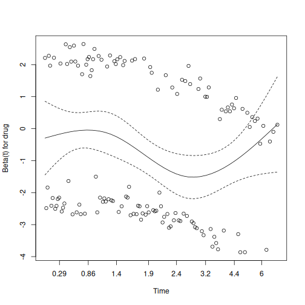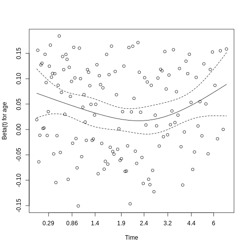
Interpretation:
The output shows a test statistic and p‐value for each covariate and a GLOBAL test.
For each row, p‐value \(<0.05\) indicates that covariate’s hazard ratio varies over time.
A GLOBAL p‐value \(<0.05\) indicates some covariate violates proportional hazards.
Graphs of residuals vs. time (plot(zph_test)) should show a roughly horizontal line under \(H_0\). Trends suggest time‐varying effects.
If all p‐values \(\ge 0.05\), we fail to reject \(H_0\) and conclude the proportional hazards assumption is reasonable.
Aftale- og concordance-mål
EJ KORREKTURLÆST MON IKKE DENNE SNARERE SKAL KONSOLIDERES MED DEN COHENS VI ALLEREDE HAR?
Used for
- Quantifying agreement between two raters classifying the same
subjects into categories, beyond chance.
- Real-world example: Assessing whether two pathologists agree on “Benign” vs. “Malignant” diagnoses.
Assumptions
- Each subject is independently rated by both raters.
- Ratings are categorical (nominal or ordinal).
- The marginal distributions of categories need not be equal.
Strengths
- Corrects for agreement expected by chance.
- Provides an interpretable coefficient, \(\kappa\), ranging from –1 to 1.
- Can be weighted for ordinal categories.
Weaknesses
- Sensitive to prevalence and marginal imbalances (“paradox”).
- Doesn’t distinguish systematic bias from random disagreement.
- Requires at least two raters and non‐sparse tables for stable estimates.
Example
Hypothesis
-
Null hypothesis (\(H_{0}\)): \(\kappa = 0\) (no agreement beyond
chance).
- Alternative hypothesis (\(H_{1}\)): \(\kappa \neq 0\) (agreement beyond chance).
R
# install.packages("psych") # if necessary
library(psych)
OUTPUT
Attaching package: 'psych'OUTPUT
The following objects are masked from 'package:DescTools':
AUC, ICC, SDOUTPUT
The following objects are masked from 'package:ggplot2':
%+%, alphaOUTPUT
The following object is masked from 'package:car':
logitR
set.seed(2025)
n <- 50
# Simulate two raters classifying subjects as "Yes" or "No":
rater1 <- sample(c("Yes","No"), n, replace = TRUE, prob = c(0.6,0.4))
# Rater2 agrees 70% of the time:
rater2 <- ifelse(runif(n) < 0.7,
rater1,
ifelse(rater1=="Yes","No","Yes"))
ratings <- data.frame(rater1, rater2)
kappa_result <- cohen.kappa(ratings)
# Display results:
kappa_result
OUTPUT
Call: cohen.kappa1(x = x, w = w, n.obs = n.obs, alpha = alpha, levels = levels,
w.exp = w.exp)
Cohen Kappa and Weighted Kappa correlation coefficients and confidence boundaries
lower estimate upper
unweighted kappa 0.077 0.34 0.6
weighted kappa 0.077 0.34 0.6
Number of subjects = 50 The estimated Cohen’s \(\kappa\) is
\(\widehat{\kappa} = \texttt{kappa_result\$kappa[1]}\)
The test statistic (z) =
\(\texttt{kappa_result\$z[1]}\)
with p-value =\(\texttt{signif(kappa_result\$p.value[1], 3)}\).
Since p = r signif(kappa_result$p.value[1], 3)
If p < 0.05, we reject \(H_{0}\) and conclude there is agreement beyond chance.
If p ≥ 0.05, we fail to reject \(H_{0}\) and conclude no evidence of agreement beyond chance.
Conventionally, \(\kappa\) values are interpreted as:
0.01–0.20: slight agreement
0.21–0.40: fair agreement
0.41–0.60: moderate agreement
0.61–0.80: substantial agreement
0.81–1.00: almost perfect agreement
EJ KORREKTURLÆST
Used for
- Assessing the reliability or agreement of quantitative measurements
made by two or more raters.
- Real-world example: Determining how consistently three radiologists measure tumor size on MRI scans.
Assumptions
- Measurements are continuous and approximately normally
distributed.
- Raters are randomly selected (for the “random‐effects” model) or
fixed (for the “fixed‐effects” model), depending on choice.
- No interaction between subjects and raters (i.e., rater effects are
consistent across subjects).
- Balanced design: each subject is rated by the same set of raters.
Strengths
- Quantifies both consistency and absolute agreement, with different
model/type options.
- Can accommodate any number of raters and subjects.
- Provides confidence intervals and tests for ICC.
Weaknesses
- Sensitive to violations of normality and homogeneity of
variance.
- Choice of model (one‐way vs. two‐way) and type (consistency
vs. agreement) affects results.
- Requires balanced data; missing ratings complicate estimation.
Example
Hypothesis
-
Null hypothesis (H₀): The intraclass correlation
coefficient ICC = 0 (no reliability beyond chance).
- Alternative hypothesis (H₁): ICC > 0 (measurements are more reliable than chance).
R
library(irr)
OUTPUT
Loading required package: lpSolveR
# Simulate ratings of 10 subjects by 3 raters:
set.seed(42)
ratings <- data.frame(
rater1 = round(rnorm(10, mean = 50, sd = 5)),
rater2 = round(rnorm(10, mean = 50, sd = 5)),
rater3 = round(rnorm(10, mean = 50, sd = 5))
)
# Compute two-way random effects, absolute agreement, single rater ICC:
icc_result <- icc(ratings,
model = "twoway",
type = "agreement",
unit = "single")
# Display results:
icc_result
OUTPUT
Single Score Intraclass Correlation
Model: twoway
Type : agreement
Subjects = 10
Raters = 3
ICC(A,1) = -0.0823
F-Test, H0: r0 = 0 ; H1: r0 > 0
F(9,16.8) = 0.77 , p = 0.645
95%-Confidence Interval for ICC Population Values:
-0.326 < ICC < 0.382Interpretation: The estimated ICC is -0.08 with a 95% CI [-0.33, 0.38] and p-value = 0.645. We fail to reject the null hypothesis. This indicates that there is no evidence of reliability beyond chance among the raters.
EJ KORREKTURLÆST
Used for
Assessing agreement between two quantitative measurement methods by examining the mean difference (bias) and the limits of agreement. It tests if any difference is constant across the range of measurements, and if there is heteroskedasticity in the data (are there differences that are dependent on measurement levels) Real-world example: Comparing blood pressure readings from a new wrist monitor and a standard sphygmomanometer.
Assumptions
- Paired measurements on the same subjects.
- Differences (method A – method B) are approximately normally
distributed.
- No strong relationship between the magnitude of the measurement and the difference (homoscedasticity).
Strengths
- Provides both a visual (Bland–Altman plot) and numerical summary
(bias and limits) of agreement.
- Easy to interpret clinically: shows how far apart two methods can
differ for most observations.
- Does not rely on correlation, which can be misleading for agreement.
Weaknesses
- Assumes constant bias across range of measurements.
- Sensitive to outliers, which can widen limits of agreement.
- Requires adequate sample size (n ≥ 30 preferred) to estimate limits reliably.
Example
Hypothesis
-
Null hypothesis (H₀): Mean difference between
methods A and B is zero (no systematic bias).
- Alternative hypothesis (H₁): Mean difference ≠ 0 (systematic bias exists).
R
# Simulated paired blood pressure measurements (mmHg) on 12 subjects:
wrist <- c(120, 122, 118, 121, 119, 117, 123, 120, 118, 119, 122, 121)
sphyg <- c(119, 121, 117, 122, 118, 116, 124, 119, 117, 120, 121, 122)
# Compute differences and means:
diffs <- wrist - sphyg
means <- (wrist + sphyg) / 2
# Calculate bias and limits of agreement:
bias <- mean(diffs)
sd_diff <- sd(diffs)
loa_up <- bias + 1.96 * sd_diff
loa_low <- bias - 1.96 * sd_diff
# Test for zero bias:
t_test <- t.test(diffs, mu = 0)
# Bland–Altman plot:
library(ggplot2)
ba_df <- data.frame(mean = means, diff = diffs)
ggplot(ba_df, aes(x = mean, y = diff)) +
geom_point() +
geom_hline(yintercept = bias, linetype = "solid") +
geom_hline(yintercept = loa_up, linetype = "dashed") +
geom_hline(yintercept = loa_low, linetype = "dashed") +
labs(title = "Bland–Altman Plot",
x = "Mean of Wrist & Sphyg Measurements",
y = "Difference (Wrist – Sphyg)")
R
# Print numerical results:
bias; loa_low; loa_up; t_test
OUTPUT
[1] 0.3333OUTPUT
[1] -1.597OUTPUT
[1] 2.263OUTPUT
One Sample t-test
data: diffs
t = 1.2, df = 11, p-value = 0.3
alternative hypothesis: true mean is not equal to 0
95 percent confidence interval:
-0.2923 0.9590
sample estimates:
mean of x
0.3333 The mean difference (bias) is 0.33 units, with 95% limits of agreement from -1.6 to 2.26 units. The t-test for zero bias yields a p-value of 0.266, so we fail to reject the null hypothesis. This indicates that there is no statistically significant bias; the two methods agree on average.
Key Points
- Use
.mdfiles for episodes when you want static content